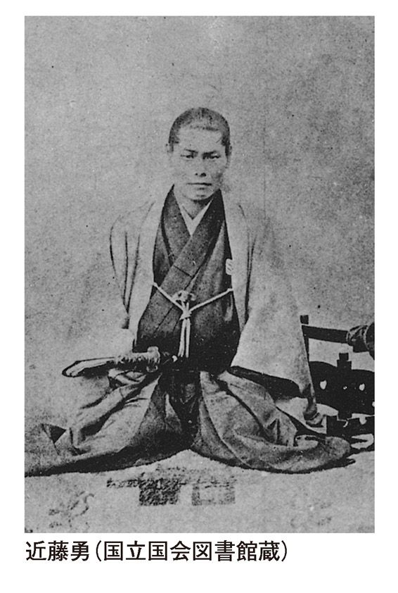

| 明治維新という過ち 【改訂増補版】: ～日本を滅ぼした吉田松陰と長州テロリスト～ | |
| 原田伊織 | |
| Mainichi Ones (2015) | |
明治維新という過ち 目次
はじめに ～竜馬と龍馬～
はじめに ～竜馬と龍馬～
本書は、ちょうど二年前に、私としては「止むに止まれぬ思い」に駆られて世に問うた同名単行本の改訂増補版である。「止むに止まれぬ思い」とは、危機感と表現してもよく、私がどのような危機感に襲われて筆をとったかは、本書をほんの数頁も繰っていただければ直ぐご理解いただけるはずである。
私は、初刊本では読者の皆さんが幕末動乱史については当然ここまではご存知であるという、自分なりに設定した一つの前提に立って執筆した。そういう場合、その前提を低く設定することは誠に失礼な態度であると感じるものであり、そのため不自然に多くのことを省略、または簡略に述べるにとどめてしまった。結果的にこのことが大いなる不親切をもたらしたようだ。
例えば、新撰組関連の事柄だけに限っても、芹沢鴨や清河八郎、永倉新八、それに斉藤一ら御陵衛士に属した人物、壬生の屯所、見廻組との関係、会津藩預かりとなった経緯といった事柄にはほとんど触れなかった。京都所司代と京都守護職の違いといった新撰組を取り巻く京の環境も含めて、すべて「幕末動乱史」を考えるについては大前提となる「常識」として端折って筆を進めてしまった。このことは、読者諸兄にとっては不親切極まりないことであったと反省している。
そのことで多くのご批判をいただきながら、幸いにも今こそこの国の「近代」の歩みを徹底的に検証すべきであるとの、本書の主旨に沿った強いご支持をいただいた面もあり、版元の判断もあって改訂増補版として再び世に問う機会を頂戴した。この国のあり方を憂い、強く推してくださった方々には冒頭に深く感謝申し上げたい。
実に幼稚な政権が、さまざまな幸運に恵まれてこの国をコントロールし、大きな混乱だけを残した後、政権は再び元に戻り、経済的にはようやく長い低迷を脱しつつあるかのような論調が社会を支配しているように見受けられる。しかし、政権と対峙するメディアにいわせれば、それはまだまだ確たるものではなく、私ども国民は今なお閉塞感に支配され、まだそこから完全には脱しきれないでいるという。経済の復活についてどちらに軍配を上げるかはさておき、確かに私どもの社会が安定感を失っていることは間違いのないところであろう。ところが、過去の歴史を振り返ると、平成日本は今、危険な局面に差しかかっている。彗星の如く国民の不満を吸収する政治勢力が現れるのは常にこういう時期であり、それが正しい社会の指針を提示することは少ないのだ。
私たちの社会が危険な芽を孕んでいるのは、「近代」といわれる時代に入ってからの日本人が過去に遡って永い時間軸を引くという作業をしなくなったことが深刻に関わっていると、私はかねてより考えている。私がこの世に生を受けた時、日本はその歴史上初めて独立を失っていた。外国の軍隊に占領されていたのだ。独立を回復したのは、私が小学校へ上がる前年のことである。ところが、日本人自身に自国が外国軍に占領され、独立を失っていたという〝自覚〟がほとんどないのである。従って、敗戦に至る過ちを「総括」するということもやっていないのだ。ただ単純に、昨日までは軍国主義、今日からは民主主義などと囃し立て、大きく軸をぶらしただけに過ぎなかった。
実は、俗にいう「明治維新」の時が全く同じであった。あの時も、それまでの時代を全否定し、ひたすら欧化主義に没頭した。没頭した挙句に、吉田松陰の主張した対外政策に忠実に従って大陸侵略に乗り出したのである。つまり、私たちは、日本に近代をもたらしたとされている「明治維新」という出来事を冷静に「総括」したことがないのである。極端に反対側（と信じている方向）へぶれるということを繰り返しただけなのだ。
この百年以上、誰もが明治維新こそが日本を近代に導き、明治維新がなければ日本は植民地化されたはずだと信じ込まされてきた。公教育がそのように教え込んできたのである。つまり、明治維新こそは歴史上、無条件に「正義」であり続けたのだ。果たして、そうなのか。明治維新の実相を知った上で、そのように確信したのか。
日本人は、幕末動乱のドラマが好きである。ところが、幕末動乱期ほどいい加減な〝お話〟が「歴史」としてまかり通っている時代はなく、虚実入り乱れて薩長土肥（薩摩・長州・土佐・肥前）の下級武士は永年ヒーローであった。中でも、中心は長州と薩摩であった。
それにしても不思議である。天皇のおわす御所に大砲をぶっ放すという、過去の歴史に存在しない暴挙を決行して「朝敵」となった長州が、大どんでん返しで政権を獲ってしまうのだから、いつの時代も政争というものは分からない。この一件に限っていえば、これには薩摩の存在が大きく作用している。いうまでもなく、大河ドラマなどでお馴染みの「薩長同盟」の成立である。これがなければ、どんでん返しは起こるべくもなかった。薩摩は、何故朝敵となった長州に手を差し伸べたのか。最後の将軍・徳川慶喜は、何故政権を放り出したのか。会津・庄内・二本松などの奥羽列藩は、何故あれほど苛烈に長州・薩摩に対して徹底抗戦を貫いたのか。
このような幕末の歴史には、それなりに既に回答が用意されている。回答を書いたのは、「朝敵」の烙印を押されたはずの長州人である。そして、「明治維新」そのものに対する評価に疑問を差し挟む余地など、これまで全くなかったのである。しかし、「御一新」、つまり『大政奉還』『廃藩置県』の後は、長州・薩摩の世になったということを忘れてはならない。つまり、明治以降とは、長州・薩摩の世であり、このことは根っこのところで大正、昭和を経て平成の今も引き継がれているということなのだ。即ち、私たちが子供の頃から教えられ、学んできた幕末維新に関わる歴史とは、「長州・薩摩の書いた歴史」であるということだ。どのような幕末資料を読むにしても、まずこのことが大前提となるのである。
「勝てば官軍」といういい方がある。きっかけはどうあれ、経緯はどうあれ、そして手段はどうであれ、勝った方が正義になるという人の世のやるせない真理を、この言葉は端的にいい当てている。あの時、この言葉を呟いた人びとは、長州・薩摩、そして土佐が自称した「官軍」が普遍性のある正義でも何でもないことを承知していたのだ。この言葉は、あの時会津が勝っていれば、即ち会津が「官軍」となったのだと、明快にいっているのだ。
そういう戦の勝者が、自分の都合に合わせて歴史を書くことは極めて普通のことであり、このことは古今東西、全く変わらない。そのことを承知しておくことが、歴史を学ぶ、ひいては歴史に学ぶ知性であることを知っておくことが肝要なのだ。
我が国においても、『古事記』『日本書紀』が時の天皇政権の立場で編纂されていることは、誰もが承知している。『記紀』は、政権がようやく安定してきた八世紀に成立したものである。ただ、『記紀』はやはり勝者の立場で編まれたものではあるが、遥かに長閑である。歴史上の政権というものは、時間をかけて安定に向かうものであって、その長閑さが普通である。私どもが教えられた幕末の歴史には、つまり長州・薩摩政権の書いた歴史には、そういう大らかさが微塵もない。それは、展望をもたない強引な政権奪取であったからだと思われるが、この場合の「強引」とは、いつの世も政権奪取というものは強引なものであるという「当然」の域を超えているという意味である。大切なことは、そういう歴史がこの百四十年以上綿々と教えられてきたという事実であり、そういう「長州・薩摩の書いた歴史」をまずは知るということであろう。それを知った上で、「長州・薩摩が書かなかった」ことの実相を整理した方が、歴史というものの正体、恐ろしさを知ることができるというものだ。
本書は、「長州・薩摩の書いた歴史」のポイントには触れるものの、それを改めて克明になぞろうとするものではない。読者諸兄は、学校教育やその後に接した著作物などを通してそれは十分ご存知であるとの前提に立ち、それが「御一新」の史実とどういう、或いはどれほどのギャップをもっているかを整理しようと試みるものである。即ち、大仰にいえば世にいう「明治維新」を一度「総括」しようという試みである。
例えば、私の大学の大先輩・故司馬遼太郎氏の著作に『竜馬がゆく』という作品がある。
改めていうまでもないが、これは司馬さんの小説である。つまり、フィクションである。だからこそ、司馬さんは「龍馬」とせず、敢えて「竜馬」とした。つまり、論理的にいえば「坂本龍馬」という土佐の郷士崩れのような男と「坂本竜馬」は別であって、司馬さん自身がそのことを十分意識しているということなのだ。勿論、歴史上の人物なり事象を小説という形にする時は、それはそれで別の有効な作用が働くことがある。司馬さんは、ご自身が認める通り〝龍馬ファン〟である。私は龍馬が好きで、好きで、とあちこちの書き物で〝弁明〟に努めている。頭を掻き掻き、照れ笑いをしている司馬さんが目に浮かぶような調子なのだ。
ところが、多くの人がこの小説に描かれた竜馬を、「坂本龍馬」の実像だと信じ込んだ。そして、このことが幕末動乱史の解釈を大いに誤らせたことは事実である。坂本龍馬とはそれほど巨大な人物でも何でもない。幕末の実相をあからさまにしようとするなら、『竜馬がゆく』における「竜馬」を、「坂本龍馬」にすっぽりと重ねてはいけない。「薩長同盟」の立役者、『大政奉還』の献策、『五箇条の御誓文』の基になったとされる『船中八策』の立案策定等々から、さまざまなエピソードに至るまで、この人物に関しては麗しき誤解が余りにも多い。
過去、坂本龍馬については、三度のブームがあった。つまり、龍馬とは、吉田松陰などと同様に死後その名を広く知られるようになった人物である。
彼を世に出したのは、新政権がようやく落ち着きをみせ始めた明治十六年に地元高知の地方新聞が掲載した連載小説である。これによって、龍馬は世に出た。二度目が日露戦争時だといわれる。龍馬が皇后の夢枕に立ち、「帝国海軍は絶対勝つ！」といったという、当時の有力紙に掲載された有名なエピソードである。いうまでもなく日本海海戦の直前のことだが、これなどは、土佐出身の宮内大臣田中光顕あたりの作り話であるとしか考えられない。
三度目が、昭和三十七年から産経新聞に連載された司馬さんの『竜馬がゆく』が起こしたブームである。このブームが定着し、龍馬は今や国民的人気を得ているといっていいだろう。
一つ、二つ冷や水を注しておくと、坂本龍馬という男は長崎・グラバー商会の〝営業マン〟的な存在であったようだ。薩摩藩に武器弾薬を買わせ、それを長州に転売することができれば、彼にとってもメリットがある。グラバー商会とは、清国でアヘン戦争を推進して中国侵略を展開した中心勢力ジャーディン・マセソン社の長崎（日本）代理店である。この存在が「薩長同盟」の背景に厳然とある。朝敵となった長州は武器が欲しい、薩摩は米が欲しい......この相互メリットをグラバー商会が繋いだ。薩摩は永年密貿易の経験があり、長州は口では「攘夷断行！」と喚いてはいたが、既に秘密留学生（井上聞多、伊藤俊輔がこれに含まれている）を送り出していたほど共に幕府の禁令を無視する存在であった。つまり、薩摩小松帯刀、長州桂小五郎が重視したのはグラバー商会であって、グラバー商会の利益を図る龍馬が「薩長同盟」に立ち会うようになったのは極めて自然な経緯ではなかったか。私は、そう考えている。盟約書の裏書は、第三者なら誰でもいいわけで、それがグラバー商会の意向を反映する人物なら、この同盟の目的からみても、あれほど憎しみ合った長州と薩摩双方とも納得できるはずだ。単なる一人の脱藩浪士なら、その人物を個人としてどれだけ評価したとしても、潜在的に討幕の意思をもち続けてきた外様二大雄藩が、藩の命運を託することなどありようがないのだ。尤も、龍馬とグラバー商会との関係から最近では龍馬＝フリーメイソン説が出ているが、それは〝図に乗り過ぎ〟というものであろう。いずれにしても、坂本龍馬とは、日本侵略を企図していた国の手先・グラバー商会の、そのまた手先であったということだ。
また、龍馬の脱藩の理由は全く分かっていない。そして、勝海舟を殺しにきて、逆に感化されて弟子になったなどというのは、ドラマとしては面白い話だが、私はウソであると思っている。御一新後、勝自身がそう語っているではないかという反論を受けるだろうが、それは勝の「ホラ」の一種であると断じていいのではないか。勝海舟という俄か御家人は、徳川慶喜（十五代将軍）と共に長州・薩摩に幕府を売った張本人であるが、御一新後の勝の〝思い出話〟ほど信用できないものはないのだ。
『船中八策』になると、これはもう、いつ、誰が、どこで発案したものか、全く分からない。そもそも伝わるような形の原案がそのまま存在したのかどうかさえ疑わしい。
その他、おりょうという女（寺田屋の養女）を妻とすること、郷士としての出自のこと、北辰一刀流免許皆伝のこと等々、この男ほど虚飾が肥大して定着した幕末人は他に例をみない。その意味では、司馬さんの罪は大きいといわねばならない。蛇足ながら、以上のことを以てしても私の司馬さんに対する「智の巨人」としての評価が揺らぐことは些かもない。
なお、昭和二十八年に起きた「荒神橋事件」によって京都大学から放学処分（二度と復学できないので退学処分より重い）を受けた経歴をもつ歴史学者松浦玲氏が、坂本龍馬の実像研究家としては著名である。勝海舟・横井小楠の研究家として名高い氏は、坂本龍馬に関しても、『検証・龍馬伝説』（論創社刊）を著されている。
歴史の実相を明らかにするには、多くを先人に学ばなければならない。しかし、かように幕末に関する資料や「お話」には、史実を知ろうとする場合には、細心の注意が必要である。近年は誰もが一次資料だ、二次資料だと騒ぎ立て、一次資料というだけで無条件に信じ込む単純さが幅を利かせているが、私はもともと書き物だけが資料だとは思っていない。京都・八坂通りの夕靄の中に佇めば、会津藩士や新撰組隊士が腰をかがめて、長州のテロリストを求めて疾駆する姿が眼前に浮かび上がるだろう。二条城周辺の闇は、京都見廻組の幕臣に暗澹たる思いを強いたことであろう。そして、蛤御門に残る弾痕は、無防備な御所が紛れもなく天皇に殺意をもつ者によって砲撃されたことを訴えている。私の生地・伏見界隈では、豆腐屋のラッパさえもが騒乱の中で愛した男たちの非業を嘆く女郎たちの泣声のように聞こえる。
歴史を皮膚感覚で理解するとは、その場の空気を感じとることだ。歴史を学ぶとは年号を暗記することではなく、往時を生きた生身の人間の息吹を己の皮膚で感じることである。資料や伝聞は、その助けに過ぎない。そういう地道な作業の果てに、「明治維新」という無条件の正義が崩壊しない限り、この社会に真っ当な倫理と論理が価値をもつ時代が再び訪れることはないであろう。
平成二十六年十一月二十二日 仏滅 小雪
井の頭池 樹林亭にて 原田 伊織
第一章 「明治維新」というウソ
廃仏毀釈と日本人
若いスタッフから廃仏毀釈について聞かれたことがあった。といえば普通のことのように聞こえるが、実はその読み方を聞かれたのである。この手のことになると、今や私は彼らに対して一種の諦観をもっているが、彼らの住まいともいうべきＷＥＢの世界でも、これは容易には解明できなかったとみえる。
廃仏毀釈......まだ幼い少年時代、初めて「明治維新」というものに生理的反感を覚えた最初のきっかけとなった出来事の名称である。振り返れば、ここから私の社会通念に対する〝闘い〟が始まったような気がする。
「ホントのところは、どうだったんだ？」
万事に、常にこの疑問がつきまとうようになり、それは語り継がれていた歴史についても同様であった。
山間の里で、日が暮れてもなお、相手がみえる限りぎりぎりの時間までチャンバラに興じ、「ぼっかんすいれん」や源平合戦に夢中になっていた頃、私たち少年のヒーローは鞍馬天狗だった。
「天狗のおいちゃん！」
と叫ぶ杉作少年（松島トモ子）を馬上からさっと救い上げ、アラカン（嵐寛寿郎）演じる鞍馬天狗は颯爽と馬上にあり、
「杉作！ 行くぞ！」
と曙に向かって疾駆していった。
「桂さん！ 日本の夜明けは近い！」
と朝焼けの空を確固と指差し、悪党集団新撰組に追われる正義の士・桂小五郎たちを助け、励まし続けた我らがヒーロー。それは、後の「月光仮面」の原型といってもいい。
こういう砂嵐の降る白黒映画は、年に一、二度、村の神社の境内の松の木から木へ白い布を張って、遠く中仙道・鳥居本宿からやってきた新聞屋（今でいう新聞専売店）が定期購読世帯へのサービスとして上映してくれた。娯楽と呼べるものの何もない里の子にとって、それは春祭りと地蔵盆と秋祭りが手をつないで一緒にやってきたような、心浮き立つ一大イベントであった。私どもはこうやって、エンターテインメントの世界でも「官軍教育」にどっぷりと侵されて育ったのである。私にとっては、それがいわゆる維新から九十年目くらいまでのことであった。
それからちょうど十年後、いわゆる維新から百年目、私は七十年安保動乱を「右翼反動軍国主義者」のレッテルを貼られた僅かな「反動勢力」として、「極左暴力集団」といってもいい「全共闘」や日本共産党の支配下にある「民青」と闘っていた。勿論、私は右翼でも、益して軍国主義者でもなかったが、左翼と称される者は、自分たちの主張に賛同しない者はすべて「右翼軍国主義者」と決めつけたものであった。まるで「爆弾三勇士」のような格好の五～六名で太い丸太を抱え、塩酸・硫酸ビンが顔面めがけて飛んでくる恐怖にたじろぎながら、それを投げつけてくる全共闘系のヘルメット学生が築いたバリケードに向かって突進していった。足許でビンが破裂し、床が焦げる匂いは、今も鼻に残っている。この時点で、正義は左翼暴力革命勢力の全共闘サイドにあり、数えるほどもいない私たちは「軍国主義」に肩入れする「日本人民の敵」である。私の大学でも、学生の九十五パーセント以上が民青や全共闘か、そのシンパであった時代、社会全体を左翼思想が支配しており、それが正義であった。もし、私が長州を助け白馬で疾駆する鞍馬天狗に興奮していた時代のままの思想傾向を保持したまま成長していれば、私もバリケードの内側から火炎ビンや硫酸ビンを投げる側にいただろう。
僅か十年で私を根底から変えてしまった最初のきっかけ......それが「廃仏毀釈」という、俗にいう「明治維新」というものを象徴する言葉であった。
誰もが学校の歴史の時間に習ったはずの、この「廃仏毀釈」とは、俗にいう「明治維新」の動乱の中で、明治元年に長州・薩摩を中心とする新政権の打ち出した思想政策によって惹き起こされた仏教施設への無差別な、また無分別な攻撃、破壊活動のことを指す。これによって、日本全国で奈良朝以来の夥しい数の貴重な仏像、仏具、寺院が破壊され、僧侶は激しい弾圧を受け、還俗を強制されたりした。ひと言でいえば、長州・薩摩という新権力による千年以上の永きにわたって創り上げられた固有の伝統文化の破壊活動である。現代のイスラム原理主義勢力・タリバーンや「イスラム国」を思えば分かり易いであろう。
発端は、新政権が出した太政官布告『神仏分離令』と明治三年に出された『大教宣布』にある。学者は、これ自体が直接仏教排斥を指示したり、煽ったりしていないとするが、それは文章面のことであって当たり前である。これを後ろ盾として、仏教弾圧の嵐が吹き荒れたことは否定のしようもないことなのだ。
私ども大和民族は、それまで千年以上にわたって「神仏習合」という形で穏やかな宗教秩序を維持してきた。平たくいえば、神社には仏様も祀って別け隔てなく敬ってきたのである。これは、極めて濃厚にアジア的多元主義を具現する習俗であったといえる。それをいきなり廃止せよと命じ、神社から仏教的要素を徹底的に排斥することを推進し、ご神体に仏像を使用することも禁止したのである。これが、全国的に大々的な廃仏運動を燃え盛らせたのだ（平成日本人は、「神仏習合」が大和的な、大らかで自然な姿であったことも知らなくなっている）。
今、近代と呼ばれる世界は一元主義によって行き詰まりにきている。長州・薩摩権力が一転して狂ったようにかぶれた西欧文明はまもなく確実に終焉を迎えるであろうが、それは言葉を換えれば一元主義の破綻といっていい。もともと大和民族は、多元主義的な生態を維持してきた故に、多少の混乱期を経験しながらも長期的には平穏な生存空間を、政治的な版図を超越して維持してきたのである。単に島国であったから、という地勢的な理由だけに頼るのは余りにも稚拙というものであろう。
ところが、長州・薩摩の下層階級が最初にかぶれた思想とは実に浅薄なもので、単純な平田派国学を旗印に掲げ、神道国教・祭政一致を唱えたのである。これは、大和民族にとっては明白に反自然的な一元主義である。ここへ国学の亜流のような「水戸学」が重なり、もともと潜在的に討幕の意思をもち続けてきた長州・薩摩勢力がこれにかぶれ、事の成就する段階に差しかかって高揚する気分のままに気狂い状態に陥ってしまったのだ。水戸と水戸学の狂気については、別に一章を設けて整理したい。こういう現象は、革命期にはよくあることではある。とはいえ、神政政治を目指す、神道を国教とする、仏教はそもそも外来のものである、すべてを「復古」させるべきだというのだから、これはもうヒステリー状態に陥ったというべきであろう。では、どこへ「復古」させるのが「正しい」のか......当然、五世紀以前ということになる。
そもそも長州・薩摩は、徳川政権を倒すために天皇を利用しようとしたに過ぎない。そのために「尊皇攘夷」という大義名分が必要となった。これは、どこまでも「大義名分」に過ぎない。長州・薩摩が純粋に「尊皇」精神をもっていたかとなると、幕末動乱期の行動、手法が明白に示す通り、そういう精神は微塵ももち合わせていない。「尊皇攘夷」を便法として喚き続けているうちに本当に気狂いを起こし、「王政復古」を唱え、何でもかでも「復古」「復古」となり、大和朝廷時代が本来のあるべき姿であるとなってしまった。その結果、寺を壊せ、仏像を壊せ、経典を焼け、坊主を成敗せよ、となってしまったのである。
この「廃仏毀釈」を単なる民衆の行き過ぎた一時的なムーブメントとし、新政権の方針とは全く無関係であると学者はいい続けてきたが、それは違う。新政権政府は、僧侶に対して『肉食妻帯勝手なるべし』と、わざわざ命令している。僧侶に戒律を犯させ、仏法の教えにいうところの「破戒」をさせようと企図したことは明白である。凡そ政治施策を推進する上で、こういう手法は実に知性、品性に欠ける下劣な手法であるといわざるを得ない。このようにして、俗にいう「明治維新」という動乱期に、日本の伝統文化・芸術の根幹を担ってきた日本の仏教は、宗教としても文化的価値としても徹底的に弾圧されたのである。
奈良・興福寺や内山永久寺の惨状は、中でも筆舌に尽くし難い。興福寺だけで二千体以上の歴史を刻んできた仏像が、破壊されたり、焼かれたりしたことが分かっている。僧侶は、ほとんど全員が神官に、文字通り〝衣替え〟したり、還俗することを強要された。経典は、町方で包装紙として使われるというゴミ同然の扱いを受け、五重塔は二十五円（一説には十円）で売りに出された。薪にするために売りに出されたのである。多くの宝物は、混乱に乗じた略奪等によって散逸し、二束三文で町方に出回ったのである。因みに、現在の奈良ホテルや奈良公園は、当時の興福寺の敷地内である。興福寺と共に我が国四大寺の一つという格式を誇った内山永久寺に至っては、更に酷いもので、徹底的に破壊され尽くし、今やその痕跡さえみられない。姿を残していないのだ。この世から抹殺されてしまったのである。「廃仏毀釈」とは、それほど醜い仏教文化のせん滅運動であった。
「復古」「復古」と喚いて、激しく「尊皇攘夷」を口先だけで主張し、幕府にその実行を迫ってテロを繰り広げた長州・薩摩人は、このように古来の仏教文化でさえ「外来」であるとして排斥したのだが、政権を奪うや否や一転して極端な西欧崇拝に走った。「尊皇攘夷」式にスローガンとしていうならば、今日からは「脱亜入欧」だと豹変したのである（後に福澤諭吉が唱えた「脱亜入欧」は、経緯、主旨が異なる）。
明治九年に新政権政府がドイツから招いたベルツ博士が日記を残している。いわゆる『ベルツ日記』であるが、これは数多く存在する往時を伝える貴重な資料の一つである。ベルツは日記に曰く、
『日本人は、自分たちの過去＝歴史を恥じている。また、日本には歴史なんかありません、これから始まるのです、という』
ベルツ自身は、日本女性と結婚し、二十一年間も日本に滞在した知日家・親日家であるが、そういうヨーロッパ人が驚くほど日本人が日本的なるものを根底から否定し、自らを卑下していたのである。驚くほど全く同じように、朝日新聞を知的基準とする「戦後知識人」といわれる層や、私が『原田伊織の晴耕雨読な日々』（毎日ワンズ刊）で規定した「ユーミン世代」といわれる世代も、全く同様のメンタリティをもっている。自分たちの過去、その直近である江戸期社会とは、国際的にみても真に高度な独自の文明システムを創り上げた社会として、近年になってようやく内外の一群の学者たちによって「江戸システム」として研究・分析され、人類史的にみても驚くべき高度な社会システムであったとして評価されるようになってきた。ベルツが接した日本人の多くは、「成り上がり」といっていい当時の新しい上流階級、即ち長州・薩摩人や長州・薩摩に与した勢力の新興階級である。豊かな教養環境とはほど遠い下層階級から政治闘争（実際には過激なテロ活動）に身を投じた彼らは、俄か仕立ての水戸学だけを頼りに「大和への復古」を唱えて「廃仏毀釈」という徹底した日本文化の破壊を行った挙句に、今度は一転して「脱亜入欧」に精魂を傾けたのである。これほど激しい豹変を、それも昨日と今日の価値観が逆転するといった具合に短期間に行った民族というものも珍しい。どちらの態度も、己のアイデンティティを破壊することに益するだけであることに、彼ら自身が気づいていなかったのである。
日本人は、テンション民族だといわれる。いわゆる「明治維新」時と大東亜戦争敗戦時に、この特性が顕著に顕れた。その悪しき性癖は、今もそのまま治癒することなく慢性病として日本社会を左右するほど悪化していることに気づく人は少ない。
奈良・興福寺の仏像修復に精魂を傾けたのは誰か。彼の努力がなかったら、今日私たちは興福寺で仏像を鑑賞することができないのである。それは、文部官僚岡倉天心である。彼が、長州人を中心とした西欧絶対主義者たちによって職を追われたことと、それにも拘わらずその後も彼が地道に仏像修復に当たらなかったら、今日の興福寺さえ存在していなかったことを、私たちは肌身に刷り込んで知っておくべきであろう。
「官軍教育」が教える明治維新
前節で述べた通り、私自身が、長州・薩摩の書いた歴史、即ち「官軍教育」を叩き込まれて育った世代である。学校での教えだけにとどまらず、遊びやエンターテインメントの世界も「官軍教育」で貫かれていたのである。では、今の若い世代はどうかといえば、これが全く変わっていないのだ。今現在、高校で使われている歴史教科書を読んでみたが、軸になっている教えは、半世紀以上昔にそれを習った私の世代のそれと何も変わっていなかった。つまり、老若男女を問わず私たち日本人は、この百四十年以上「官軍教育」以外の歴史を教えられたことはないのである。となれば、今更ここで俗にいう「明治維新」の解釈を私が改めて整理する必要はないはずで、読者諸兄周知の通り、で済ませてもいいのかも知れない。
ところが、平成日本にも、アメリカ・イギリスに遅れること二十年を経てようやく「パラダイムシフト」の波が押し寄せている。パラダイムとは、社会を成立させている基本的な価値観のことをいう。この基本的な価値観の大転換が、今まさに進行しているのだ。アメリカ・イギリスで八十年代に始まったこのムーブメントは、文明史という広く、大きな視点で捉えるべき歴史的な事象であるが、平成日本人は、この言葉を知る人たちでも東日本大震災をきっかけとして生まれた流行事象のような捉え方をしている。これは全く的外れであって、この文明の波は西暦二千年に入った頃からさまざまな現象を惹き起こしているのだが、これらのことは別の機会に譲りたい。
いずれにしても、私たちは今「パラダイムシフト」の波に呑み込まれている。そのことが基底にあって、今の若い世代は歴史というものについても少なくとも私の若い頃より冷静に引いて、俯瞰してそれをみるということが容易になっている。それが、「パラダイムシフト」がもたらした「時代の気分」の一つでもあるのだ。このまま推移すれば、これまでの誤った歴史知識や歴史認識が自ずと修正されていくべきところなのだが、こと日本に関してはこれまで過去に遡って時間軸を引き、それに沿って史実を検証するということを全く行っておらず、自分たちがどういう種類の歴史知識や歴史認識を身につけているか、そのこと自体が分からないのである。そのことを思うと、やはり最初に、長州、薩摩が俗にいう「明治維新」について、薩長政権成立以来この百四十五年間、どういう解釈を社会に押しつけてきたかを、そのコンセプト部分だけでも整理しておく必要があるだろう。
そもそも「明治維新」という事件なり、事変というものは歴史上どこにも存在しない。今更ながら、この初歩的な一点を明確に意識しなければ、幕末動乱の史実というものはいつまで経ってもその実相が浮かび上がらないであろう。強いて簡略に定義づければ「江戸幕府とその社会体制の転覆を図り、天皇親政を企図して、これらを実現させた、長州・薩摩による一連の政治、軍事活動」とでも表現できるだろう。「一連の～」というからには一定期間を対象とした言葉であって、いつからいつまでが「明治維新」なのかというテーマに対してはさまざまな学者、研究者が実にさまざまな解を主張している。開始時期についても、明治と改元された明治元年とする学者もいれば、黒船の来航からとする研究者に至るまでさまざまであり、終結時期に至っては廃藩置県（明治四年）までとする主張があれば、西南の役（明治十年）までとする説、立憲体制の確立までとする説などがあり、これに関しては定説というものは全く存在しない。立憲体制の確立といっても、何を以て立憲体制の確立としているのかよく分からない説もあり、結局、時期については「諸説がある」としかいいようがないのだ。いや、定説があるといい切るのは、書斎だけで研究している学者だけだといっていいだろう。
いずれにしても、明治維新というものが特定の事件でも事変でもないとすれば、年号を暗記することが歴史の勉強だと思っている学生諸君には申し訳ないが、時期について幅があるのは当然であろう。枢要なことは、私たちが教えられ、現在も公教育が教える歴史観によれば、この明治維新が欧米列強による日本の植民地化を防ぎ、明治維新があってこそ日本は近代化への道を歩むことができたとする点である。長州藩士、薩摩藩士を中心とする「尊皇攘夷」派の「志士」たちが、幕府や「佐幕派」勢力の弾圧にも屈せず、「戊辰戦争」で見事に勝利して討幕を成し遂げ、ようやく日本は「近代」の扉を開き、今日の繁栄があるとするのだ。そして、陋習な社会を支配してきた封建的な江戸幕府を倒し、近代日本の幕開けである「維新」を成し遂げた功労者が、長州の吉田松陰、桂小五郎（木戸孝允）、高杉晋作、山縣有朋、伊藤博文、井上馨、薩摩の西郷隆盛、大久保利通、土佐の坂本龍馬、板垣退助、後藤象二郎、肥前の大隈重信、江藤新平たち、いわゆる「薩長土肥」の下級武士たちであったとする。学者は、以上の一つひとつの単語についていろいろ異議を差し挟むだろうが、ここでは大意が必要であり、以上がこの百四十五年間、この社会に定着してきた明治維新のコンセプト部分であるとして、まず問題はない。
誠に美しい歴史観であるが、私は、以上のほぼすべてを否定する。ここでいう「否定」とは、史実ではないという意味である。
例えば、「尊皇攘夷」や「勤皇」という言葉を長州・薩摩藩士の代名詞のように受け止めることが多く、彼らのことを「尊攘派」と呼ぶ学者すらいるが、これほど幕末期の政治情勢を無視した話はない。多くの人が「勤皇」＝「尊皇攘夷」と解釈し、「勤皇」と「佐幕」を対立語として使っているが、これもまた当時の実態から著しく乖離しており、こういうレベルで幕末を語るから、史実とかけ離れた安直な歴史物語が生まれるのである。
例えば、をもう一つ挙げれば、「勤皇」の「志士」と呼んでいる、先に挙げた「薩長土肥」の人物像がでたらめに麗しく語られている。結論だけを先に述べれば、彼らは現代流にいえば「暗殺者集団」、つまりテロリストたちである。我が国の初代内閣総理大臣は「暗殺者集団」の構成員であったことを知っておくべきである。また、「維新」の精神的支柱とまでいわれる吉田松陰が、事あるごとにどれほど暗殺を主張したか、それ故に当の長州藩が如何にこの男に手を焼いたか、もうそろそろ実像を知るべき時ではないか。もし、己の政治信条や政治的欲求を実現するためにはテロもやむなしという立場を肯定するならば、彼らを内輪だけで「志士」と呼んで英雄視するのもいいだろう。しかし、私は、テロリズムは断固容認しない。テロを容認しないことが、当時も今も正義の一つであると信じている。従って、彼らを「志士」と評価することなどあり得ようはずがなく、テロリストはどこまでもテロリストに過ぎない。そのテロの実態は、以下の章で詳しく述べる。
「復古！」「復古！」と喚き、「廃仏毀釈」という歴史的にも恥ずべき文化破壊活動を繰り広げた維新新興勢力が、後世にでもこれを恥じたかと問えばそういう事実はない。世代わりとは、動乱を伴うものである。そして、動乱とは武力によって成立するものであるから、後世からみればそういう愚かなムーブメントが一時的にせよ社会を支配することは、避けられないことかも知れない。勿論、仕方がないでは済まされない、回復不能な文化的損失が甚大であったことを、この先も忘れることはできない。
「復古」とは、そもそも『王政復古』という国学者の唱えた政治スローガンがもたらした時代の気分である。今、私は、ひと言で「幕末動乱」といわれる台風の真ん中に飛び込んで、明らかな誤りや誤解を正しながら、先々「官軍の書いた歴史」が子孫のために正しく修正されることを願って、動乱のこの時代を整理しようとしている。維新や幕末といわれる一定のスパンをもつ時代の台風の目が、『大政奉還』であり『王政復古』である。
私たち日本人は幕末史だけは好きなようで、さまざまな事件、人物が、さまざまな形式で物語られてきたが、それは驚くほど単純化されている。それらに、まるで「鞍馬天狗」のようにすっきりと、気持ち良く割り切れるものが多いのは、まさに「官軍教育」の賜物である。永らく五百円札の肖像は、討幕派の象徴・下級公家の岩倉具視であったが、このことは昭和になっても「官軍思想」が根強く生きていたことを示している。勿論、平成日本人も「官軍思想」の中に何の疑問も抱かず、自分たちのたかだか百数十年という短い期間の歴史すらほとんど知ろうとせずに気楽に生きているといえるだろう。
江戸という時代は、特に後期になると、諸学が盛んになっており、学問的には多様な時代であったが、幕末近くなるに従い国学諸派が力を得てきた。その国学の思想の中に、徳川幕府による全国統治は、朝廷即ち天皇が徳川将軍家に委任したものであるという考え方があり、これを大政委任論と呼ぶ。しかし、この思想は、何も国学者によらずとも自然な形として大和民族の精神には、十分消化され、染み込んでいるものである。律令制の時代から、征夷大将軍とは朝廷内の官名であり、多少その性格が変わったのは頼朝からである。将軍とは清和源氏の流れを汲んでいないとなれない、信長は平氏を名乗ったから将軍にはなれなかったなどというもっともらしい説もあるが、こういうことがいわれるのも将軍というものが朝廷から任命されるものという感覚の名残が消えなかったからだといえよう。
天皇の住まい＝御所の佇まいは、観光名所として直接目にした人も多いだろう。一つの永い歴史をもつ民族の最高権力者の住まいである。それにしては、その塀の低さはどうしたことかと気づいた人もまた多いことであろう。余りにも無防備である。こういう例は、おそらく我が国以外にはあるまい。都の庶民にとって、天子様とは文字通り「お天道様」のような崇高な存在ではあるが、決して権力者ではなかった。自分たちが神仏の加護を得て平穏に生きておられるのも、神々との架け橋であられる天子様がそこにおられてこその話なのだ。この国の民にとってもともと天皇とは、そういう存在である。これを侵す者がどこにいようか。従って、高い塀も、城壁のような防御施設も御所には要らないのである。まず、民にとって天子＝天皇とはどういう存在であったか、この点の認識を間違うと、動乱の時代の解釈も間違うことになる。大東亜戦争（太平洋戦争）が終わって進駐軍が今の憲法を作るに際して、わざわざ天皇を『日本国民統合の象徴』であるとしたが、笑止千万といわざるを得ない。古来、大和の時代からこの国の天子は、大和民族統合の象徴であり、それ以外の何ものでもなかったのである。
結局、江戸期の諸学の隆盛が「尊皇論」を生み、同時に「佐幕」という概念と言葉も創った。幕末近くになると、諸大名から幕臣に至るまで、即ち、武家の間に「尊皇意識」は深く浸透しており、幕末動乱期には「尊皇佐幕」という立場が武家としてはむしろ一般的であったと考えられるのだ。「佐幕」とは「幕府を助ける」という意味であるが、幕府そのものも、そして時の天皇・孝明天皇その人が「尊皇佐幕派」の代表であったことを知っておく必要があるのだ。
「尊皇攘夷」を声高に叫ぶ長州・薩摩のテロリストたちを動かしていた桂小五郎（木戸孝允）や西郷吉之助（隆盛）、大久保一蔵（利通）たちには、その実において「尊皇」という意識が強烈にあったかといえば、それは全くない。それは、討幕のための、そのためのテロ活動のための単なる「大義名分」に過ぎなかった。そのことは、彼らの幕末動乱期の活動、行動が明白に物語っている。彼らは、「尊皇」という時代の気分を、更には天皇そのものを単に利用しただけに過ぎない。特に、彼らの朝廷、天皇の政治利用については、明治維新というものの実相を浮かび上がらせるためには、何はさておき詳らかにしておかなければならない。このことも順を追って整理していきたい。
一方、徳川将軍家は勿論、諸大名、旗本・御家人という幕臣などはほとんどが「尊皇佐幕派」といっていいだろう。当時の読書階級＝武家にとっては、当然の教養、知識であって、彼らが身に付けていた学問的素養に照らして「尊皇」という倫理観にも似た気分と「佐幕」という政治的立場は全く矛盾していなかったのである。具体的な人物でいえば、以下の幕末動乱期の主要な登場人物は、すべて「尊皇佐幕派」と位置づけられる人びとである。
・時の天皇 孝明天皇
・十四代将軍 徳川家茂
・十五代将軍 徳川慶喜
・京都守護職 松平容保（会津藩主）
・大老 井伊直弼（彦根藩主）
・京都所司代 松平定敬（桑名藩主）
・薩摩藩藩父 島津久光
・土佐藩主 山内容堂（豊信）
・新撰組局長 近藤勇以下幹部
・思想家 兵学者 佐久間象山
・長岡藩家老 河井継之助
その他、藩でいえば奥羽越列藩同盟を構成した諸藩や、小栗上野介、木村摂津守、水野忠徳、岩瀬忠震、川路聖謨などの対外交渉に当たった幕府高官はすべてこの範疇に入る。付言すれば、幕臣でありながら勝海舟は明らかな「討幕派」である。
一般には、意外な人が、と思われる列挙かも知れないが、以上はほんの一部である。真っ先に挙げた孝明天皇とは、長州人が口を開けば「尊皇攘夷」を喚いていた、まさにその時の「尊皇」に当たる人である。この天皇が、討幕を、また天皇親政を考えたことは微塵もない。政治は幕府に委任しているし、そうあるべきものというのが、この天皇の一貫した考え方であった。その意味で、「尊皇佐幕」の筆頭に位置づけるべき方であろう。そうなると、この天皇がおわす限り長州・薩摩は武力討幕ができなくなる。討幕という目的の最大の障壁が孝明天皇、その人であったのだ。ここに、我が国テロ史上でも、もっとも恐ろしい暗殺が発生することになる。
そのことは後に譲るとして、薩摩の島津久光が「尊皇佐幕派」であることに驚く読者がおられるかも知れない。しかし、このことは、土佐の山内容堂以上に明白な史実である。島津久光や山内容堂が「尊皇佐幕派」であって「討幕派」ではない点に、幕末の実相を理解する大きなポイントがあるのだ。
歴史に「もし」（ヒストリカル・イフ）は禁物、とよくいわれるが、敢えて「もし」と考えてみる。もし、長州・薩摩のテロを手段とした討幕が成功せず、我が国が「明治維新という過ち」を犯さなかったら、我が国はその後どういう時代を展開し、どういう国になっていただろうか。私は、徳川政権が江戸期の遺産をうまく活かして変質し、国民皆兵で中立を守るスイスか自立志向の強い北欧三国のような国になっていたのではないかと考えている。このことについては、もっともっと細密に精査、研究する必要があるが、少なくとも吉田松陰の主張通りに大陸や南方侵略に乗り出すことはなく、挙句に大東亜戦争という愚かな戦争に突入して国家を滅ぼすことだけは断じてなかったであろう。
幼い天皇を人質とした軍事クーデター
嘉永六（１８５３）年、ペリーが来航し、開国通商を求める。ここからいわゆる明治維新が始まったとする説が大勢を占めているが、この頃既に長州・薩摩を中心とした討幕活動は活気づいており、世情は騒然としていた。時代は、嘉永から安政、万延、文久、元治、慶応と推移し、この間の出来事として学校教育は、列強諸国との和親条約、通商条約の締結、これに反対する「尊攘派」の闘争、安政の大獄、桜田門外の変、池田屋事変、禁門の変、長州征伐の失敗などを教え、慶応三（１８６７）年、遂に幕府は『大政奉還』を申し出て、朝廷は『王政復古の大号令』を発したとする。その後の抵抗勢力討伐のための戊辰戦争も明治二（１８６９）年の箱館戦争を以て終結、明治新政府は日本の近代化に邁進した、とするのだ。実に荒っぽい流れではあるが、この流れは誰もが学校教育で習ったストーリーであり、これを思い出して、背景として頭に置いていただきたい。
時系列に事を並べるという点では、この流れに間違いはない。そして、『大政奉還』と『王政復古の大号令』を以て、約二百七十年という永い平和を維持してきた江戸幕府の治世が終わったことは事実であり、これは、いわゆる明治維新の一つのゴールといえるだろう。
まずは、このゴールが実相としてはどういうものであったか、そこから官軍教育のウソを剥がしていきたい。
慶応三（１８６７）年、土佐藩が将軍徳川慶喜に対して大政奉還の建白書を提出した。慶喜はこれを受けて京都・二条城に諸藩を召集（約四十藩が参加）、大政奉還について諮問した。京都観光で二条城を訪れた方は、このシーンが再現されている広間をご覧になったことだろう。
諮問といっても、これは形式手続きに過ぎない。慶喜は即、明治天皇に対して上奏文を提出、その翌日、天皇は参内した慶喜に対して『大政奉還勅許』の「沙汰書」を授けられて、これで大政奉還が成立した。土佐藩が建白書を提出してから、僅か十二日後のことである。
一つ注意を要することは、最後の将軍となった徳川慶喜は、どうしていいか分からず土佐藩の建白に従ったわけではない。私は、徳川慶喜という人の武人としての資質と政治家としての人間性には疑問をもっている。はっきりいえば、武人、一軍を率いるリーダーとしては失格だと思っている。ただ、長州のテロリストたちが恐れたように、頭の切れるところがあり、時にしたたかささえみせる人であった。
日本史を揺るがせた『大政奉還』という大激変が、実にシンプルでスピーディに成就したかにみえるが、これは表面だけのことで舞台裏は壮絶である。そのことは少し措くとして、慶喜がこれほどまでにスピーディに事を運んだのは、そうせざるを得なかった深刻な理由があった。
この慶応三年十月時点でも、朝廷内の討幕派公家は少数派であったことを、まず基本環境として理解しておく必要がある。三条家という長州派の過激派公家は四年前の文久三（１８６３）年の『八月十八日の政変』で追放されており、岩倉具視を中心とする少数の討幕派公家はいずれも下級公家である。八十年ぶりの摂政に就任していた二条家や賀陽宮家という親徳川派、即ち「尊皇佐幕派」の上級公家が朝廷の主導権を握っていた。そこで、岩倉具視や薩摩の大久保利通たちはどうしたか。偽の勅許（偽勅）を作った。即ち偽の「討幕の密勅」である。これは、天皇、摂政の署名もなければ、花押もないという〝天晴れな〟偽物である。
この事実は、本来特筆されるべき史実である。民族統合の象徴として、民族の歴史そのものとして存在していた天皇は、いざとなればいつでも国家の最高権力者たり得るのだ。そういう存在である天皇の政治的意思を表明する「勅許」というものを、己の政治的野心を遂げるために「偽造」したのだ。この国においてこれほどの悪業、大罪が他にあるだろうか。どのような悪人でも、まずこのような発想をしないのではないか。長州・薩摩と過激だけが「売り」の下級公家・岩倉具視は、この瞬間「偽天皇」になったのである。
この「偽勅」が長州藩士の広沢真臣と薩摩藩士の大久保利通に下されたのは、慶応三（１８６７）年十月十四日である。この時の天皇はどなたであったか。いうまでもないであろう、明治天皇である。嘉永五（１８５２）年お生まれの帝は、この時正確には満十四歳。摂政が廃止される直前のことで、時の摂政は二条斉敬。ところが、この時の「偽勅」はまさに「偽勅」らしく摂政二条斉敬の署名もない。天皇の直筆は勿論、摂政の署名も、あまつさえ花押もないという堂々とした「偽勅」を下すとは、長州・薩摩が、そして岩倉具視が、如何に天皇を軽んじていたかの明白な証左となるものである。因みに、誰の署名があったかといえば、中山忠能（前権大納言）、正親町三条実愛（前大納言）、中御門経之（権中納言）の三名である。大東亜戦争を強引に惹き起こした中心勢力は、長州軍閥の巣窟といわれる帝国陸軍の参謀本部であるが、国家が滅亡するまで止まなかった長州・薩摩政権による天皇の政治利用は、ここから始まっているのだ。
ところが、慶喜サイドではこれを「密勅が下る」と解釈した。まさか大久保たちが勅許の偽物を作るとは思ってもいない。密勅とはいえ勅許が下ることは、幕府としては避けなければならない。そこで、先手を打って『大政奉還』に出たのである。これによって「討幕」の大義名分を消滅させたのである。
大政奉還を行っても、所詮朝廷に政権運営能力はない。つまり、統治能力はない。慶喜サイドがそう読んだことは明らかである。形式はどうあれ、実権は依然として徳川が握ることになるという〝政局判断〟であり、事実この判断、読みは間違っていなかった。慶喜という人は、こういう頭の切れ、狡猾さはもっていたのである。朝廷には、政権担当能力は勿論、その体制そのものが存在しなかった。大政奉還から一週間が経って後、朝廷は、外交については引き続き幕府が担当することを指示している。列強との外交諸問題が緊迫していた時期である。朝廷も、それ以外に為す術がなかったということだ。諸外国への新潟開港の延期通告事務は、結局幕僚が行っている。
冷静にこの時期の我が国の置かれていた政治外交環境を思い返してみると、よく分かるはずだ。世にいう黒船の来航は嘉永六（１８５３）年のことであった。徳川慶喜が大政奉還という挙に出る十四年前のことだ。京が長州人を主としたあぶれ者たちによるテロによって血塗られたピークは文久二～三年頃であるが、それが大政奉還の四年前のことであった。この嘉永六年から文久三年に至る十年間というもの、幕府は、アメリカ合衆国、ロシア、イギリス、フランス、プロシャ等を相手にして、次々と和親条約、通商条約の締結を迫られ、独立と国益を守るべく必死の外交交渉を続けてきたのである。討幕の意思を秘める長州と薩摩は、そういう幕府の足を引っ張るだけでよかった。
国家が危急の際には、人材が現れる。よくしたものである。この時期、幕府を支えた実務官僚を指して「幕末の三傑」といういい方がある。岩瀬忠震、水野忠徳、小栗忠順のことをいう。私にはこれに若干異論があり、いうとすれば「幕末の四傑」ではないかと思っている。川路聖謨が抜けているのだ。中には、いや、井上清直を入れないのも片手落ちであり、「幕末の五傑」というべきだと主張する人がいるかも知れない。いずれも幕臣であり、幕末外交に奮闘した優秀な武家官僚である。ハリスを全権とするアメリカ合衆国との間の日米修好通商条約に署名したのは、井上清直と岩瀬忠震である。岩瀬は、その前にロシアとの間に日露和親条約を締結している。水野忠徳は、その後の日露交渉で川路聖謨を補佐するとともに日英修好通商条約、日仏修好通商条約に日本側全権委員として署名した。アメリカのあのハリスと英国の初代駐日外交代表・オールコックが組んだ米英連合を相手にし、壮絶な通貨の交換比率交渉を展開し、鋭い知性でハリスとオールコックをたじたじとさせたのが水野忠徳である。いずれも、現代の外務官僚と比べても、その見識の深さと東奔西走の行動力、外交モラルの高さには驚嘆すべきものがあり、外交特権を利用して卑しい私腹肥やしに汲々としたハリスやオールコックと比べても水野の知性、倫理観、胆力というものは、彼らを遥かに上回っていた。また、条約の批准手続きのための外交団の目付として井伊直弼に抜擢されて渡米した小栗上野介忠順の知性と品格に「ヘラルド・トリビューン」をはじめとするアメリカの現地紙が感嘆の記事を掲載して敬意を表したことは広く知られている逸話である。
こういう幕府の高度に訓練されたテクノクラートの存在は、彼ら自身の素地は勿論無視することはできないが、幕府がそれなりに外交経験を積んできたことを示している。嘉永六年にペリー率いる黒船が来航して、その武力威圧に屈して幕府は遂に開国したというのが「官軍教育」に則って今も学校で教える日本史である。ところが、実際には幕府は天保十三（１８４２）年に『薪水給与令』を発令し、文政八（１８２５）年から施行されてきた『異国船打払令』を完全否定し、この時点で対外政策を百八十度転換した。即ち、この時点で実質的に開国したと看做すことができるわけで、長州・薩摩サイドの事情で後に書かれた〝歴史〟とは二十年以上の開きがあるのだ。また、寛政九（１７９７）年以降、長崎・出島へアメリカの交易船が来航した回数は少なくとも十三回確認されており、ペリーの来航によって日本人が初めてアメリカ人と接触したかのような歴史教育は歴史的事実とは異なるのだ。更に、弘化二（１８４５）年には日本人漂流民を救助したアメリカ捕鯨船マンハッタン号が浦賀に入港し、浦賀奉行と対面しており、翌弘化三（１８４６）年には、アメリカ軍艦二艦が浦賀に来航し、通商を求めたが、幕府はこれを拒否している。つまり、薩長政権が成立するまでの約四半世紀の間、江戸幕府はオランダ以外の列強、アメリカ、イギリス、フランス、ロシア、プロシャを相手としてそれなりに外交経験を積んでいるのである。ペリーの黒船が来航して、初めて見るアメリカ人や軍艦に右往左往し、それによって生まれた混乱に乗じた討幕運動によって幕府が一挙に崩壊し、薩長政権が初めて欧米と渡り合うようになったなどという歴史は存在しないのである。第一、黒船という言葉そのものは戦国期から存在する。西欧列強の航洋船は、防水のため黒色のピッチを塗っている。その色で「黒船」というのだが、それはペリー艦隊に対してだけでなく、日本人はそれ以前にイギリスやロシア、古くはポルトガルの黒船と接触している。また、未開国の江戸期日本と先進国の西欧列強という構図で黒船来航を教えられている現代人は、黒船を蒸気船であると思い込んでおり、蒸気船であることが幕府をはじめ江戸市中の人びとを恐怖のどん底に落とし込んだなどという勝手な話を創り上げているが、帆船も「黒船」と呼んだ。ペリーは四艦で来航したが、蒸気外輪船は旗艦「サスケハナ」と「ミシシッピ」のみで、あとの二艦は帆船であった。それ以外にいちいち挙げていてはキリがないが、ペリー来航時の事柄についても、いい加減なドラマの乱造の影響か、とにかく多くのデタラメがまかり通っている。
このような史実としての背景があって、徳川慶喜が朝廷の統治能力の無さを見透かし、『大政奉還』という手を打ったのは決して的外れではなく、現実的な打ち手であったといえるだろう。朝廷が、外交のみは引き続き幕府が担当することを命じた直後、慶喜は征夷大将軍の辞職を朝廷に願い出た。平面的に捉えれば、大政奉還に伴う、大政奉還を確固とした形で仕上げる行動と受け取れるが、私には「あなた方には、やはりできないでしょ」という慶喜の朝廷に対する〝ダメ押し〟ではないかとも受け取れる。このまま終われば、遅れてようやく『公武合体』が成立しそうな情勢となったのである。
情勢の不利なことを悟った討幕派の岩倉具視や薩摩の大久保利通は、新たな画策をする。クーデター計画である。
このクーデターの首謀者は、表向きは岩倉具視だが、実質的な首謀者は大久保利通である。まだ満十五歳になられたばかりの明治天皇を手中に収め、慶応三（１８６７）年暮れに決行された。十二月八日夜、岩倉具視が自邸に薩摩・土佐・安芸（広島）・尾張・越前（福井）五藩の代表を集め、『王政復古』の断行を宣言し、五藩の協力を求めた。明けて十二月九日、朝議を終えた摂政以下の上級公家が退出したのを見計らって、薩摩をはじめとする五藩の藩兵が御所九門を封鎖、公家衆の参内を阻止した上で岩倉具視が参内、明治天皇を臨席させ『王政復古の大号令』を発した。つまり、これは、幼い天皇を人質とした軍事クーデターであったのだ。
大号令の内容は、
・徳川慶喜の将軍職辞職を勅許する
・京都守護職、京都所司代を廃止する
・江戸幕府を廃止する
・摂政関白を廃止する
・新たに、総裁、議定、参与の三職を設置する
というもので、『王政復古』とはいいながら、その実は二条家を筆頭とする上級公家の排除と一部公家と薩長主導の新政権樹立の宣言に過ぎない。ただ、これによって『公武合体』論などが孕んでいた、また徳川慶喜が企図していた、イギリス議会制度を参考とした公議政体ともいえる「徳川主体の新政府」の芽は完全に抹殺された。現実に、岩倉が参与に就任したこの三職は、半年を経ずして廃止されている。つまり、大号令五項の内、先の四項が主眼だったことがはっきりしているのだ。
岩倉具視という下級公家はもともと過激だったが、この時期の大久保利通は異常に過激である。私は、大久保という男はどこか根強いコンプレックスを抱えているという印象をもっているが、この時期の異様な高揚ぶりも、私にはその印象を裏付けるものとしか映らない。西郷が、むしろ引っ張られている。そして、薩摩藩そのものが、この時期、宮廷内を我がもの顔で闊歩、朝廷権威を蹂躙している様は、やはり動乱の時代であったことを正直に顕すものといえよう。
しかし、『王政復古の大号令』は、長州・薩摩の意図したものが成就したのではなく、最後の動乱のきっかけに過ぎなかった。
実は失敗に終わった『王政復古の大号令』
動乱の渦中に入った時、或いは巻き込まれた時、人はパニックに陥ったり、狂気に走ったり、はたまた絶望の果てに正気を失ったり、いずれにしても平常な心持ちを失うようである。誰もが「我を失う」ものだ。そういう時に、人の本性というものが顕れる。どれだけ勉学を積み知識を身につけても、その成果より生来の性格、気質といったものが表に出てしまうのだ。これは、人にとって自然なことであろう。
困ったことに、武家の教育、躾とは、この自然な現象を否定することが基本となっている。武家たる者、何事に遭遇しても「平常」を失ってはいけないのである。パニックに陥るなどはもってのほかであり、武家として修養不足ということになる。たった一度取り乱しただけで、それまでにどれほどのキャリアを積み重ねていようと取り乱した瞬間に全人格を否定されるのである。しかし、訓練、教育とは恐ろしいもので、武家の中には人として自然な感情の流れや動きを抑え込み、動乱の渦中に「平常」を失わなかった者も多い。これを、「本性の克服」とでもいおうか。
動乱の歴史に関わった人びとを観察する時、どれがその人物の「本性」か。これを見極めることができれば、その人物の関わった歴史の実相がみえ易い。歴史とは、表面的には人の行動記録に過ぎないが、人をその行動に駆り立てた「本性」がどういうものであったか、歴史に通っているはずの血の温もりを感じるために、私はそれを洞察することに常に神経を尖らせている。
幕末維新の混乱は、集団の狂気やパニックが入り乱れて歴史を動かす動乱となった。しかし、その混乱の表面に顕れた姿に目を奪われていると事実誤認を犯すことが多い。かといって、ディテールのみしかみていない場合は、確実に事態の本質をみ誤る。いつの時代も、動乱にまで発展した事態には多くの大衆が参加している。しかし、誤解を恐れずにいうが、大衆とは単なるムーブメントの参加者であって、そのムーブメントを企図したり、構築した者ではない。企画者とは自ら大衆にはならないものであり、大衆を動かすプロデューサーであるのだ。
廃仏毀釈や世直し一揆、そして戊辰戦争に至る一連の動乱が俗にいう「明治維新」という一大ムーブメントであるが、この時起きた事件や戦いのすべてを嘗めても歴史の実相には近づけない。それらは、誰の、どういう「本性」によるものか、そこまで追い込んでいかないと、官軍の書いた歴史ではない実際の「明治維新」を浮かび上がらせることはできないのではないかと考えている。
さて、『王政復古の大号令』を発して、幼い天皇を人質として利用した岩倉具視、大久保利通らのクーデターは成功したのか。結論からいえば、失敗に終わった。
学校教育では、『大政奉還』が為され、『王政復古の大号令』が発せられて俗にいう「明治維新」が成立したという流れになっているから、成功したといわないと○がもらえず、成功しなかったと答えれば×となって点数がとれないかも知れない。しかし、実はこのクーデターそのものは失敗している。このクーデターが成功していれば、論理的にも戊辰戦争は起きていないはずである。学校教育は、まずこの点から教科書を書き直していかなければいけない。
クーデターの直接行動から間を置かず、明治天皇の御前において最初の三職会議が開かれた。三職とは、クーデターによって設けられた総裁・議定・参与のことである。内閣総理大臣に当たるといってもいい総裁には、有栖川宮が就任、岩倉具視は参与の一人となった。自称のような「幕末の四賢侯」に数えられた福井藩主松平慶永（春嶽）、前土佐藩主山内豊信（容堂）が議定に名を列ねている。但し、注意すべきことは、三職が設けられたとはいっても、そもそも政権交代がまだ全く成立していないということだ。従って、この時点でこの三職には何の正当性もないということである。
この会議は、慶応三（１８６７）年十二月九日に開かれたが、この時世情は騒然、というより、事態はもっと緊迫していた。京都にクーデター派諸藩が軍を入れ、力で押し切ろうという姿勢を露骨に示したのである。京都に軍を入れるということがどれほどの意志をどれほど強烈に示すものか、このことについては我が国の歴史に触れる場合は十二分な洞察力を働かせていただきたい。京に向かって兵を動かすということは、どこそこへ三千の兵を派遣しました、というような普通の軍事行動とは全く次元が違うのである。
薩摩は、西郷隆盛が藩主島津忠義と三千の兵を率いて入京。西郷が藩主を「率いて」というのも妙ないい方だが、それがこの時点の薩摩の実態である。長州は千名強の兵力を京に入れたが、この中にはあの粗暴なことで知られる奇兵隊が含まれていた。広島藩は三百名。こうして、会議直前の十一月末には、おおよそ五千という兵力が京に集結し、会議に対して、また軍事クーデターに加わらない「公武合体派」に対して強い圧力をかけたのである。
現に、クーデター後の最初の〝閣議〟ともいうべきこの三職会議は揉めに揉めた。この会議は、御所内の小御所で開催されたところから『小御所会議』といわれる。十五歳の明治天皇と公卿以外の大名の出席者は、尾張藩徳川慶勝、福井藩松平慶永（春嶽）、土佐藩山内豊信（容堂）、薩摩藩島津忠義、広島藩浅野茂勲の五名である。画期的なことは、薩摩藩士大久保利通、土佐藩士後藤象二郎、広島藩士辻将曹たちが敷居際に陪席を許されたことである。この時、西郷は、外で警備を担当していた。
小御所会議が揉めた図式の軸は、土佐藩山内容堂と岩倉具視の対立である。山内容堂が「尊皇佐幕派」であることは、先に述べた。岩倉具視は、長州・薩摩の頭に立つ「討幕派」である。こういう立場、スタンスの違いだけでなく、実はこの時点で「岩倉具視が孝明天皇を毒殺した」という噂が広く流布されていたのである。この噂は、この会議の出席者は皆知っている。
山内容堂は、徳川慶喜の出席を拒んだ会議であることを責めた。同時に、今回の会議に至る事態を、幼い天皇を担いだ、権力を私しようとする陰謀であると非難した。この指摘は事実であって、まさに核心を衝いている。この時、山内容堂は『幼沖なる天子～』という表現をしたとされる。岩倉具視は、ここを捕えた。『幼沖なる天子とは何事か！』と反攻に出た。完璧な「揚げ足取り」である。「揚げ足取り」であっても何でも、反論、反攻しなければ、天皇暗殺の噂のこともあって自らの立場は危険なことになる。更に、まだ何も〝閣議決定〟をしていない段階にも拘わらず、「徳川慶喜が辞官納地を行って誠意をみせることが先決である」という、論理にもならない主張を繰り返した。徳川家に対して辞官納地という形を求めるならば、山内容堂が主張する通り、徳川慶喜を会議に呼べばいいのである。核心を衝いた容堂の主張に、松平春嶽、浅野茂勲、徳川慶勝が同調し、山内容堂は、終始『徳川内府を～』と主張し、この会議は休憩に入った。
ここで、いろいろな種類の〝本性〟が事態を動かす。
大久保と共に陪席を許されていた薩摩藩の岩下左次右衛門が、この経緯を警備の西郷に伝えたらしい。その時、西郷が漏らしたひと言、『短刀一本あれば片が付く』。これが歴史を動かした。西郷独特の計算、とする説もあるが、これは西郷の本音ではなかったろうか。複雑な曲線を描いて思考する癖のある、陪席している大久保に対する苛立ちも含まれていたのではないか。このひと言が岩倉の耳に入る。岩倉は、これを広島藩浅野茂勲に伝える。岩倉の決意を知った広島藩は、これを辻将曹が土佐藩後藤象二郎に伝え、後藤は主の山内容堂と松平春嶽に伝えた。西郷の、いざとなれば玉座を血で汚してでも短刀一本でケリをつけろという、昭和の極右勢力にまでつながる問答無用の事の進め方を、岩倉は己の決心として直接山内容堂に伝えるのではなく、広島藩を通じて容堂を脅かす。このあたりは、岩倉らしい打ち手といえるだろう。公家にしては過激な性格は岩倉の〝本性〟であろうが、小技を駆使する巧みさもまた、この曲のある公家の〝本性〟ではなかったか。
山内容堂が身の危険を感じた時点で、会議の趨勢が決したといえる。再開後の会議において、「徳川慶喜に辞官納地を求める」、即ち、官位と所領を没収することを、誰も反対せず決議したのである。山内容堂と松平春嶽は「幕末の四賢侯」などといわれているが、ここまでが山内容堂の限界である。ぎりぎり武士の末端ともいうべき薩摩の田舎郷士であった西郷という男の、すべての論理や倫理を否定する〝本性〟の顕れたひと言が、国家の行く末を決する小御所会議の方向を決してしまったのだ。この後、我が国の「近代」といわれている時代では、政局が行き詰まる度に反対派に対して「問答無用！」という暴力＝暗殺が繰り返され、最終的に長州・薩摩政権は対米英戦争へと突入していったのである。
この小御所会議が開催されたのは、慶応三年暮れ、十二月九日の夜である。「徳川慶喜に辞官納地を求める」ことを決して、そのまま事が進めば、「王政復古」は成立する。即ち、後の言葉でいう「明治維新」の成立である。
ところが、事は逆方向に動き出した。
翌十日、徳川慶喜が、自らの新しい呼称を「上様」とすることを宣言した。これは呼称の問題であるから、理論的には大政を奉還したことと矛盾することにはならない。しかし、言外に徳川政権の実質統治を継続しますよと宣言しているに他ならない。
徳川慶喜に「辞官納地」を求めた、この小御所会議の時、当の慶喜は幕府軍おおよそ一万と共に二条城にいた。一万という軍勢には、会津兵約二千、桑名兵約一千が含まれている。長州・薩摩を中心とする討幕派の兵も五千が京に終結しており、山内容堂は、双方が偶発的に衝突する不測の事態を懸念し、朝廷と慶喜に対して「納地」の問題は諸大名会議を開催して幕府と諸大名の分担割合を決めるなどの提案を行い、双方これを受け入れ、慶喜は、会津藩主松平容保、桑名藩主松平定敬、老中板倉勝静を伴い、十二月十二日、大坂へ下ったのである。
同時に、長州・薩摩の軍事クーデターという強硬手段に対する土佐藩を中心とする公武合体派の反撥はピークに達し、肥後藩・筑前藩・阿波藩が、長州・薩摩に対して御所からの軍勢の引き揚げを要求するに至り、岩倉具視と長州・薩摩は、「徳川慶喜が辞官納地に応じれば、慶喜を議定に任命し、前内大臣としての待遇を保証する」との妥協案を出さざるを得なくなったのである。
ここで、徳川慶喜は更なる反転攻勢に出る。十二月十六日、大坂城にアメリカ・イギリス・フランス・オランダ・プロシャ・イタリア六カ国の公使を招集し、内政不干渉と徳川幕府の外交権保持を承認させたのである。岩倉具視や長州・薩摩には、こういう外交はできない。更に三日後、慶喜は、朝廷に対して「王政復古の大号令の撤回」を要求した。
朝廷は遂に、『徳川先祖の制度美事良法は其の侭被差置、御変更無之候間』云々との告諭を出した。つまり、徳川政権への大政委任の継続を承認したのである。この告諭では『王政復古の大号令』を取り消すとは言明していないが、実質的に徳川慶喜の要求を呑んだことになる。徳川幕藩体制は、維持されることになったのである。
ここに、岩倉具視と長州・薩摩の偽勅許による討幕、軍事クーデターによる討幕のオーソライズの策謀は敗北した。「明治維新」は失敗に終わったのである。
小御所会議で決定したはずの「辞官納地」も、暮れも押し迫った十二月二十八日、慶喜が朝廷からの「辞官納地の諭書」に対する返書を出すが、内容は、
・徳川慶喜の内大臣辞任（前内大臣として処遇する）
・徳川慶喜が最高執権者として諸大名会議を主宰する
・諸大名会議で朝廷へ「献上する」費用の「分担割合」を取りまとめる
というものであり、「辞官納地」は完全に骨抜きにされたのである。
俗にいう「明治維新」の核となる出来事が『大政奉還』と『王政復古の大号令』であることは、学校教育でも一貫して常識であったが、以上のような史実が存在する以上、学校教育は「明治維新は失敗した」と教えるべきではないか。少なくとも、『王政復古の大号令』が完璧に失敗、偽勅による幕府転覆の策謀が未遂に終わったことだけは、教育というものの良心に拠って立って明瞭に教えるべきであろう。
戦争を惹き起こすためのテロ集団・赤報隊の悲劇
討幕の勅許を偽造したものの徳川慶喜に『大政奉還』という先手を打たれ、軍事クーデターを起こして『王政復古の大号令』を発したものの、再び慶喜の反撃に遭って長州・薩摩の徳川幕府打倒計画は挫折した。天皇・朝廷の権威のみでこれを成立させようとした、公家岩倉具視と官僚体質の強い大久保利通の限界かも知れない。ただ、当時、諸藩の藩主や武家には尊皇意識は深く浸透しており、彼らにとっても「天子様」の存在は重く、大きい。朝廷の権威に拠ったこと自体は、間違いであったとは思われない。細部の戦術の誤りであろう。動機が私欲であるから、そういうケースでは戦術の重要性がより高まるものである。
小御所会議が紛糾した時、西郷が漏らしたひと言、『短刀一本あれば片が付く』......結局、西郷は、これを実行することになる。但し、事が思い通りに進んでいない時は「短刀一本」では済まなくなるものだ。何十本、何百本もの短刀＝軍事力で幕府を倒すという、討幕の原点に戻ってしまうのである。
西郷は、岩倉具視の了承を得て、「赤報隊」という部隊を組織した。隊長は、相楽総三。この部隊は、一番隊、二番隊、三番隊から成り、一番隊が相楽を隊長とする相楽の以前からの同志たちが中核を為す部隊で、これが赤報隊の中心である。二番隊は、新撰組を離脱した御陵衛士が中核を成していた。御陵衛士は、こんなところに生きていたのである。八十年代以降の新撰組ブームの中で新撰組を知った人なら、この悲劇の集団のことを知っている人も多いことだろう。三番隊は、近江出身者が中心となった。主に近江・水口藩士である。
赤報隊が、正式に組織されたのは年が明けた慶応四（１８６８）年だが、その前に西郷は相楽たちに命じた。打ち手を失いつつあった長州・薩摩の〝重石〟のような存在であった西郷は、相楽たちに何を命じたのか。
江戸において、旗本・御家人を中心とする幕臣や佐幕派諸藩を挑発することである。挑発といえばまだ聞こえがいいが、あからさまにいえば、放火・略奪・強姦・強殺である。倫理観の強かった江戸社会においては、もっとも罪の重かった蛮行を繰り返すことであった。
何せ毎夜のように、鉄砲までもった無頼の徒が徒党を組んで江戸の商家へ押し入るのである。日本橋の公儀御用達播磨屋、蔵前の札差伊勢屋、本郷の老舗高崎屋といった大店が次々とやられ、家人や近隣の住民が惨殺されたりした。そして、必ず三田の薩摩藩邸に逃げ込む。江戸の市民は、このテロ集団を「薩摩御用盗」と呼んで恐れた。夜の江戸市中からは人が消えたという。
遂に幕府は、庄内藩酒井忠篤に江戸市中取締を命じたのである。藩の成り立ちというものもあるが、会津藩松平容保が京都守護職を受けたことが戊辰会津戦争の悲劇に通じたように、庄内藩が会津と共に最後まで長州・薩摩を中心とした反乱軍に抗戦したのも、その端緒はこの「江戸市中取締」を拝領したことにある。
幕府高官も庄内藩も、愚かではない。時の政治情勢はわきまえている。つまり、取り締まるといっても、できるだけテロ集団を刺激しないことに留意した。刺激しないということは、いきなり強圧的には出ないということだ。そうなると、赤報隊のテロは益々激化する。江戸だけでなく野州（下野）、相模、甲州といった周辺地域にまでテロの標的を拡大していったのである。
そして、京で岩倉や大久保が勅許を偽造して政局が緊迫の度を増していた頃、再び江戸市中でのテロを激化させ、遂に慶応三（１８６７）年十二月二十二日夜、庄内藩屯所を銃撃するに至った。翌二十三日には、再び庄内藩士が銃撃を受ける。この二十三日には、江戸城二の丸で放火が発生しており、これも赤報隊の仕業だとされる。
これで、耐えに耐えてきた庄内藩は、堪忍袋の緒を切った。幕府も同時に切れてしまった。老中稲葉正邦は、庄内藩、岩槻藩、鯖江藩などから成る幕府軍を編成、薩摩藩邸の攻撃を命じた。十二月二十五日、幕軍は三田の薩摩藩邸を包囲、薩摩藩が下手人の身柄引き渡しを拒否したのを受けて遂に薩摩藩邸を砲撃した。これが世にいう「薩摩藩邸焼き打ち」である。後に、京にいてこの報に接した西郷隆盛は、手を打って喜んだと伝わる。自分が送り込んだ赤報隊の江戸市中での無差別テロという挑発に、幕府が乗ったのである。
これが、京都における『鳥羽伏見の戦い』のきっかけである。つまり、「戊辰戦争」のきっかけとなった。薩摩藩邸の焼き討ち程度では収まらなかった幕臣サイドから、慶喜に対して「討薩」の圧力が強まり、慶喜は、「討薩表」を朝廷に提出することを決意し、「奸臣共の引き渡し」がなければ、やむを得ずこれに「誅戮」を加えると表明してしまった。即ち、下手人を引き渡さなければ薩摩を討つと宣言してしまったのである。
江戸での「薩摩藩邸焼き打ち」とそれに至る経緯が、大坂城の慶喜に伝えられたのが十二月二十八日。ちょうど「辞官納地」を骨抜きにし、『王政復古の大号令』を失敗に追い込み、政治的逆襲に成功したとみえた、その時である。エリート官僚臭の強い慶喜は、図に乗り過ぎたのかも知れない。明けて正月二日、「討薩表」をもった、大河内正質を総督とする幕軍一万五千が大坂城を進発した。そして、翌三日、薩摩がこの軍を急襲し『鳥羽伏見の戦い』が勃発、長州・薩摩は一気に戊辰戦争という、待ちに待った討幕の戦乱に突入する。
結局、京における討幕クーデターに失敗し、圧倒的に不利な立場にあった長州・薩摩勢力は、この江戸市中での騒乱によって一気に戊辰戦争へと突っ走り、後に「明治維新」と呼ばれる政権奪取を断行してしまったのである。西郷が送り込んだ赤報隊が、その一番の功労者ということになる。敢えて簡略に述べきってしまえば、これが、後世「明治維新」と呼ばれた動乱の、核になる部分の史実である。
結果として、日本はこの動乱を経て近代へ突入する。但し、長州・薩摩の書いた歴史では、この動乱がなければ日本が近代を迎えることはなかったということになっているが、私は全くそうは考えていない。長州・薩摩政権は、前時代である江戸期を「打破すべき旧い時代」として全否定し、そういう教育を受け続けた私たち日本人は百四十年以上経った今もそれを信じているが、江戸期とは私たちが考えてきたものより遥かに高度なシステムをもった社会であり、今や経済史の面からの視点も加えて「江戸システム」と呼ばれるほど世界史的にも類をみない高度な文明社会として評価されつつある。単なる封建時代であったとするのは、長州・薩摩が意図して歪めた歴史解釈である。
江戸期の高度な社会システムについてはひとまず措くとして、動乱という事態に身を置いた時、勝たなければ我が身が消える。とすれば、打ち手の質にこだわってはいられない。とはいうものの、西郷の採った、手段を選ばず江戸市中でテロを展開するという打ち手を評価することはできない。何故なら、余りにも下劣な手段であったからである。ほかに打ち手はなかったか。幾らでもあったはずである。西郷隆盛という人物は、本来正義感の強い男であるとみられている。但し、それは一定以上の安定がもたらされた場合に発揮される、ごく普通の良心程度のものであったということになる。長州の山縣有朋や井上馨には、そもそもそれすらなかったということに過ぎない。もし、西郷という男が上級の士分の者であったなら、こういう手を打っただろうか。明治維新とは、下層階級の者が成し遂げた革命であると、美しく語られてきた。表面は確かにその通りであるが、下級の士分の者であったからこそ、下劣な手段に抵抗を感じなかったといえるのではないか。平成日本人は、この種のリアリズムを極端に蔑視するが、これは否定し難い染み付いた「本性」の問題である。そして、動乱とは概してそういうものであろう。
挑発に成功した相楽たちは、直ぐ正式に討幕軍の一部隊としての「赤報隊」として組織され、長州・薩摩軍東山道軍の先鋒を務めることになる。彼らは長州・薩摩軍の東山道鎮撫総督指揮下の部隊として組み込まれたのである。
「赤報隊」の結成は、近江・湖東三山の一つとして名高い、金剛輪寺で行われた。拙著『夏が逝く瞬間』（河出書房新社刊）において舞台の一つとした由緒ある寺である。この寺は、奈良時代に創建され、本尊の観音像を彫る時に真っ赤な血が流れたといういい伝えをもっている。以来、仕上げを施されず粗彫りのままのこの観音のことを「生身の観音」と呼ぶようになった。秋になると殊更紅く染まる敷地内の紅葉は、「血染めの楓」と呼ばれて、これもまた有名である。観音さまの赤い血を吸い込んだような真っ赤な血染めの楓。相楽たちが、赤報隊の旗揚げにこの寺を選んだのは決して偶然ではなかったものと思われる。
相楽総三以下の赤報隊は、「年貢半減」を宣伝・アピールしながら信州へ進軍した。新しい政権は年貢を半減すると公約して民衆の心を引き寄せながら東へ進んだのである。勿論、この〝公約〟は、長州・薩摩中枢の裁可を得て発したもので、赤報隊が勝手に宣伝した訳ではない。この頃、各地で一揆が頻発しており、総称して「世直し一揆」と呼ばれる。そういう情勢下にあって赤報隊の掲げる「年貢半減」は大いに受け、長州・薩摩軍の東進を大いに助けたのである。先の政権与党・民主党が政権奪取に当たって掲げた、「バラまき公約」を列挙したマニフェスト選挙を思い起こすと興味深い。政権を獲った鳩山由紀夫氏が「平成維新」「国民に対する大政奉還」を高らかに宣言していたことを覚えておられるだろう。
ところが、長州・薩摩は、このことを赤報隊に対して口頭で許可したものの文書にして残してはいない。そして、直ぐ「年貢半減」を取り消し、赤報隊が勝手に触れ回ったものとし、赤報隊を「偽官軍」であるとして追討した。相楽総三以下赤報隊一番隊は、慶応四年三月早々、下諏訪にて処刑される。但し、隊が担いでいた公家は処刑されなかった。御陵衛士が中核となっていた二番隊は京へ引き戻され新政府軍に編入、近江出身の三番隊は桑名で処刑された。
相楽が処刑された直後、この知らせを受けた妻は、一子を姉に預け後を追って自害した。この時、相楽は三十歳であったというから、妻は二十代のはずである。
要は、相楽たち赤報隊は、「維新」に失敗しつつあった長州・薩摩と岩倉具視たちに利用され、使い捨てにされただけなのだ。彼らが江戸市中で行った蛮行には許し難いものがある。しかし、彼らは西郷の命を受け、その行動に「大義」があると信じていた。西郷にしてみれば、端から使い捨ての心算である。西郷にも「大義」があったろう。これも、動乱の時代には避けられない策の一つと割り切るべきかも知れないが、何ともやり切れない。
結局、後世でいうところの「明治維新」を成立させるについて、もっとも決定的な道筋を開いたのが赤報隊であり、赤報隊のテロであったのだ。
司馬遼太郎氏は、いろいろ悩んだ末に『明治維新とはやはり革命であった』との結論に達するのだが、革命サイドにとって多少の意図的な犠牲が「大義」のための些事として許されるなら、反革命サイドにとってもそれは同様であろう。そして、決着をつけるのはやはり西郷のいう「短刀一本」であり、その集合体であったということだ。
甘いかも知れないが、革命サイドに生きる者、反革命に生きる者、双方の思想・行動を超越した究極の「美徳」ともいえる振る舞いをみることができる様が、私の考える「武家の佇まい」である。そして、この動乱期に、それが全くみられなかった訳ではないことを付け加えておきたい。
蛇足ながら、この赤報隊には驚くべき、また興味ある人物が関わっている。甲州博徒・黒駒の勝蔵である。幕末の博徒、無宿人もまた動乱とは無縁ではなかったのだ。私どもの世代は、長谷川伸の作品を中心とする東映や大映の股旅映画には強い馴染みがある。「番場の忠太郎」（瞼の母）・「鯉名の銀平」（雪の渡り鳥）・「沓掛時次郎」（沓掛時次郎）と列挙すれば、縞の合羽に三度笠の男伊達に、少年の血潮がたぎったことを多くの読者が懐かしく思い起こされることであろう。「一宿一飯の恩義」を重んじ無宿渡世の旅の空を風に吹かれて生きる男たちは、とにかくカッコ良かったものである。
ところが、忠太郎も銀平も時次郎も、そして後の「木枯し紋次郎」も、皆架空の人物である。時代背景は史実に忠実に描かれていても、存在そのものはフィクションなのだ。ところが、清水の次郎長や吉良の仁吉、次郎長の宿敵であった甲州竹居村無宿安五郎や安五郎の子分・黒駒村無宿勝蔵や伊勢古市の伝兵衛、伊豆間宮の久八等は皆実在のヤクザなのだ。そして、彼らは彼らでさまざまな形で幕末維新の動乱に関わりをもっている。中でも、黒駒の勝蔵が、西郷の組織したこの赤報隊のリーダーの一人として意気揚々と東征軍の趣で進軍してきたことが確認されている。また、土佐藩吉田東洋を暗殺した土佐勤皇党・那須信吾と甲州無宿のつながりも、幕末動乱の裏面にみえ隠れする。
黒駒の勝蔵の親分格である甲州八代郡竹居村無宿安五郎、通称ども安は、嘉永六（１８５３）年六月八日、流刑の島・新島から島抜けを敢行した。嘉永六年といえば、ペリー来航の年であり、現に同年六月九日、ペリーは久里浜に上陸、六月十二日に江戸を離れている。この時、かの有名な伊豆韮山代官所は、安五郎の島抜けを知りつつ、何故安五郎を捕縛しなかったのか。ペリー来航と安五郎の島抜けは全くの無関係であったのか。
幕末の無宿人たちが動乱の時代をどう生きたかについても、機会があれば整理したいと考えている。
第二章 天皇拉致まで企てた長州テロリスト
『家訓』を守った誇り高き賊軍
まだお若い天皇を人質とし、勅許を偽造してまで決行した長州・薩摩と岩倉具視の討幕のためのクーデターは失敗に終わり、『王政復古の大号令』は実質的に消滅した。そこで長州・薩摩は『鳥羽伏見の戦い』へと幕府の挑発に成功し、一気に『戊辰戦争』という内乱へもち込んで、結局武力で討幕に成功した。そして、戦争に勝利した長州・薩摩が、世に「明治維新」と呼ばれる麗しい歴史を書いたのである。
ここで、時計の針を、このような結末に至るまでの幕末動乱の真っただ中まで戻してみたい。幕末とは、大体次の時代を網羅したいい方だと解釈して差し支えないだろう。
・天保（１８３１～） 十五年まで 仁孝天皇 将軍＝徳川家斉 徳川家慶
・弘化（１８４５～） 五年まで 孝明天皇 将軍＝徳川家慶
・嘉永（１８４８～） 七年まで 孝明天皇 将軍＝徳川家慶 徳川家定
・安政（１８５５～） 七年まで 孝明天皇 将軍＝徳川家定 徳川家茂
・万延（１８６０～） 二年まで 孝明天皇 将軍＝徳川家茂
・文久（１８６１～） 四年まで 孝明天皇 将軍＝徳川家茂
・元治（１８６４～） 二年まで 孝明天皇 将軍＝徳川家茂
・慶応（１８６５～） 四年まで 明治天皇 将軍＝徳川家茂 徳川慶喜
・明治（１８６８～） 四十五年まで 明治天皇
天保十三（１８４２）年、幕府は『薪水給与令』を出し、実質的に開国した。三年後の弘化二（１８４５）年、アメリカ捕鯨船マンハッタン号が浦賀に入港している。ペリーの来航は、『薪水給与令』発令から下ること十一年、嘉永六（１８５３）年のことである。そして、長州・薩摩が無理やり「戊辰戦争」という内戦にもち込んだのが慶応四（１８６８）年のことであった。
長州・薩摩による江戸体制の破壊は、ここまでに述べたその最終段階での手段も実に下劣なものであったといわざるを得ないが、そこに至るまでがまた酷いもので、やはり時計の針を戻してその一部分でも述べておかないといわゆる「明治維新」というものの実相が埋もれてしまうことになる。
長州・薩摩の討幕戦争とは、江戸体制によって維持されてきた平穏な社会に対して異議を唱えてこれを転覆させようとした点で、明らかに反政府運動であって、長州・薩摩の起こした軍は「反乱軍」である。当時のいい方をすれば「賊軍」である。
我が国では、江戸以前に遡っても正義の基準というものが天皇、即ち、統治機関としては朝廷にある。実質的な統治能力があろうとなかろうと、朝廷の側に立つ者が正義なのだ。天皇、朝廷の側に立つ限りにおいては「官」であり、その軍は「官軍」と呼ばれ、正義の軍となる。つまり、「官」が正義であって、「賊」は反逆者となる。多分に中国思想の影響を受けて成立したこの観念は、室町時代には広くコモンセンスとして確立しており、日本人の間に永年にわたって足利将軍家の人気がなく、楠木正成が英雄視されるのも、正義の基準が天皇家にあるからなのだ。将軍家の権威というものを道端の石ころ同然に軽んじた織田信長でさえ、実際には天皇家の転覆は考えなかった。
幕末動乱の仕上げとして武力で江戸体制の転覆を図った長州・薩摩を中心とした「反乱軍」は、戦争に勝利して「官軍」となってしまった。即ち、基本的に我が国の武力衝突においては、朝廷は勝利した方を政権として追認するのが普通である。ところが、長州・薩摩という本来は「反乱軍」であった勢力は、勝つために朝廷を担ぎ、これを脅し、利用して、それが決定的な勝因となって戦に勝った。「勝てば官軍、負ければ賊軍」といわれる通り、「反乱軍」は、最終的にもっとも孝明天皇の信頼の厚かった会津藩を壊滅させて勝者となったから「官軍」となり、会津はただ戦に負けたという、その一点のみによって「賊軍」となった。
かつて、私の周りに会津出身者がいた。会津出身者の常として、会津戦争の悲劇をはじめ、戊辰戦争と会津藩についてほとんど語らなかったが、親しく話をする間柄になって私には少しずつそれを語るようになった。そして、私が、
「斗南へ移ってからがまた大変だったね」
というと、彼は大いに驚いた。
「会津戦争について語る人はたくさんいましたが、斗南という言葉を知っている人に初めて会いました！」
これには、私の方が驚いた。
会津の悲劇は、会津若松城の開城で終わった訳ではない。北の果て・斗南（下北半島）へもち越される。
「斗南」のことを知れば、例えば、自ずと柴五郎という、明治陸軍では稀な傑物にも行き当たるだろう。矮小な将官しかいなかった、長州軍閥の本丸ともういうべき明治陸軍にあって、柴五郎という陸軍大将は例外的な「人物」であり、このことは陸軍出身の司馬遼太郎氏も海軍出身の阿川弘之氏も等しく高く評価している。凡そ、柴五郎を評価しない人はいない。会津人らしい品格を備えた武人として名高い。その武家らしい品格は、後年『義和団の乱』において、国際的にも称賛されることになる。
松平容保の跡を継ぐべき幼君を抱いて「斗南」という寒土へ流された会津人は、川を流れてくる犬の屍も拾い上げて食べた。それでも餓死者が出た。「賊軍」「朝敵」という全く事実とは逆の汚名を着せられながら、文字通り「土を喰らって」生きながらえたのである。「貧」を誇りで耐えることは武家の生きざまの基本であるが、ここまでくると、会津武士の誇りとは凄まじいとしかいいようがない。「斗南」という言葉には、そういう「誇り高き賊軍」の怨念がこもっている。
会津藩士とその家族が斗南へ移住したのは、明治三（１８７０）年四月から十月の間である。その数四千三百三十二戸、一万七千三百二十七名とされる（大竹邦洋氏「斗南残恨史」・歴史春秋出版『会津人群像』二十五号収録）。
敗残の会津人は、この本州最北端の寒土に「斗南藩」を立藩したのである。藩庁は、最終的に田名部に置かれた。しかし、この地は寒土とさえ呼べぬほど荒涼とした地であり、当時ここに住めということ自体が、ほとんど餓死せよというのと同義ではないかと思われるほどの絶望的な土地であった。現に、多数の餓死者が出ている。この「斗南」のことについては、後ほど改めて述べたい。
会津の人びとは、特に長州人を籠城時には「賊」、その後も「官賊」と呼んだ。「官軍と自称する賊」という意味である。
そもそも両者が互いに「賊」と呼び合う仇敵ともいうべき関係に陥ったのは何故か。長い話を、できるだけ簡潔に収めたい。
江戸期の出来事の遠因というものは、そもそもというところまで遡ると、それが幕末の出来事であっても大概関ヶ原前後まで遡ることになってしまう。長州・毛利家が、隙あらば討幕という深層心理を守り続けてきたことについても例外ではない。しかし、そこまで遡ると、西軍の総大将格でありながら石田三成の足を引っ張った毛利輝元以来、毛利家代々当主には愚鈍な主が多かったことにまで触れないと話が整理できなくなる。実際のところ、これは不思議といってもいいほど珍しい現象である、と私は思っている。
そこまでの遠因探しを避け、幕末の会津藩と長州藩の衝突の直接原因という短期的な見方をすれば、きっかけはやはり会津藩主松平容保に京都守護職を押し付けたことであろう。押し付けたのは、一橋慶喜（第十五代将軍徳川慶喜）と福井藩主松平春嶽である。
一橋慶喜という、武人、将軍としては実に不甲斐ない人物については、このことだけで一章を設けないと幕末維新の話は成り立たないと思われるほど、認識としては欠かせないものである。明治維新至上主義者である故司馬遼太郎氏はこの人物を称して「明治維新最大の功労者」と断じている。誤解してはいけないところで、いうまでもなく誉めている訳ではない。真逆である。前章で触れた通り、一時は政局駆け引きで長州・薩摩をてこずらせながら、この人ほど、幕府の最高権力者にして最高責任者でありながら、敵の長州・薩摩に益を施した愚者はいない。最後の将軍がこの水戸藩出身の慶喜でなければ、長州・薩摩の「事」はあの時点で成就していなかった可能性が高いのである。
「幕末の四賢侯」の一人に数えられる松平春嶽も、慶喜と同様に〝机上のエリート〟に過ぎず、事を起こしたり、事態を変えるといった胆や度量を全くもち合わせていなかったと観察できる。換言すれば、「器量」というものを備えていなかったということで、田安徳川家という血筋だけで重宝されたに過ぎない。特に薩摩は、うまく春嶽を利用したものである。
やはり「四賢侯」の一人に数えられる薩摩藩島津斉彬は、薩摩領内では「名君」の誉れが高いが、この外様大名は〝曲者〟である。幕政改革と称して何故あれほど積極的に幕政に参画しようとしたのか。私は、琉球問題、闇貿易問題と無関係ではないと考えている。薩摩藩が、幕府草創期より幕法を犯して闇貿易によって蓄財に励んできたことは明々白々の事実であり、斉彬は〝積極的に前へ出る〟ことによってこれに触れさせなかったと観ることができる。将軍継嗣問題であれほど一橋慶喜に肩入れしたのは、慶喜ならコントロールできるとみたからではないか。現に斉彬は、心身ともにひ弱い筆頭老中阿部正弘を抱き込んでいる。
土佐藩山内容堂は、薩長同盟の成立を見てから『大政奉還』をもち出すなど、斉彬よりスケールの小さい、〝狡すっからい〟人物であり、もともと旗本の次男坊であった宇和島藩伊達宗城に至っては、何故ここに名を連ねることになったのか、私には理解不能である。伊達宗城が水戸学にかぶれていたことは事実だが、〝勉強好き〟のこの大名は、戊辰戦争に抗議して長州・薩摩が用意した新ポストを辞任した。気がつくのが遅いのである。
結局、ほとんど自称のような「幕末の四賢侯」とは、譜代筆頭・彦根藩主井伊直弼を押さえるべく手を組んだ一種の〝派閥〟のようなものであり、これを「幕末の四賢侯」としたこともまた、典型的な「官軍の書いた歴史」の上での表現である。
そういう一橋慶喜や松平春嶽に「京都守護職」を押しつけられた会津藩主松平容保は、気まじめ過ぎた。
もともと「京都守護」という任は、彦根藩の役割であった。このことは、石田三成の佐和山十九万石を引き継ぎ、近江を治めることになった井伊家が彦根藩（最終的に三十五万石）を立藩した時からの、徳川幕藩体制における彦根藩の位置づけである。つまり、関ヶ原の直後から、彦根藩は、長州・薩摩をターゲットとして近江に位置していた。現在国宝四城の一つである彦根城の大手門が西を向いているのは、偶然でもなければ甲州流「縄張り」の気まぐれでもない。
ところが、文久二（１８６２）年に入った頃には、京は「尊皇攘夷」「天誅」を喚く長州のテロリスト（桂小五郎、久坂玄瑞、高杉晋作等はすべてこの集団に入る）による暗殺事件が横行し、もともとの治安維持組織である京都所司代や京都町奉行、見廻組では京の治安は維持できなくなっていた。そこで、新たに「京都守護職」を設けることになったのだが、当然彦根藩をこれに当てることになったが、異論が出た。彦根藩は先の『桜田門外の変』という大きな傷を負っている。これがポイントとなって再考され、会津藩に白羽の矢が立った。
当然、会津藩は固辞した。
京は、無法地帯と化している。長州テロリストによる押し込み・強盗・殺人・放火の絶えない騒乱状態の中へ飛び込んで、どういう〝ケガ〟をするか分からない。この時点での〝ケガ〟とは、藩の存亡につながる可能性が高い。また、この頃の会津藩は、浦賀の警備、蝦夷地の警備などで多額の出費を強いられた直後であり、藩財政は窮迫していた。京の守護ともなれば、財政上も浦賀警備どころではない規模の出費となる。
しかし、松平春嶽と一橋慶喜はしつこく迫った。特に、松平春嶽の強要は松平容保を追い込んだ。
春嶽は、会津藩立藩のコンセプトをもち出した。有名な『家訓十五カ条』である。
そもそも会津藩とは何ぞや。これをもち出されると、容保は何もいえなくなる。会津藩の藩祖は、三代将軍徳川家光の弟、「パックス・トクガワーナ」とさえいわれる平和な時代の礎を築いた保科正之である。歴史に「たら・れば」は禁物だが、もし徳川幕府の手で後に明治と呼ばれた時代の幕を開けていたら、現在私たちが使っている紙幣には彼の肖像が使用されていることであろう。日本の歴史の上でそれほど重要な人物である。この藩祖保科正之の定めた「家訓」（会津では「かきん」という）は、会津藩の憲法ともいうべき藩是である。それは、一貫して、会津藩とは偏に徳川宗家を守護し、宗家の為に存在するという精神で貫かれている。もし、二心を抱く藩主が出たら、家臣はそれに従ってはならないとまでいい切っているのだ。会津藩の家格は、親藩・御家門であり、家紋は会津葵である。この藩是を衝かれると、会津としては如何なる難題も断わり辛いのである。
松平春嶽とは、そういう男である。
松平容保がやむなく京都守護職を受けた時、会津藩江戸藩邸では、
「これで会津藩は滅びる」
といって、家臣団は慟哭したと伝わる。幕末の会津藩の歴史とは、まさに「慟哭」の歴史であるが、その始まりが京都守護職を押し付けられてこれを受けた、この時である。
家臣団が覚悟した通り、京都守護職を受けたばかりに会津藩は、藩としては滅亡した。文久二年の段階で、京における長州のテロリズムはそれほど酷かったのである。次節以降で、官軍教育では絶対に触れない長州のテロリズムの一端を詳らかにする。これは、長州に対して恣意的な意図を以て行うものではない。私たちは、この国の先々のためにも、一度は史実をそのまま正直に机上に並べる必要があるのだ。
会津と長州の仇敵関係は、松平春嶽と一橋慶喜が会津藩主松平容保に京都守護職を押し付けた瞬間から始まったといえるだろう。
私は、かねてより「会津には負い目がある」と述べてきた。本来なら彦根藩が長州によるテロの矢面に立つはずであったところを、それが叶わず会津一人を苛烈かつ卑劣なテロの矢面に立たせることになってしまった。彦根藩校の流れを汲む高等学校に学んだ私の「負い目」とは、百四十五年前に会津を、長州・薩摩・土佐藩士たちが繰り広げた卑劣な残虐行為のターゲットとして晒してしまったことを指している。
ただ、彦根藩もただ座していた訳ではない。これも次節以降で述べるが、『天誅組の乱』や『池田屋事変』においては、会津藩に歩調を合わせて藩兵を動かし、戦死者を出してまで「反乱軍」と闘っている。しかし、死者の数を競っても意味はないが、戊辰戦争終結までを数えると、誇り高き「賊軍」会津は、余りにも多くの犠牲を強いられたのである。
血塗られた京の文久二年
「勤皇志士」などという。
勿論、長州テロリストの〝自称〟であり、学校教育などを通じて今日までにそれが定着したに過ぎない。史実というものを尊重するならば、勤皇志士＝長州テロリストと直訳していただくと間違いはない。会津藩にとって「慟哭の歴史」が始まったともいえる文久年間に入ると、京には『天誅』という名の殺戮の嵐が吹き荒れた。
そのリーダー格が、桂小五郎（木戸孝允）、吉田松陰とその徒党、高杉晋作、久坂玄瑞、井上聞多（馨）、寺島忠三郎、吉田稔麿、木島又兵衛、赤根武人、中村九郎、杉山松助といった、長州藩そのものが厄介者としていた主として若手の激情家たちである。
自称するにしても「志士」とはよくいったものである。
本来「志士」とは、「国家、社会のために献身する高い志をもった人」のことをいう。『論語』に曰く、
「志士仁人は生を求めて以て仁を害するなし」
即ち、志士とか仁者と呼ばれる（資格のある）人は、自分の生存のために人の道に背くようなことはしない、という意味である。長州の桂小五郎たちは、京において、略奪、放火、暗殺というテロ行為を意識して積極的に展開した。徳川から政権を奪うという単なる一藩有志の政治目的のために、それを行った。そういう彼らを「志士」と呼ぶことは、如何な詭弁を弄しても無理である。
彼らは、具体的にどういうテロ行為を行ったか。
一部を列挙する。
・桜田門外で水戸脱藩のテロリストと薩摩藩士に暗殺された大老井伊直弼の彦根藩ゆかりの者の暗殺（長野主膳の家族など）
・同じく彦根藩ゆかりの村山可寿江の生き晒し（女にも容赦しなかった）
・京都町奉行所与力やその配下の暗殺（賀川肇など）
・幕府に協力的とみた商人への略奪、放火、無差別殺人
・佐幕派とみた公家の家臣たちの暗殺（あまりに多数。これらは公家に対する脅し）
・学者の暗殺（儒学者池内大学など）
・その他、仲間内でハクをつけるための無差別殺人
これらのテロを行ったテロリストには、薩摩藩士や土佐藩士、土佐の郷士崩れなども含まれているが、圧倒的中心が長州のテロリストである。彼らのやり口は非常に凄惨で、首と胴体、手首などをバラバラにし、それぞれ別々に公家の屋敷に届けたり、門前に掲げたり、上洛していた一橋慶喜が宿泊する東本願寺の門前に捨てたり、投げ入れたりした。
儒学者池内大学の場合は、大坂に立ち寄った山内容堂に招かれ、深夜まで語らい、駕籠で帰ったところを自邸前で待ち伏せていたテロリストに斬殺された。池内大学は、もともと攘夷派であって大老井伊直弼が懸念をもっていた人物であるが、この暗殺は、俗にいう『安政の大獄』で処分されなかったことを井伊直弼と通じていたと誤解されたものとされている。この時の暗殺者は「人切り以蔵」と称された土佐の岡田以蔵だとされるが、手口からみて私は疑問をもっている。単に斬殺するにとどまらず、その首が難波橋に晒されたのである。更に、耳を切り取り、当時「伝奏」を務めていた正親町三条実愛、権大納言中山忠能の邸に、辞職を求める脅迫文を付けて投げ入れたのである。前章で述べた通り、この二人は、岩倉たちと組んで討幕の勅許を偽造した公卿である。とすれば、テロリストの脅しは効果を上げたとみられるのだ。
町奉行所出入り・賀川肇の場合は、テロリストの集団に押し入られ惨殺された。そして、暗殺者集団は、賀川の腕を切って、やはり公家の邸に投げ入れ、首は将軍後見職一橋慶喜の宿所に、攘夷期日を早く決めよという脅迫文と共に投げ入れられた。この頃のテロは、集団で一人を、或いは少数を凄惨な手口で殺すというやり方がほとんどである。
また、与力配下の目明しの肛門から竹を突き通し、脳まで貫いて絶命させた上で、そのままの姿で市中に晒したりした。
その凄惨さを、ほんの一瞬でも想像していただきたい。
仲間内でハクをつけるための無差別殺人というのは、まるでヤクザの世界の話のようであるが、長州テロリストが行った多くの暗殺は、その残虐さにおいて後世のヤクザの比ではない。ハクをつけるためという許し難い暗殺には、実は伊藤博文も手を染めているという説すら存在する。
彼らは、これらの行為を『天誅』と称した。天の裁きだというのである。これは、もともと「水戸学」の思想に由来する。そして、自分たちが天に代わってそれを行うのだという。もはや狂気と断じるしかない。刃物をもった何とやらほど危険な存在はない。桂小五郎も吉田松陰も高杉晋作も、土佐藩の武市半平太、熊本藩の宮部鼎蔵も、水戸藩の金子勇次郎も、皆こういうテロ集団の主導メンバーである。中でも吉田松陰は、その扇動者であり、その義弟となる久坂玄瑞は、超過激テロリストとしか表現の仕様がない存在であった。
京都守護職を押し付けられた会津藩は、こういう時期に京に入った。日米和親条約が締結されたのは、嘉永七（１８５４）年、日米修好通商条約の締結は安政五（１８５８）年である。そして、京都守護職として会津藩本隊が京に入ったのは、文久二（１８６２）年である。文久に入って意図して激しいテロ行為を繰り広げた長州テロリストは、口を開けば「攘夷！」「攘夷!!」と喚いたが、条約締結から既に十年近く経っており、彼らのいう外国人排斥が如何に現実離れした暴論であるかを認識しておく必要がある。恐らく、テロの主導メンバーもそれは分かっていたはずである。それだけに、国家民族にとってはなお悪質である。
テロリストの多くは、「会津」を正しく「あいづ」と読めなかった。天下の親藩の名さえも読めず、それがどこにあるかも分からぬ者が多くいたのだ。彼らは、そういう知的レベルの集団であった。つまり、正真の武家集団ではなかったのである。そういう輩が、訳も分からず「攘夷！」を叫び、自らを正義の「志士」と自称し、『天誅』と称して殺戮の限りを尽くしたのである。
私どもの受けた官軍教育では、高杉の「奇兵隊」のことを、戦闘行為を武士の専権ではなくした画期的な戦闘部隊と評価し、日本が「近代」に入った象徴として美しく扱われた。今の学校教育でも同じであろう。これも、歪曲されたこと甚だしく、実態は「ならず者」集団に近かった。百姓は勿論含まれてはいたが、犯罪者、元犯罪者など、要は「宗門人別改帳」から外された暴れ者（戸籍のないヤクザのようなもの）が多かったのである。隊内では武士階級内以上に身分差が激しく、その身分によって服装が違った。例えば、会津武家の身分の違いは、通常羽織の紐だけで表わされるが、奇兵隊では服装そのものを別にしたのである。
奇兵隊には、入隊しても犯罪を行う者が多発し、高杉は、
「盗みを為す者は殺す」
という触れを出している。武家相手なら、こういう触れが必要になることは断じてないし、また行わない。こういう命令を出さざるを得なかった集団が奇兵隊であり、現代流にいえば、よくいって「ゲリラ部隊」である。こういう輩が後に「官軍」を名乗ったのである。
こういう実態を挙げれば、テロリストと奇兵隊が同類であることが理解できるだろう。そして、山縣有朋が会津戦争に向けて率いていた長州第一軍の主力が、奇兵隊である。この奇兵隊が会津で繰り広げた蛮行については、後述する。
織豊時代以前の、いわゆる「戦国時代」に遡ると、合戦に「乱取り」は付き物であった。
戦国の合戦においては、数の上では兵力の大部分が百姓である。この点についても、武士と武士が戦ったというような誤解をしている人がほとんどではないか。百姓が竹槍やちょっとした武器をもたされ、武士の指揮に従って戦うのが戦国の合戦の実相である。つまり、百姓が百姓と戦うという図式となる。極端にいえば、ある村の農民が集団で隣村の農民を襲うという図式である。これは、武士が強制的に動員したのではない。百姓には百姓の欲があって「陣触れ」に応じて合戦に参加したのだ。すべては、生きるためであった。
こういう背景があって、「乱取り」が行われることになる。合戦が終わると、或いは大勢が決して主たる戦闘が終わると、百姓たちが敗れた敵の村を襲い、食料、家財から女までを奪うのである。掠奪、強姦、なぶり殺しがまかり通った。そして、もっとも金になったのが女、子供を含む人の掠奪である。私たちは、日本史に「奴隷」というものは存在しないと思いがちであるが、戦国期ほど人の売買が盛んであった時代はない。上杉謙信などは、掠奪した人を売買する市まで立てていた。その相場も記録に残っている。九州では、島津軍が盛んに人を掠奪し、ポルトガルの黒船がこれを南方に運び、マカオ、ルソン（フィリピン）、シャム（タイ）など東南アジア一帯に売られた。このような「戦争奴隷」は十万人ともいわれている。一時は、イエズス会もこれに加担していた。豊臣秀吉がバテレン禁止令を出したのは、直接的にはこの「戦争奴隷」の南方への売却に怒ったからであり、このことは江戸期のいわゆる「鎖国」体制にも影響を与えているのである。キリスト教に対する政策を、何でもかでも「キリシタン弾圧」で済ませ、現代感覚で麗しく、悲劇的にのみ語るものではない。宣教師が日本侵略の先兵であるとの意識を自らもっていたことは、明々白々の事実なのだ。
地方豪族を含めて、武士階級がこの「乱取り」に加わることは基本的に、ない。加わって処罰された例はある。しかし、自軍に加わった百姓たちの「乱取り」を黙認した。そうしないと、次の合戦の際、兵力を動員できないのだ。合戦に参加した百姓にとっては、「乱取り」こそが戦場における稼ぎであったのだ。
戦国争乱の時代に、農民が虐げられ、殺されるだけの被害者だったとするのは、マルクス主義史観が入ってきてからの「麗しき誤解」である。小説『宮本武蔵』や映画『七人の侍』を、ただぼう～っと読み、観ていてはいけない。作者、監督は、さりげなくこの実態を盛り込んでいる。
戦国期の合戦の実相と「乱取り」のことはひとまず措くとして、私はかねがね武家とは「武士道」と呼ばれる「精神文化」の担い手であり、具現者であるということを述べてきた。この、世界的な普遍性をもつ極めて日本的な精神文化は、江戸期に精緻に完成したが、あくまで武家の専有文化であり、農民や商人には直接には生きざまとしての関わりをもたない。
かつて別の書き物において、誤解を受けることを覚悟の上で、武家文化が社会の重石となった時代には身分の卑しい者ほど倫理観念が薄かったという意味合いのことを述べたことがある。これは、身分社会の生んだ現実であり、そのことを以て農民階級や商人階層の非として述べたのではない。そういう生き方を余儀なくされていた時代の、史実を読み解く要因として無視しなかっただけのことである。
長州のテロリストの大半が武家の倫理観とは縁遠い出自の者であったことも、同様に無視することはできない。京から始まった彼らのテロリズムは、会津戦争における「人道に反する残虐行為」に直結するからである。それは、少し時代を戻して「乱取り」の主役が誰であったかということと決して無関係とはいえないだろう。京に集結した長州人のほとんどがれっきとした武家であったなら、あのような酷いテロは起きなかったはずである。
加えていえば、〝若造〟としか呼びようがない彼らの若さを無視することもできない。会津藩兵千名弱が京に入った文久二年という、「攘夷」という名のテロが燃え盛っていた年、彼らは何歳であったか。今風に満年齢を計算すると、
桂小五郎 二十九歳
高杉晋作 二十三歳
久坂玄瑞 二十二歳
吉田稔麿 二十一歳
である。
如何に時代が違うとはいえ、彼らの未熟さを洞察することは容易であろう。未熟とは若さの特権であるといえるが、同時に若さは、いつの時代においても残虐性を秘めていることも忘れてはいけない。
我が国の歴史、特に幕末史、維新史を考える時、文久二年という年は強く意識されなければならない。既に前年から京におけるテロは激しくなりつつあったが、文久二年から更に過激になり、この時会津藩が京都守護職として、秋月悌次郎（この年、満三十八歳）以下の先遣隊に続き、年末に本隊が上洛、東山・金戒光明寺（通称・黒谷さん）に本陣を置いたのである。ここから、約六年にわたる会津藩の、滅亡を覚悟した防衛戦が繰り広げられることになる。この時、若き藩主松平容保、満二十六歳。
近年になって、幕末もので知られるある作家が、会津戦争時の残虐行為に長州は加わっていないとお書きになり、これまで永年のご自身の著述を「誤りであった」と表明された。山口県と福島県の〝和解運動〟を繰り広げておられることと関係することかも知れないが、史実を述べるに際して、現代の都道府県と安易に必要以上に結びつけるものではなかろう。では、殺された会津藩士の男根を切り取り、それを死体の口にくわえさせるというような、或いは八歳の幼女から老婆までを凌辱の対象とし、事が済めば殺し、或いは裸にして投げ捨てるというような、私のいう「人道に反する犯罪」を「官軍」の名において会津で繰り広げたのは、どこの誰だというのであろうか。
尊皇会津藩と朝敵長州の死闘
私は、主として倫理性という観点から長州テロリストの犯罪を列記し、百四十五年にわたってそれを包み隠してきた「官軍教育」（＝現在の歴史教育）を否定しようとしている。
京都守護職・会津藩主松平容保も守護職公用方（公用局）の藩士たちも、最初は、
「話せば分かる」
と考えていたフシがある。生真面目な会津藩士たちには、長州藩士たちも同じ武士であるという思いが心底に流れていたとしか思えない。藩風というものであろうが、やはり「甘い」といわざるを得ない。こういう会津を非難していたのが一橋慶喜であるが、この人は他に対しては厳しく、己に対しては徹底して甘いという、まことに救い難い人物である。
慶喜のことはともかく、長州過激派は国許でも藩政を牛耳るようになった。そのことが決定的となったのは、『航海遠略策』を提唱した長州藩直目付の長井雅楽を切腹に追い込んだ文久三（１８６３）年に入った頃、即ち会津藩が京に入って間もない時期のことである。
『航海遠略策』とは、テロリストたちが唱える単純な外国人排斥ではなく、逆に積極的に通商を行い、国力を蓄え、列強に伍していくことを目指す、開国か否かという論点でいえば「開国論」である。尤も、幕府は既にこの路線を採り、幕僚たちが「富国」を目指して走っている。新政権成立後、薩長政権の採った殖産興業・富国強兵策ともほぼ同じである。これは長州藩の藩論となっていたが、桂小五郎、久坂玄瑞以下の吉田松陰系過激派が抵抗して長井を失脚させ、割腹に追い込む。これによって、『航海遠略策』は、長州藩の藩論ではなくなった。つまり、これは長州藩内のクーデターである。この事件も、事が事だけに短期間に若干ややこしい経緯を辿るのだが、彦根藩主・大老井伊直弼が『桜田門外の変』で暗殺されたのに続いて、老中安藤信正がまたも水戸藩士に坂下門外で襲われ（坂下門外の変）、失脚したことが契機となって起きたものである（事前に桂小五郎らは水戸と同盟を結んでいた）。この長井雅楽の自害によって長州藩では完全に桂小五郎、高杉晋作、久坂玄瑞ら、いわゆる「吉田松陰系過激派」が藩を牛耳るようになり、長州はいよいよ狂気と化していく。官軍教育ではこのあたりのことを、「高杉晋作たちが藩論を変えさせたことによって長州主体による明治維新が成立した」と教える。実にバカバカしい限りである。
長州という藩は珍しい藩で、藩主毛利家の立場というものが、普通の藩とは全く違う。藩主の絶対的な支配権というものが存在しないのだ。平たくいえば、藩主の力が弱い。毛利家藩主のことを『そうせい侯』と渾名して呼ぶが、何を上申されても藩主は、
「そうせい」
としかいわない。いつの間にか家臣団も、藩主とはそういうものだという思い込みをもってしまっていた。いってみれば、古来天皇は政に直接手を染めず、象徴として存在する日本国と同じようなもので、そのミニ版といえようか。システムとしてそうなっているのならまだ考えようもあるが、長州の場合は全く事情が異なる。
薩長政権成立後、明治となって間もない頃、元藩主が次のような意味のことを述懐している。
「そうしておかないと（命が）危険だった」
こういう藩主の押さえが効かないという藩の特性が、長州過激派を生んだ土壌でもある（官軍教育ではこういう藩風というか藩の特殊な事情を「近代民主主義の萌芽」と教える）。
桂や久坂たちは完全に京の政局を主導するようになった。それが、「力による主導」であったことはいうまでもない。この場合の「力」とは、暴力という直接的な力である。それまでに、公家には散々脅しがかけられている。桂や久坂たちは、攘夷を「天皇の意思である」としきりに喧伝するが、彼らが孝明天皇に上奏できる立場にないことは赤子でも分かることであり、彼らは公家を操っただけである。下賤の輩は、ひとたびテロの効果に味をしめると、ここまで傲慢になるという、同じ過ちを繰り返さないためにも知っておくべき史実である。
先に日米修好通商条約締結に際し、お上（孝明天皇）はこれを喜ばれたという事実がある。幕府はこの時、お上に褒められたのである。但し、これも上奏の仕方であって、「異人の漂流民などを助け、お上のご威光を示すもの」という上奏をすれば、異人嫌いの孝明天皇ではあったが、その場で「攘夷」を口にされることはない。幕府は幕府で、お上のコントロールには苦労していたのである。しかし、それは通常の政権運営の範囲内のことである。
即ち、当たり前であるが、朝廷＝お上ではないという点が、この時期の政局のポイントの一つである。長州が押さえていたのは、関白鷹司輔煕である。しかし、関白を押さえているということは、朝廷を制圧しているということとほぼ同義となる。
既にこの時期、『公武一和』（公武合体）が大きな流れとなっていた。加えて、前述したが、孝明天皇という方は、『大政委任論』という伝統的ともいえる天皇の位置づけの正当な継承者であった。天皇が直接「統治」に手を染めず、「統治」とそれにまつわるすべての権能を幕府に委任しているという考え方であり、この考え方は江戸期には確立しており、この概念はどちらかといえば先行していた歴史的実態を追認したものでもある。
後に昭和になって、長州軍閥が創り上げた帝国陸軍が美濃部博士の『天皇機関説』を糾弾したことを思い出す方も多いのではないか。軍部は、この学説に圧力をかけて、結果的に統帥権を我がものにした。幕末の長州とその長州が創り上げた後の陸軍に共通するものは、「狂気」である。「長の陸軍、薩の海軍」という言葉が示す通り、帝国陸軍とは実は長州軍閥の巣窟ともいえる集団であって、戊辰戦争を経て成立した薩長政権のキャラクターは実は大東亜戦争（太平洋戦争）の基盤要因となっていたのである。
長州は、特に久坂玄瑞が先頭となって、「攘夷決行の期限」を決めるよう、関白を脅した。これは、脅したという表現を使って差し支えない。何故なら、受け容れなければ決起すると付言したからである。ここでいう「決起」とは、武力で朝廷を制圧するという意味になる。
窮した関白が将軍後見職一橋慶喜に勅旨を送り、実に馬鹿げた話だが、慶喜がこれを受け容れたのである。この際、攘夷決行の勅許が出されるという話が添えられたと伝えられている。勿論、この時期は偽の勅許、勅諚が乱発された時期であり、慶喜も、勅許が出るとしてもそれが「偽勅」であることぐらいは分からなかったのであろうか。結局、慶喜は「攘夷決行」を受けてしまった。将軍後見職とはいえ、幕府を代表する立場ではないのに幕府の立場を決してしまったのである。こういう点は、エリート意識の強い慶喜の思い上がりであろう。
このことが、京の騒乱を一気に天下に拡大することになったことは、その後の歴史をみれば明らかであるし、直接には『馬関戦争』の原因となり、『長州征伐』という幕府にとって致命的な「無駄な軍事行動」を惹き起こすことになる。これが、目先のことさえ無事に済めばよしとする、小人・慶喜という人物である。田辺太一という、フランスから帰国した開明派の幕臣がいるが、彼の言葉に「攘夷を説く狂夫」「それに加担する小人」という表現があるが、慶喜とは、まさに攘夷を喚く長州の「狂夫」に加担した「小人」といえるだろう。
幕末京都の政局を語る時、多くの学者が『一会桑グループ』の解説を行い、これを軸に朝廷と「旧来の譜代大名勢力による幕府」との三角形の図式でさまざまな解釈を唱える。「一会桑グループ」とは、一橋慶喜、会津藩（松平容保）、桑名藩（松平定敬）のことであるが、幕府とは一線を画して朝廷と幕府の政治的妥協に苦労したとする、その活動に対する評価は、アカデミックな解説としてはもっともらしいが、私には説得力があるとは思えない。所詮机上に整然と描いた幕末の政治図式のように思える。歴史とは、切れば鮮血が流れる生身の人間の、さまざまな生きざまの、さまざまな感情の、現代の学問常識では説明のつかない事柄をも含めた人間の生きた足跡の堆積である。そして、人の排泄物さえ含むような生々しいその堆積は、例えば産業革命後の工業社会でしか通用しない経済学などと違って、日々新しく姿を変えていくものなのだ。
話を戻すと、このようにして攘夷決行の期限が五月十日（文久三年）と決まった。そして、狂気の長州は、当時の国際法を無視して「下関事件」「下関戦争」（総称して『馬関戦争』）を惹き起こす。幕府は、攘夷決行期限の前日に、薩摩藩の『生麦事件』などの賠償金四十四万ドルをイギリスに支払っていたが、この『馬関戦争』の賠償金も後に支払うことになる。
このような長州の暴走に危機感を募らせたのは、会津藩だけではなく、ここまで『公武一和』で進んできた薩摩藩も同様であり、ここに長州という荒れ狂う狂人に対する危機感が会津と薩摩を結びつけることになる。会津に提携を申し入れてきたのは、薩摩藩である。
ちょうどその時、天皇が攘夷祈願のため大和に行幸され、春日大社に参拝されて後、伊勢神宮に行幸されるという詔が発せられた。そして、有力六藩に軍用金を醵出せよとの勅命がくだった。これは、「偽勅」である。大和行幸という勝手な詔も勅命の偽造も、主犯は久留米藩士真木和泉である。吉田松陰の跡を継いで過激派をリードしたこの男は、松陰同様、超過激という点でかなり悪質な人物であって、この前にも京都守護職松平容保に東下を命じる勅命を偽造しており、朝廷、天皇を私するまでに増長していたと断じざるを得ない。現在からみても、病的に狂っていたとさえ思えるほど異常な過激行動、策謀が多過ぎる。薩摩の大久保と組み、島津久光に軍を起こさせ、上洛させようとしたのもこの男である。長州・薩摩がこの男を重く扱い、頼ったから余計に我を失って天朝をさえ左右できると思い上がるに至ったとしか思えないのだ。
この偽勅に驚いた松平容保は、薩摩と連携し、中川宮朝彦親王を動かして孝明天皇に奏請、天皇は中川宮を通じて長州の追討を京都守護職松平容保に下命された。
文久三（１８６３）年八月十八日、会津・薩摩・淀藩が遂に兵を動かし、長州兵を排除し、御所九門を固めた上で中川宮らを参内させ、長州に動かされていた三条実美以下の公家たち、長州藩毛利敬親・定広父子の処罰を決議した。世にいう『八月十八日の政変』である。
なお、淀藩が動いたのは、同藩が京都所司代を務めていたことによる。
桂（木戸）・久坂にとっては不意を衝かれた出来事であり、驚愕したと伝えられる。この時のショックが、後の歴史に大きな影響を及ぼすことにもなる。特に、後日『薩長同盟』が成ったこともあり、長州の逆恨みは守護職会津一藩に絞られることになる。
この政変は、孝明天皇がさすがに長州の過激なテロを嫌っていたこと（事前に長州追放の勅諚が出ており中川宮を通じて松平容保に宸翰が下されている）、長州が軍事力で御所を制圧する計画を実行する気配を見せたことを会津・薩摩藩が事前にキャッチしたことが、ポイントとなって成功した（会津の諜報活動によれば、この時期の京における長州の勢力はおおよそ一千と伝えられている。会津は、交代で出立したばかりの一千を急遽呼び戻して合計二千）。
会津は、薩摩・淀藩と共に、ギリギリのところで朝廷の守護に成功した。これによって、ようやく長州の過激派と彼らが動かしていた、三条実美、広幡忠礼などの七人の長州派公家たちが京から追放された。これが学校の歴史でも教える『七卿落ち』である。長州は、完璧に「朝敵」となって西国に落ちていった。
しかし、これで終わらないところが狂人の狂人たる所以である。桂・高杉・久坂らの憤りが「進発論」となって長州藩を動かし、彼らは御所焼き打ち、孝明天皇の長州への拉致を目的として再度上洛することになる。
なお、この政変から、会津藩預かりとなっていた新撰組が表舞台に躍り出ることになった。
朝敵として京を追われた長州過激派の、尊皇派・会津と薩摩に対する怒り、敵意は相当激しいものがあったようだ。彼らは、薩摩のことを「薩賊」、会津のことを「会奸」と呼び、下駄の裏に「薩賊会奸」と書き込み、踏みつけて歩いたという話が伝わっている。朝廷を我がものにコントロールするために武力によってでも御所を占拠しようとした自らをいわば棚にあげている訳だが、まさに「逆恨み」としかいいようがない。
こういう藩内の雰囲気に押され、藩主自らが、
「君側の奸を除き、国内の賊を絶滅し～」
などという檄を飛ばすのだから、実に毛利家当主とは救い難い存在であったといわざるを得ない。
尤も、「君側の奸」とは会津と薩摩のことであるから、図らずも自分たちが「君」＝天皇から遠ざけられた側であること、即ち「朝敵」となったことを認めているとも読めるのだ。
過激派中の過激派の一人に来島又兵衛という人物がいたが、この男を中心にした一派を「進発派」と呼ぶ。正式に京に出兵し、会津・薩摩を討ち、御所を占領するという主張の一派である。これに対して上層部は、やるにしても時期を待つべきだとする。この、時期尚早論の一派を「割拠派」と呼ぶ。注目すべきことは、「進発派」も「割拠派」も、軍事力で御所を占領するという点では一致していたという事実である。
先に、京の御所の塀が何故あのように低いかということに触れた。この一事が、この島国における天皇の存在を政治的にも精神文化的にも如実に表わしているのである。大和人であるならば、天皇のおわす御所に現実に弓を引くなどという発想は、まず出てこない。この点からも、口先で「尊皇」を唱える彼らが、その実、「尊皇」という真意など全くなく、単なる政治的テロリストとしてテロ目的達成のために天皇という存在を利用しようとしていたことは明白である。
来島一派の勢力は、五百人ともいわれているが、藩論が割れる中で文久四年が元治元（１８６４）年に改まる頃になると、彼らは藩論が割れたままの状況下で次々と京へ潜入してきた。もはや藩内で統制がとれていないのである。
この時、その長州藩ではおかしなことが起きている。
藩は、高杉晋作に対して来島を止めるように指示を出したとされている。ところが、当の高杉が、薩摩の島津久光を暗殺すると公言して京へ出てしまう。結局、藩は高杉を捕縛し、野山獄へつないだ。
高杉晋作という男は、吉田松陰直系の四天王の一人とされるほどの過激派であるが、私は実は肝の小さな男だったという印象をもっている。過激派仲間が行動を起こそうとすると、止めに入ったりすることが度々あった。そのことを以て肝が小さいというのではなく、有名な高輪の英国公使館焼き打ち事件の顛末に高杉の幼稚さが顕れているように思う。
英国公使館焼き打ち事件とは、高杉や久坂玄瑞たちが行った「攘夷」行動であるが、その時英国公使館は竣工したばかりでまだ誰も入居していない。高杉たちは、空家の公使館に夜陰に乗じて火を放ち、一目散に今の芝公園辺りの飲み屋まで逃げ帰り、「やった！ やった～！」と痛飲しているのだ。
もし、英国公使館に英国人の入居が終わり、公使館として機能していたら、高杉は放火を行っただろうか。極めて疑問である。彼らの「攘夷を決行する！」というこの時の勇ましい行動は、せいぜいこういうレベルだったのだ。
高杉の口癖は、
「俺は貴様らと違って、れっきとした武士だ！」
というものであったことが伝わっている。
確かに高杉は、家禄二百石の藩士の嫡男である。二百石といえば大変な高禄であり、高杉のいう通り「れっきとした」武家である。今風に表現すれば、「ええとこのぼんぼん」ともいえる。つまり、彼もまたある種の武家の誇りを支えにし、虚勢を張っていたと診るべきであろう。病弱ではあったが秀才であり、江戸では昌平坂で学んでいる。時節柄、狂気の支配する長州という環境に生き、豪放に振る舞うことで己のポジションを維持しようとしていたのではないか。彼が平時に生きていればと思うと、惜しいという気がしないでもない。
三千世界の烏を殺し
主と朝寝がしてみたい
高杉晋作が作ったとされる有名な都々逸であるが、高杉作であるという裏付けは何もない。木戸孝允の作とする説すら存在する。後世、世が落ち着いて後、伊藤俊輔（博文）が高杉を顕彰する碑文に、
「動けば雷電の如く 発すれば風雨の如し～」
という、まるで武田信玄を思わせるような、バカバカしくなるような勇ましい一文を書いたことが、高杉のキャラクターを決したのではないか。伊藤と井上（馨）は高杉のパシリをやっていたような存在であり、結局、高杉という「幕末稀代の英雄」像も、生き残り組の創った虚像とみるべきである。
『八月十八日の政変』の復讐を果たすべく、長州藩士たちが続々と京に入る......会津藩の神経は、この時期に緊張のピークに達する。長州藩正規軍が京に攻め入り、御所を攻撃するという流言が飛んでいたからである（これは、実は単なる流言ではなかったことが、直ぐ明らかになる）。
見廻組が二条城周辺を、新撰組が祇園界隈を受けもちテロに備えるが、それでも会津藩士が暗殺された。そればかりか、中川宮の家臣も暗殺された。つまり、京の騒乱状態は、文久二年の状況へ再び戻ってしまったのである。しかも、今度は御所が攻撃される可能性が高かった。
会津・新撰組・見廻組・京都所司代と長州テロリストとの死闘が、京の暗闇の中で繰り広げられたのである。
そういう情勢下で『池田屋事変』が勃発した。
新撰組が、長州過激派の強烈なシンパである薪炭屋・枡屋喜右衛門（古高俊太郎）の存在を突き止め、その自白から、長州過激派の孝明天皇拉致計画が明らかになった。古高俊太郎とは、近江・栗太郡（今の守山市辺り）の出身で、長州間者の元締的存在として武器調達なども担っていた、御所襲撃計画のキーパーソンである。
古高俊太郎の自白内容の骨子は、おおよそ次の通りであった。
・祇園祭前の強風の夜を選んで、御所の風上から御所に放火する
・混乱に乗じて中川宮を捕縛、幽閉する
・孝明天皇を拉致し、長州に連れ去る
・御所に駆けつけるであろう、京都守護職・会津藩主松平容保を殺害する
・同じく、将軍後見職一橋慶喜を殺害する
・同じく、桑名藩主松平定敬を殺害する
古高の邸から、血判書や武器弾薬、放火道具、「會」の文字の入った提灯、長州過激派との連絡書簡などの物証も挙がり、京都守護職会津藩は震え上がった。如何に凄惨なテロを繰り広げてきた連中であったとしても、凡そ御所に火を放ち、天皇を拉致して自藩に連れ去るなど、尊皇の志の篤い会津にとっては信じ難い暴挙である。この時期、長州過激派は、佐幕派が天皇を近江・彦根へ移そうとしているというデマを京に広めていた。このデマを広めた事実が、長州過激派が長州への孝明天皇拉致を本気で計画していたことを如実に物語っている。
病弱な松平容保は、体調を著しく悪化させるほどのショックを受けたようだが、新撰組も半ばパニック状態に陥っている。何とかしなければ、お上（天皇）と御所が危ない。
新撰組のこの危機感は当然のことで、古高俊太郎逮捕となれば、長州過激派はどう出るか。決行を早めるのではないかと考えるのが普通である。
後に判明したことは、『池田屋事変』の舞台となった池田屋での、長州・土佐・肥後過激派の会合は、御所襲撃計画を早めて実行するか中止するかを決する会合であった。会合が行われるという情報を掴んだのも新撰組だが、どこまで情報を詰めても、その場所が池田屋か四国屋か、これが最後まで絞り切れなかったようだ。
この時期の新撰組の勢力は、四十名前後に過ぎない。このことが、近藤勇たちがパニック状態に近くなったもっとも大きな要因であろう。僅か四十名という規模で、御所が守れるか。普通の神経なら、恐怖が先に立つ。近藤も使命感、責任感と恐怖の間で半ばパニクったとしても不思議ではない。なおかつ、彼らは、近藤隊、土方隊、松原隊、屯所守備隊と、少ない人数を四隊に分けていた。
会合が木屋町三条の旅館・池田屋でもたれ、過激派が集結していることを突き止めたのは、僅か十名の近藤隊である。
新撰組は、あらかじめ会津藩、桑名藩に助勢を要請していたとされる。にも拘わらず、近藤たちは、出口を固める人数を残し、四名という小人数で池田屋に斬り込んだ。
何故新撰組は、単独で、それも僅か四名という近藤隊の一部だけで斬り込まざるを得なかったのか。この経緯については諸説があるが、もっとも信憑性が高いとされるのが、討ち入った一人で大正四年まで生きた永倉新八の書き残した『浪士文久報国記事』である。大正四年というと、私の父の生年であるが、多くのドラマや映画は、これによって書かれたものをベースにしている。つまり、会津藩、桑名藩に応援を頼んだかどうかが疑わしいのだ。『浪士文久報国記事』は、この斬り込みに関して会津藩のことには全く触れていない。そのこともさることながら、過去、無数に制作された時代劇・ドラマにおいて、またほとんどの書き物において、完璧に無視されているのが、長州を中心とした過激派の御所襲撃計画を知ってパニックに陥ったのが会津藩と新撰組であったという当然の事実である。
元治元年の京の情勢とは、迫りくる長州の反撃侵攻と日々のテロリズムに恐怖する幕府と朝廷にとって、前線で守護する会津藩や新撰組にとって、瀬戸際ともいえる緊迫した空気に満ちていたということである。

天皇拉致を防いだ池田屋事変
今、私が好みによって勝手に日本刀を購入し、保持することはできない。我が国には、法の規制がある。販売されているものは、すべて美術品という位置づけで扱われている。
しかし、日本刀の本来の目的は、人を斬ることである。折れず、曲がらず、人を斬る際、よく斬れるのが「良い刀」「優れた刀」である。江戸期以前から、この「折れず」「曲がらず」「よく斬れる」という三要素が重視された。いくら姿かたちが美しくても、一太刀入れただけで曲がってしまっては、欠陥品であろう。尤も現代では、斬るという実用を目的とするならば、それは製作することすら禁じられている。
ヨーロッパでは、中世以来スペイン製の刀剣の評価がもっとも高かった。ところが、江戸期に来日したヨーロッパ人によって、日本刀はそのスペインの刀剣より遥かに優れていると評価された。この評価は、当時そのまま国際的な評価となったようである。ここでいう「優れている」とは、美術品としてより美しいという意味でないことは明らかである。実用性において優れているという意味に他ならない。
刀＝日本刀について云々する場合、刀鍛冶や目利き、そしてそれを使う武家の間では、「余情」「武用」という言葉が使われた。刀の美しさは「余情」の世界でいうことであり、刀の切れ味や強さを云々することは「武用」の範疇で論じていることになる。前述した通り、刀の備えるべき三大要件とは、折れないこと、曲がらないこと、よく斬れることであるが、これらは「武用」としての刀の要件である。
では、刀を打つ鍛冶も、それを佩く武家も、「武用」的側面のみを重視して「余情」を無視していたかといえば、そうではない。ひと言でいい切れば「余情」も重視した。しかし、日本刀の「余情」とは、「武用」において優れているから「余情」が醸し出される......そういう考え方が主流であったと理解していい。こういう思考回路もまた、武家の精神文化を成立させた独特の精神構造の一つであったといえるだろう。このことは、「文武両道」という現在でも使われる言葉の中にもかすかに生きている。
しかしながら、真剣で敵と相対するということがどれほどの恐怖を生むか、今の私たちの半端な神経では洞察できないことであろう。一対一で果たし合ったとしても、五時間、六時間と延々と殺し合いが続き、決着がつかないこともあったのだ。そして、あのような鋭利な刀剣を双方で相手に討ち込んで、片方が全くの無傷で済むということも滅多になかったのである。
新撰組・近藤たちも、怖かったであろう。しかし、武家的な精神のもちようとは、恐怖を感じないことではなく、恐怖を鋭敏に感じた上でそれを克服することである。武家に憧れ、武家としての身分保証を勝ちとろうとした近藤たちも、同様の精神を養っていたはずである。
池田屋へ踏み込むに際し、近藤は、庭先、出口に隊士を配し、永倉新八、沖田総司、藤堂平助と共に僅か四人で踏み込んでいる。集結していたテロリストの数にも諸説があるが、二十～三十名であったことはほぼ間違いない。恐らく近藤は、テロリストを階下へ追い込む戦術に出たのではないか。
ところが、テロリストたちも死にもの狂いだから、戦術通りにはいかない。踏み込んだ近藤以下四名以外の隊士のうち、少なくとも安藤・奥沢・新田の三名が裏口を固めていたとされるが、脱出しようとするテロリストたちに斬り込まれ、奥沢がほぼ即死、安藤・新田も深手を負い、約一カ月後に死亡した。踏み込んだ一人、藤堂平助も額に傷を受けて戦闘から離脱せざるを得なかった。
映画やドラマでは、この戦闘中に沖田総司が喀血したことになっているが、そういう記録は全く存在しない。若い女性の多い沖田ファンには申し訳ないが、創作である可能性が高い。何故なら、沖田は、翌朝のテロリスト残党狩りにも参加していたとするのが定説である上、『蛤御門の変』にも出動している。池田屋突入時に喀血していたとすれば、それらは不可能であろう。
この時斬り込んだ一人、永倉新八は、大正四年まで生存した新撰組最後の生き残りであったが、彼が晩年を過ごした小樽において「小樽新聞」の記者の取材に応じ、幕末動乱の修羅場をくぐり抜けて生き残った者のみが知る生々しい新撰組の死闘を語った。これをまとめた記録が『新撰組顚末記』である。新人物往来社刊の同書には、この池田屋への斬り込みについて、永倉の証言は次のように綴られている。
──このとき裏座敷には近藤勇と沖田総司、表座敷には縁側に永倉新八、藤堂平助がひかえ、必死となってむかってくる志士を斬りすてんと身をかまえる。おりしもひとりの志士が逃げていったのを追いかけていく。（中略）
敵は大上段にふりかぶって「エイッ」と斬りおろすを、青眼にかまえた永倉はハッとそれをひきはずして、「お胴ッ」と斬りこむと、敵はワッと声をあげてそのままうち倒れたのでさらに一太刀を加えて即死せしめ、（中略）
そのとき藤堂はと見返れば、ふいに物陰からおどりだした敵に眉間を割られ流れでる血が眼にはいってひじょうになんぎしているようす。それとみて永倉は撃剣の加勢でもする気で横合いから敵に、「お小手ッ」と右の小手をのぞんで斬りこむと、敵もさるもの、「そうはいかぬ」とうけ流し、こんどは藤堂にはかまわず永倉へ斬ってかかる。これはなかなか撃剣ができるものとみえてよういに永倉を斬りこませない。両人とも必死となって奮闘したが、なかにも敵の刃先が永倉の胸のあたりへスッスッとくるので、傷こそうけぬが永倉の衣類がさんざんに切り裂かれたという。かかるおりしも敵は「ヤッ」と一声小手にきたのを永倉はひきはずし得意の面を試みると、敵はみごとに左の頬から首へかけて切りさげられ血煙立ってうち倒れた。そこでふたたび刀をとりなおし、さいごの一太刀を加えたさい、土間は漆塗になっていたので剣はポキリと折れてしまったから、そばにすててある敵の刀をひろって起きなおるとき、ふと自分の左の手がベトベトするに気がつき、よく見ると親指の付け根の肉を切りとられていたのであった。
そうこうするうちに沖田が大奮闘のさいちゅうに持病の肺患が再発してうち倒れたので、眉間に負傷した藤堂とともに表へだしてしまう。のこるは近藤と永倉のただふたり。このとき近藤は四、五名の志士をひきうけて奮闘をつづけていたので永倉の悪戦苦闘を救うことができぬ。とかくするまに隊長の身のうえを気づかって原田左之助、井上源三郎、武田観柳斎などが屋内へやってきて、家探しをはじめると、八名の志士は刀を投げだして捕虜となる。──
永倉新八は大正四年まで生きたが、大正四年といえば私の父の生年である。この証言は、没する約二年前に語られたものであるが、戊辰戦争から数えてまだ五十年も経っていなかった。この後、十年で大正は終わり、時代は昭和を迎えるのだが、幕末動乱と昭和との時間距離とはせいぜいそんなものなのだ。生々しい殺し合いの様子は、取材者の感情も入って多分に講談調ではあるが、それでもその凄惨な様が眼前に迫ってくる。
余談に属するが、沖田総司喀血という多分にドラマティックな話は、子母澤寛氏の『新撰組始末記』によるものとされ、更にその素は、永倉新八が語り残したこの『新撰組顛末記』にあるとされる。永倉はその中で、戦闘中沖田が「持病の肺患が再発してうち倒れた」としている。喀血したかどうかは不明だが、この「昏倒」が、沖田の死因である労咳（肺結核）と結びつき、「池田屋での血闘中、喀血」となったものと推察される。
長州・薩摩の世（明治以降）になってからというもの、新撰組という存在は永らく極悪非道の人殺し集団として世に潜んでいたが、これを討幕対佐幕の一方の確固たる存在として世に出したのが子母澤寛氏の『新撰組始末記』である。さらに時を経て、司馬遼太郎氏の作品群が、新撰組に人間集団としての命を与えた。この二人の作家によって、「腕の立つ美少年」という沖田総司のイメージも定着した。特に、司馬遼太郎氏の『新撰組血風録』『燃えよ剣』は、大きな影響を与えたかも知れない。沖田の容貌について残されている記録でもっとも著名な表現は、「ひらめ顔」というものだが、これがどういう顔立ちをいうのか、私には漠としか想像できない。姉のミツの家系などから出てきた証言として「沖田の一族は皆、目が寄っているから」という話が残っているが、「ひらめ顔」とはこのことをいっているのだろう。また、往時を知る者の証言では「長身・猫背」という表現が一致しているが、身内は「色の白い、小さい男」であったという。
容貌はともかく、剣は強かったようだ。荒々しかったのである。気性も、短気で荒かったようである。根は陽気で朗らかな男でもあったようだ。新撰組一番隊組長らしく、凄腕で通っていた。因みに、沖田は、陸奥白河藩士の嫡男であり、沖田家は姉ミツが婿を迎えて相続しており、ミツの曾孫沖田哲也氏は、後に明治大学の名誉教授となられた方である。
さて、近藤隊は、踏み込んだはいいが、何せ小人数のこと故、かなり苦戦した。ただ、屋内での斬り合いというものは人数の差がそのまま優劣に直結しないところがあり、そのあたりは計算して踏み込んだのであろう。藤堂、沖田が戦線離脱、この時点で近藤隊は近藤、永倉の二人だけで奮戦していたことになる。これは、永倉の証言通りである。
そういう状況のところへ土方歳三率いる土方隊（通説では十二～十三名）が駆けつけた。これで一気に形勢が新撰組に傾き、戦闘に決着がつく。会津藩・桑名藩の応援部隊が到着したのは、ほぼ決着がついた頃だといわれている。
この池田屋の戦闘で双方にどれほどの損耗があったか、これにも諸説があって今なお定まらないが、テロリストサイドの損耗にしても、
・七名が討たれ（斬殺され）、負傷四名、召し捕り二名（近藤勇の記録）
・即死二十名、十一名捕縛、ほか多数逃げ去る（島田魁の記録）
と、当事者の記録すら一致しない。一般には、九名討ち取り、四名捕縛という説が有力である。
長州サイドでは、討たれた者を、宮部鼎蔵、大高又次郎、吉田稔麿、杉山松助、広岡浪秀ら七名としている。いずれも過激派の大物である。特に、宮部鼎蔵は吉田松陰の親友、吉田稔麿は松陰直系の四天王とされた一人である。
近藤と長州サイドの記録が一致しており、島田の二十名は誇大であると思われる。島田は、駆けつけた土方隊に属していた。長州では「受難者」として上記の主だった七名を祀っているが、やはり実際には十名前後が討ち取られたのではないか。
一方、新撰組では、奥沢栄助が即死、安藤、新田が深手を負って一カ月後に死亡、藤堂が重傷、永倉も傷を負った。
『池田屋事変』は、「池田屋事件」とも「池田屋騒動」、或いは「三条小橋の変」とも呼ばれるが、近藤は書面で「洛陽動乱」と呼称している。事の規模からみて「事件」「騒動」というのは相応しくないと思われる。私は、『池田屋事変』とすることがほとんどだが、それはその夜一夜の出来事のみを指しているのではないからだ。
この出来事は、新撰組が池田屋に斬り込んで、何人かのテロリストを斬って終わった訳ではないのだ。翌朝の市街掃討戦がまた苛烈であったようで、長州勢は激しい抵抗をみせた。終わってみれば、市街掃討戦で会津藩士五名、彦根藩士四名、桑名藩士二名が即死していた。長州過激派は、約二十名が捕縛された。
新撰組は、この翌日の昼頃壬生の屯所へ引き揚げたが、重傷者を抱えながらも夜の間に直ぐ帰らなかったのは、闇に紛れての反撃を恐れたためである。長州過激派の抵抗は、それほど激しかったとみなければならない。
京都守護職会津藩は、安堵の胸を撫で下ろした。御所焼き討ち、天皇拉致を未然に防ぐことができたのである。
新撰組は、この事変で一気に知名度を上げ、存在感を高めた。会津藩主松平容保は、新撰組隊士個々に褒賞金を与えている。
一方で、長州過激派の衝撃は大きかった。過激派中の錚々たるメンバーを失ったのである。
では、これで狂気の長州テロリストたちは事を断念したか？
全く、逆だった。その後の動きを端折って追ってみると......。
そもそも彼らは『八月十八日の政変』の復讐に燃えて、御所を焼き、天皇拉致を決行しようとしたのである。それが、〝返り討ち〟に遭う格好となってしまった。彼らは、更に激しく会津を憎悪した。更に強く、都の占拠を誓ったのである。この執念は、一面で見上げたものといわざるを得ないが、向いている方向からすればやはり「狂気」としかいいようがない。
この狂気が再び上京して惹き起こしたのが『蛤御門の変』（禁門の変）である。首謀者は、もっとも危険な狂気の男・久坂玄瑞、来島又兵衛、福原越後、そして、過激派の理論的指導者とされる久留米の真木和泉たちである。それは、『池田屋事変』から二カ月も経っていない。
「禁門」とは「禁裏の御門」の略称であり、これは御所の一部である。このあたりでの戦闘がもっとも激しかったので、長州過激派のこの侵攻を『禁門の変』とも呼ぶが、この戦闘中に長州勢は御所内部に攻め入り、御所に発砲、砲撃も行った。我が国の歴史上、御所が本格的に攻撃された唯一の事例である。それを行ったのが、口を開けば「尊皇！ 尊皇！」と喚き、「尊皇」の名において無差別殺人というテロを繰り広げてきた長州であったのだ。これを以て朝廷は、長州を公式に「朝敵」としたのである。
第三章 吉田松陰と司馬史観の罪
吉田松陰というウソ
長州過激派の京における凄惨なテロを、それに憤りを覚えながらも悲しい史実として振り返る時、吉田松陰という若い男のことに触れざるを得ない。長州・薩摩の世になって、幕末動乱の登場人物はことごとく脚色された人物像で語られ、伝えられてきたが、この人物ほど脚色の度合いの激しいケースも珍しい。はっきりいって、私たちが教えられてきた、今も教えられている吉田松陰とは、残念ながら「ウソ」であるといっていい。
私が東京へ出てきたのは、今から半世紀近く前である。生を受けた京都・伏見にいたのは二年ほどであり、その後十八歳までを近江琵琶湖畔の佐和山（彦根）で過ごした。ということは、今や圧倒的に東京が永くなってしまったのである。
〝花の大東京〟へ出てきて最初に住んだ地が、世田谷の松陰神社（若林四丁目）であった。最寄り駅は、〝イモ電〟（今の東急世田谷線）「松陰神社前」であり、現在もその駅は健在である。世田谷区役所本庁や国士舘大学でお馴染みの地である。「松陰神社」という地名は、非常に分かり易い。近くに、吉田松陰を祀る「松陰神社」があるのだ。
長州人ならいざ知らず、選りによって彦根藩から出てきた私が松陰神社に住むというのは不思議だと思われるだろうし、私自身が納得できない思いで住んでいたことも事実である。これは、入社した会社が決めたことであって、私自身に選択権がなかった。修学旅行以外では初めての東京であり、当時はどこに何があるかなど全く知らない。それでも松陰神社と聞いた時、もしやと思ったが、案の定であった。小さな町のこと、徒歩で直ぐ行ける場所に神社はあったのだが、私はそこに住んでいる間、その場所を確かめることもしなかった。今にして思えば、ただ若かったとしかいいようがない。勿論、その後、松陰神社を訪れている。
事情を知らない人にする言い訳のようにこじつければ、そこは豪徳寺にも近い。招き猫で有名な豪徳寺とは、彦根藩主井伊家の菩提寺である。彦根城下の土産物店に並ぶ、彦根名産招き猫は、豪徳寺を舞台としたエピソードから発したものであることをご存知の方も多いことだろう。曹洞宗豪徳寺は、第二代彦根藩主井伊直孝によって復興された寺であり、以来、彦根・井伊家とは縁が深い。水戸と薩摩の不逞の輩に暗殺された大老井伊直弼の墓もこの寺にある。水戸学にかぶれた尊攘派の〝跳ね上がり〟・吉田松陰を祀る松陰神社と、水戸学の犠牲者ともいえる大老井伊直弼が眠る豪徳寺が至近にあるというのも、実に皮肉な現実である。
私どもの世代が受け、現在も脈々と続いている「官軍教育」の中で、「吉田松陰」という存在はその代表的な偽りである。今も信じられている吉田松陰像とは、大ウソであると断じていい。
維新の志士を多数輩出した松下村塾の主宰者にして、維新の精神的支柱となった偉大な思想家、教育者であり、正義を貫き「安政の大獄」の犠牲となった悲劇の主人公。
これが、私どもが学校教育、即ち公教育によって教え込まれた吉田松陰である。
実像は全く違う。
ひと言でいえば、松陰とは単なる、乱暴者の多い長州人の中でも特に過激な若者の一人に過ぎない。若造といえばいいだろうか。今風にいえば、東京から遠く離れた地方都市の悪ガキといったところで、何度注意しても暴走族を止めないのでしょっ引かれただけの男である。ただ、仲間うちでは知恵のまわるところがあって、リーダーを気取っていた。といっても、思想家、教育者などとはほど遠く、それは明治が成立してから山縣有朋などがでっち上げた虚像である。長州藩自身がこの男にはほとほと手を焼き、遂には士籍を剥奪、家禄を没収している。つまり、武士の資格がないとみられたはみ出し者であった。
官軍思想の定着した今、吉田松陰というウソは〝大ウソ〟の部類に入るので、多少詳しく整理しておいた方がいいだろう。
この男、文政十三（１８３０）年、長州藩士杉百合之助の次男として、今の萩市に生まれた。幼名を寅之助という。杉家は、家禄二十六石、いわゆる下級藩士である。このあたりは、麗しい「明治維新物語」の主人公の一人としてはそれにふさわしい出自といえよう。寅之助は、江戸期の次男坊によくあるケースとして養子に出された。四歳の時のことである。養子先が叔父にあたる吉田大助という山鹿流の兵学師範であったが、一年ほどして養父が死去し、その後同じく叔父の玉木文之進が開いていた松下村塾で世話になることになった。
ここで既に一つの史実が埋め去られている。
松陰といえば、誰でも「松下村塾」を開いて維新の「志士」たちを育成した指導者、と答えるだろう。松陰と松下村塾という言葉は一体となっており、松陰＝松下村塾と強烈に刷り込まれている。ところが、松下村塾とは、陽明学者ともみられる玉木文之進の私塾である。松陰が松下村塾を主宰していたというような事実は存在しない。
一般に名高いところでは、日露戦争の二〇三高地攻略で知られる、あの第三軍司令官乃木希典も玉木文之進の指導を受けている。玉木と乃木との間には、乃木の弟が玉木の養子に入っているという関係があった。昭和陸軍によって神格化された乃木希典という、実態は驚くべき無能な長州閥の陸軍軍人には多分に陽明学徒的な傾向がみられるのだが、それは玉木文之進の影響かと思われる。
松陰にも、同様に陽明学徒的な傾向がみられる。荒々しい気質の松陰にも強い影響を与えたと思われる玉木文之進とは、一体どのような男であったのか。
玉木自身も養子に入って玉木家を継いだ男であり、兄の吉田大助と同じく山鹿流の兵学者である。藩内では「尊皇攘夷派」とされ、天保十三（１８４２）年に松下村塾を創設し、まだ幼少であった松陰はこの頃から玉木に厳しく教育されたようである。松下村塾で教育されたのは、松陰の方である。一方で玉木は、藩政にも関わり、藩内各地の代官を歴任していたが、松陰が処刑されたことで管理監督不行き届きとされ、万延元（１８６０）年にその職を追われた。玉木は、その後復帰した藩政からも引退した明治二（１８６９）年に松下村塾を再開させ、再び子弟の教育に当たった。ところが、明治九（１８７６）年、前原一誠による『萩の乱』が勃発、これに養子の玉木正誼や門弟が参加したため、新政府に対して責任をとる形で先祖の墓前で自害した。
私は、この程度の足跡の断片しか知らず、人柄や気質を洞察できる情報・知識のもち合わせがないのでよく分からないのだが、人間的に吸引力のあった人物であったのであろう。ただ、どういう種類の吸引力であったのか、そのことに疑問と興味が残る。
松陰は嘉永三（１８５０）年、二十歳の時であるが、平戸に遊学し、山鹿流兵学者山鹿万介の教えを受けている。肥後藩の過激派宮部鼎蔵と知り合ったのはこの時であろう。翌嘉永四（１８５１）年、脱藩。この時、水戸から津軽まで足を延ばしている。水戸では、水戸学の会沢正志斎に会い、会津藩藩校・日新館を見学したのもこの途中のことである。この脱藩については、単に通行手形の発行が遅れただけだとする説がこれまでの定説だが、秋田藩で相馬大作事件の調査をするなどの行動から判断すれば、政治的な確信的行動であることは明らかであり、「単に通行手形が～」だけでは済まされない。私は、松陰がこの事件に興味をもっていたことを重視している。
相馬大作事件とは、南部（盛岡）藩士下斗米秀之進による弘前（津軽）藩主暗殺未遂事件であるが、下斗米が「相馬大作」という偽名を用いたことから『相馬大作事件』と呼称され、特に戦前までは講談や小説、歌舞伎、そして映画などの題材としてよく用いられ、非常に知名度の高い事件であった。大衆はこの事件を『みちのく忠臣蔵』と呼び、相馬大作をもてはやしたのである。学者の類までもが、典型的なテロである暗殺を計画的に実行しようとした相馬大作の真意をあれこれ述べ立て、国防の急務を考え、南部・津軽両家の和睦に向けての自覚を促すものであったとか（吉川弘文館刊『国史大辞典』ほか）、相馬に同情的な論評をするに至るのだが、鋭利な洞察力で知られる平戸藩主松浦静山は「児戯に類する～」云々とこの事件をひと言で切り捨てている。ただ、この事件が水戸藩藤田東湖と長州藩吉田松陰に強い影響を与えた、とはよくいわれるところである。藤田東湖とは、あとで触れるが、テロを肯定する狂信的な水戸学の大家であり、水戸学そのものが長州テロリストの理論的支柱となったことは否定のしようがない。この事件についての調査で松陰がわざわざ秋田藩を訪れたのは、この暗殺未遂事件の現場が秋田藩内にあったからである。事あるごとに「暗殺」を主張した松陰は、この秀吉の小田原征伐あたりにまで遡る南部藩と弘前藩の確執とその解決方法としての「暗殺」という手段に強い興味をもっていたと考えられる。
翌嘉永五（１８５２）年、長州藩は、脱藩の罪で松陰から士籍を剥奪し、家禄を没収した。松陰は、実家・杉家の「育」となった。要するに、親族による保護観察付き居候である。
嘉永六（１８５３）年、ペリー来航の年、松陰は、長州藩足軽金子重輔と共に長崎に来航していたロシア軍艦に乗り込もうとして果たせず、安政元（１８５４）年、ペリーが再び来航した時、またも金子と共に密航を企てるが、アメリカ艦隊がこれを拒否、松陰は長州へ搬送され、藩は彼を野山獄へ幽閉した。
ロシア軍艦に乗り込もうとした件については、プチャーチンを暗殺しようとしたとの説があり、アメリカ艦隊のポーハタン号に乗り込み、密航を訴えたといわれる事件についてもペリー暗殺計画をもっていたという説が根強く存在する。
ロシア軍艦への乗り込み失敗は、ロシア艦が予定より早く出航したためであり、史実として残すほどのことでもない、お粗末といえばお粗末な話であるが、ロシア艦が予定を早めたのはクリミア戦争が勃発した影響である。松陰には分からない、遠い世界の出来事の煽りを食った格好となっただけというべきであろう。
下田でアメリカ艦・ポーハタン号に密航を拒否され、幕府代官所へ自首したのは、ポーハタン号へ漕ぎ寄せた小舟が地元漁民から盗んだものであり、それがアメリカ側と交渉中に流されてしまったからである。小舟に置いてあったものから足がつくことは必定と考えたのであろうが、それは全くその通りであってこの時点の幕府の海岸警備体制は決して甘いものではなかった。もし、小舟が流されるということがなかったら、松陰の自首も当然なかったであろう。
この密航未遂事件では、佐久間象山が連座したとして投獄されている。幕府では、佐久間象山と松陰を処刑すべきであるとの意見もあったようだが、老中主座阿部正弘がこれに反対したとされる。
赦免されて出獄、長州へ戻った松陰は、安政二（１８５５）年、またも実家預かりの身となった。そのような境遇下で、叔父であり師でもある玉木文之進の「松下村塾」を借りるような形で久坂玄瑞や吉田稔麿、前原一誠たちと交わる。これは、僅か三年で閉じられるが、世にいう吉田松陰＝松下村塾という維新のシンボルともいえる言葉は、この時期のことを指している。
公教育では、久坂や前原以外に、木戸孝允や高杉晋作、品川弥二郎、伊藤博文、山縣有朋等が門下生として教えを受け、維新の英傑を輩出したことになっているが、このことも大いに史実と異なる。
木戸は明らかに門下生でも塾生でもなく、高杉も〝門下生〟というより〝ダチ〟といった方が近い。そもそも、松陰の松下村塾とは、師が何かを講義して教育するという場ではなく、よくいって仲間が集まって談論風発、『尊皇攘夷』論で大いに盛り上がるという場であったようだ。そういう仲間のリーダー格が松陰であり、いろいろな縁で山縣有朋のようなどこにも教えを受ける場のない境遇の者も集まるようになり、後輩も生まれてきたということのようである（尤も松陰は、山縣のことをほとんど知らない）。
安政五（１８５８）年、日米修好通商条約が締結されると、松陰は老中間部詮勝の暗殺を計画、藩は再び松陰を捕縛、投獄した。
翌安政六（１８５９）年、幕府は松陰の江戸への送致を命令、松陰は伝馬町の獄舎にて斬首刑。満二十九歳、享年三十であった。
松陰は、大老井伊直弼の暗殺も主張していた。また、幕府転覆を堂々と主張し、藩に対して大砲を始めとする武器の支給を願い出たりしている。とにかく、斬殺、暗殺と喚く。これがまた、久坂や前原といった松陰同様の〝跳ね上がり〟には受けたようだ。
長州藩が、杉家の杉梅太郎（松陰の兄）に警告を出している。
「妄動してやまざれば投獄あるのみ」
藩や門下生といわれる者たちの一族にしてみれば、松陰の言動は文字通り「妄動」であり、このことは時の政治情勢から客観視しても変わらない。久坂の一族などは、何とか久坂を松陰から引き離そうと苦労したことが分かっている（久坂の妻は、松陰の末妹である）。
『安政の大獄』の名で大老井伊が特に松陰に目をつけ、彼を処刑したことになっているが、当時の松陰は世間に溢れ出した尊攘派の中の特に荒っぽい一人に過ぎず、井伊は松陰という男のことなどよく知らない。調べれば、密航を企てた前科のあることは分かったであろうが、井伊が果たしてそこまでやったかどうか。いざ処刑という段になって、井伊は松陰の処刑について長州藩に意向を聞いているのだ。長州藩の回答が、松陰の行動を「暴発」とし、「斬首やむなし」というものであった。当時の幕閣にしても、諸大名にしても、松陰処刑を殊更の事件とも何ともみていない。不逞の輩が一人処刑されただけであった。
こういう松陰を「師」であると崇めだしたのは、御一新が成立してしばらく経ってからのことである。「師」として拾い上げたのは、長州閥の元凶にして日本軍閥の祖、山縣有朋である。
中間という足軽以下の出自をもつ山縣は、自然と累進するに従い、拠り所が欲しくなったのだろう。また、それが必要と感じたに違いない。権力欲の強い男は、己を引き上げるためにこういうことをよくやる。自分に自信のない権力者ほど、その傾向が強い。現代でいえば、学歴、学閥に異常に執着する政治家や官僚、大企業幹部や一部の学者と同様である。これによって、吉田松陰＝松下村塾は一気に陽の当たる場所へ躍り出た。あとは、長州閥の勢力膨張に歩調を合わせて、即ち日本の軍国主義化に乗って、雪だるまが坂道を転がるようなもので、気がつけば松陰は「神様」になっていたのである。
松陰処刑直後は、高杉晋作、久坂玄瑞、前原一誠等が松陰の「遺志」を継いだ〝跳ね上がり〟であった。百歩譲って、松陰が何らかの思想をもっていたとしても、それは将来に向けて何の展望もない、虚妄と呼ぶに近いもので、ひたすら討幕の機会を窺っていた長州藩そのものにとっても松陰は単なる厄介者に過ぎなかった。
例えば、松陰の外交思想というものは余り語られないが、実に稚拙なものであった。北海道を開拓し、カムチャッカからオホーツク一帯を占拠し、琉球を日本領とし、朝鮮を属国とし、満州、台湾、フィリピンを領有するべきだというのである。これを実行するのが、彼のいう「大和魂」なのである。一体、松陰はどういう国学を、どういう兵学を勉強したのか。恐ろしいことは、長州・薩摩の世になったその後の日本が、長州閥の支配する帝国陸軍を中核勢力として、松陰の主張した通り朝鮮半島から満州を侵略し、カムチャッカから南方に至る広大なエリアに軍事進出して国家を滅ぼしたという、紛れもない事実を私たち日本人が体験したことである。
この大東亜戦争時、いわゆる戦時中、我が国の新聞には吉田松陰が頻繁に登場するが、ここまでに述べてきた松陰の実像、正体というものからすれば必然の現象ともいえる。例えば、昭和十八（１９４３）年一月十三日付朝日新聞には、日本武学研究所長佐藤堅司の論文ともいうべき長文の連載コラムが掲載されている。佐藤堅司は、孫子の研究家として知られ、陸軍士官学校の教官を務めた人物である。
連載のタイトルは『皇道総力戦』、この一月十三日のタイトルは『吉田松陰の卓見 和漢洋三兵法を綜合』となっている。内容は本人の見解であるから事実関係の正誤を問うべきものではないが、引用している書典などに誤りはない。ただ、その本人の見解が問題であり、総力戦での戦争遂行を鼓舞する立場から、松陰を山鹿流武学の完成者として礼賛し、松陰の侵略思想を『皇道世界政策』として評価するのである。そして、以下のように長文の松陰礼賛記事を締めくくっている。
──われらは松陰を日本武学三本の完成者として認めると同時に、さらに皇道総力戦的見地から松陰を改めて検討することの必要を確信するものである。──
そもそも「日本武学」などという言葉は、いつ、誰が創作したのか。昭和前期の日本を支配した国粋思想、皇国史観の担い手たちが吉田松陰を礼賛することは、これまで述べてきた史実に照らして必然といえるだろう。
私たちは、明治から昭和にかけての軍国日本の侵略史というものを、御一新の時点から一貫してなぞって振り返ってみるという作業を全く怠っているのである。それをきっちりやれば、吉田松陰が神格化されることも、坂本龍馬の虚像がはびこることも、致命的な欠陥を含む司馬史観なるものが歴史観を支配することもなかったはずである。尤もその後の共産中国やソビエト（ロシア）の短い歴史は、それこそ侵略の歴史であるが、今になって韓国やそういう国々から居丈高に歴史観について常に非難されることも、その作業を終えていればありようがないのだ。
また、動乱時の二十代の若者と現二十代の器の違いには確かに天と地ほどの開きがあるが、それでも松陰や高杉の若さと、若さ故の未熟さを頭に入れて歴史を読まなければいけない。
蛇足ながら、本来の玉木文之進の松下村塾は、明治二（１８６９）年に玉木自身が再開し、塾は明治二十五（１８９２）年まで存続した。前述した通り、玉木文之進その人は、明治九（１８７６）年、松陰一派である前原一誠の起こした『萩の乱』、その乱に養子玉木正誼や門弟の多くが参加した責任をとって先祖の墓前で自害した。我が国に大過をもたらした遠因ともいえる吉田松陰は、当然のことながら先ずは身近な人から不幸にしていったといえるだろう。
「維新」至上主義の司馬史観の罪
「智の巨人」とも称される故司馬遼太郎氏は、大学の大先輩に当たる。その知識、情報蓄積量には圧倒されるものがあり、私は心から尊敬し、大きな影響も受けてきた。特に司馬さんは、幕末から明治を舞台とした書き物が多く、また作家独特のその掘り下げ方も、論のための論が多い学者の比ではなく、これこそ卓見と呼ぶにふさわしいものが多い。司馬さんの創り上げた幕末明治に対する評価は、今や「司馬史観」と呼ばれ、どこか絶対視されている感がある。
しかし私は、この「司馬史観」といわれるものに対しては、その基本となる部分に異議を申し立てざるを得ない。個々の事象についての見解には、さすが司馬さんと評価すべき点も圧倒的に多いのだが、基底に横たわるもの、司馬さんが前提としているものに大いなる疑問があるのだ。
できるだけシンプルに述べる。
ひと言でいって、司馬さんは「明治維新」至上主義者である。まずこのことが、問題にされなければならない。
忘れてはならないことだが、動乱には必ず犠牲がつきまとう。これは、避けられないことかも知れない。だとすれば、動乱がもたらした結果が重要であり、より多くの人びとにとって意味のある結果をもたらさない動乱は、あってはならないのである。明治以降の近代化という名の社会システムと価値観が明らかに行き詰まりを迎えているこの時代に、この近代化をもたらしたことになっている「明治維新」と呼ばれる動乱の時代を、無条件に美化したり、肯定することは許されないのだ。
「御一新」が成立した後の新政府（太政官政府）の腐敗に、心底から怒り、失望したのは、「赤報隊」に江戸での強殺・強姦・放火・略奪を命じた西郷であった。「赤報隊」をいとも簡単に使い捨てた西郷が、新政府の腐敗をみて、これでは手前どもが倒した徳川家に対しても申し訳が立たないとして下野したのである。このことが結局「西南戦争」に結びつくのだが、だとすると「西南戦争」を惹起したものは新政府の腐敗であると断じることができるのだ。こういうことに対しても司馬さんは、西郷の武士としての自意識ともいうべき心情を分析しながらも、結局はやむを得ないステップの一つとして比較的あっさりと切り捨てる。よくいえばマクロ的というか、むしろその後の明治政府の清廉さを強調するのだ。太政官政府の腐敗があったからこそ、その後の長州・薩摩政権は潔癖であったとするのだが、この論法に習えば、幕末のテロリズムがあったからこそ、その後の日本はどうなったというのか。この点でたちまち整合性のとれる論が展開できなくなるのだ。
司馬さんの数ある名著の一つに『この国のかたち』（文藝春秋社刊）というシリーズがある。その第一巻の冒頭、『〝雑貨屋〟の帝国主義』と題する第３節を、司馬さんは以下のように始めている。
──以下が、夢だったのかどうかは、わからない。ともかくも山を登りつづけていて、不意に浅茅ケ原に出てしまった。
こういう場所を昔の修験道は好んだ。まわりを、山なみが蓮の花びらのように取りまいているのである。山々には、小袖の裾濃のように、青や紫の光が当たっている。ただその浅茅ケ原だけは色がない。
そこに、巨大な青みどろの不定形なモノが横たわっている。
その粘膜質にぬめったモノだけは、色がある。ただし、ときに褐色になったり、黒い斑点を帯びたり、黒色になったりもする。割れてささくれた爪もそなえている。両眼が金色に光り、口中に牙もある。牙は、折れている。形はたえず変化し、とらえようがない。わずかに息づいているが、言えそうなことは、みずからの力ではもはや人里には出られそうにはないということである。
君はなにかね、ときいてみると、驚いたことにその異胎は、声を発した。「日本の近代だ」というのである。
ただしそのモノがみずからを定義したのは、近代といっても、一九〇五年（明治三十八年）以前のことではなく、また一九四五年（昭和二十年）以後ということでもない。その間の四十年間のことだと明晰にいうのである。つまりこの異胎は、日露戦争の勝利から太平洋戦争の敗戦の時間が、形になって、山中に捨てられているらしい。
「おれを四十年とよんでくれ」
と、そのモノはいった。（中略）
日本史はその肉体も精神も、十分に美しい。ただ、途中、なにかの変異がおこって、遺伝学的な連続性をうしなうことがあるとすれば、
「おれがそれだ」
と、この異胎はいうのである。──
つまり、司馬さんは、日露戦争から後の、大東亜戦争の敗戦までの四十年間を、日本史として「連続性をもたない時代」と規定し、ここではそれを「モノ」「異胎」と呼んでいるのである。何故この四十年だけが我が国の歴史の中で連続性をもたないのか。即ち、このいい方は、この四十年間だけは本当の日本ではないという、特定のスタンスに立つには実に都合のいい、また勝手ないい方であるといえる。
更に司馬さんは、この「モノ」「異胎」を後に別の表現に変え、四十年と規定した「連続性」をもたない時代を二十年に圧縮する。
──日本という国の森に、大正末年、昭和元年ぐらいから敗戦まで、魔法使いが杖をポンとたたいたのではないでしょうか。その森全体を魔法の森にしてしまった。発想された政策、戦略、あるいは国内の締めつけ、これらは全部変な、いびつなものでした。
この魔法はどこから来たのでしょうか。魔法の森からノモンハンが現れ、中国侵略も現れ、太平洋戦争も現れた。世界中の国々を相手に戦争をするということになりました（『「昭和」という国家』日本放送出版協会刊）。──
先の「モノ」「異胎」は「魔法」「魔法の森」になってしまい、その〝生存期間〟も半分の二十年間に短縮されている。更に司馬さんは、同書の中で、昭和元年から昭和二十年までは異常である、と繰り返し断言し、『他の日本史とは違う。特に昭和十五、六年ごろから敗戦の二十年までは異様でした。日本史の中の鬼っ子といいますか、そういう時代だった』と、期間を五、六年にまで圧縮してしまっている。
確かに、戦時中は異様な時代であったろう。しかし、それが一つの民族の歴史としてそれまでの歴史と連続性をもたないなどということがどうしてありえようか。私にしてみれば、この「モノ」「異胎」「魔法の森」こそが、「いわゆる明治維新」の産物なのである。それを理解するために、長い時間軸を引いて、それに沿って善いことも悪いことも全部並べてみて、白日にさらせと主張しているのだ。四十年であれ、二十年であれ、そこだけを連続性がないなどといって遮断してしまうと、歴史を学ぶ、歴史に学ぶという作業ができなくなってしまうのである。
要するに司馬さんは、明治憲法における統帥権のことがいいたいのである。統帥権を私した参謀本部を「異胎」だ、「魔法の森」だといっているのだ。
周知の通り、司馬さんは、あの悪名高き関東軍の戦車隊の一兵士であった体験をもっている。司馬さんの部隊が内地へ引き揚げた後に入った戦車隊が、司馬さんのもっとも忌み嫌う、あのノモンハン事変に遭遇している。司馬さんがノモンハンのことを調べに調べて、結局「書けない」として膨大な資料がありながら一切書かなかったこともよく知られているところである。司馬さんには、こんなバカな戦争を誰が惹き起こしたという、個人的体験からくる激しい怒りがある。昭和陸軍の職業軍人に対する烈火の如き強い怒りが終生消えなかったことは、いろいろな著作、講演を読み、聞けば、明白である。内地へ引き揚げた自分の戦車隊の愚かしい位置づけにも激しく怒っている。この怒りをベースに考えると、昭和陸軍の時代、即ち、昭和前期のみを日本史における「民族としての連続性をもたない時代」と位置づけ、いわゆる明治維新とも完璧に切り離すと、幕末維新の歴史もストンと気持ちよく割り切れるのである。
では、この昭和陸軍を創ったのは誰か。昭和陸軍こそ既述した通り、長州軍閥の象徴的存在ではないか。そして、その祖は、よくいわれる通り長州の山縣有朋である。日露戦争を祖国防衛戦争であったとする司馬さんの解釈には、私も全く同意である。しかし、日露戦争が終わった瞬間に、陸軍参謀本部が急に暴走し、国家を、司馬さんがよく口にする「夜郎自大」な国へと引きずり込んだとするのは、余りにも単純で、乱暴過ぎないか。司馬さんは、「魔法の森」の主役は関東軍であるといい切る。関東軍の暴走は確かな史実である。史実というより、ついこの間のことであるから誰もが認識している。私の父も関東軍の伍長であったし、金鵄勲章までもらった兵士であった。その関東軍の暴走を、何故歴史上の一つの事実として幕末動乱以降の時間軸に乗せないのか。なぜそこだけを「連続性がない」として切り離すのか。
よく知られる通り、司馬さんは長州が好きである。人物でいえば、吉田松陰、坂本龍馬、勝海舟が特に好きである。そのこと自体は、全く問題ではない。作家なら特に好き嫌いがあって当然であろう。しかし、もしそのことが「明治維新絶対主義」に結びついているとすれば、巷間いわれる司馬史観とは、実に危険な欠陥を孕んでいるといわざるを得ない。
前出『「昭和」という国家』において、司馬さんは次のようにいう。
──これは明治維新の欠陥の後遺症かも知れません。後遺症は明治期に現れずに大正末年になって現れた。──
これも都合がよ過ぎないか。参謀本部の暴走は、単なる後遺症なのか。後遺症であったとしても、何故明治期には現れず、大正末年に現れたのか。これは、史観と呼ぶべき思想ではない。
司馬さんは、明治維新の欠陥、幼稚さをよく知っている。ただ、それは「欠陥」「幼稚さ」というレベルであって、「書生の革命」という表現も、その幼稚さを好意的に表現したものといえるだろう。私の位置づける「過ち」とは、根源的に異なる。
そういう司馬さんの幕末のテロリズムに対する見方は、「魔法の森」以上に危険であると断じるべきであろう。
司馬さんに『幕末』（文藝春秋社刊）という、幕末の暗殺と暗殺者ばかりを扱った作品がある。そのあとがきの冒頭一行で、司馬さんは「暗殺だけは、きらいだ」といい切っている。しかし、その同じ筆で以下のように断言しているのだ。
──書きおわって、暗殺者という者が歴史に寄与したかどうかを考えてみた。
ない。
ただ、桜田門外ノ変だけは、歴史を躍進させた、という点で例外である。これは世界史的にみてもめずらしい例外であろう。──
何という詭弁か。そもそも「歴史に寄与した」とか、「歴史を躍進させた」というのはどういう意味か。これは、何らかの特定の立場に立たない限りあり得ない表現であって、司馬さんが「明治維新至上主義者」であることを如実に示している。それにしても、典型的なテロである『桜田門外の変』をこういういい方で肯定するとは、驚きである。司馬さん、どうしたのと、ただただ呆れるしかないのである。
勝海舟の好きな司馬さんは、『明治という国家「上」「下」』（日本放送出版協会刊）をはじめとして幾つもの著作で、勝の批判されるべき行状についても述べているが、これらについても「勝の場合は許されるのです」と堂々といい切る。このような、勝海舟や『桜田門外の変』に対する理屈抜きともいえる高い評価は、暴論と断じるべきものであって、特に暗殺に例外を設けることは論ともいえず、司馬さんが「智の巨人」と称される大学の大先輩であるだけに残念でならない。
史実とは冷徹なものであって、真正面から向き合うべきものである。ただ、先人の行ったことについてあれこれ私見も織り交ぜて述べる訳であるから、洞察を欠いてはいけない。史実といっても、それは生身の人間の行為であるから、それを観察する眼に血を通わせることが大切だと考えている。
そして、私も、突き詰めれば「感情」でものをいっている。その場合、古臭い武家的倫理観が、私の「感情」の軸である。そのスタンスに批判があったとしても、私はそれを恥じてはいない。
動乱の時代には、当然平時には考えられないことが起こる。その善悪当否は、平時の価値基準や行動規範によって簡単に断定できるものではない。
余りにも卑小な比較事例だが、七十年安保騒動において私は大勢に抗して全共闘や民青の支配する「学生」集合体に抵抗した。〝敵〟の築いたバリケードを自力で突破すべく、少ない人数で短い電柱のような丸太を抱え、バリケードに突入する際、彼らの投げつけてくる塩酸ビン、硫酸ビンにいいようのない恐怖を感じた。そして、足許で炸裂する硫酸ビンを通して、彼らの私に対する「殺意」を強烈に感じた。それを感じた時、私にも似たような感情が湧き上がったことを覚えている。それは、決して具体的なものではない。丸太でバリケードを突き破り、そのまま敵をなぎ倒したとしても、せいぜい肋骨の五、六本を折るのが精一杯かも知れない。しかし、具体的な殺意といったものではないが、瞬時に丸太を彼らの身体にぶち当てるというイメージを抱いたことは確かである。
昭和四十三（１９６８）年に燃え盛った七十年安保騒動とは、どこまでいっても単なる〝騒動〟に過ぎないが、彼らのいうようにそれが「闘争」だとすれば、双方は互いに「敵」であり、人間は「敵」を意識した時「防衛本能」が作動し、この「防衛本能」が攻撃を惹き起こす。こういう渦中に置かれた人間の行動とは、合理からも倫理からも遠ざかることが多い。それでも、私はそこに、つまり、動乱の渦中にも倫理を求めたい。それが、歴史についてものをいう私の「感情」の軸である。つまり、私がテロリズムを如何なる場合でも肯定することは断じてないのだ。そして、歴史とは「変化」の累積ではあっても、よほど特殊な特定の立場に立たない限り「進歩」とか「躍進」という言葉が当てはまるものでは断じてないことを、謙虚に認識しなければならない。
繰り返しになるが、動乱には必ず犠牲がつきまとう。これは、避けられないことかも知れない。しかし、歴史は、動乱による犠牲に思いを馳せ、ぎりぎりの局面でも倫理を求め、私利を捨てた人間のみをより重く記憶するはずである。
第四章 テロを正当化した「水戸学」の狂気
「昭和維新」が生んだ「明治維新」
前章までに私は、「明治維新」について「いわゆる明治維新」だとか「俗にいう明治維新」などと常に何らかの修飾詞を付けて、まわりくどい表現をしてきたが、ここらではっきりさせておきたい。
結論をいえば、「明治維新」という名の事件なり、事変というものは、歴史上どこにも存在しない。それは些細なことではなく、初歩的に重要な事実であって、この初歩的なことを無視してきたことから「明治維新」については厳粛な史実が埋もれ、空論が幅を利かせてきたともいえる。空論というものは、容易に観念論へと発展し、善悪二元論へ行き着くのが常である。「明治維新」だ、「平成維新」だ、「第三の開国」だと喚き始めると、人はついつい「歴史」という生身の人間の刻んできた小さな、ささやかな「命の足跡」の集積に鈍感になっていくものである。
長州のテロリストたちが拠り所としたものは「水戸学」であり、そのリーダーたちはこれをうまく利用した。「尊皇攘夷」を呼吸するのと同じような頻度で喚きながら天皇と同義ともいえる御所を砲撃するという暴挙について、「形は足利尊氏でも心が楠木正成なら許される」といい放つ詭弁と傲慢さは、気狂い状態に達してしまった当時の長州人ならではのものであろう。そして、政権簒奪に成功するや否や、目を疑うような豹変を平然と行った。欧米を神のように尊崇したのだ。見事というほかはない。
この動乱期に水戸学がうまく利用されたことは事実だが、水戸学がもっとももてはやされたのは昭和の戦前である。作家の中村彰彦氏は、水戸学を突き詰めていけばテロリズムの肯定につながると断言し、歴史学者山内昌之氏は、その水戸のテロリズムが幕府を滅ぼし、水戸自身をも滅ぼしたと断罪するが、この水戸学精神が「昭和維新」の名のもとに昭和に入ってから再び燃え上がった。具体的には、第一次世界大戦後から昭和前期にかけての軍部急進派と右翼団体による天皇親政による明治精神への回帰運動である。前章で述べた通り、司馬遼太郎氏は、この時期から敗戦までを「モノ」とか「魔法の森」と表現してそれ以前の歴史と、或いはそれ以前の民族と連続性がないと奇妙な断定をしてみせたのである。
この、明治精神への回帰運動の背景には、深刻な戦後不況と国際摩擦があった。この運動の代表的な事件が、五・一五事件、二・二六事件である。私どもの年代にとっては、歴史の部類には入らない「ごく近い過去」の出来事である。これらの事件を惹き起こした軍人たちも「討伐」「天誅」という言葉を乱発して暗殺を実行した。この時期に「維新」「維新」と叫ばれ、幕末動乱期への回帰心理から「明治維新」という言葉が一般化したのである。この時「維新」という言葉が生まれたといっているのではない。「昭和維新」を喚くばかりに「明治維新」という言葉が当然時の言葉となり、この言葉が一般化したのである。つまり、「明治維新」とは昭和になってから、極右勢力によって一般化した言葉であって、幕末の御一新のその時に使われた言葉ではない。まずこのことを、基本的な知識として知っておくべきである。
平成になって「維新」を名乗る政党が現れたり、時の総理大臣鳩山由紀夫氏までもが「平成維新」という言葉を国会で喚く様をみて、私は些か驚いた。この政治家たちは、「維新」という言葉が包含する、論理を否定する暴力的な意味を知って使っているのかといえば、さすがにそうではあるまい。単なる無知の為せるところであろう。
もともと、「維新」という言葉そのものが、水戸学（藤田幽谷）が生み出した言葉である。「攘夷」という言葉も藤田幽谷の〝発明〟であり、戦前の陸軍お得意の「国体」もやはり水戸学から生まれた（会沢正志斎「新論」）。つまり、右翼テロリズムに直結する言葉は、その多くが水戸学から生まれている。「昭和維新」を唱える陸軍軍人たちは口を開けば「維新回天の捨て石にならん」と、まさに幕末文久年間、京でテロの嵐を惹き起こした長州人たちのように喚き、叫び、遂には政府要人を暗殺するという全く同じ暴挙を展開した。薩長政権の流れである時の政権が一連の維新運動の処理を誤ったことが我が国を対外膨張主義へと導き、結局、吉田松陰の唱えた青写真通りの大東亜戦争へと突き進んでいった。即ち、「明治維新」とは「昭和維新」が燃え盛ったことによって翻って一般化した言葉であり、思想概念である。
吉田松陰という存在の真実については前章で述べた通りであるが、要するに歴史の要点を正確に理解する上では殊更採り上げるほどの存在ではない。しかし、実態を無視して、政権中枢に成り上がった山縣有朋たちが神格化した「吉田松陰」を仮に明治動乱テロリズムの精神的支柱だとすれば、昭和維新の精神的支柱はいうまでもなく北一輝である。吉田松陰ほど「暗殺」「天誅」を主張した長州人は、好戦的な長州の中でも珍しく、やむなく長州藩は松陰から士籍すら剥奪するが、その外交思想は結局、侵略を肯定する膨張主義そのものであり、戦前日本の歩んだ道はそのまま松陰の主張していた通りの足取りを辿った。これに対して北一輝の思想は、反財閥、反特権階級で貫かれ、社会主義的要素もあって「国家社会主義」といわれるが、天皇親政を説き、天皇のもとに一元化された権力の下に議会が置かれ、内閣は議会から派生すると解釈されるところから「日本式社会民主主義」と呼ぶべきだという主張もある。いずれにしても、その思想レベルは松陰のそれよりは当然格段に高く、戦後、六十年安保条約締結の主役となった岸信介（満鉄を経て内閣総理大臣）などは北一輝派といってもいい。北一輝の思想で注目すべき点は、「治安維持法」制定以前の日本、或いは、「大逆事件」以前の日本を理想国家としていたことで、この点が「明治維新」至上主義者である司馬遼太郎氏の歴史観、いわゆる司馬史観に酷似しているという指摘が多い。保守系親米派と位置づけられる戦後知識人は、ほとんどこの系譜に連なる。私が司馬史観の一部を断固否定するのは、やはり「明治維新」を美化する北一輝の主張が、結局は「皇国史観」となって軍部独裁を招くことになったからである。
昭和四十五年十一月の「三島事件」（市ヶ谷事件）の際、作家三島由紀夫の割腹に際して介錯を行い、自らも割腹した学生森田必勝は水戸学の信奉者であった。時は、高度成長期のピーク時であり、日本で初めて万国博覧会が開催され、私事ながら社会人二年目の私は既に結婚していた。
薩長新政権が成立したのは、たかだか百四十五年前のことである。平成二十二（２０１０）年に起きた百歳以上の行方不明者の問題はいつの間にか忘れ去られているが、あの時、全国の戸籍に厳然と存在した百歳以上の高齢者は二十数万人もいたのだ。最高齢者は、判明した範囲で百五十八歳であった。仮に、紛れもなく百五十八歳であるならば、その方はまさに嘉永六（１８５３）年、ペリー来航の年に生を受けたことになる。この問題は、現代地方公務員の怠慢とレベルの低さを象徴する戸籍の管理システムの問題であろうが、水戸学を拠り所とした幕末の動乱と現代との時間距離というものを肌身に感じるには格好の素材となるだろう。
実質的な日本の「開国」は、天保十三（１８４２）年、和親条約の締結が安政元（１８５４）年、江戸体制の終焉が慶応四（１８６８）年である。つまり、開国から四半世紀も経って『尊皇攘夷』を叫んで「攘夷の実行」を政治課題として突きつけ幕政を揺さぶった反体制派の目的は明白であろう。反体制はいいとしても、この勢力がどのタイミングで「討幕」を意識したのか。このテーマを乗り越えるには「一会桑」の動き、考え方と徳川斉昭とその子・徳川慶喜（十五代将軍）の将軍継嗣に対する野心を明確にしなければ理解できないとするのが、近年の学者のほぼ一致した考え方である。繰り返すが、「一会桑」とは、一橋慶喜（徳川慶喜）・会津・桑名のことをいう。このグループが、江戸の幕府と一線を画し、朝廷を最高権力者と認識した上で公武の融和を図ろうとしたとするのは、近年では学者の常識のようになっているが、私はこれにも異議がある。当の朝廷、即ち孝明天皇の幕府に対する心情、武家の倫理と武家社会の社会倫理観というものを全く洞察していないからである。これを掘り下げるには紙幅がないので、ここでは措くことにする。
徳川慶喜については、既に何度か触れており、それぞれの時点で多少抑えめに述べたつもりだが、この人の武家政権の棟梁としての低劣さについては改めて述べる気力もない。最近、この人の決断があって江戸城は無血開城できたとか、駿府へ移ってからあの生き方をしたから旧幕臣の反乱が起きなかったなどという話が多くなったが、このことについては前出の山内氏をはじめ多くの歴史家が「そういう〝神話〟を信じている人が意外に多い」とにべもない。真山青果作の『将軍江戸を去る』という歌舞伎作品があるが、ＮＨＫの大河ドラマ同様、こういう〝神話〟といわれるような話は芝居の世界だけで十分であろう。『鳥羽伏見の戦い』の後、幕兵を捨て去り、松平容保についてこいと命令して幕府軍艦で江戸に逃げ帰った件については、既に驚くべき内容の資料も明らかになっており、ただただ唖然とするが、幕府にいくら人材がいたとしてもトップがこれでは現代の企業や官公庁同様、組織はもたない。
人が故郷を愛するのは、単にその地の風景がその地にあるからではない。その愛とは「風土」に対する愛であると思っている。「風土」とは生身の人間の関わりなしでは成立しない。そして、「風土」を愛する大前提はその地の先人の足跡を真正面から直視することである。その上で、水戸には水戸の、誇るべき「風土」が存在することは当然である。何事においても真摯に向き合うことからしか、愛も誇りも生まれないのではないか。このことは、国を滅ぼすに至った狂気の水戸学を生んだ水戸についても等しくいえることではないだろうか。
狂気のルーツ・水戸黄門
既述した歴史家でありイスラム学者でもある山内昌之氏と作家中村彰彦氏が興味のある発言をされている。曰く、
「歴史とは、現実の果てしない積み重ねをどう解釈するかであって、人間がひとつの理念で均質に作り上げるものではない」（山内氏）
「（水戸学は）理念が展開していくのが歴史だと決めつけているから、そこから外れる要素が出てくると、歴史そのものを修正しようとする。そこで観念的な精神の高揚が生まれ、天誅という名のテロリズムへ走ることにつながる」（中村氏）
これは、ペリー来航以降の時代を世界史的視野から読み解こうとした『黒船以降』（中央公論新社刊）の中での発言である。主旨は、幕末の狂気に満ちた水戸藩の血塗られた実相を浮かび上がらせ、歴史上の責任を追及しようとしたものと受け止められる。上記の発言は、水戸藩が藩を挙げて明治後期まで編纂作業を続けた『大日本史』が如何にナンセンスであるか、如何にテロリズムを助長したものであったかを指弾している。
長州テロリストたちがテロリズムを正当化する論拠とした「水戸学」とは、実は「学」というような代物ではなかった。空虚な観念論を積み重ね、それに反する「生身の人間の史実」を否定し、己の気分を高揚させて自己満足に浸るためだけの〝檄文〟程度のものと考えて差し支えない。この気分によって水戸藩自身が四分五裂、幕末には互いに粛清を繰り返すという悲惨な状況を呈したのである。愚かというには余りにも愚劣な藩であった。
「水戸学」こそが「日本学」であるとする浅薄な狂気思想は、討幕という果実を〝弟子〟であるはずの長州・薩摩にもっていかれ、その挫折感が却って「水戸学」を美化し、井上日召、菱沼五郎、橘孝三郎など水戸藩ゆかりの人間たちによって日本ファシズム運動として脈々と受け継がれていくことになる。この流れが昭和前期に五・一五事件、二・二六事件を惹き起こし、日本を無謀な大東亜戦争へと導いていく。戦後に至っても、三島由紀夫の「楯の会」の学生たちは「水戸学」の信奉者であった。前節において、「明治維新」という言葉は昭和になってから成立、一般化した言葉であることを述べたが、「維新」という概念と言葉そのものは、幕末の水戸藩主徳川斉昭の時代に生まれている。昭和になって「明治維新」という表現が確立し、その流れに「昭和維新」を唱えた皇道派青年将校たちの存在がある。
因みに、三島が割腹した時、私は西銀座のオフィスで仕事をしていたが、この頃「よど号乗っ取り事件」「国際反戦デー闘争」などが相次ぎ、「大阪万博」で浮かれ騒いでいる一方で、七十年安保騒乱直後の世情はまだまだ騒然としていた。
もともと水戸という地は佐竹家が領していたが、関ヶ原の際、佐竹義宣がなかなか態度をはっきりさせず、それが影響して戦後秋田へ転封となった。徳川家康は、五男信吉を十五万石でこの地に入れたが、病弱な信吉は江戸幕府が成立した慶長八（１６０３）年に病没、その後に十男頼宣が二十万石で入ったが、頼宣は直ぐ駿河五十万石へ転封となる。その後に十一男頼房が二十八万石で封じられ、これが水戸藩の初代ということになっている。当初から家臣団の構成が複雑で、武田の遺臣、佐竹の遺臣、家康がつけた徳川直参、更には北条の遺臣や百姓か山賊か分からないような地元の土豪たちといった具合で、一体性が全くなかったのである。
頼房を継いで二代目の藩主となったのが、ご存知光圀、俗にいう「水戸黄門」である。「黄門」というのは固有名詞ではない。律令制における中納言、権中納言という官名の唐名を「黄門侍郎」といったところから、それを略して水戸の中納言を「水戸黄門」というようになったもので、歴代水戸藩主で中納言に叙せられた者は七名おり、これらは皆「水戸黄門」である。幕末になって江戸の講談師が、十返舎一九の『東海道中膝栗毛』などを参考にして水戸光圀をモデルとした『水戸黄門漫遊記』を創作したところから、光圀を黄門様とすることが一般化したものに過ぎない。この光圀が、藩予算の三分の一という巨費を投じて『大日本史』の編纂事業を開始したことはご存知の通りであるが、この光圀こそが「水戸の狂気」のルーツといっていいだろう。
水戸光圀の時代は三代将軍家光の治世下であるが、水戸藩は諸侯のように藩主が参勤交代で江戸と国許で交互に暮らすのではなく「江戸定府」となった。藩主は、恒常的に江戸に在住するのだ。水戸が「副将軍」などと自称するようになったのは、このことがあったからだといわれている。「副将軍」などというポジションは公式には存在しない。そのような定めも役職も何もない。むしろ、御三家の中では水戸は末席であって、これはどこまでも水戸が勝手にいっているだけのことで、物語ではこれが水戸光圀の形容詞のように使われるようになった。今でも「黄門様」のドラマは誰もが知るところであるが、ドラマとは全く違って実在した水戸光圀とは、若い頃はかなりの〝かぶき者〟であったらしい。女遊びの激しかったことはともかく、単なる〝かぶき者〟で済まされないことは、頻繁に「試し斬り」をやったことである。武家が人を斬るということは、江戸期になると現実には滅多にないのだが、この男は別で、人を斬ることに快感を覚えていたのではないかと思える。藩主になってからも、大名や直参を招待して開催した能を観る接待の場で、家老の藤井紋太夫を斬り殺している。こういう場で家臣などを斬殺した例は、上杉の直江兼続とこの水戸光圀ぐらいであろう。
凡そ光圀のやったことで領民にとって有益になったことは何一つないが、中でも酷かったのは検地である。当時の一間とは六尺三寸である。こんなことは、藩が違っても原則として変わってはいけない。ところが、光圀は一間を六尺として検地した。そうすると、計算の上だけでは二十八万石の水戸藩が三十六万九千石となるのだ。見せかけである。換言すれば「見栄」である。この石高は、光圀の次の綱條の代に幕府から公認された。となると、大名行列の人数から盆暮れの贈答に至るまで石高にふさわしい形を整えなければならなくなる。当然、実高からすれば割に合わない出費がかさむことになる。光圀の動機は、御三家の一角として尾張六十二万石、紀州五十五万五千石に張り合いたかったのである。間の悪いことに、光圀の検地の年から三年続けて水戸は飢饉に襲われ、実際の取れ高は十五万石程度に落ち込んだ。芳賀登氏の研究によれば、幕末の水戸藩の実高は五万七千七百三十石であったという。俄かには信じられない数字だが、水戸藩においては内実と表向きの乖離がかくの如く酷かったのである。領民や家臣団は堪ったものではない。農民は架空の農地に課税されているようなもので、家臣団は既に減俸されている俸給を六代・治保の代には更に「半知」とされた。「半知」とは、藩が藩士から知行・俸給の五十パーセント＝半分を「借り上げる」ことをいうが、「借りる」とは体裁のみで、実質的には俸給の五十パーセント削減である。更に豪商豪農からは献金を募り、献金した者には「郷士」という身分を与えた。つまり、藩が公然と「売官」を行っているのだ。これによって、江戸体制の骨格ともいうべき「封建制」の前提である身分制というものが崩壊していく（「封建制」というものを現代教育流に解釈して、この現象を喜んではいけない）。
領民や家臣団は、益々困窮していく。相次ぐ倹約令。「幕末の狂気」＝水戸斉昭（烈公）は、次のような触れを出している。
一、近頃風俗奢侈甚だしく、全て華麗を好み、倹素を失ひ候段御聴に達し、此度御家中一統綿服着用仕るべき旨仰せ出され候
一、諸士以上、絹紬下着苦しからず候、妻女の儀も右に準じ着用致すべく候、且男女共七十以上太織着苦しからず候
一、諸士以下軽き者全て綿服着用、帯の儀は太織紬苦しからず候、且男女共七十以上、太織紬下着御許し遊ばされ候
とにかくこの藩は貧乏であった。土地そのものが豊穣とはいえない領土でありながら、見栄と体裁のために一間を六尺に変えるという暴挙を平然と行った上、藩財政に過大な負担を強いて無意味な『大日本史』編纂に執着した水戸光圀が、その元凶である。
実は、光圀の次の綱條の代に既に藩士から借入れを行っているのだ。この時は上士で年収の十分の一程度、下へいくほど緩くなっていたが、借入れとは名ばかりで、藩がそれを返済したことはない。この最初の藩士からの借入れの直接の原因は、光圀が悪化させた藩財政の立て直しができず、水戸藩は幕府から八万両の借金をして、年に一万両ずつ返済することになっていたことにある。返済のあてなど全くなく、藩士から借入れるしかなかったのだ。幕府からの借金も、単なる本家に対する甘えである。こういう時だけ本家に甘え、そういう分家がその初期から「討幕」の芽をせっせと育てるという、実に皮肉な構図が現出することになる。領民と家中の困窮はこの頃から本格化するが、その後の「半知」で単なる困窮の域を超えてしまう。貧乏の度が増すと観念論が益々濃縮され、空論に空論を重ねるようになる。
三代目の時代に、早くも大規模な一揆が発生している。ところが、藩主は「江戸定府」である。一揆は江戸の藩邸に押しかけることになる。千名を超える一揆勢が藩邸に直訴に及んだこともあった。このように、不満があると江戸に押しかけるということも水戸の行動パターンとして常態化するのだが、この延長線上に『桜田門外の変』がある。司馬遼太郎氏の「桜田門外の変」肯定論には、この視点も完全に欠落しているのだ。
端から一体感に欠ける家臣団、極度の貧困、観念論の積み重ね。これらが絡まって収拾のつかなくなったのが幕末の水戸藩の実態である。
水戸藩藩儒の家に生まれた山川菊栄女史の『武家の女性』（岩波書店刊）には、幕末水戸藩の貧窮の状況が極めて具体的に描かれており、この記録は、水戸藩の狂気を理解する上では一助となる著作である。
徳川斉昭の子供じみた攘夷
水戸藩は、とにかく貧しかった。極左共産主義がそうであるように、こういう土地にこそ観念論が支配する極右思想も定着する。さほど豊穣とはいえない土地にあって、実高十万石にも満たない現実を無視し、三十五万石という表高を幕府に認めさせ、その格式・体裁を維持しようというのだから困窮して当然である。その上『大日本史』という「こうあらねばならない」という観念論による虚妄の歴史書編纂に血道を上げたのである。その元凶ともいうべき存在が水戸光圀、俗にいう水戸黄門であることを前節で述べたが、その後の藩主がこれを改めたかといえばそういう多少なりとも聡明な藩主が現れることもなく、幕末になると徳川斉昭という輪をかけて酷い藩主が登場する。
幕末水戸藩の貧窮ぶりについては、山川菊栄の『武家の女性』に日常の細々した部分に至るまで詳しく描写されている。山川菊栄とは、いわずと知れた戦前の社会主義者であり、激しい女性解放運動家であって、私はその点には何の関心もないが、同書は昭和十八年という戦時中に書かれたもので、多少は時局の影響もあったのか、全く肩肘張ったところはなく、淡々と幕末水戸家中の生活ぶりが描かれている。山川菊栄には『覚書 幕末の水戸藩』（岩波書店刊）という、徳川斉昭、藤田東湖を主要な登場人物として語った著作もあるが、幕末水戸藩家中の生活困窮ぶりや血の報復合戦の実相は、両書によって表向き語られる歴史とは違った生身の人間の史実としてよく伝えられている。蛇足ながら、山川菊栄の母千世は、血なまぐさい動乱に明け暮れた幕末慶応年間の水戸城下で、多感な十代を送っている。
どこまで意味があるか分からぬが、一応歴代の水戸藩主を列挙しておく。
初代 頼房（よりふさ）
二代 光圀（みつくに） ＊俗にいう水戸黄門
三代 綱條（つなえだ） ＊高松藩主の次男で光圀の甥
四代 宗堯（むねたか） ＊高松藩主の嫡男
五代 宗翰（むねもと）
六代 治保（はるもり）
七代 治紀（はるとし）
八代 斉脩（なりのぶ）
九代 斉昭（なりあき）
十代 慶篤（よしあつ）
十一代 昭武（あきたけ） ＊斉昭の十八男
二代・水戸光圀については前節で述べた通りだが、政治リアリズムを理解せず観念論を振りかざして水戸藩を壊してしまった張本人が、公家好きな光圀であった。この、〝公家好き〟が「尊皇」に結びついて後世、薩長政権になってから光圀は誤って見直され、それが今に伝わる「水戸黄門」を生んだ背景でもある。その時、「女狂い」や「試し斬り」の光圀という実態は消去された。ここでも、歴史の改竄が行われているのだ。もっと悲劇的なことは、二代目にして既に水戸藩は「壊れてしまった」ことである。藩の成立時から一体感というものが全く欠落していたこの藩が、その後藩らしいまとまりをみせたことは遂に一度たりともなかった。
三代・綱條は、讃岐高松藩から迎えた養子であるが、この人の代に光圀が一間＝六尺としてまで表高だけでも大きくしようとした願望が正式に幕府に認められ、水戸藩は三十五万石となった。勿論、実高とは大きく乖離しており、ここから延々と続く水戸藩の貧困が始まった。御三家の一つとして尾張や紀州と張り合いたかったのだが、どうあがこうとも家格の上では水戸藩は御三家の中では最下位であり、このことは幕末まで動かない。綱條は、大和郡山藩や備後三次藩での財政改革で実績を上げた〝売れっ子〟松波勘十郎を招聘して余剰人員の削減などを実施するが、一方で激しい年貢取り立てを行い、江戸への運河建設に大量の領民を徴用するなどしたため、大規模な一揆を招き、この一揆は江戸藩邸まで押しかけた。既述した通り、この騒動が何か不満があると江戸まで押しかけるという水戸の行動パターンの原型となった。
四代・宗堯の時代には、藩士の俸給を遅配するどころか全く支払わないという時期もあり、五代・宗翰の代になって心配した幕府が、分家である守山藩、府中藩に対して、本家の政事に介入せよとの奇妙な命令さえ出すに至っている。つまり、御三家などといっているが、水戸藩はひとり立ちできない藩であるから、分家が介入して何とかしろという訳である。水戸藩には四つの支藩があるが、例えばそのうちの一つである宍戸藩などは、幕末の内部抗争激化時に本家が家臣団を制御できない実態を憂慮した幕府から本家家中を鎮撫せよとの命令を受けて、折悪く天狗党の反乱に巻き込まれ、藩主松平頼徳は逆に切腹処分を受けている。宍戸藩にしてみれば、全くのとばっちりであって、どうしようもない本家としかいいようがなかったのである。
六代・治保の時に、前述した「半知」が行われ、水戸藩の貧窮はもはや尋常の域を超えた。それでも、七代・治紀が何か手を打ったという足跡はなく、八代・斉脩に至っては病弱で一度も水戸に行かない間に病没している。
そして、九代・斉昭の登場となるのだが、普通どの藩でも十代前後家督が続けば一人ぐらいは真っ当な人物が出てくるものである。中には「中興の祖」などといわれる人物が登場し、一時的にせよ組織を建て直すものである。ところが、水戸藩にはそういう人物は一人も出てこない。見事なほど出てこないのである。水戸は十一代・昭武の代に版籍奉還（明治二年）となって、その困窮と観念論の歴史を閉じるが、パリ万博に将軍名代として出席し、フランス語で日記を書いたといわれる、この最後の藩主昭武が一番真っ当であったかも知れない。水戸のキャラクターを「染酒の旧制」と断罪し、それを一新する必要性を説いた唯一の藩主である。しかし、時は既に遅かった。
水戸では藩主個々に贈り名を付ける習いがある。例えば、光圀は「義公」である。女と試し斬りに狂った男に「義公」とは恐れ入るが、「尊皇」の元祖という訳である。一度も水戸入りすることなく病没した八代・斉脩は「哀公」。笑えない史実である。そして、九代・斉昭は、お馴染み「烈公」。これだけはぴったりの贈り名といえる。「烈公」の跡を継いだ慶篤は、粛清合戦もリンチ合戦も止めず、何もせずただ父「烈公」のいうことを素直に聞いていただけであったから（？）「順公」という訳である。
幕末の幕政をかき回し、「攘夷」運動の火をつけるという混乱だけを残して隠居させられた徳川斉昭という人物は、大奥ではもっとも嫌われた男であった。幕政を動かす時、大奥に嫌われた者はほとんど影響力を発揮できなくなる。斉昭が何故大奥から嫌われたか。それは、女癖が常軌を逸して悪かったからである。二代・光圀とこの斉昭は、非常によく似た点があり、異常な女狂いもその一点である。斉昭は、とにかく誰にでも手を出した。長男の嫁（線姫）にも手を出したほどで、その淫乱ぶりが窺い知れよう。線姫は、これが原因で自害している。大奥に対しては、今でいうセクハラ行為なども多く、将軍継嗣問題で我が子慶喜を将軍に就かせようとして、これに反対する井伊直弼（彦根藩主）を大奥が全面的にバックアップしたのも、実に素朴な話で斉昭の下劣さを大奥が嫌ったからに他ならない。参考までに付言すれば、斉昭には判明しているだけで九人の側室がおり、作った子供は、これもはっきりしているだけで三十七人である。
水戸の攘夷論の特徴は、誇大妄想、自己陶酔、論理性の欠如に尽きる。つまり、ロマンチシズムとリアリズムの区別さえできず、大言壮語しているうちに自己陶酔に陥っていく。この傾向は、後の長州軍閥にそのまま継承され、昭和陸軍が結局軍事というもっとも論理を必要とする領域で論理性を放棄して自己陶酔と膨張本能だけで中国戦線を拡大していったことにつながるのである。斉昭もまた、御三家という立場にありながら強烈な攘夷論者であったが、この男の説く攘夷とは余りにも稚拙で、同時代人の智者・横井小楠や竹越三叉などは「道理を見極めない」「智術の計策」「無責任な扇動家」「権略好きたる性質」などという意味のことを述べ、口を極めて非難している。
無理もない。斉昭の喚く攘夷とは、正直なところ子供じみているのだ。例えば、黒船に対抗するために水戸でも大砲を造ろうとする。その材料として藩内の寺の鐘をすべて潰せということになり、水戸藩ではこれが妙な方向へずれて一足早く『廃仏毀釈』が起きてしまうのだ。この点でも水戸は薩長政権の〝先生〟であった。青銅で作られた鐘を材料にした大砲が役に立つ訳はなく、発射したら大砲そのものが破裂するか、運よく弾が飛んだとしてもその飛距離は百メートルにも達しなかった。また、大砲に撃たれて死ぬのも銃に打たれて死ぬのも同じである、ならば、銃の方が火薬が少なくて済むなどと、訳の分からぬ主張をする。挙句に、交渉に応じるように見せかけてペリーの艦に乗り込み、いきなり刀と槍で斬りつければ、相手が意表を衝かれて逆襲できず、攘夷が成功するとか、ペリーとの交渉の場に町奉行配下の狐使いを潜ませておき、ペリーの腹を読んで対策を立てよなどと幕閣が口をあんぐりさせるようなバカげた提言ばかりを大真面目に行い、幕府の足を引っ張ったのだ。
阿部正弘政権による実質的な開国
斉昭と斉昭が抜擢した藤田東湖こそ、長州テロリストにとっては「神様」のような存在である。その神の実像がこの様であったのだ。一体、誰がこのような低劣な人物を幕政に参加させたのか。
徳川斉昭を「海防参与」という訳の分からぬ役職に就けて幕政にコミットさせたのは、老中首座阿部正弘（福山藩主）である。この時、斉昭は、あなたでは治まらないとして水戸藩内反対派によって隠居に追いやられていた。つまり、阿部は斉昭を「復権」させたことになる。当然のように斉昭は、自分を隠居に追いやった藩内勢力を粛清した。この男は、兄から家督を継いだ時にも、自分の就任に反対した勢力を粛清している。水戸藩名物といってもいい、血で血を洗う粛清・報復の繰り返しを地でいった人物であった。
では、一体阿部は斉昭のどこを評価して復権の手を差し伸べたのか。実は、全く評価していない。御三家の隠居が暇をもてあまして外からあれこれ口出しすると厄介なので、いっそ内へ入れて飼い慣らそうとしたに過ぎない。阿部は斉昭を「獅子のような方」だと評し、「獅子は、古来、毬にじゃれて遊ぶもの」だとして、徳川斉昭に〝毬〟を与え、多少金がかかっても遊ばせておけばいいと放言している。つまり、「海防参与」という役職は阿部が「遊び用」に与えた〝毬〟なのである。ところが、斉昭の国際感覚の無さや軍事センスの低劣さは、前節で述べたように阿部の想像を遥かに超えていた。阿部正弘という老中は、意外にも策を弄する政治家を気取るところがある。斉昭とは対照的な穏やかな風貌も手伝って大奥にも人気があったことからみれば、まさに意外な感じがする。既述した通り、幕政を動かすには大奥を敵に回しては何もできない。阿部は、自信をもち過ぎていたのではないかと思われる。斉昭に毬を与えたつもりで、同時に水戸光圀以来の水戸学によるヒステリックな尊皇攘夷派の巣窟・水戸を取り込んだつもりでいたのだ。それによって、長州を中心とした尊攘派を抑えられると思ったようだ。このあたりは、その風貌通り如何にも甘い。
多少金がかかってもというが、実際に阿部は水戸藩に「旭日丸」という軍艦を建造させている。ところが、大金を投じた割には水戸藩の技術レベルが低く、進水してからというもの故障ばかりで、この船は当時「厄介丸」と揶揄された。しかし、阿部が遊び道具として軍艦を建造させたことは、実は別の側面で非常に重要な意味をもっていた。周知の通り、江戸期には、幕法によって大艦は一切建造が許されていない。基本的に甲板のある船は造れなかったのだ。大きさについて細部に至るまで規制があったのである。
以下は、余談である。
船は、甲板を張って嵐がくればハッチを締める、つまり「樽」のようであればいいとイスラムかヨーロッパで発想されたと司馬遼太郎氏は推測している（『この国のかたち３』文藝春秋刊）。これが実現して、ポルトガル、スペインによる大航海時代が到来したというのだ。甲板がポルトガル人によって発明されたかどうかについては、司馬さんも裏付けがとれなかったようだ。いずれにしても、日本人はこれを南蛮船と呼び、造船の上で多少の影響を受けた。豊臣期から江戸幕府初期まで、台湾、ルソン（フィリピン）にとどまらず、マラッカからシャム（タイ）に至るまで朱印状をもった航洋船が貿易に活躍し、南方各国に日本人町ができるほどであったが、尤もこれはほんの二十年間ばかりの現象に過ぎない。この「御朱印船」が南蛮船の影響を受けて遠洋まで出かけられる構造をもっていた。因みに、御朱印船貿易が活発化した背景には、秀吉の時代に各地で銀山、銅山が開発され、我が国に銀と銅があり余っていたことがある。ところが、成立して間もない江戸幕府にしてみれば、西国大名や特に豊臣家が大型の航洋船を保有していることは安全保障上、恐怖だったのだ。江戸という大都市の防衛の要は、箱根である。地勢上も、西国からの敵はここで食い止め易い。ところが、ウイークポイントは江戸前＝江戸湾なのだ。江戸湾に侵入されるということは、いきなり内懐に入られるということになり、このことに対しては心理的にも強い恐怖心を抱いていた。現実に、事前に来航することが分かっていたにも拘わらずペリー艦隊が衝撃を与えたのは、たった四艦ながらこれが江戸湾に入ったからである。ペリー艦隊来航というアメリカの動きそのものは、幕府はきっちり前年から情報収集して把握している。
江戸幕府成立直後、豊臣家はかなりの数の大船を保有しており、これを怖れた幕府は、慶長十四（１６０９）年、五百石以上の船を淡路島に集結させてこれらをすべて没収した。そして、全国の大名にも五百石以上の船の保有を禁止したのである。これが幕法の一つとなって幕末まで続く。即ち、この大船建造保有の禁止と鎖国政策、キリシタン禁制、そして、参勤交代制度が江戸幕府の安泰を支えたといっていい。この、五百石以上の軍船保有の禁止は当然「町船」（商船）にも影響を与え、御朱印船が姿を消し、「千石船」と通称される和船が登場する。千石船は甲板がなく、一本マストに帆が一枚である。一枚帆であるが故に、帆をギリギリまで大きくする。そうすると、一枚の帆がすべての風力を受けて、舵をそれだけ大きくすることになる。高波を受けた場合、甲板がないことが致命的となり、更にこの大きな舵が破壊されて船は漂流することになる。北前船だけでなく、江戸期の流通を支えた菱垣廻船、樽廻船の多くが遭難しているが、ほとんどすべてが舵が破壊されての漂流であった。
さて、阿部が水戸藩に「旭日丸」という軍艦を建造させたことは、それが役に立たない代物であったにせよ、二百四十年続いた幕法を破棄したことを意味する。海防を重視し、祖法を破った訳だが、実態は水戸の斉昭に〝毬〟を与えて遊ばせようとしただけであったのだ。しかし、阿部政権とは先の民主党政権とよく似たところがあって、「祖法」といわれる従来の掟や慣例を次々と破棄したのはいいのだが、それが必ずしもいい結果をもたらしていないのである。唯一評価できることは、次々と新しい人材を登用したことであろうか。
いずれにせよ、最大の政策転換が、実質的に鎖国を解いたことである。ここでも注意を要するが、そもそも「鎖国」とはどういうものであったのか。この点にも官軍教育の大きな歪みが存在する。それは、旧体制を殊更恣意的に貶めるために歪めたともいえるもので、さすがに近年の学校教育では少しずつ是正されつつある。
私どもの受けた官軍教育では、江戸時代、幕府は国を閉ざし、出島を唯一の例外として対外貿易はおろか海外との交流を一切禁止し、国際的な時代の変化とは全く無縁となり、それが近代化を阻害した最大の要因であった、という極めてシンプルで〝分かり易い〟ものであった。つまり、それを打破して日本の近代化を成し遂げようとしたのが「明治維新」であるという訳だ。その後の勉強を怠った大人やそもそも歴史を学ぼうとしない若者は今でもそのように誤解している。
まず、「鎖国令」というような名称の命令や達しは存在しない。荒野泰典氏などは、制度としての鎖国というものは存在しないとすら説く。「鎖国」という言葉が初めて使われたのは、享和元（１８０１）年に蘭学者が著した写本『鎖国論』であるというのが定説であるが、これは元禄のはじめに来日して二年間滞日したドイツ人医師・ケンペルの論文のオランダ語版の訳本である。この論文のタイトルは異常に長く、本文中の言葉から『鎖国論』というタイトルとなった。ケンペルの論文自体は、日本の鎖国の正当性（当然の理）を説いたものである。つまり、享和元年時点では造語であって、この言葉を幕閣が使い出したのが嘉永六（１８５３）年、つまり、黒船来航の時だという研究もある。これが一般人の間まで普及したのは明治も後半になってからのことである。即ち「明治維新」という言葉と同じようなもので、薩長新政権の自己正当化の過程で定着した言葉なのだ。
しかし、江戸政権が各国と幅広く国交をもたなかったことは紛れもない事実である。まず元和二（１６１６）年に外国船の入港を長崎と平戸に限った。但し、明の船だけは両港以外でも自由に入港可とした。この時代、世界史的にみてイギリスとフランスがアジアを主舞台としてもっとも悪辣な侵略を行っていた。オランダといった新教国はまだおとなしい方で、英仏というのはスペイン・ポルトガルというそれ以前の「悪の枢軸」にとって代わった新興の「ならず者」国家であった。幕府は、そういう認識は当然もっていた。元和九（１６２３）年、幕府は平戸のイギリス商館を閉鎖。翌寛永元（１６２４）年、スペインとの国交を断絶する。そして、寛永十（１６３３）年、「奉書船」以外の渡航を禁止すると共に、海外に五年以上居住している日本人の帰国も禁止した。このように段階的に海禁策を強化し、『島原の乱』の翌年、即ち寛永十六（１６３９）年、海外からの必需物資をオランダが確保、提供できることをオランダとの間で確認した上でポルトガル船の入港を禁止した。寛永十八（１６４１）年には、そのオランダの商館を出島へ移設した。私どもが、江戸時代の対外窓口は出島のみと教え込まれたのは、この時の移設以降のことを指しているのだが、それとて誤りであり、江戸期を通じて「四口」と呼ばれる貿易窓口が存在した。長崎口、対馬口、薩摩口、蝦夷口がそれである。つまり、俗にいう「鎖国」とは、正確には幕府による貿易制限、貿易管理のことである。この、貿易の国家管理に抵抗して、薩摩藩、対馬藩、松前藩などがいろいろ工夫して「抜け荷」（密貿易）をやるのだが、財政難に陥ったそれ以外の多くの藩も密貿易を続けている。石見浜田藩などは、大々的に船団を仕立てて東南アジアにまで進出している。
なお、十八世紀末から十九世紀初頭にかけて、アメリカ船がオランダ国旗を掲げて出島を通じて交易していたことを付け加えておかなければならない。これは、オランダも了解した上での日米交易である。即ち、実質的な日米交易は幕末時点で既に百年ほどの実績をもっていたということになるのだ。
鎖国ということについて、こういう基本背景を理解しておかないと、阿部政権の対外施策も「衝撃的」なことになってしまうのである。
阿部正弘は、天保十三（１８４２）年、ペリー艦隊来航の十一年前に、遭難した外国船に対して飲料水や燃料の給与を認める『薪水給与令』を発令した。つまり、遅く見積もってもこの時点で江戸幕府は実質的に開国したといえるのだ。その時、水戸の徳川斉昭が、当然これに猛然と反対したことはいうまでもない。
「瓢箪なまず」の改革
水戸の徳川斉昭を手許で遊ばせておくために「海防参与」という位置づけのはっきりしない役職に登用したのが老中首座阿部正弘であること、それは徳川斉昭の何らかの能力や手腕といったものを評価してのことでは全くないこと、そもそも「鎖国」と呼ばれる江戸期を象徴する体制については後の「官軍教育」が実態を歪めて伝えていること、阿部政権が、海禁政策の要ともいえる通称「千石船」以上の船舶建造保有の禁を解いたこと、そして、天保十三（１８４２）年に既に『薪水給与令』を発令し、実質的に「鎖国」を解いていること、十八世紀末から日米交易が長崎口を経由して継続的に行われていたことなどを述べてきた。阿部が復権させた水戸藩主徳川斉昭が、外交的に如何に稚拙で、如何に国際センスというものが欠落した人物であったかについても述べた。
徳川斉昭という「政治・外交において必須であるリアリズム」のもち合わせのない人物を、暇にさせておくと何かとうるさいからというだけで幕政の端とはいえ一部にでも関与させたことは阿部の大きな失策である。単なる失策というより、大きな禍根を残したといわざるを得ない。周知の通り、徳川斉昭を支えたのは藤田東湖である。長州テロリストたちにとっては「神」のような存在であるこの藤田東湖を「学者」と認識すべきではない。幕末の偉大なジェネラリストである同時代人の肥後人・横井小楠や、慶応元（１８６５）年生まれのジャーナリストであり、政治家であり、歴史家でもある竹越三叉（与三郎）たちがこぞって藤田東湖を自己陶酔するだけのテロリズムの元凶という捉え方をしている。竹越三叉は、東湖のことを「権略好きたる性質」と評し、攘夷などという行動が不可能なことを知りながら、長州人を中心としたテロリストをただ無責任に煽動しただけだとその責任を追及しているが、見事に核心を衝いているといわざるを得ない。『武家の女性』を著わした山川菊栄の祖父青山延寿は水戸藩の藩儒であったが、青山も権勢をほしいままにしていた東湖に対して『何の、古着屋の小せがれが！』といって全く与しなかった人で、同じ水戸藩内でもこういう純粋な学者には東湖という人物の本質がみえていたのであろう。横井小楠は、東湖に支えられていた徳川斉昭を評して、ものの道理を理解せず「智術の計策」に溺れる人物であると断じている。つまり、万事小手先の対応しかできぬ人物であると、その器を見限っている。天下の知識人として声望を集めていた横井小楠といえども、御三家の一つ、水戸徳川家の主に対しての評だとすれば、幕府の権威が揺らいでいた幕末とはいえ勇気の要ったことであろう。水戸には東湖神社なる神社があり、藤田東湖はその祭神として祀られているが、この男こそ長州テロリストのリーダー格・吉田松陰にも影響を与えた幕末テロリズムの元凶として百四十五年を経た今こそ徹底的に糾弾されるべき存在である。
改めて、何故阿部正弘は、徳川斉昭の能力の低さを知りながら「海防参与」などという顧問的な座を与えたのか。確かに「獅子」は「毬」にじゃれて遊ぶものかも知れない。しかし、「海防」とはほとんど「国防」と同義である。国防に直結する幕政の一角を「毬」として弄んで許されるのか。この点に阿部の思い上がりがある。既述した通り、彼は己の政治家としての能力を過大に自己診断しているところがあり、「いっぱしの政治屋」を気取ったところが見受けられる。ただ彼が、基本政策として列強、特にロシア・アメリカとの武力衝突を避けるためには開国はやむなしと考えていたこと、それを段階的に実施したこと、列強と外交関係をもつことによって技術導入を図り、国防力を増強しようとしたこと、それを通じて先々列強に対抗し得る国家体制を創り上げるというビジョンをもっていたことは確かであり、この点は評価しなければならない。嘉永七（１８５４）年、日米和親条約を締結し、約二百年続いた「俗にいう鎖国」を終焉させたことをはじめとして、講武所や長崎海軍伝習所の設立、西洋砲術の導入・推進、大船建造の禁の緩和、若手幕臣の積極的な抜擢登用など、阿部の採った施策は一般には『安政の改革』といわれる。私が特に評価するのは、阿部の人材登用によって結果的に、ジェネラリストとテクノクラートが見事に補完関係をもつ幕末の優秀な官僚群が一団として形成されたことである。このことについてはもっと掘り下げた研究が待たれるが、私が「極右暴力革命」でもある明治維新を否定し、徳川体制の改革によって新しい国家創造が可能であったと考えるのは、この非常に優秀な官僚群の存在が前提にある。
阿部の渾名を「瓢箪なまず」という。のらりくらりとしていて捉えどころがない、という意味である。阿部を「瓢箪なまず」と称したのは、問題の徳川斉昭だといわれるが、譜代大名が詰める「溜間」から出てきたものとする説もある。自らは意見を述べず、終始人の話を聞くことに専念するという姿勢は、良くいえばバランス重視、悪くいえば万事優柔不断ともいえるだろう。このような阿部の政治姿勢は、確かに幕政の中核を担う「溜間」からみれば許し難いものがあったろう。幕政というものは、もともと「溜間」詰め譜代大名の専権事項であった。御三家は、あくまで将軍家の血筋を絶やさないための「備え」に過ぎず、幕政には一切口出しできないという不文律が存在したのである。現実に、御三家から将軍職を出したことはあるが、御三家のいずれかが幕政に口出しした例はない。そのことを考えれば、阿部が水戸藩主徳川斉昭を「海防参与」としたことは徳川の歴史上異例のことであり、「俗にいう鎖国」を解いた阿部らしい一面がここにも顕れている。外様である薩摩の島津斉彬に積極的な幕政参加を行わせたのも阿部である。このことも異例中の異例であり、結果的にこのことが島津斉彬を増長させたばかりか、外様と譜代の力関係をも変動させていくことになり、幕府滅亡の遠因になったとみていい。
阿部の、このバランス重視、調整型政治スタンスは、今どきの学校教育やメディアの感覚からすれば非常に好ましいものに映るだろう。外様に至るまで幅広く意見を求め、幕政を改革するというのだから、響きは美しい。しかし、動乱時や動乱前夜ともいうべき環境においては、こういう八方美人型ともいうべき調整型政治は必ず失敗する。ペリーは、アメリカ合衆国大統領フィルモアの国書を携えて来航したが、この国書を受け取ったのは直接的には浦賀奉行である。最終的に、当然阿部の手許に届けられる訳だが、何と阿部は、広く意見を求めるという麗句と共に外様大名はいうに及ばず、町方にまでこれを回覧したのである。その結果、吉原の遊郭の楼主までもが〝国を憂い〟、毛唐（西欧人のこと）が来たら酒を振る舞い、仲良くしたとみせかけて、泥酔したところを包丁で刺し殺せ、という意見書を出している。この楼主の〝提言〟を笑うのは容易いが、内容は、御三家・水戸藩徳川斉昭の建言とほとんど同じである。
余談というべきだろうが、企業の創業者が死去した時、その企業・事業を誰が継ぐのか、いわゆる「事業承継」というテーマが近年盛んに語られる。その時、集団指導体制を以て後を継ぐということがあるが、この形は必ず失敗する。このことは、特に中小企業の事業承継における鉄則である。「みんなの意見を聞きながら」「皆で相談しながら」というのは、学校のホームルームの場だけにとどめるべきであって、これを熾烈な生き残りをかける企業競争の場にもち込んだら、残念ながらその組織＝企業は確実に死ぬのである。
やはり御三家の一つ、紀州から出た八代将軍徳川吉宗は『享保の改革』で有名である。中学生や高校生諸君にもお馴染みであろう。恐らく歴史の時間に、吉宗の設置した「目安箱」のことを、美しい評価と共に教えられたはずである。しかし、大学生ともなれば、そうやって教えられたことは一度白紙に戻した方がいい。誰もが「目安箱」に投書することによって「政治参加」ができる......現実の社会運営、即ち「行政」においては、これほど低劣な手法はないのである。一時の情緒に乗って政権をとった鳩山由紀夫氏以下の民主党の感覚がこれに近く、その失政の根源的な要因に「政治リアリズム」に対する無知があるのだ。その前に、町方にまで意見を求めた阿部にも、「目安箱」を設置した吉宗にも、そうやって寄せられた意見に耳を傾ける意志など端からなかったことを知らねばならない。鳩山由紀夫氏や蓮舫氏なら本気で耳を傾けようとするだろうが、だから今、この社会はすべての分野で問題解決の能力と手法を失おうとしているのである。
優秀な徳川官僚団の育成に成功しながら、バランス重視に気をとられたのか、そのようなポーズをみせたに過ぎないのか、外様の台頭を許し、水戸藩徳川斉昭という障害を自ら設け、結果的に長州を中心とするテロリズムに栄養を与えてしまった阿部正弘。同時に、次々と祖法を破り、我が国を〝開国〟へと導いた果断な政治家でもあった阿部正弘。この人物の出世の糸口となったのは、大奥女中と感応寺の坊主の密通・乱交事件であり、老中となってからはその大奥の強い支持を得て幕政をコントロールしようとした。大名としては、備後福山藩（十万石、後に加増一万石）藩主であったが、江戸で生まれ、国許・福山へ帰ったのは天保八（１８３７）年の一度きりであった。今の満年齢でいえば三十七歳という若さで死去した、この〝開国〟の当事者を、龍馬だ、高杉だとテロの支配する闇に生きた輩をヒーロー視する前に、もっと詳しく研究する必要があるのではないか。
なお、阿部は幕閣の会議、討議の内容・模様をさほど厳しく守秘しなかったため、その内容はつぶさに水戸藩から朝廷に報告され、長州・薩摩へ流れていたことを付け加えておかなければならない。
阿部の残した官僚たち
優柔不断、のらりくらりと捉えどころがないから「瓢箪なまず」、そのくせ「政治屋」を気取って徳川斉昭を抱え込もうとして、幕府を揺るがす素因を作ってしまった老中首座阿部正弘。これだけではどうしようもない人物に映ってしまうが、実はそれだけではない。阿部政権時代の人材育成と登用にはみるべきものがあり、開国という一大政治決断に至るステップにおいて打った手も間違ってはいない。
九段坂下交差点に「昭和館」という国立の資料館がある。靖国神社からほど近く、東日本大震災の際、天井崩落事故が発生して記憶にある方も多いであろう九段会館の隣に位置する。この「昭和館」の場所に、かつて「蕃書調所」があった。世界情勢収拾の最前線となったこの役所とその機能も、阿部が創設したものである。尤も海外情報の収集は、「天文方」が開国の半世紀以上前から行っていたことを付け加えておかなければならない。阿部政権の頃には、「天文方」はオランダ語や中国語を中心とする多くの「通詞」を養成した。
余談ながら、隣の九段会館とは、二・二六事件の際、戒厳司令部が置かれた場所でもある。戒厳令と聞けば、ほとんどの日本人がいわゆる「後進国」でクーデターが起こった際に発令されるもの、程度の認識しかもっていないかも知れない。「昭和維新」を叫ぶ陸軍の極右若手将校が二・二六事件を起こした時、東京にも戒厳令が敷かれたことを知っておいても無駄にはならない。この時点の日本は「世界五大国」の一つであって、相対的には決して「後進国」ではなかったのである。
阿部が講武所や海軍伝習所を創ったことは、前節で述べた。この二つの施設は、共に軍事・国防に有用な人材育成を目指したもので、阿部の意識の中に既に「陸・海軍」という軍事機能に関する認識が備わっていたことを示している。このことは、何も阿部一人の特筆すべき事項ではなく、当時の幕閣には当然の知識として共有されていた。阿部は、講武所の中に軍艦教授所も創設している。後に日本は「世界三大海軍国」となるが、その素地は阿部政権時代に確立されたものであって、御一新以降〝急に頑張って〟創ったものではない。更に、医学所の前身である種痘館を開設したのも阿部である。
地味ながら忘れてはならない阿部の事績に、昌平坂学問所の改革がある。それまでの昌平坂学問所は、幕府の最高学府でありながらあくまで最高の学識を備えた人物を養成するというだけの、いってみれば「Stand Alone」式に学識のみを教授する最高教育機関であった。門閥によって役職が決まることの多かった時代であったから一概にはいえないが、まだ各藩の藩校の方が行政上のポジションと連動していたといえなくもない。藩校の成績優秀者は、門閥の限界以上のポジションに就いたことが多かったのである。阿部は、昌平坂学問所を幕府の官僚登用システムの中に組み入れた。つまり、単純にいい切れば、昌平坂学問所が幕府官僚システムにおけるエリート養成機関として機能するように仕向けていったのである。昌平坂学問所には「学問吟味」と呼ばれる試験がある。これは、三年に一度しか行われない大試験である。最低限、これに合格することが、幕府高級官僚への基本条件となった。一発勝負のオリンピック国内選考レースのようなものだが、これによって若手の優秀な人材がどんどん幕政の場へ進出していった。水野忠徳、田辺太一、岩瀬忠震、木村喜毅など、幕末に国政を担ったのは皆この組である。
現在の霞ヶ関の一つの問題として、キャリア組とノンキャリア組というあり方が永年議論されてきたが、実はこの形は昌平坂学問所改革後の阿部政権時代に原型ができ上がったもので、当時としては画期的な官僚システムであった。昌平坂学問所で鍛えられた者は、キャリア組のジェネラリストである。一方で、天文方で徹底して通詞としての訓練を受けた者や種痘館や海軍伝習所などの出身者はスペシャリストとなった。実は、昌平坂学問所でも通詞は養成しており、決して天文方のみが通詞養成機関ではなかったが、キャリア組ジェネラリストとノンキャリア組スペシャリストという組み合わせは、官僚構造の大枠として理解すべきであり、通詞のみの問題を採り上げてとやかくいうテーマではない。
政治家に必要な能力は、判断力や決断力といった総合的な人間力であって、語学力だけではない。ジェネラリストに求められるのは前者であって、例えば語学力はスペシャリストが担当すればいいのだ。平成日本人がいつまで経っても理解できないのが、このジェネラリストとスペシャリストの違い、両者の関係であって、そのことは近年の選挙における投票行動などによく表われている。例えば、先に勘定奉行を務めた川路聖謨の名前も出したが、彼の対露交渉は見事であった。戦後、ロシアの北方四島占領を固定化させようとする露骨な動きに我が国の歴代政権は何ら為す術をもたず、また何かを為そうとする意志すらもっていたかどうか疑わしいほどに無能力をさらけ出しているが、川路は全権大使としてプチャーチンと外交交渉を重ね、遂に国境線の策定においてロシア側の譲歩を引き出している。幕府は、外交交渉を援護すべき強大な軍事力をもっていない。一方、ロシアはそれを背景に交渉に臨んでいる。川路は、国際関係における力学（軍事力）というものを十分理解しながらも、武家社会＝日本の代表として徹頭徹尾正論を押し通した。プチャーチンの方がこれに感服し、その後二人の間には信頼関係さえ生まれている。安政地震の際には、津波によってロシア旗艦・ディアナ号が沈没したが、日本側はロシア兵及び乗員五百名を超法規措置によって上陸させ、幕府の手で新たな軍艦を建造して全員を無事帰国させている（この時水戸の徳川斉昭が、ロシア人を全員殺せ！ と喚きまくったことは有名な話である）。この徒士の子に生まれた川路聖謨が、典型的なキャリア組ジェネラリストであるが、彼はロシア語など全くできない。そこには、ロシア語のできるスペシャリストが付いている。つまり、川路にとって、ロシア語ができないということが外交交渉の上で全くハンディになっていない。プチャーチンにとっても、相手が川路であったことで、彼が日本語を話せないことが彼にとって何らマイナスにはなっていないのだ。
これは、単なる一例である。天文方出身のスペシャリストの中に、堀達之助、立石得十郎がいるが、ペリーとの交渉における通訳は彼らが務めた。この交渉で日本側が用いたのは、文章は漢文、会話はオランダ語である。対するアメリカは、漢文とオランダ語、日本語であった。近年の研究では、この交渉の言語能力は圧倒的に日本側が高かったことが判明している。
スペシャリストの例を付け加えておくと、やはり常陸笠間藩（越後長岡藩の支藩）の小野友五郎であろう。咸臨丸の航海長を務めた人物である。彼は、数学のスペシャリストであった。微分、積分、三角関数にかけては江戸期の和算は世界の水準を遥かに凌駕していたが、彼も例外ではなく、その天文学計算の正確さに咸臨丸に乗船していたアメリカ海軍の測量担当・ブルック大尉が舌を巻いている。周知の通り、後世判明したこととはいえ、江戸期の日本の数学レベルは関孝和の例を出すまでもなく世界水準を遥かに上回っており、そういう素地の上に養成機関が充実していた幕末においてはアメリカ海軍士官の敵うところではなかったのである。スペシャリスト養成機関の一つ・海軍伝習所からは、榎本武揚、赤松則良といった、文字通りの秀才が出ている。勝海舟も伝習所出身であるが、彼はスペシャリストとして成功しなかった数少ない例外であり、これも広く知られている通り咸臨丸航海中は何の役にも立たなかった。御一新以降は、こういう世渡りには長けた人物が名を成している。
なお、余談に属するが、小野友五郎は、日本人が自ら設計して建造した初めての軍艦「千代田型」を創った人物でもあり、咸臨丸で小笠原諸島の測量も行っている。勘定奉行にまで昇り詰めたところで幕府が鳥羽伏見で敗戦、徳川斉昭の息子・徳川慶喜が見捨てた負傷者を船で江戸まで帰還させている。私の個人的見解であるが、小野の数々の功績の中で、この鳥羽伏見の事後処理こそもっとも優れた功績であり、特筆されなければならない。将軍自らが兵を見捨てて逃げ帰っている。その見捨てられた兵を回収し、江戸まで帰還させた小野を徳川慶喜は逼塞処分とし、入牢させているのだ。御一新後の新政府が、これらの幕府官僚の力を必要としたことはいうまでもない。
バランス型という動乱の時代にはそぐわない政治スタイルを採った阿部正弘。彼が残した官僚育成システムとそこから生まれた逸材だけは、客観的にみて評価せざるを得ないのではないか。江戸幕府が、慶喜が想定したようなイギリス型公議政体を創り上げ、小栗上野介が実施しようとした郡県制を採り、これらの優秀な官僚群がそれぞれの分を果たしていけば、先に指摘した通り、我が国が長州・薩摩の創った軍国主義国家ではなく、スイスや北欧諸国に類似した独自の立憲国家に変貌した可能性は十分にあり、決して空論ではないのだ。
小野や川路の事績や評価に触れれば、岩瀬忠震や杉浦譲にも若干でも具体的に触れなければ片手落ちの誹りを免れないであろうことを十分承知して、先へ進みたい。
水戸の公家かぶれと『大日本史』の無理
イスラム学者でもある歴史学者の山内昌之氏が料理屋で仲居さんから、
「先生はどこのご出身ですか？」
と聞かれたそうだ。
山内氏が、
「日本で一番人材の出ないところさ」
と答えたところ、当の仲居さんはすかさず、
「茨城県ですか？」
と真顔で返したという。
この仲居さんは茨城の出で、水戸藩の狂気の血の粛清合戦とそれに伴う人材の流出を含む枯渇を身近な問題として知っていたという。
因みに、山内氏は北海道の出身であり、だからこそ、一番人材の出ないところと答えたのだが、確かにこの二つの土地については、十九世紀後半から日本社会に人材を供給しない地という根拠のない〝定評〟が確立してしまった。しかし、札幌に生まれ、北海道大学を卒業した山内氏が、カイロ大学、ハーバード大学、東京大学などで教鞭をとり、卓越した「人材」であることは私如きが注釈をつけるまでもないことである。
作家の中村彰彦氏は、「水戸光圀の観念性と問答無用の暴力」が、幕末の水戸を狂気の内戦に陥れた淵源であるとし、「諸悪の根源は水戸光圀」であるといい切る。
幕末期、幕閣による閣議の内容が朝廷（現実には、朝廷を利用しようとする勢力）に筒抜けになっていたことを述べた。誰から洩れたか。水戸藩徳川斉昭から洩れていったのである。末席とはいえ御三家に列せられながら、これは重大な反逆である。倫理の点でも重大な倫理観の欠如といっていい。仮に朝廷と幕府が敵対関係にあったとして朝廷に与したいのなら、御三家という家格を返上し、版籍を幕府に返還して後、そういう行動をとればいい。それがスジというものである。水戸藩には、そういう初歩的な論理的思考回路が存在せず、武家的倫理観も著しく欠落している。そのあたりで、中村氏のいう「観念性と問答無用の暴力」という表現が説得力を増すのだ。尤も、幕府と朝廷が敵対していたという事実は、江戸期を通じて一切ないことを忘れてはならない。
水戸藩が倫理も論理も都合よく忘れ去り、幕閣による閣議の内容を京都へ毎度毎度ご注進に及んだ背景には、二代・水戸光圀以来の「公家好き」があったことは間違いない。それは、単なる「公家好き」というより「公家かぶれ」といった方が当たっている。光圀の正室は、近衛信尋の娘である。三代・綱條の正室は、今出川公規の娘、五代・宗翰の正室は、一条兼香の娘、六代・治保の正室は、一条道香の娘と、ほとんど代々公家との縁組を続けてきた。五代・宗翰の次女が二条治孝に、三女が今出川実種に、七代・治紀の三女が二条家に、四女が鷹司家に嫁ぐなど、水戸からも公家に嫁がせることを積極的に推進してきた。問題の九代・斉昭の正室もまた有栖川宮織仁親王の娘であり、十一女を有栖川宮熾仁親王の妃として嫁がせている。このように、水戸藩と公家との結びつきは尋常ではなく、これがあって水戸藩が〝尊皇かぶれ〟となって『大日本史』というナンセンスな〝歴史書〟編纂に血道を上げるようになったのか、『大日本史』を編纂するような思想のもち主であったから〝尊皇かぶれ〟となっていったのか、いずれにしても藩の成り立ちからすると異常といわざるを得ない。〝尊皇かぶれ〟を単に「性癖」と割り切ったとしても、閣議内容を公家サイドに逐一漏洩させるに至っては、明白な犯罪行為、背任行為である。これが御三家でなければ、早々に処分されていたことだろう。
若い頃、女に狂い、人斬りを何とも思わなかった暴漢であった水戸光圀は、ある時期から急に読書家となった。そして、中国思想にかぶれ「尊王斥覇」という思想を知り、これにかぶれた。これをそのまま我が国に当てはめ、王＝天皇であり、幕府は覇王であると勝手な認識をした。『大日本史』という愚書は、ひとえにこういう大義名分論で貫かれている。自らのみは天皇の直臣であるという勝手な「ドクサ」（思い込み）のもとに生身の人間の歴史を「修正」していったのである。これは、いってみればチェス盤を用いて将棋を指すようなものであって、ゲームとしてもその都度強引な修正を加えつつ進めなければ成り立つべくもないのである。理念通りに展開しない歴史は修正されなければならない。その時に求められるのが「正気」であるとする。「正気」とは、即ち「天誅」である。簡潔にいえば、こういうシンプルといえば実にシンプルな論理展開でテロリズムを生み出したのである。これに、無学な長州の若造たちが飛びついた。本質は単なる討幕主義者が、水戸学によって大義名分を得たということだ。勿論、西郷のようにこれを利用したと思われる策士がいたことも事実である。
そもそも長州・薩摩が江戸幕府を倒して創った最初の政府が太政官政府であるが、それを成立させたとされている俗にいう明治維新には、確固とした軸になる思想は何もなかった。さすがの司馬遼太郎氏も、この点については『この国のかたち１』（文藝春秋社刊）において以下の通り述べている。
──・（明治維新についての）革命思想としては貧弱というほかない。
・スローガンは、尊王攘夷でしかないのである。外圧に対するいわば悲鳴のようなもので、フランス革命のように、人類のすべてに通ずる理想のようなものはない。また人間の基本の課題もほとんど含まれていないのである。
・「異民族をうちはらえ、王を重んじよ」などとは、まことに若衆組が棒を振って勇んでいるようで、威勢はいいが、近代という豊穣なものを興すテーゼにはならない。このことについては、大正末年から敗戦までのあいだに〝近代〟そのものが痩せおとろえてしまったことと思いあわせればいい。
・幕末の攘夷思想とは、革命の実践という面では、ナショナリズムという、可燃性の高い土俗感情に火をつけてまわることだった。
・ナショナリズムは、本来、しずかに眠らせておくべきものなのである。わざわざこれに火をつけてまわるというのは、よほど高度の（あるいは高度に悪質な）政治意図から出る操作というべきで、歴史は、何度もこの手でゆさぶられると、一国一民族は壊滅してしまうという多くの例を遺している。──
その上で司馬さんは、尊皇攘夷という思想が輸入思想であること、「宋」という、対異民族問題で悪戦苦闘した漢民族王朝の特殊事情下で成立したものであること、即ち、宋という特殊な社会で醸し出された一種の危機思想であって、普遍性をもたないものであることを述べている。
このあたりの司馬さんの解説は、真に整然としている。これが、宋学＝朱子学として輸入された。つまり、水戸学の「尊王斥覇」とは、宋でしか当てはまらないものを無理やり我が国に押し込んで当てはめようとしたものなのだ。従って、王も覇王も創る必要があったのだ。「中国思想にかぶれ～」といったのは、そういうことである。偶々、漢民族王朝である「明」が異民族王朝である「清」に滅ぼされ、明の官僚が水戸へ亡命してきたのだが、このことも若干の影響を与えたかも知れない。
水戸の『大日本史』が犯した歴史改竄の例を出せば、神功皇后を実在の皇妃として扱ったり、『壬申の乱』で敗れて自殺した大友皇子を勝手に〝即位〟させ、「弘文天皇」という諡号まで創っている。水戸藩が勝手に天皇の諡号を創っているのだから、呆れた「尊皇」思想としかいいようがない。光圀は実子を兄頼重（高松藩主）の養子に送り出し、その兄の子を養子として迎えている。これが三代・綱條であるが、要は兄の子と自分の子を物のように交換したに過ぎない。これなどは、中国の『史記列伝』の故事をそのまま真似ようとしただけのことで、かぶき者水戸光圀の「かぶれ体質」とはそれほど異常であったということだ。
光圀が始めた『大日本史』編纂の精神は、幕末の斉昭で狂気のピークに達し、これが『桜田門外の変』を惹き起こし、大老井伊直弼に対する「天誅」を実践することになる。幕府のお膝元、それも「江戸城内」に当たる場所で、政権の最高責任者を暗殺したのである。この事件の解釈は、これまで述べてきた水戸藩の狂気を思えば難しいテーマでも何でもなく、「解釈」を要するほどのことではない。単なる狂気のテロリズムである。ところが、既述した通り、司馬さんはこれについては大変な罪を犯している。司馬さんは、すべての暗殺を否定すると断言する、その同じ舌で「ただ、桜田門外の変だけは『歴史を進展させた』珍しい例外」であると断じ、このテロを高く評価するのだ。驚くべき稚拙な詭弁だといわざるを得ない。『歴史を進展させた』というナンセンスとしかいいようのないひと言に、司馬さんがどういうスタンスで幕末史を語っているかが明白に顕れている。司馬さんには、人物でいえば三つの過ちがある。坂本龍馬（司馬さんは「竜馬」という表記で逃げ道を作っている）、吉田松陰、勝海舟の三人を高く評価した点である。既に述べたことであるからこれ以上は繰り返さないが、司馬史観というものがあってその核に『桜田門外の変』とこの三人の存在があるとすれば、司馬史観とは大いなる罪を犯しているといわざるを得ない。そして、それは創作された虚構に過ぎない。私は、これには陸軍戦車隊に所属していた司馬さんの個人的な体験が大きく影響しているとみていることも、既に指摘した通りである。お断りしておくが、私は己の故郷の領主であった井伊直弼という大老をそれほど評価していない。ただ、そのこととテロリズムの肯定、賛美とは全く別物であることを強調しておきたい。
思えば、自業自得とはいえ水戸藩も哀れである。藩内抗争が御一新後も続くところが「狂気」とする所以でもあるが、『大日本史』が完成したのは日露戦争も終結した明治三十九（１９０６）年のことであった。完成した『大日本史』を献上した相手は、水戸学に拠って「尊皇思想」を利用した右翼テロリズムによって政権奪取に成功した長州・薩摩政権である。これに虚しさを感じなかったところが、どこまでも水戸藩であるとしかいえない。
水戸光圀は、初代徳川頼房が家臣の妻に産ませた子であるが、徳川家康の孫に当たる。この男から水戸藩の狂気が始まったことを思うと、徳川幕府は成立当初から身内に討幕勢力の芽を抱えていたことになる。何とも皮肉な話である。そして、幕末の徳川斉昭には水戸光圀との類似点が多々あることを思うと、斉昭を海防参与としたことは、阿部正弘の大いなる失策と断じざるを得ない。『桜田門外の変』に代表される通り、カッとなると直ぐ「無断出府」して平気で法秩序を壊す水戸人について、幕末から明治にかけて活躍したジャーナリスト・福地桜痴は、
「激烈なる、水戸の如きは太だ罕なりき。水戸一藩内にては、上は家老・用人よりして、下は学校の諸生に至るまで、皆悉く党派の渦中に巻籠まれて、相互に敵になりて争いたりければ、烈公（斉昭のこと）の名望威力を以てするも、これを協和して一団たらしむるを得ず」
と記している。
長州テロリストの元凶ともいうべき若い吉田松陰は、水戸学の中心人物・藤田東湖を尊崇したが、藤田東湖とは学者らしからぬ色の黒い大男で、顔もいかつく、御一新が成ってから薩摩の要人が「まるで盗賊の親分」のようだと語ったという話が残っている。「水戸藩の狂気」と聞けば、大概の方は「天狗党」の悲劇を思われるかも知れないが、「天狗党」の存在やその乱は水戸藩の本質からすれば、残虐極まりない事変ではあったが、単なる一つの枝葉に過ぎない。
第五章 二本松・会津の慟哭
戊辰戦争勃発、反乱軍東へ
幕末の動乱が江戸幕府の廃止や『廃藩置県』の成立などの形で終息するのは、幕府の『長州征伐』がうやむやに終わり、薩長同盟が成立して後、戊辰戦争という内戦を経てからのことである。明治維新とは戊辰戦争のことであると思っている実にシンプルな日本人も多いようだが、これは避けられた内戦でもあった。
朝敵となった長州を討つべく実行された『長州征伐』について、簡単にでも触れておく必要がある。これは、第一次と第二次の二度にわたって行われた。第一次の征討が元治元（１８６４）年、第二次は慶応二（１８６６）年である。この征討戦は、表面的にはどちらも戦意の乏しい、特に幕府側諸藩の戦意が欠落した戦であった。背景に将軍の上洛問題などがあって、政治色の強い軍事行動であったこともその原因であろう。動員された征討諸藩の戦意が乏しかったいま一つの大きな要因として、余り語られないが小栗上野介が構想していた「郡県制」の問題がある。司馬遼太郎氏も小栗のことを「明治の父」と称して絶大な評価をしているが、これまでに述べてきたように彼は幕末の優秀な幕府官僚の代表格であって、私が仮定している、長州・薩摩ではなく江戸政権が次の時代を切り開いていくとした場合の欠かせない重要人物である。小栗が藩を廃止して「郡県制」を導入しようと構想していたことは事実であるが、もともと武家の血筋ではない勝海舟は小栗を嫌悪していた。勝という男は、咸臨丸で木村摂津守を困らせたように、自分より卓越したものをもっていると感じた相手には反撥するところがある。司馬さんは二人を「ライバル」とするが、ライバルというには小栗の器は余りにも大きく、それに比べて勝の器は矮小であったといっていい。『第二次長州征伐』の前に、勝が、トップシークレットであった小栗の郡県制構想を諸藩にリークした。これを知らされた諸藩は、死力を尽くして長州を征討したとしても、その後で己の藩は消滅すると認識した。これでは、戦意など湧くはずがない。長州の運命は、明日の我が身と感じたのである。勝が小栗の構想をリークしたことは、勝海舟びいきの司馬さん自身も認めている（『明治という国家「上」』日本放送出版協会刊）。
さて、ひと口に「戊辰戦争」といわれるが、これは、最終的に明治政府を成立させた、武力による旧幕府勢力の掃討戦の総称である。慶応四（１８６８）年＝明治元年の干支が戊辰であったことから「戊辰戦争」と総称される。総称であるからには多くの戦から成るものであり、鳥羽伏見の戦い、阿波沖戦争、甲州勝沼戦争、宇都宮戦争、箱根戦争、市川・船橋戦争、上野戦争、北越戦争、朝日山戦争、二本松戦争、会津戦争、秋田戦争、箱館戦争などが含まれる。ひと言で済ませるには余りにも多くの血を流した内戦であった。
中には、わざわざ武力による鎮圧を必要とはしなかったケースもあるが、「血を流さなければダメだ」として、敢えて強行に武力の行使にこだわったのは大久保利通である。このことを以て彼は革命というものの本質を知っていたとも評価されるが、果たしてどうであろうか。私の考えでは、この評価は間違っている。陰湿で独善的ともいえる戦後処理との間に矛盾があり、思想としての彼の確信ではなかったものと思われる。恐らく彼の〝本性〟の為せるところであり、この点に西郷隆盛との決定的な性格の相違を感じるのだ。
また、戊辰戦争全体を通じて、「官軍」の近代化された装備が幕府軍を圧倒して勝利したとの通念があるが、これも誤りである。端緒となった『鳥羽伏見の戦い』でもそれが決定的な薩長軍勝利の要因になったとされているが、『鳥羽伏見の戦い』では特に幕府軍の装備が勝っていた。開戦時の兵力・兵站では、圧倒的に幕府軍が勝っており、薩長軍は天皇を担いで京都から脱出することも検討していたようだ。私たちは、テレビドラマや映画などで繰り返し繰り返し薩長軍の圧倒的に有利なフィクション映像を刷り込まれているから、俄かには信じられないであろうが、一度徳川慶喜が大坂城に退いた後からでも幕府軍が反攻していれば、薩長軍は壊滅したはずである。何故なら、幕軍にはまだ洋式部隊が温存されていたし、海軍は幕府しか保有していなかったのである。但し、ごく普通に戦えば、の話である。ひと言でいえば、指揮官のいない軍は戦えないのだ。それも、指揮官自らが戦場を放棄するというぶざまな体たらくでは、どんなに装備において勝っていたとしても戦での勝利は望めない。要するに、水戸藩から出た徳川慶喜という最後の将軍は、とても武人の棟梁である「征夷大将軍」の器ではなかったということである。但し、二本松戦争以降の奥羽での戦闘においては、薩長軍の装備が勝っていた。奥羽列藩では新式銃の弾薬が底をつき、新式銃を保有していた藩も旧式銃で戦わざるを得ない状況に追い込まれていた（長岡藩が敗れ、新潟港が薩長軍に制圧されたことも一因）。例えば、白虎隊の装備していた銃はヤゲール銃やゲベール銃であり、これは「火縄銃よりはまし」といわれる代物であった。
既に第一章で述べたように、『王政復古の大号令』を発したものの政権奪取に完璧に失敗した長州・薩摩というクーデター勢力は、何とか軍事衝突という事態を創り出すべく「赤報隊」というテロ集団を組織して幕府と尊皇佐幕勢力を挑発した。テロを仕掛けられた怒りは理解できるが、徳川慶喜がまんまとこの挑発に乗ってしまって勃発したのが、この『鳥羽伏見の戦い』である。
慶応四（１８６８）年正月二日、大目付滝川具挙が『討薩表』を朝廷に提出するために大坂城を進発した。滝川具挙は千五百ばかりの兵を率いていたが、その目的からしてこれは戦闘部隊ではない。ただ、これに大多喜藩主大河内正質を総督とする一万五千の幕府軍が続いた。この時点で、大坂城にはまだ一万弱の幕軍が控えていた。二日夜に老中稲葉正邦の淀城下に宿泊、翌三日出発。滝川具挙隊の先頭には佐々木只三郎率いる京都見廻組が立ったが、この行進を薩摩軍が鳥羽街道小枝橋あたりで待ち構えていた。滝川隊からすれば、左が鴨川、右には薩摩軍、先頭の小枝橋が薩摩軍の銃砲部隊で封鎖されている。ここで二～三時間にわたって「通せ」「通さない」の押し問答のような使者のやり取りが繰り広げられる。夕刻になって遂に交渉打ち切り、薩摩軍の大砲が一斉に火を噴いた。この時のポイントの一つは、薩摩軍が戦闘態勢を整えて待ち構えていたのに対して、滝川隊は行軍隊形であったため小銃・大砲の弾込めを行っていなかったという点である。更に、京都見廻組は、要人警護を目的とした、いってみれば警察隊であって小銃を装備していなかったのである。また、この衝突発生が夕刻であり、本格的な戦闘が夜間に入ってからであったことも、一般に流布されているお話と食い違うことを付記しておかなければならない。現実に、薩摩軍はこの時、焼夷弾を使用しており、伏見方面の戦闘で伏見市街が焼失したのはこれによるものである。伏見方面では、新撰組が白刃突貫攻撃で薩摩軍を退却させ、会津藩兵も突貫攻撃を敢行して薩摩軍を桃山まで退却させたことを、新撰組生き残りの永倉新八が『新撰組顛末記』で証言している。
翌一月四日、態勢を建て直した幕府軍は、佐久間信久指揮の精鋭歩兵部隊を投入。後方に砲兵部隊を展開させ、果敢なことで知られる佐久間隊を最前線に押し出すという極めてオーソドックスな形で攻勢に転じる。佐久間隊の歩兵は、元込め式ライフルであるフランス製のシャスポー銃を装備しており、遥かに劣るミニエー銃が主力であった薩摩兵を撃破して前進した。前日とは優劣が完全に逆転し、幕府軍が本来の力を示し始めたのである。普通なら、ここで幕府軍が一気に薩摩軍を壊滅させたところだが、軍事常識では考えられないことだが、幕軍本営は佐久間隊に「後詰」を送らなかったのである。
歴史研究家である鈴木壮一氏は、『鳥羽伏見の戦い』での幕軍の敗因を次のようにまとめている。
１ 大河内総督が、第一陣に文官で軽武装の滝川隊を送り、初戦で無残な敗北を喫したこと
２ 滝川隊がダラダラと通行交渉を行い、大軍に不利な夜間戦闘に引き込まれたこと
３ 大河内総督が、一万五千人の大軍を擁しながら、善戦して敵中に深く突入した佐久間隊に増援部隊を送らなかったこと（『会津人群像第二十六号』歴史春秋社刊）
よくいわれる「錦の御旗」。これを掲げただけで、幕府軍は総崩れになったというのは、話としては単純で分かり易いが、これも聞き方に注意した方がいい。この鳥羽伏見から戊辰戦争の幕が切って落とされたのだが、この時点でも薩長軍はまだ「反乱軍」である。ただ、それだけに幕府側が「錦旗」登場に驚いたことは事実のようだ。しかし、映画やドラマのように前線に錦旗が翻った訳ではない。薩摩軍の本営が置かれていた東寺に掲げられた。勿論、この旗は本物ではなく、岩倉具視らが京の薩摩藩邸で急遽偽造したものである。
当時の日本人（特に士分や郷士、豪農など）の感覚からすれば、錦旗を偽造するなどという発想は全く出てこないものであり、これまでに述べてきた通り、幕府人の方が尊皇という点では「尊皇攘夷」を唱えた薩長軍より遥かに尊皇度が高かった。鳥羽伏見前後の政局は、この「尊皇度」を考慮しないと理解を誤るのである。私たちは幼い頃から長州・薩摩サイドが作った歴史教育を受けて育っているから、「尊皇」という当時の日本人のもっとも素朴に日本人らしい心情について全く誤解したまま『鳥羽伏見の戦い』を、戊辰戦争を、或いは明治維新を語っていることがほとんどなのだ。
幕府人にとって、錦旗を偽造するなどという行為は想像を絶する悪行であり、神仏に背く行為である。その点、長州・薩摩人は柔軟であったともいえるが、特に長州人というのはもともと気の荒いことで知られ、六十余州三百諸侯の中でお上（天皇）のおわす御所に大砲をぶっ放したのは長州人だけである。結局、幕府を倒して天下は欲しいが、自分たちは劣勢......窮すれば何とやらで薩摩もこれに乗って錦旗の偽物は一晩でささっと作られたという次第である。尊皇度が高い勢力ほど、偽物であれ何であれ錦旗が登場したとなればそれに抗するという意識は薄くなるのが普通である。前章でも触れたが、「尊皇」「勤皇」というオピニオンは当時の流行でもあり、武家の教養人ほどその意識は高かったのである。従って、この戦で偽物の錦旗が威力を発揮したことは、その程度は別にして事実であったとみていいだろう。
前出・鈴木壮一氏は、『会津藩史』の次の記述を引いて『鳥羽伏見の戦い』についての検証を締めくくっている。
──東軍の敗因多々あれども、正質の怠慢その主因なり。恐るべきは敵にあらずして、指揮官に人を得ると、否、とにあり──
総督大河内正質は、大多喜藩二万石という小藩の藩主であったが、家格は譜代である。正質は江戸へ逃げ帰り、長州・薩摩の新政府になってからその官位を剥奪され、所領も没収されて佐倉藩に幽閉された。
『鳥羽伏見の戦い』が大小さまざまな戦の集合体である戊辰戦争の始まりだとすれば、その終結は『箱館戦争』である。そして、鳥羽伏見から箱館に至るプロセスでもっとも悲劇的な事態が起きたのが、二本松と会津であろう。長州・薩摩という反乱軍は、公家を担いで『官軍』を名乗り、東へ、東へと侵攻を続け、悲劇の二本松、会津へと迫ったのである。
戊辰東北戦争にみる奥羽の潔癖
乱暴ながら、会津藩を今の福島県と広義に解釈すれば、惨劇に遭って百四十余年が過ぎた時、再び会津は東京電力という一企業によって惨劇を味わうことになった。
大震災と原発事故から既に三年半が経過したが、東京電力が今も〝しゃあしゃあ〟と営業していることが不思議であり、何故この犯罪企業を放置しておくのか、私には理解不能である。津波の来襲を受けてのこととはいえ、放射性物質の大量散逸は明白にこの企業の「重大な失態」であり、事故が発生した瞬間に国は東京電力を管理下に置き、この企業は事故収拾のみを専一目的とした機関としてのみ存続させ、少なくとも福島原発着工時点にまで遡って歴代経営陣（全役員）に〝腹を切らせる〟べきであった。今からでも、断固処分すべきであろう。この企業は、今もなお放射性物質を排出し続けている。と私は考えている。事故の収拾とは、狭義に限定しても、放射能の排出をまず停止させることから、被害者への一義的な補償まですべてを含む。企業のトップや政治家が不祥事の度に、「二度と繰り返さない仕組みを作ることが私の責任」などといって居座ることがままあるが、今回のことはそういう従来の言語回路で対処できる範囲を遥かに超えていたのだ。
放射能や原子力に関しては、今の五十～四十代以下の世代はその極めて初歩的な知識を義務教育時代に全く与えられていない。何も教わっていないのである。核分裂と核融合の違いも知らぬ素人が、どこまで正確か専門家も危惧する中国製の十万円もしない安価なガイガーカウンターをもち歩き、通学路がどうの、側溝がどうのと騒いでいたが、まずやるべきであったことは加害者である、そして今なお加害中である東京電力の「始末」であろう。今なお加害中であることを考えれば、対処の順逆を間違えてはいけない。というより、対処の順逆ということを考えるべきであろう。事故直後には、素人の分際で放射能や原発について、あちこちの論拠不明の資料からデータを引っ張ってきて、ブログなどの場で専門家気取りで解説する輩が全国に溢れ出した。そして、こういう輩こそが風評被害の一つの発生源となったことは、振り返ってみて明白であろう。そして、「絆！」「絆！」と連呼しながら、瓦礫の処理受け入れにはヒステリックに反対したことを、よもや忘れてはいないだろう。瓦礫に含まれている放射性物質の線量とはせいぜい家庭から出す生ゴミ程度というケースが多かったのだが、だとすれば、自治体などに押しかけてヒステリックに喚いていたオッサンたちは、一切家庭ゴミを己の家から出さないことだ。事故から一年半近くまでは瓦礫の処理をほとんど進めることができず、当時、私はこういう国も珍しいのではないかと、激しい憤りを感じたものである。要するに、瓦礫ひとつ片付けられなかったのが、長州・薩摩の創った「近代日本」なのである。
今もなお校庭の土を削ることを「除染」などといっているのにはただ呆れるばかりであるが、あの時以来の夏場の「節電騒動」が如何に的外れであるかについても、ここまでくると何かをいう気力も失せている。いずれにしても私どもは、まだ復興したとは全くいえない被災地域の苦難を一グラムでも減少させることに精力を注いでいくべきであり、一方で犯罪企業である東京電力の「解体」を推し進めるべきであろう。蛇足ながら、原発の再稼動とは、突き詰めれば電力供給の問題とは無関係であり、メディアも政府もいい加減にこの問題のタブーから脱すべきであろう。
思えば、奥羽の地は常に南方勢力の犠牲となってきた。加害者は、常に南方から押し寄せてきたのである。そして、南方勢力が打ち立てた覇権に対しては、いつの世も、その耐え忍ぶ特性を発揮して貢献してきたといえる。
「奥州三関」という。勿来の関、念珠ケ関、そして、白河の関のことであることは、中学の歴史の時間に教わった通りである。これらが設けられたのは、乱暴ないい方をするが、平安時代のことである。当時、東北の人々が蝦夷と呼ばれて、南方人から蔑視、敵視されていたことも周知の通りである。即ち、奥州三関は、北に住む蝦夷の南下を食い止めるために設けられたものである。しかし、奥州三関がその目的に照らして役割を果たしたことは、歴史上一度もなかった。正しくは、蝦夷と呼ばれた人びとが南へ攻め込んできたことはただの一度もなかったのである。奥州三関が存在したから南下しなかったのではないことは、いうまでもない。
歴史上の事実は、真逆である。攻め込むのは、常に南方人であった。世界遺産に登録された平泉を攻め、藤原氏の華麗な文化を滅亡させたのは源頼朝であった。豊臣秀吉は、小田原攻めの後、『奥州仕置』と称して軍事力を以て奥州を己の勢力下に置き、これによって天下を掌中に収めるという野望ともいえる事業を完成させた。もっとも新しい南方人による東北侵略が、戊辰東北戦争である。
戊辰戦争の山場ともいうべき会津戦争については、その惨劇の一部にこの後触れるが、ここでは、会津戦争の直前に確かに行われた、長州・薩摩にとっては直接のターゲットでも何でもなかった二本松武士の戦いについて、その壮絶な抵抗魂を振り返っておきたい。「自主的に判断すべきことを何も判断できない」という定評を世界に確立させた平成日本人は、僻遠の地奥羽の小さな家中が、押し寄せる長州・薩摩・土佐を中核とした「官賊」大軍に対してどう振る舞ったかを知っておいても無駄ではなかろう。勿論、二本松もまた今日東京電力による被害地域の一つである。
二本松・丹羽家十万石。武家の数三百五十四家。卒家（足軽や中間クラス）同じく三百数十家。長州・薩摩軍にしてみれば、会津・庄内を攻める通り道にひっそりと佇むこの小さな藩は攻撃のターゲットでも何でもなかった。近づけば直ぐ降伏すると思っていた。慶応四（１８６８）年七月二十九日、あと四十日ばかりで「明治」になろうというこの時期に、奥州街道を会津に向かって進軍してきた土佐を含む長州・薩摩連合軍（反乱軍＝新政府軍）に対して、旧式軽砲ながら小高い丘に陣取っていた二本松藩砲兵隊から一発の砲弾が撃ち込まれた。これが、二本松戦争の始まりであった。この戦端を開いたのが通称「二本松少年隊」と呼ばれる、一人の青年武士に率いられた少年たちばかりの部隊である。よく知られる会津・白虎隊の少年たちは、その中心が十六～十七歳であったが、二本松少年隊は更に幼く、最年少十二歳、最年長十七歳、中核は十三～十四歳であった。しかもこれは「数え年」であって、現代流にいえば十二歳～十三歳、即ち、小学六年生～中学一年生という少年たちであった。最初の戦闘は僅か三十分ばかりでケリがつく。その理由は追々触れていくとして、少年たちは城下へ敗走する。しかし、彼らは単なる敗残兵ではなかった。城下に入っていた新政府軍別働隊に向かって、健気にも白兵戦を挑んでいったのである。
なお、奥羽越列藩同盟諸藩では、後の「官軍」（中核は長州・薩摩連合軍、当初は反乱軍）のことを「西軍」と呼称することが多い。本書においても以後、便宜上「西軍」に統一する。
幼い少年たちが一人、二人という例外的な事例といえる数ではなく、数十人という規模で一隊を組織し、藩の正規部隊として戦ったという例は、会津・白虎隊と共に世界の戦史にもほかにはないといわれている。「二本松少年隊」と呼ばれた少年たちは、はっきり記録に残っている者だけで六十二名である。年齢別では、数え年で十二歳一名、十三歳十四名、十四歳十九名、十五歳十名、十六歳十二名、十七歳六名である。
戊辰東北戦争だけでなく、戊辰戦争全体の中で、全国で三百弱存在した大名家＝藩のうち全藩挙げて総動員体制で新政府軍に抵抗し、文字通り全藩玉砕壊滅したのは二本松藩ただ一藩である。
歴史家であると共に数学者でもある渡部由輝氏は、一つの数字を挙げている。
二本松藩は、戊辰東北戦争において三百三十八名の人命を失った。これを人口一万人当たりでみると、約五十名である。同じく会津は、人口一万人当たり百五十名という甚大な損耗を蒙っている。この二藩の戦死者の割合が、奥羽越列藩同盟の中で傑出して高いのだ。攻める長州・薩摩はといえば、両藩とも戦死者は戊辰戦争全体を通じて人口一万人当たり六人であった。土佐藩は更に少なく、二人である。決して死者の数を競うものではない。この数字は、会津・二本松両藩が、如何に苛烈な抵抗戦を繰り広げたかを示しているのだ。
明治から大正を経て昭和初期に至るまで我が国論壇をリードした徳富蘇峰（徳富蘆花の兄）は、
「会津・二本松の卓越した政治姿勢があったから、日本は植民地にならずに済んだ」
と述懐している。
会津のことは相対的にはよく知られているが、二本松という山間の小藩は如何なる事情があって少年を動員してまで徹底抗戦を貫いたのか。「奥羽僻遠の地にして天下の形勢に疎かった」だけなのか。
あれから百四十余年を経て、再び大きな困難に見舞われたこの地の中で、会津と共に、小藩であるが故に会津以上に強烈な一瞬の光を放って滅びた二本松藩には、会津の士道と共に今の困窮を乗り切る奥羽の魂の素が静かながら確固と脈打っていたように思われる。
歴史に「たら・れば」は禁物だが、本当にもし、もしも、この醜悪な長州人がいなければ、戊辰東北戦争は起きていなかったかも知れない。その意味では、奥羽はつくづく不運であった。
幕末長州人の下劣さは、井上馨・伊藤博文の「悪ガキコンビ」や山縣有朋の行状を典型的な事例として、多々挙げることができるが、この男の品性の下劣さは山縣・井上・伊藤に勝るとも劣らない。男の名は世良修蔵。周防大島の郷士などとする書物もあるが、そもそも漁師上がりである。
『鳥羽伏見の戦い』からおおよそ二カ月後、『奥羽鎮撫総督府』が設けられ、その一行はまず仙台藩へ入った。「鎮撫」とはよくぞ自称したものである。広辞苑には、鎮撫とは「反乱を鎮め、民を安んじること」とあるが、反乱軍が自称するとは滑稽でもある。更に付言すれば、これは奈良朝の臨時の官職名であった。そういえば、京を血で染めたテロ集団の唯一のスローガンは「復古」であった。
この「奥羽鎮撫軍」とは何者か。世は動乱の渦中である。仙台藩では、まだその性格を理解しかねていたのである。仙台藩だけでなく、福島藩、米沢藩など近隣諸藩にとっても、これが「官軍」であるとか、「新政府軍」であるなどという認識はまだ浸透していなかった。単なる「長州・薩摩の連合軍」であった。土佐なども加わっているとは認識していただろうし、長州・薩摩が幕府に対して謀反を起こし、公家を担いで江戸へ攻め上がってきたことは承知している。そして、次の標的が親藩会津であり、江戸市中の守護に当たっていた庄内藩であることも理解はしていただろう。しかし、この時期、西軍は「鎮撫」などと傲慢な名称を使っているが、鎮撫される側の奥羽諸藩には「官軍」を名乗る反乱軍、つまり「官賊」ではないかという見方さえ強かったことを知っておく必要がある。
各地へ派遣されて戊辰戦争という内戦を繰り広げたこの幾つかの「鎮撫軍」（鎮撫総督府）には、名目上の総督をはじめとする司令官クラスに、軍事は勿論、行政のことなど何も分からぬ公家を置いた。このあたりが、如何にも極右原理主義集団である。この奥羽鎮撫軍の場合は、総督＝九条道孝、副総督＝沢為量、上参謀＝醍醐忠敬となっていたが、この三人には何の実権もなかった。また、こういう無能力な連中に実権をもたせたら、侵略するにしても事は何も進まない。つまり、彼らは単なる飾りものであって、小沢一郎流にいえば「担ぐ神輿は軽くてバカがいい」ということに他ならず、三人は小沢のいう「バカ」に当たる。では、誰が鎮撫軍の実権を握っていたか。下参謀の大山格之助と世良修蔵である。こういう構図、形式は、すべての鎮撫軍に共通のものであって、江戸へ侵攻してきた西郷隆盛も、形は決して総督ではなく、参謀である。しかし、実質的には西郷が全実権を握り、実質的な司令官であったことは周知のところである。なお、大山格之助は薩摩人である。
話を簡略に進めると、大山が先に庄内へ向かった後、この世良という下劣な長州人の振る舞いが純朴な奥州人の神経を逆なでしたのである。
世良修蔵。数えで三十四歳という、今でいえば若造。典型的な成り上がり者である。幕末長州人には成り上がり者が多いが、世良は絵に描いたような成り上がり者で、第二奇兵隊出身である。第二奇兵隊の隊士のほとんどは、百姓、漁師、凶状もちなどの荒くれ者である。その中で世良は、多少読み書きができた。それだけで幹部になっただけの男である。同じ長州藩士である広沢兵助（真臣）が、第二奇兵隊の連中を称し、「中等以下くらいの馬鹿者」と断じたことがある。また、同じく長州の品川弥二郎が仙台藩家老但木土佐に対して、世良が奥羽鎮撫軍の下参謀に就任したことを指して、「世良とはひどいのが行くな」と同情したのは、余りにも有名な話である。同じ長州人の間でも、普通の長州人からみて世良とはそれほど「ひどい人物」であったということだ。
世良のどこが「ひどかった」のか。ひと言でいえば「品性」である。第二奇兵隊のならず者に「品性」を求める方が間違っているといわれればそれまでだが、とにかく粗暴、女とみれば見境がない。礼節というものも知らない。仙台藩士、米沢藩士、福島藩士、二本松藩士、そして連絡役として派遣されてきていた会津藩士たちは、「奥羽鎮撫とは女を抱くことか」と激昂した。特に、仙台・松島に上陸するや否や、仙台藩六十二万石の藩主伊達慶邦が挨拶に来た時、上段に座ったまま答礼も返さず、傲慢にも「仙台中将！」と呼び捨てにしたとされる。これには、仙台藩士が「皆殺しにしてやる！」と切れてしまって、一時不穏な空気となった。
世良は、分かっていなかった。西軍が天朝の担ぎ出しに成功しただけで、この時点では、少なくとも奥羽ではまだ「反乱軍」に過ぎないことを忘れ、長州・薩摩が天下をとったと錯覚していたようである。そして、六十余州くまなく自分たちにひれ伏すのが礼儀であり、「天下の形勢」であると思い込んでいたようだ。そもそも僅か二カ月前の『鳥羽伏見の戦い』の時点では、中央においても西軍が「官軍」であるという認識は全く存在しなかったのである。後世の歴史家の多くも、この点を見事に理解していない。鳥羽伏見の戦端が開かれようとする時、土佐藩の山内容堂は「この戦は長州・薩摩と一（一橋＝徳川慶喜）・会（会津）・桑（桑名）の私戦であるから動いてはならぬ」と厳命を出し、土佐藩兵を伏見にとどめ、一兵も動かしてはいない。後に薩・長・土として「官軍」の主力となる土佐藩でさえそうであった時期から僅か二カ月、奥羽諸藩が時の情勢に疎かった訳ではない。現に、如何に反乱軍の成り上がり者とはいえ天朝を担いでいるからこそ伊達慶邦は挨拶に出向いてきたのである。下賤の身に急に権力を付与された小人の常として、世良にはそういう情勢が俯瞰できていなかった。武家社会の倫理性というものについて余りにも無神経であったのは、彼が荒らくれの漁師であったことと無関係であるはずがない。
世良が公卿を神輿として担いできた奥羽鎮撫軍とは、長州兵・薩摩兵・筑前兵から成る僅か五百四十九名の軍勢であり、その中心が、第二奇兵隊であった。世良にしてみれば、行く先々で「会津征討軍に加われ」と命令すれば、会津征討は簡単に成立すると思い込んでいる。当然、仙台藩主伊達慶邦に対しても、無礼極まりない態度で、「右！ 早々に人数差し出し、会津へ討ち入るべし」と「命令」したのである。身のほどを顧みぬ傲岸不遜な指揮官が、権力をもてば女などいつでも調達できると思い込んで、現に文字通り酒色に耽る日々を過ごすのであるから、鎮撫軍兵士たちにも規律など全く存在しない。藩校に陣取りした上で、夜な夜な城下に繰り出し、遊里でやりたい放題を繰り広げ、果ては良家の子女までを強姦するに至ったのである。因みに、仙台藩では藩士が遊里に足を踏み入れることは禁じられており、福島藩では武家が登楼でもしようものなら即改易、二本松藩には遊里そのものが存在しない。
仙台藩内には怒りと共に、疑念を抱く者が多くなった。「これは本当に官軍か？」「官軍の名を語る薩長のならず者ではないか？」「鎮撫三卿といっているあの公家たちも偽物ではないか？」などと、純真に疑い始めたのである。
その後の複雑な経緯を措いて結果だけを述べると、女を抱くことのみに執心した世良はどうなったかといえば、仙台藩士に斬首された。その死体を見た会津藩士二名は、感涙を流して、その首を国許へもち帰りたいから譲ってくれと懇願したほどである。それほど、奥羽諸藩は、世良の横暴に一時とはいえ耐え忍んできたのである。
奥羽鎮撫軍の主眼は会津藩と庄内藩の討伐であったが、奥羽各藩は「官軍」を名乗る長州・薩摩に協力して親しい会津・庄内を攻めることにまだ躊躇し、藩の公式な態度を決めかねていたのである。大勢としては和平論が強く、戦争を回避して穏便に事を収める方策があるとして、その具体策を模索していた。そこへ鎮撫軍参謀として世良という下劣な成り上がり者が現れ、暴虐の限りを尽くした。これに憤激した仙台藩士が世良を斬り、これがきっかけとなって奥羽列藩の同盟が成立し、後に越後長岡藩など六藩も加わって奥羽越列藩同盟となり、戊辰東北戦争という事態をもたらした。即ち、元凶は世良修蔵という悪辣な長州人一人にあるということなのだ。
この認識は、客観的にみて間違っていない。世良でなくもう少し真っ当な人物を参謀として派遣していれば、戊辰東北戦争は、あの会津の惨劇を含めて回避できた可能性がある。勿論、二本松の悲劇も起こり得なかったことになるのだ。
だらしがないことを「ふしだら」という。再び広辞苑をひくと「しまりのないこと。特に男女関係にけじめがなく、品行のおさまらないこと」とある。因みに「しだら」とはサンスクリット語のsutraからきた言葉だとする説が有力であり、「秩序」「しまり」といった意味である。「だらし」は「しだら」の倒語であり、やはり「しまり」の意がある。
世良修蔵というたった一人のふしだらな長州人の存在が、戊辰東北戦争の直接の原因であったことは確かである。学者の説く歴史＝正史というものは、時に歴史を無機質に扱う。だが、生身の人間の行動の軌跡である歴史とは、生身の人間のそれだからこそ生々しい感情やドクドクと流れる赤い血の肉感をもったものである。時に稗史というものを無視することができないのは、私たちと同じように歴史を構成した者が生身の人間であったからであろう。世良が生身の人間の欲望のまま、酒と女に溺れるという余りにもふしだらな成り上がり者であったことが、特に道徳的規律を重視する東北の武士階級の怒りに触れ、同じように生々しいその怒りが時の現実を縛る政治的、軍事的制約を突き破るほど大きくなった時、世良暗殺という奥羽諸藩の態度を決する重大な事件を惹き起こしたのである。世良は、福島藩内の金沢屋という遊女を置く旅籠に入り浸っている時、仙台藩士に襲撃されたが、その時も女と同褥中であった。生々しい現実をいえば、こういう支払いはすべて仙台藩が肩代わりしていたのである。
奥羽越列藩同盟の中で、会津藩と二本松藩のみが文字通り「城を枕に討ち死に」するような、西軍の侵略に対する激しい抵抗戦を繰り広げたが、すんなり「恭順」せず戦った藩は他にもある。楢山佐渡（家老）の南部藩や河井継之助（家老）の長岡藩が、その代表格であろう。抵抗戦を主導したこの二人には、ある共通点がある。まだ藩のスタンスを決する前に京都へ〝視察〟に行っていることだ。そこで二人は、〝勤皇志士〟などと自称する長州の跳ね上がり者の行状を知った。彼らは、祇園や島原に入り浸りである。その金は藩の公金が一部、後は大坂あたりまで出かけ、商人たちを脅してゆすり取った金である。現代に例えていえば、地方公務員が勝手に東京へ公費で出張して来て、県庁の指示を無視して長期滞在し、県民の税金で歌舞伎町や六本木あたりで女を買いまくり、金が足りなくなると著名な企業に押しかけ、いろいろ難癖をつけて寄付を強要する、といった具合である。そして、飲んでは「地方主権を確立しよう！」などと体裁作りに喚いているといった様を想像すればいい。こういう連中が天下をとったら、どういう世の中になるのか。楢山も河井も、とても天下国家を論じるような輩ではないことを知ったのである。そこで二人は、自藩の藩論を「抗戦」に導くに至った。長岡藩（河井）の「武備中立」は余りにも有名だが、たかだか七万四千石で武装中立ができる訳がない。河井ともあろう者が、それが分からぬ訳もないのだ。それでも長岡藩は、結果的に会津・二本松に次ぐ損耗率を示すほどに戦い抜き、城下は灰燼に帰した。先に、人口一万人当たりの戦死者という指標を出したが、長岡藩のそれは、会津・二本松に次いで多いというのは、正確には推計であって、城下が焼き尽くされた長岡藩には人口に関する資料が残っていないのだ。
そのことはともかく、ここで気づいておきたいことは、酒や女に耽る、いわゆる淫楽に溺れるということについて、長州や薩摩の人間と東北の武家との間には決定的な感覚のギャップがあったということだろう。潔癖な東北の武家にとっては、長州・薩摩の人間の酒色に対するいい加減さ、良くいえば大らかさなど絶対に許せないことであったのだ。河井にも楢山にもそれがある。そのことは、藩を抗戦に導く決意をさせるほど強い憤りとなったものと思われる。特に河井のことは、とかく豪放に描かれたり、合理主義的な側面ばかりを強調されたりするが、根底にあったものは東北人特有の潔癖性ではなかったか（河井のルーツは近江膳所藩であるが、河井自身は長岡で生まれ、長岡で育っている）。
『蛤御門の変』で御所（朝廷）に向かって、つまり天皇に向かって大砲をぶっ放すという狂気の本性をさらけ出した長州は朝敵と断罪され、第一次長州征伐においては戦わずしてうまく降伏の体裁をとった。その講和条件の一つに萩城の取り壊しがあった。遡れば、元和元（１６１５）年、徳川幕府の草創期に定められた一国一城という大原則に従って、萩城は廃城となっていたはずである。ところが、したたかな長州人は幕府に内緒で秘かにこれを修復していた。幕末になると幕府もこのことは承知していたが、この萩城を講和条件に従って再び廃城にするにつき、幕府の使者がそれを確認するために長州入りした。長州とすれば、降伏の体裁をとっただけで、再び討幕に立ち上がる意思を固めている。その時は、萩城は討幕軍の本拠となる。ここで廃城とする訳にはいかない。そこで、長州側は幕府の使者（査察官）一行を萩に行かせないようにした。山口に足止めし、徹底して接待漬けにした。かつて、日本の企業社会では「飲ませる・抱かせる・掴ませる」という「三せる」営業が幅を利かせていた。典型的な営業マンなら、誰でもやったものである。公務員や官僚相手には特に盛んに行われた営業手法である。本来こんなものを手法とはいわないが、酒を飲ませ、女を抱かせて、金を懐にねじ込む......これをやられると大概の相手は陥落するのである。長州は、幕府官吏に対してこれをやった。徹底してやった。結局、幕府の使者は萩へは足を延ばすことなく、何と「萩城の破壊を確認した」とのでたらめな報告書まで書いたのである。このことが、第二次長州征伐の失敗につながったことはいうまでもない。長州人にしてみれば、萩城死守という目的の為には、必要なら女を抱かせておけばいいのである。酒を惜しんでも始まらない。賄賂など、いってみれば必要経費である。司馬遼太郎氏は「長州法人説」を唱えたが、ある意味で長州人には挙って商人的気風が染みついており、司馬さんのいうところとは違った意味で「法人」であったといえるかも知れない。薩摩にはここまでの割り切りはなく、これは長州の大きな特性である。
東北の武家に、これができたか。無理である。考えようによっては、世良の淫楽、放蕩三昧など放っておけばよかったのだ。女を抱いていれば満足している下劣な男なら、とことん抱かせて、骨抜きにしておけばよかったのである。更にいえば、藩の軍事費を削ってでも世良に掴ませればよかったのだ。その上で、のらりくらりと会津攻めを延ばし、和平工作にもっていく。そうすれば、二本松十万石も会津二十八万石も滅ぶことはなかった。十万石、二十八万石の存続ということを片方の天秤にかけるならば、世良にあてがう女や金など軽いものであったはずだ。しかし、東北の武家にはこのような長州人に通用するような商人的発想は微塵も湧かなかったものと思われる。彼らは、余りにも強靭な武家気質を身に纏っていたのである。
しかし、これを責めることができるだろうか。世良が酒色に耽り過ぎたことは紛れもない事実であり、それが東北武家の憤怒を買ったことも事実だが、西軍に恭順するか、これを迎え撃つかという岐路に立った時、これだけが成敗の理由にはならないだろう。いくら東北武家が薩長の連中とは対照的に潔癖であったとしても、事は藩の存亡に関わることである。世良の行為は「武士にあるまじき振る舞い」であったとしても、彼は武家ではないが鎮撫軍の参謀であり、実質的な総指揮官である。東北武家は、忍耐力も標準以上に強い。結局、戊辰東北戦争を惹起した世良の斬首とは、東北武家にとって「武家の面目」に関わる事柄と心情が重なって、止むに止まれず実行されたものであったのだ。このことは、藩の壊滅を顧みずとことん西軍と戦った二本松武士による二本松戦争を読み解く一つの鍵であると思われる。
一見無関係のように思えるかも知れないが、「武家の面目」にもっとも強く関わる心情は、相手に対する尊敬の念である。近年、リスペクトなどという英語を使ってスマートぶっている四十男が増えたが、そういう言葉の方が理解し易いというなら、世良修蔵には奥羽の風土や文化をリスペクトするという精神が微塵もなかったということだ。ただひたすら己の欲望のみに忠実で、制圧されるべき相手の心情に対する思いやりとか配慮といった心をもっていなかった。これは、ひと言でいい切れば知性の問題であり、世良には武家的な知性が全く備わっていなかったということである。
同じ討幕軍でも、薩摩の西郷隆盛になると少し趣が異なる。西郷も、赤報隊の例で明らかなように、ずいぶんと残虐非道な手を使った。小御所会議の際も、暗殺するぞとばかりにドスをちらつかせて土佐の山内容堂たちを脅した。このあたりのやり方は、まるでヤクザ、極道の手口である。一方で、西郷という男は、百姓と区別のつきにくい程度の薩摩の田舎郷士でありながら「武家の倫理観」や「武家のありよう」というものをリスペクトすると共に、自らもその属者であるという謙虚ながら高い誇りをもっていた。江戸開城に際して薩摩屋敷で勝海舟と会談した際、勝者側の最高司令官（東征軍大総督府参謀）でありながら敗者側の代表である勝に対して決して礼を失しなかった。勝海舟という男も、もともと武家でも何でもない成り上がり御家人であり、誠に狭量な男だが、その勝でもこの時の西郷の態度に感服している。決して膝を崩すことなく、手を膝の上に乗せ、威儀を正して敗軍の代表との談判に臨んだという。このあたりは、仙台藩重臣の前で女の膝枕で公文書を足で弄んだ長州の漁師上がりの世良とは、月とスッポンほどの差がある。また、西郷は、江戸城に入る際、江戸城のこれまでのしきたりを尊重した。江戸城に足を踏み入れる時は、その式台に上がる時、大名といえども太刀を帯びたまま上がることは許されない。それができるのは、将軍のみである。一方で、脇差は武家のたしなみとして、帯びたままでなければならない。西郷は、従者を連れて入らなかった。まずこの点が征服者の態度ではない。そして、太刀を外し、それを手渡すべき従者がいないので、自ら両手で捧げもって城内に入ったという。これまで天下の政治を担ってきた徳川将軍家に対する敬意を失わなかったということだ。こういう西郷だからこそ、明治新政府の成り上がり長州人の腐敗が許せず、下野して『西南の役』で起ったのである。
慶応四（１８６８）年四月二十日未明、世良斬首。この瞬間に二本松藩を含む奥羽諸藩は、西軍と実質的に交戦状態に入ったといっていい。その日二十日、二本松藩、相馬藩など福島六藩は、奥羽鎮撫総督府に対して、会津攻めの為に準備させられていた部隊の「解兵届」を提出した。つまり、もはや奥羽鎮撫総督府の指揮・命令には従わないという意思表示である。薩長側からすれば、奥羽列藩からの実質的な宣戦布告であった。
三春の「反盟」、秋田の「裏崩れ」
もし火縄銃部隊とライフル銃部隊が正面きって戦えばどういう結果になるか。結果は明らかであろう。百回戦えば、ライフル銃部隊が百連勝する。勿論、一対一で戦っても、ライフルに故障でも発生しない限り、結果は同じである。部隊と部隊の衝突となれば、数丁のライフルが同時に故障しても結果は変わらない。戊辰東北戦争とは、そういう戦いであったのだ。
以下は、当時の銃の有効射程距離である。
ゲベール銃・マスケット銃 ＝八十～百メートル （滑腔式・前装式）
ミニエー銃・エンフィールド銃＝三百～五百メートル （施条式・前装式）
スナイドル銃・シャープス銃 ＝六百～八百メートル （施条式・後装式）
スペンサー銃 ＝三百～五百メートル （施条式・後装式）
また、当時の銃は滑腔式と施条式に分けられる。滑腔式とは、腔内弾道が単に円筒状になっているもので、弾丸は弾道の中をガタガタと揺れて進むことになる。従って、滑腔式銃の命中精度は極めて低い。これに対して、施条式とは弾道にらせん状の溝をつけたもので、弾丸は溝に食い込んで、その傷をつけながら回転して発射される。溝に食い込むので、弾丸は弾道の中心線から余りずれることがなく、ターゲットとした方向に正確に飛ぶ。つまり、命中精度が高い。
流体力学には「ベルヌーイの法則」とか「マグナス効果」というものがあるが、要するに、傷があって回転して飛ぶ物体の飛距離というものは、無傷で無回転のものの通常三倍前後だというのである。野球の投手の投げる球を〝科学する〟時も、この「ベルヌーイの法則」や「マグナス効果」はお馴染みであって、例えば「重い球」というのは滑腔式銃の弾丸のように無回転、或いはほとんど無回転に近いのである。ゴルフボールのディンプルも同様の論拠によって施されているものであって、もしゴルフボールにディンプルがなかったら、プロゴルファーの飛距離に格段の違いが出て、マスターズの優勝スコアも別次元のものになっていたはずである。戦国期、或いはそれ以前の合戦に使う弓矢の表面には傷がつけてある。この国の武士は、経験的に流体力学を会得していたことになる。
前記の銃の中で、ゲベール銃が滑腔式で、ミニエー銃、スナイドル銃が施条式、スペンサー銃は施条式の連発銃である。つまり、ゲベール銃は他の銃に比べて射程距離が短く、命中精度も極めて低い。二本松藩や仙台藩など奥羽越列藩同盟軍の主力はゲベール銃であり、西軍のそれはミニエー銃とスナイドル銃であり、スペンサー銃も備えていた。ゲベール銃の性能とは、要するに火縄銃と余り変わらず、百メートル先の敵兵に命中するのはほとんど〝まぐれ〟か〝偶然〟に近いものであったようだ。
実戦では更に重要な違いがあった。前装式か後装式かという、弾丸を込める方式の違いである。前記の銃では、ゲベール銃とミニエー銃が前装式、スナイドル銃とスペンサー銃は後装式である。前装式とは文字通り弾丸を前から、つまり銃口から装填する方式であるから、弾を入れる時、銃身を真っ直ぐ立てる必要があるということだ。敵の銃弾が飛んでくる前線でこれをやることになるのだ。これに対して、後装式のスナイドル銃やスペンサー銃になると、弾頭部・火薬部・鉛部・信管部が一体となったカートリッジ状の弾丸を銃尾の弾倉へ装填すれば、あとは引き金を引くだけであって、操作は遥かに簡単である。何よりも、次の弾を撃つまでの間隔が短い。即ち、発射速度が前装式とは全然違うのだ。スナイドル銃の発射速度は、通常ミニエー銃の三倍、ゲベール銃の六倍とされている。つまり、発射速度だけでいっても、スナイドル銃一丁はゲベール銃六丁に匹敵するのである。更にいえば、前線ではこのような単純な差では済まなくなる。前述した通り、敵のスナイドル銃の銃弾が激しく飛んでくる中で、ゲベール銃の銃身を立てて自らも立ち上がって弾丸を入れ、「さく杖」などを押し込んでいられるのか。弾を込めるのに決死の覚悟を要する。現実に、多くの二本松藩兵、仙台藩兵がそれでやられているのだ。
いつの時代も、武器の進歩はひとたび戦争が勃発すると加速がつく。幕末動乱時にはオランダ製のゲベール銃が、同じオランダ製のマスケット銃にとって代わっていたが、文久年間には国産ゲベール銃が国内需要を賄うまでになっており、ゲベールは洋式歩兵銃の代名詞でもあった。ところが、次の慶応年間に前装式ながら施条式銃が輸入されるようになると、ゲベールは忽ち旧式となり、戊辰戦争時には既に主力歩兵銃の座を失っていた。
ゲベールに代わって主力の座についたのが、ミニエー銃である。フランスのミニエーが開発したところからこの名称があるが、幕末にはそのフランス製だけでなく、アメリカ製、ベルギー製、イギリス製からオーストラリア製までもが入ってきており、戊辰戦争では弾薬の補給で混乱がみられるケースが多かったらしい。輸入数量では、ベルギー製がフランス製より多かったことが分かっている。アメリカ製は、南北戦争で使われた中古品であった。
エンフィールド銃はイギリス製で、実は戊辰戦争において使用されたミニエー銃の多くは、エンフィールド銃であった。「鳥羽ミニエー」と呼ばれた銃がこれである。TOWERという刻印があったので、それを蘭語読みして「鳥羽ミニエー」と通称したものだが、幕府をはじめ各藩がこれを装備した。歩兵用の長小銃（ライフルマスケット）、下士官用の短小銃（サージェントライフル）、海軍用の短小銃（ネーバルライフル）などバリエーションの多いことが特徴である。
イギリス製のスナイドル銃は、単発ながら後装式であり、戊辰戦争では大いに活躍した。『廃藩置県』の後、兵部省がまだ出回っている武器を回収したのだが、その時回収したスナイドル銃は五千丁強に過ぎなかったという。回収した小銃の総数は約十八万丁であったというから、スナイドルの割合は三パーセントにも満たなかったということだ。この銃は多くの藩が少しは保有していたようだが、一定数以上の数量を保有していたのは、長州・薩摩・佐賀という討幕藩であった。
大河ドラマ『八重の桜』でお馴染みとなったのが、アメリカ製の元込七連銃・スペンサー銃である。これには騎銃と歩兵銃があるが、戊辰戦争で使われたのは騎銃であった。これも輸入量が少なく、『武器と防具 幕末編』（新紀元社刊）によれば四千七百丁あまりであったという。佐幕藩にも多少は配備されていたが、一定数量を配備していたのは、やはり長州・薩摩・佐賀・大垣・広島藩など、いずれも討幕藩であった。
こういう武器環境の中で、西軍は奥羽へ侵攻してきたのであった。
奥羽諸藩と西軍の最初の本格的な衝突は「本沼の戦い」である。僅か二十名の長州斥候部隊が二百名から成る二本松・会津連合部隊と遭遇し、本格的な銃撃戦となった。僅か一時間の銃撃戦で二百名の二本松・会津軍は二十名近くの死傷者を出して、敗走した。この時、二十名の長州斥候部隊は死者一名、負傷者一名を出したが、十倍の兵力をもつ部隊を撃破したのである。
この結果は、ほとんどすべて主力武器であった小銃の性能の差によるものであった。そして、この図式は戊辰東北戦争終結まで一貫して変わらなかったのである。更に付け加えると、小銃の性能の違いだけでなく、砲にも性能の差があった。二本松藩の悲劇、特に「二本松少年隊」の悲劇は、武器の性能の差と、二本松武士の意気地が生んだものである。
奥羽越列藩同盟と西軍の戦い＝戊辰東北戦争は、兵器の性能の差によって「一方的な虐殺」（渡部由輝『数学者が見た二本松戦争』並木書房刊）のような様相を繰り返して、最終的に西軍の圧勝に終わったのだが、砲についても簡単に整理しておかなければならない。
当時の大砲は、大体四種類に分けられる。
Ａ 前装軽砲 有効射程＝五百～八百メートル
Ｂ 前装小臼砲 有効射程＝五百～六百メートル
Ｃ 前装大臼砲 有効射程＝八百～千二百メートル
Ｄ 後装施条重砲 有効射程＝二千五百～三千メートル
二本松藩はＡしかもっていなかった。奥羽越列藩同盟全体をみても、幾つかの藩に多少Ｂがあったが、実戦で使用できたのはほとんどＡである。これに対して西軍は、Ａ・Ｂ・Ｃすべてを保有しており、Ｂ・Ｃを実戦で活用している。簡単に表現すれば、Ａは「軽砲」、Ｂ・Ｃは「重砲」であり、Ｄが今日でいう「大砲」といえるものであろう。かの佐賀藩のアームストロング砲がＤに当たり、これは上野戦争と会津戦争に使われたのみである。
砲の威力という点では、更に決定的な違いがあった。砲弾の構造である。Ａは、中実弾か榴りゅう弾しか撃てなかった。ところが、Ｂ・Ｃになると、榴散弾が撃てるのである。中実弾とは、砲丸投げの小さめの砲丸と思えばいい。直撃されない限り、死傷することはない。飛んでくるのがみえるので、小銃よりも怖くなかったというのが前線の実感であったようだ。榴弾というのは、中をくり抜いて火薬を詰めた弾で、着弾すると破裂して幾つかの破片が飛び散る。ただ、破片の数は多くなく、何よりも当時は不発弾が多かった。砲弾もテニスボールくらいであり、当然飛んでくるのが目視できる。破片は水平に飛ぶことは少ないので、仮に近くに着弾しても瞬間的に身を伏せれば何とかなる。このことは、大東亜戦争でも実際にみられた手榴弾から命を守る要領とほとんど同じである。これに対して、榴散弾は恐ろしい。着弾すると破裂し、多数の小銃弾が周囲に飛び散るのである。着弾点から十～二十メートル範囲の人馬を殺傷したという。
このような技術的背景を考えると、砲撃戦において、Ａの軽砲しかもたない列藩同盟軍がＢ・Ｃの重砲を主力とする西軍に太刀打ちできなかったことは語るまでもないことであろう。砲の威力というものが違い過ぎたのである。これに、前述した小銃の性能差が加わる。つまり、この戦いは兵器の性能差によって、どこからみても列藩同盟軍に勝ち目はなく、「一方的虐殺」といわれるような惨劇を繰り返すのみであったのだ。
戊辰東北戦争の緒戦ともいうべき『白河戦争』で、列藩同盟軍が七百名以上という大量の死者を出したのに対して、西軍の死者は僅か十名であった。負傷者に至っては、同盟軍が二千名強に対して、西軍は三十八名という軽微なものであったという。この結果をもたらした主要因が、砲の差であった。更に、この戦いには大垣藩が火箭砲をもち込んでいた。火箭砲とは、焼夷弾を撃ち込む砲だと考えればいい。これが、同盟軍陣地を焼き、逃げる兵に対して、射程の長いスナイドル銃が火を噴くといった様相であった。ゲベール銃の同盟軍兵士は立ち上がって弾を込めており、これを伏せたままの連合軍兵士が狙い撃つ。つまり、これはもはや「戦い」とはいえなかったのである。
土佐の板垣退助、薩摩の伊地知正治率いる西軍（総督は鷲尾隆聚）は、『白河戦争』後は『奥羽鎮撫総督府』から『奥羽征討総督府』と名称と性格を変え、棚倉城へと進攻した。須賀川に白河戦の敗残兵など四千～五千名が集結していたが、征討軍はこれを無視して棚倉へ進軍した。白河を拠点とする西軍の兵力は千五百程度であったが、須賀川軍を無視し、棚倉へ進軍したのは僅か七百名の板垣支隊であり、伊地知の八百は白河城に居残って、須賀川軍に睨みをきかせているだけ。この時点で、既に西軍は圧倒的な兵器の威力差を十分認識していたものと思われる。棚倉兵は、金山という小高い丘の上から迎撃しようとしたが、板垣支隊は丘の下から一応応戦はするが、これも無視する形で棚倉城下へ一気になだれ込んだのである。『金山の戦い』といわれるこの迎撃戦は、本来なら丘の上に陣取った方が有利なはずであるが、戦死者は棚倉藩十一名、仙台藩十七名、相馬藩三名などと丘の上の同盟軍に多大な損耗が出ており、適当に応戦しながら通過した板垣支隊には負傷者が十名近く出ただけで一人の戦死者も出ていない（『数学者が見た二本松戦争』）。基本的には、ゲベール銃とスナイドル銃の差ではあるが、ここまで徹底的に敗北するとなると、兵器の性能差に加えて、また差があればこそ、棚倉側の「戦う迫力」というものを問題にせざるを得ない。僅か七百の板垣支隊を街道正面を封鎖して迎え撃つということを避け、丘の上へ引いているのだ。既に腰が引けているといわざるを得ない。
西軍は、いよいよ三春から二本松へ侵攻することになるが、ここでとんでもない事態が発生する。三春藩五万石の露骨な裏切りである。それは、「恭順」でも単なる「降伏」でもなく、明白な裏切り行為であった。最大の被害者は二本松藩であったが、二本松藩だけでなく奥羽諸藩では三春藩の裏切りを「反盟」という言葉で記録に残している。
この時期における三春藩の「反盟」行為の詳細に触れることは避けたい。ただ、奥羽越列藩同盟は、三十一藩の盟約によって成立したが、戊辰東北戦争を通じて一人の死者も出さなかったのは三十一藩中、唯一つ、三春藩のみである。死者の数を以てものをいおうとするのではない。三春藩は嬉々として薩長の走狗となって働いた、といわれるが、まさに三春藩は積極的に「反盟」に走り、同盟藩を明白な意志を以て裏切ったのである。
戊辰の動乱全体をみれば、ほとんどの藩が将棋倒しのように「恭順」という形で長州・薩摩側へと態度を豹変させていったのだが、三春藩の「反盟」には歴史的な背景も作用しているかも知れない。この藩は公家の大原家との結びつきが深く、もともと「反徳川」の感情をもっていた。その経緯を述べようとすると関ヶ原まで遡る必要があり、ここではそれにも触れない。母から、時代錯誤も甚だしい「士族の躾」を叩き込まれた私としては、「武家の倫理観」の欠落を忌々しく思うだけである。「反徳川」を、或いは時節柄「討幕」を藩のポジショニングとするならば、端から同盟に加わらなければいい。盟約とは約束である。古臭いことをいうが、命と引き換えてでも約束を守ることは、武家の倫理観の基本中の基本である。盟約に加わったがために、二本松も仙台も相馬も、福島も、そして、会津、庄内も三春を同じ奥羽の仲間だと信じた。二本松兵、仙台兵などは、三春のために命を落とした。三春藩は、そういう奥羽の友藩をあからさまに裏切ったのである。幼い藩主に代わってこれを首謀したのは、家老の秋田主税。奥羽の恥さらしという人もいる。二本松藩などは、盟約を守る、その一点のみで城を枕に藩ごと討ち死にしたのである。金銭しか基準にしない平成人からすればバカであろうが、盟約、約束とは武家の精神文化を尊ぶ者にとってはそういうものである。
明治以降、二本松と三春の婚姻は、彦根と水戸と同じように、また会津と長州と同じように、永らく成立しなかった。先の「平成の大合併」（平成十七年）の際も、地理的条件には妥当性があるといわれながら、二本松と三春の合併は実現しなかった。三春藩は、二本松藩の兵備、配置、地理地形などを知悉していた。この裏切りは、二本松藩に極めて具体的な、また重大な損害、被害をもたらした点でも、大きな怨みを残したのだ。武人の心得として、己がもう助からぬとなった時でも敵にできるだけ損害を強いることが初歩的な振る舞いである。何故なら、己が斃れた後の仲間の被害を、僅かでも少なくするためである。この後、二本松藩士が城下で繰り広げた決死の斬り込みとは、そういう武家の心得に沿って敢行されたものであった。三春藩の反盟行為については、間違ってもこれを平成の感覚で解釈するものではないだろう。時は慶応四（１８６８）年の七月の終わりである。この二カ月も前に、三春藩が西軍サイドに兵の派遣を要請していたという事実があるのだ。
三春には、日本五大桜の一つ、樹齢千年以上とされる「三春の滝桜」がある。このたびの大震災にも耐えたこの巨大な枝垂桜は、三春藩主の御用木であった。この桜が、郷土の歴史を、それがもたらした二本松少年隊の悲劇を、つぶさに知っている。
実は、三春が「反盟」する前に西軍はいわき三藩を攻めていた。いわき三藩とひと括りにしていわれる三つの藩とは、平藩三万石、泉藩二万石、湯長谷藩一万五千石である。石高でいえば、三藩合わせてようやく三春藩程度である。三藩の動員可能兵力は七～八百程度。これに、米沢藩、仙台藩、相馬藩が若干の援軍を出した。西軍は、大村藩、鳥取藩なども加わり十数藩から成っており、最終的な兵力は一万人まで膨れている。藩の規模や動員可能兵力からみれば、それこそ一瞬にして決着がつきそうだが、そうはならなかった。西軍は、いわき三藩を落とすのに一カ月を要したのである。長州や薩摩、そして土佐以外の、「恭順」して動員された藩の兵が近代戦に慣れていなかったこと、米沢藩がスナイドル銃を装備したことなど、理由は幾つか挙げられるが、いずれにしてもいわき三藩は奮戦した。少なくとも奥羽越列藩の盟約に従って戦ったのである。即ち、小藩故にすべてが同盟に加わらざるを得なかったということでもなく、小藩故に直ぐ恭順して西軍の走狗となって働かざるを得なかったということでもない。当時の武家の精神文化というものを洞察すべきは、こういう時の解釈であろう。
三春藩があからさまに「反盟」した頃、ほぼ時を同じくしてもっと重大な「反盟」が起こった。秋田藩（久保田藩）の「裏崩れ」である。この、秋田藩の「裏崩れ」が戊辰東北戦争の帰趨を決したといっても過言ではない。「裏崩れ」とは軍事用語で、連合している軍において前線で戦っている軍や部隊があるのに、後方の軍や部隊が先に降伏したり、寝返ったりすることをいう。列藩同盟は、いわき三藩のような吹けば飛ぶような小藩が今まさに戦っている。二本松藩は決意を固めつつある。そして、会津・庄内はもともと長州・薩摩の直接のターゲットで、戦う以外に選択肢は全くない。そういうタイミングに大藩秋田藩が、裏を崩したのである。これによって、秋田藩に隣接する庄内藩、盛岡藩は、秋田藩が目の前の敵となり、戦力を秋田藩向けに割かなければならなくなった。そして、列藩同盟の間に深刻な動揺が湧き起こり、徹底抗戦の気運がかなり削がれたといっていい。現実に、仙台藩、米沢藩という列藩同盟を主導してきた二藩は、まだ戦力的には十二分に戦えるにも拘わらず、藩内討幕派が力を増し、遂に降伏してしまったのである。会津・庄内を除けば、仙台藩は紛れもなく奥羽越列藩同盟のリーダーの一人である。その仙台藩を降伏に追いやるほど、秋田の「裏崩れ」は重大な影響を与えたのである。
庄内藩について、ひと言触れておきたい。会津と並んで庄内藩は、幕末の幕府の屋台骨を懸命に支えてきた。藩祖は、酒井忠次、と聞けばお分かりだろう。徳川四天王の一人として、徳川の草創期を支えた人物である。つまり、この藩は、親藩会津と同様、骨の髄まで譜代である。幕末には江戸市中取締の任にあり、薩摩・西郷の放ったゲリラ「赤報隊」の標的にもなった。二代将軍秀忠の子・保科正之を藩祖とする親藩会津藩が京都守護職として、生粋の譜代庄内藩が江戸市中取締として、奥羽の二つの雄藩が時の政権を支える役割を担い、長州・薩摩の矢面に立ったことには、いつの時代も中央のために働かされてきた奥羽の宿命めいたものを感じ、ついつい東京電力の福島に対する犯罪ともいうべき事故にまで思いを馳せてしまうのである。そのことはさておき、庄内藩の大きな特徴は、経済的に裕福であったということである。石高は十七万石であるから、まあ、中藩というべき規模である。ところが、この藩は北前船の重要な拠点酒田を抱えている。今でいえば、倉庫保管料、関税収入といった莫大な交易関連収入があった。更に、もともと蝦夷地との交易で財を為したあの本間家が、戊辰の動乱に際して七十万両という気の遠くなるような大金を藩に献金している。本間家とは、
「本間様には及びもないが、せめてなりたや殿様に」
と謳われた、あの本間家である。例えば同じ時期の二本松藩の年間予算が、おおよそ七万両である。二本松藩を十年間支えることのできる大金を一度に献金できる本間家の財力とは、六十余州をみわたしても他には例をみない。庄内藩が列藩同盟では珍しく、スナイドル銃ばかりかスペンサー銃まで保有していたのは、こういう財力が背景にあったからだ。豊かな資金によって作り上げられた庄内藩の軍事力は強大ではあったが、それは秋田藩、天童藩、新庄藩との戦いにしか使う機会がなかった。ただ、やはりこの軍事力は威力があり、これらの藩と約二十度に及ぶ戦を行いながら一度も負けていない。表高二十万石、実高四十万石といわれる秋田藩も全く歯が立たず、庄内軍が城下にまで進攻、落城寸前というところまで追い詰められたが、ここで会津が開城し、庄内軍が急遽撤退し、佐賀藩の支援を受けていた秋田藩は辛うじて助かった。日本の原風景ともいわれる長閑な庄内平野を擁する、藤沢文学のふるさと庄内藩とは、かように激しく、鮮烈な藩であった。
このように列藩同盟が崩壊していく中で、二本松藩は死を選択したのである。
誇り高き二本松 ～少年たちの戦～
二本松丹羽家十万石。初代藩主丹羽光重から数えて十代目丹羽長国の時に戊辰戦争を迎えた。初代光重の祖父に当たるのが、織田四天王と称された一人、信長の信任も厚かった丹羽長秀である。この丹羽長秀は、元亀年間の一時期、私の故郷でもある近江・佐和山城主でもあった。
盟約に従って戦うと、最終的には簡素に藩論を決した二本松藩に、いわゆる「二本松少年隊」が生まれた。といっても、会津藩白虎隊のように、位置づけを明確にした部隊として結成された訳ではない。戦闘員不足を背景に、志願した幼い少年たちを緊急に各部隊に配属したのである。最年少は、久保豊三郎、数えで十二歳、最年長十七歳六名。昭和五十六（１９８１）年にもなって、最終的に六十二名が確認された。
会津の白虎隊より更に幼い少年たちを、死を選択した藩が正規兵として戦場に送り出すのは如何なものかという主張がある。それは、どこまでも平成人の感覚による論であって、武家の精神文化が社会の重石となって秩序が保たれてきた江戸期社会において、当の武家の心情を洞察すれば余り意味を為さない論であるように思われる。二本松藩は、藩ごと死を選択したのである。
とはいえ、現実の前線では武家クラスの藩士たちは、できるだけ少年たちを後ろへ、後ろへ下げた。最前線に立たせることを避けようと心掛け、できることなら逃げ延びることを願ったのである。このことは、敵味方を問わず少年たちに対する情としてみられた事実である。西軍には武家の精神文化とはほど遠いならず者が多数含まれていたが、少なくとも武家には敵味方の区別なく「士道」というものが鮮烈に生きていた時代である。しかし、少年たちは背伸びをした。できるだけ死に近づくように背伸びしたといえよう。これもまた、武家の子弟なら当然の士道というものであろう。
二本松少年隊という名称は、あくまで通称である。狭義には、木村銃太郎を隊長とする砲隊一小隊のことをいう。木村と副隊長格の二階堂衛守（藩との連絡官）のもとに二十五名の少年たちが配属された。木村は、二本松藩砲術師範木村貫治の嫡男で、この時点で数え二十二歳。木村家の家禄は六十五石であった。六十五石という家禄は、決して重いとはいえないが、砲術師範として低くはないものである。木村は、体格のいい男であったようで、身長は五尺八寸（百七十六センチ）もあったらしく、筋骨逞しく、色も浅黒かった。要するに、威風堂々とした青年であった。しかし、木村という青年は、単なる大男というだけではなかった。いわゆる文武両道の典型のような男で、特に理数系の頭脳が秀でていた。木村の家系そのものが理数系に強い家系であったようで、父方の曽祖父は和算の権威渡辺東岳である。江戸期日本の和算とは、計量数学としては圧倒的に世界最高の水準にあったことを、この際知っておかれた方がいい。識字率においても同様であるが、江戸期の武家や一般庶民の基礎知識レベルとは、例えば大英帝国などと比較しても、理科・文科両面において圧倒的に高かったのである。渡辺東岳の家系である木村家では、今でいう数学が家学となっていたという環境も影響したのか、とにかく木村銃太郎の理数系能力は極めて高かった。この点を買われて、彼は藩命によって韮山代官所へ留学していた。
韮山代官所といえば、お分かりであろう。特に幕末においては、単なる代官所ではない。武蔵・相模・伊豆・駿河・甲斐五カ国二十六万石を所管する代官所であるが、この時期は「江川砲兵塾」といった方が分かり易いかも知れない。代官江川太郎左衛門英龍は、幕末四傑の一人川路聖謨や鬼才佐久間象山、それに日露戦争の陸軍総司令官大山巌など錚々たる面々に西洋砲術を教えた我が国砲兵学の祖である。この代官所は銃砲鋳造の為の反射炉まで備えており、佐幕派・討幕派を問わず各藩から留学生が集まったのである。戊辰戦争で砲兵部隊を指揮した者は、大概江川塾の出身であり、同学が敵味方に分かれて戦ったというケースもあった。二本松戦争においてもそれがあった。いずれにしても、各藩の秀才が集まった、特異な代官所であったといえるだろう。江川英龍その人は、安政二（１８５５）年に世を去っていたが、代官所手代たちが農兵から成る銃隊を組織するほどであったから、英龍亡き後も各藩の留学生を吸引する韮山代官所の特異な機能には全く変化がなかったのである。
余談ながら、江川太郎左衛門英龍とは、幕末史を語るについては避けて通れない重要人物である。決して、読書人タイプの単なる優秀な代官ではない。この人物は、立体的に掘り下げて解明する必要があり、私は幕末裏面史にもほとんど登場しないヤクザ（博徒）との職業上のつながりも無視できないと考えている。幕末のヤクザといえば、清水次郎長しか語られないが、当時のその世界では次郎長などはむしろ脇役であり、先に触れた竹居村無宿安五郎（ども安）や黒駒村無宿勝蔵など、主役はほかにいる。「ども安」は新島に流されていたが、ちょうど黒船が来航したまさにそのタイミングに「島抜け」を見事に成功させている。しかし、普通に考えれば「島抜け」が成功裡に完結することなどあり得ない。この時、韮山代官所は、どういう意志を以てこの「島抜け」に対処しようとしたのか。また、黒駒勝蔵の宿敵清水次郎長の犯罪（今日でいう殺人事件）を何故放置したのか。この時期の韮山代官所の動きは、幕府の真意というものを敏感に反映させていると思えてならない。
さて、木村銃太郎は、そういう、海軍伝習所以上に戊辰戦争に直結する影響を各所に与えた江川塾に学んだ。そもそも当時の砲術、特に洋式重砲の操作には、かなり高度な理数系の能力が求められた。重砲の砲弾は、簡潔にいえば放物線を描いて飛ぶ。どのあたりに着弾するか、また着弾させるか。それを決めるのは、砲の射角と初速度であるが、大体秒速二百～二百五十メートルという当時の重砲弾の初速を決めるのは、火薬の量であった。当時の火薬は、硝石・硫黄・木炭を混ぜて製造されたが、その混合比は七十五対十五対十とされる。つまり、もっとも多く使用するのは硝石であるが、天然の硝石は我が国には存在しなかった。そこで各藩は、動物の死骸を湿地帯に埋めて腐食させ、その土を沈殿させ、濾過して硝石の主成分である硝酸カリウムを抽出するという方法を採っていた。この方法では、死骸を埋めてから硝酸カリウムを抽出するまでにおおよそ三カ月を要したという。従って、急に火薬を増産するということが難しかったのである。火薬の備蓄量が少なかった奥羽列藩では、この時期各藩とも火薬の製造を大いに急がせていたが、このような製造法の事情で簡単にはいかなかったのである。
火薬が十分手当てできたとして、重砲とはその火薬を爆発させて大きな砲弾を飛ばす訳であるから、砲身の強度が問題となる。鋼鉄か、少なくとも青銅（銅とスズの合金）でなければならなかった。ところが、鋼鉄・青銅を鋳造できる施設は佐賀藩と薩摩藩にしかなく、奥羽列藩には存在しなかった。長州は、清国から輸入している。更に砲弾となると、もっと精密な技術を要する。単なる大きな鉄の弾を飛ばしても意味はなく、砲弾というものは榴散弾でなければ効果はほとんどない。ということは、弾頭に信管を備えている必要があるのだ。この信管の製造技術も佐賀藩と薩摩藩しかもっていなかった。薩摩藩がこの技術を身に付けたのは、薩英戦争後の英国からの技術供与によるものである。
かように重砲とは、当時としては最先端の科学技術の結晶であったのだ。これを独自に製造することができないとなると、完成品を、砲弾を含めて輸入するしかなかったのだが、では輸入すればそれで済むかといえば、当然そうはいかない。これを武器として使いこなす、即ち、砲弾を発射させるという技術がまた容易なことではなかったのである。スプリングという衝撃を吸収する装置がまだ存在しなかった時代のこと、臼砲などの重砲は台座に固定しないと発射の衝撃で砲そのものが吹っ飛んでしまう。となると、重砲は常に一定の角度でしか撃てないのである。その角度で発射された弾丸は放物線を描いて飛び、着弾地点を調節するのは火薬の量である。つまり、砲術には数学、度学（幾何学）、弾道学（力学）、化学、火薬学をはじめとする最先端の数学、科学知識が求められたのである。アームストロング砲を自前で開発した佐賀藩では、あまりに厳しい藩校での藩士教育を行った為、発狂する者さえ出た。先に、西郷隆盛の放ったテロ集団「赤報隊」の江戸市中での無差別テロに怒った庄内藩が薩摩藩邸を焼き打ちにしたという事件に触れたが、この時庄内藩は重砲を使用している。しかし、江戸詰藩士の中にこれを操作できる者がおらず、実際に砲を撃ったのは庄内藩から依頼された幕府のフランス人砲術顧問であった。
二本松藩のエリート木村銃太郎は、こういう難解な西洋砲術を江川塾で指導された。しかし、藩論が決して、彼は急遽呼び戻されたのである。彼の父木村貫治は、前述した通り藩の砲術師範であり、十人ほどの弟子を抱えていたが、帰国した木村がこの道場の指導を補佐することとなった。そして、父貫治が木村個人の弟子をとることを許し、木村は「全くの初心者に限る」ことを条件に弟子をとり、鳥羽伏見で幕軍が敗れた頃には入門者は十六名となっていた。「全くの初心者に限る」という条件をつけたのは、二本松藩には父貫治以外に二名の砲術師範がおり、それへの遠慮、配慮に他ならない。この条件の為に、木村門下となった者は、すべて藩校敬学館で学ぶ、まだ前髪立ての少年たちばかりとなってしまったのである。このことが、木村の門下生で構成された木村銃砲隊が「二本松少年隊」と呼ばれるに至ったそもそもの発端である。
薩長土を中心とする西軍約二千五百が三春に集結した七月二十六日、二本松にはせいぜい五百の守備隊しか残っていなかった。これは、今日でいう予備役のような位置づけであり、老人が多く含まれていた。進退きわまった藩庁は、数え十三歳以上十七歳以下の少年たちに遂に出陣命令を発した。
西軍の間に戯れ歌が流行ったのは、この頃である。
「馬鹿だ馬鹿だよ二本松は馬鹿だ 三春狐にだまされた♪」
「仙台抜こうか会津を取ろか 明日の朝飯や二本松♪」
東北戦争の全貌からいえば、二本松藩は西軍の進撃路に独り取り残されたような格好となったのである。このような戯れ歌が陣中で流行るほど、西軍兵士は勝利を確信していたといえる。指揮官クラスでなく一兵卒に至るまでが勝利を確信するほど、戦線の趨勢は明白であったのだ。
どちらかがこの趨勢というものを見誤ったということはなく、二本松サイドは全藩死を覚悟して抵抗戦を繰り広げようとしたのだ。
少年たちに出撃命令が下って、ここに木村銃太郎門下十六名に九名を加えた二十五名の銃隊一小隊、即ち「二本松少年隊」が成立した。世界の戦史の中で、もっとも幼い少年たちで構成された正規の一部隊である。隊長木村銃太郎、副隊長二階堂衛守。七月二十七日早朝、集合場所は藩校敬学館前庭。少年たちの戦闘服はバラバラ。全員共通していたのは、髪を結んで背に垂らしていることと、白鉢巻を巻いていること、そして、左肩に丹羽家家紋（違い棒）を付けていることだけであったという。
ここで、二本松藩の「番入り」と「入れ年」について触れておく必要がある。
藩士の子弟は、数え二十歳になると「番入り」と称して何らかの武人としての職務を与えられる。元服とは違って、実質的に「番入り」してはじめて一人前の武家となる。つまり、ここから大人の武家として扱われるのである。もともと「番」という言葉には、「武人」「戦闘員」という意味が含まれている。番入り年齢＝二十歳というのが平時の姿であった。ところが、ここに「入れ年」という慣習が存在した。研究者たちがよくいうように、これは一種の〝上げ底〟制度であり、数え十八歳になると「番入り」を認めるのだ。こういう「入れ年」という慣例は、何も二本松藩だけの特殊な慣習ではないとする説があるが、では、どこの藩で行われていたのか、私はまだ確認調査を終えていない。
いずれにしても「入れ年」によって「番入り」年齢を十八歳に引き下げると、実際には十六歳の者でも正式に出陣できることになる。兵力が乏しくなった二本松藩は、現実に棚倉が落ちた直後＝三春藩の離反直前に「番入り」年齢を十七歳に引き下げている。つまり、入れ年して十五歳の少年までが正式に「番」に入って出陣できるようにしたのである。この時、三春藩を牽制する目的で百七十名を出陣させたが、その中に田中三治（十六歳）や武藤定助（十五歳）が含まれている。藩庁は、この部隊が出撃していく直前に、更に「番入り」年齢を引き下げた。何と十五歳で「番入り」としたのである。ということは、入れ年によって実際には十三歳の幼い少年が公式に正規の戦闘員となってしまったのだ。木村銃太郎門下の少年たち全員が「少年隊」として出撃することになったのは、この時期の、兵力寡少に苦しんだ藩庁の、このような戦時緊急措置によるものであった。
誤解してはいけないことは、何も嫌がる少年たちを藩が無理やり「番入り」させたのではないということだ。家中の武家やその子弟、即ち当の少年たちからの嘆願も、それ以前から強く寄せられていたのである。武家の子弟は、常日頃、武士とは戦場で死するものという教育、躾を受けている。拙著『夏が逝く瞬間』で描いた通り、私自身が小学生の終わり頃、母から切腹の作法を教え込まれている。それは、昭和も既に三十年代に入った頃である。それによって私は、その後一年間ほど恐怖に慄くという異常な精神の日々を送ることになったが、武家の躾とは常に死を前提としたところから始まるのである。その是非をいっているのではない。「さようなことでは戦では役立たぬ」などといわれれば、武家の子供は傷つく。このあたりの精神風土、その上に成立していた教育環境というものは、少年法という天下の悪法で子供たちを曲げてしまって今なお放置している平成のモンスターペアレントの感覚で思考しても無駄である。洞察するという作業にも、それなりの素地が必要となることを強く指摘しておきたい。戦時措置としての「番入り」年齢の引き下げが実施されて、木村門下の少年たちも歓喜したのである。彼らは、ご家老たちは自分たちを武士として扱ってくださると無邪気に感激したのである。
出陣に当たって、少年たち全員に一人当たり一両三分という軍用金が支給された。子供がみたこともない大金である。しかし、この金は、討ち死にして野に屍を晒した時、領民の誰かが埋葬でもしてくれるとなった時、埋葬料、回向料として使ってもらう為のものであって、こういう金を身に纏って出陣するのも、死を覚悟した武家のたしなみである。
木村隊のもち場は、城南の大壇口。奥州街道の真上に位置する要所で、西軍は本宮を経てこの主街道を進軍してくる。七月二十九日早朝、遂に姿を現した西軍隊列に向かって、木村隊から一発の砲弾が放たれた。六町先の尼子台高地に陣を敷いた小川平助隊が戦端を開いたのに呼応したものである。少年たちの修羅場が始まった。
それは、彼らにとって文字通りの修羅場であったろう。大壇口で西軍と交戦状態に入った二本松少年隊は、何と僅か三十分ばかりで戦闘部隊としては制圧されてしまったのである。しかし、十三、四の少年たちとしては決死の奮戦であった。この大壇口での戦闘で、隊長木村銃太郎が戦死。少年たちの中では、奥田牛之助（十五歳）が戦死した。ほかの少年たちは、ほとんどが重軽傷を負った模様である。大壇口から城下へ引いて、彼らは決死の斬り込みを繰り広げた。
大壇口において、西軍に簡単に撃破されたのは、やはり砲の威力の差であった。西軍は、時限式信管を装着した榴弾、更には小臼砲を使用して榴散弾を打ち込んできたが、木村隊の砲は着発式信管を取り付けた榴弾を撃つのが精一杯で、中実弾がほとんどであった。そもそも火薬が違った。木村隊が使用していた火薬は、木炭の混合比率の高い旧火薬である。少年たちは、全身煤まみれとなり、顔も手も真っ黒になって戦っていたという。
書物によっては、少年隊の発射した砲弾が敵兵の頭上で炸裂し、多大な損害を与えた、というような記述をしているものがあるが、これはウソである。確かに、砲弾というものは敵の頭上で炸裂すれば大きな損耗を強いることができるが、それは時限式信管を装着した榴弾または榴散弾を撃ち込まない限り不可能である。奥羽列藩には時限式信管装着の技術はまだなかったのだ。薩摩軍の記録によれば、この砲撃戦で薩摩の小隊指揮官日高郷左衛門が砲弾の直撃を受けて戦死している。記録に残る西軍の戦死者はこれのみで、砲弾の直撃を受けて一人のみが死亡するというこの状況は、少年隊が発射した砲弾が中実弾であったことを示している。
一方、木村銃太郎は、左上腕部に貫通銃創を受け、右手しか使えなくなった。この時点で砲の火門に釘を打ち込んで使用不能とした上で、城下への退却命令を出した。そこへ今度は腰を撃たれた。スナイドル銃で狙撃されたらしい。西軍が保有していたスナイドル銃の射程は八百メートル前後あり、狙撃兵も用意していた。城下まで走れぬことを悟った木村は、少年たちに自分の首を刎ねることを命じたが、結局副隊長の二階堂が介錯することになった。しかし、介錯とは生半可な技術と精神力でできることではないのだ。二階堂も一太刀で首を落とすことができず、三太刀目でようやく首を落としたという。少年たちは、素手や木片で穴を掘って木村の死体を埋め、二人の少年が左右から髪の房を握って、木村の首だけをもって敗走を開始したのである。
二階堂を中心とする敗残の少年たちが、二本松の名刹曹洞宗大隣寺へ辿り着こうとした時、山門下馬先に黒ずくめの兵が四名、休息しているようにみえた。笑みを浮かべ、手招きしたともいわれているが、二階堂以下少年たちが味方だと錯覚して近づいた途端、兵たちは一斉射撃を浴びせてきた。四名がもっていた銃は、七連発スペンサー銃であった。副隊長二階堂衛守即死。岡山篤次郎（十三歳）も撃たれ、敵に捕らわれて野戦病院へ運ばれたが、そこで戦死した。このような、黒い筒袖、洋袴によって敵味方を錯覚するという現象は、実は戊辰戦争のあちこちの局面でみられた史実である。
私は、昨夏二本松を訪れ、この現場、大隣寺山門下馬先にも足を運んだが、現地では山門下で休息していたのが少年たちであり、近寄ってきたのが敵兵であるとされていることを知った。二本松市公認のガイドの方もそのように解説している。話が逆になっているのだ。二本松戦争の全容からみれば、或いは戊辰東北戦争全体からみれば些事に当たるかも知れないが、こういうことを末節のこととして軽んじることはできない。少年たちの墓を守り、今もその霊の安らかなることを祈っているのは、現地の人びとである。そういう現地の人びとに伝わる伝承を真摯に聞き、このことについてはいずれ裏取りをして明らかにしたいと願っている。
この岡山篤次郎は、木村銃太郎の最初の門下生である。菊人形のような美男であったと伝わる。彼は、出陣前夜（二十六日夜）、母おなおに、装束、持ち物すべてに「二本松藩士 岡山篤次郎 十三歳」と書いて欲しいと頼んだ。討ち死にした時、下手な字では敵に恥を晒すし、母親が自分の死体を捜す時、母自身の筆なら捜し易いだろうというのである（確かに、岡山篤次郎の筒袖服、白鉢巻には女文字で姓名が書き込まれていた）。篤次郎は、あまりの幼さに驚いた薩摩隊によって野戦病院に運ばれたのだが、絶命するまでの数日間、昏睡状態にありながらも「鉄砲だ！ 鉄砲をもってこい！ 無念だ！」と呻き続けたという。篤次郎の最期を看取った薩摩藩士が一首の歌を手向けている。
君がため 二心なき武士の
命は捨てよ 名は残るらん
お城（霞ケ城）は紅蓮の炎を上げている。城下には既に敵兵が充満している。哀れにも、残った少年たちは地獄を彷徨ったのである。木村隊以外の部隊に配属された少年たちも、城下へ敗走してきていた。しかし、一人でも多く敵を倒す、と決死の覚悟を定めて家を出てきた彼らは、修羅場に慄きながらも決して発狂するようなことはなかった。戦場という修羅場で、幼い少年たちが発狂しなかったことは、実は驚嘆すべきことである。昭和に入って勃発した『満州事変』の最前線で、多くの初年兵がどのように発狂していったか、私は幼い時から、重機関銃の射手を務めていた父からいやというほど聞かされている。
木村隊・成田才次郎（十四歳）。成田外記右衛門の次男である。敵に相まみえたら、斬ってはならぬ、ひたすら突け！ と日頃から叩き込まれていた。重傷を負い、意識も朦朧とする中、フラフラと燃え盛る城下を彷徨っていた。西軍兵卒たちは、彼を狂人とみて道を開けた。成田はそのまま長州兵の一団に近づき、やっとの思いで身長からすれば長過ぎる刀を抜き払い、白熊の冠りもの（熊毛頭）を付けた隊長と思しき者だけを眼中に収めて突きかかった。この指揮官が、長州藩士白井小四郎（三十一歳）であったことが分かっている。白井に油断があり、成田の剣は父の教え通り、白井を斬らずに真っ直ぐ突いた。白井はその場で絶命。絶える息の間に「己の不覚。この子を殺すな」といったらしいが、周囲の兵たちは聞こえなかったのであろう、銃を逆手にとり、成田を撲殺した。
橋辰治（十三歳）。既に西軍兵卒で溢れる二十九日夕刻の城下。とある邸の前の堀の中に転がっていたが、泥まみれになってヨタヨタと這い上がり、刀を構えて敵兵の中に突っ込んでいったが、忽ち斬り殺された。この時の様子を、その邸に潜んでいた下僕が目撃しており、この事実が伝わったものである。
徳田鉄吉（十三歳）。彼の父徳田茂承は永らく病床にあり、文久三（１８６３）年、藩が江戸湾警備を命じられた際、富津へ赴くはずが適わず、これを恥じて自害した。祖父母もその後を追った。家督を継いだ兄伝七郎は既に前線へ出ている。母おひでは、「お祖父様や父上の分まで働かねばなりませぬ」といって、鉄吉を送り出した。鉄吉の死体は、新丁登り口の自宅近くで発見されている。恐らく、深手を負って、母に別れを告げに必死に自邸近くまで辿り着いて息絶えたのであろう。
上崎鉄蔵（十六歳）の逸話も、今やよく知られている。出陣を見送る母、祖母が「行ってきなさい」といったのに対して、「今日は『行け』だけでしょう」と応じた少年である。上崎家は四人扶持という薄禄で、当主の上崎織衛が出陣したので家には刀が一本も残っていなかった。陣ぶれを受けて刀がないということほど、武家にとって大きな恥はない。こういうケースに遭ったなら、当時は少年でも自害するだろう。鉄蔵はふさぎ込んでしまったが、母おすまが実家に走り、相州物の銘のある刀を借りてきてくれた。それを背負った鉄蔵は、大谷志摩隊に属し、城下を転戦し、新町で戦死した。「今日は『行け』だけでしょう」といって母と祖母を泣かせた十六歳の少年は、本当に還ってこなかったのである。母おすまの句が残されている。
言の葉の耳に残るや 今朝の秋
挙げれば、まだまだある。遊佐辰弥（十三歳）、木村丈太郎（十四歳）、大桶勝十郎（十七歳）。以上は、木村隊所属である。その他の隊では、根来梶之助（十六歳）、小沢幾弥（十七歳）。彼らは皆、城門に至る前に立ちはだかるように戦死していた。重傷を負った身で、最後の絶望的な斬り込みを敢行して戦死したものとみられている。余りにも辛い史実である。
この話をブログで紹介した時、私は、根来梶之助の根来家の子孫に当たる方から突然メールを頂戴した。少年たちの過酷な戦いは、百四十五年前の出来事であるが、決して遠い、遠い昔の絵空事か事実かどうか定かでないような話ではない。戦死した少年の一族のご子孫が、先祖を想って平成の世を生々しく、凛々しく生きておられるのである。歴史とは、人間の悲しみの堆積であるかも知れない。それは、紛れもなく、絶えることなく今日まで脈々と受け継がれている。そして、同じようにこの先へ引き継がれていく。
二本松戦争当日一日だけで、二本松藩全体で戦死者二百八名、負傷者二十九名。少年兵の戦死者十六名、負傷者六名（『二本松藩史』では戦死者十四名、負傷者三名）。応援の仙台藩兵の戦死者三十一名、負傷者一名。会津藩兵戦死者約三十名。これに対して、西軍の戦死者は僅かに十九名、負傷者五十三名であったとされる。二本松藩は、文字通り藩まるごと討ち死にしたのである。
この二十三日後、会津にて、同じく少年隊である白虎二番士中隊六名が飯盛山で自刃する。
会津藩と奥羽列藩の止戦工作
二本松を落とした西軍は、いよいよ会津へ侵攻することになる。会津は、文字通り苛烈な抵抗線を繰り広げ、一カ月に及ぶ籠城戦の末、城を開けた。
『鳥羽伏見の戦い』が大小さまざまな戦の集合体である戊辰戦争の始まりだとすれば、その終結は『箱館戦争』である。新撰組土方歳三は、京で長州テロリストと戦い、甲州で戦い、更に宇都宮でも戦い、そして会津で負傷を治すと共に一隊を率いて奮戦し、会津が敗れてなお箱館まで渡って戦い、遂にその苛烈な戦いの生涯を終えた。戊辰戦争の端緒から終結まで戦い抜いた、徹頭徹尾「西軍こそ賊である」という事実に基づく信念を曲げなかった男である。この思想軸のもち方は、会津武家のそれと全く同じものであったといえるだろう。二本松の場合は、「盟約を守る」という、武家の本義を曲げないという、究極の、ある意味でシンプルな美意識ともいえる思想軸を貫いた印象が強い。いずれにしても、鳥羽伏見から箱館に至るプロセスでもっとも悲劇的な事態が起きたのが、二本松と会津であろう。
実は日本人ほど自国の歴史に疎い民族というのも珍しいのだが、この特性も御一新以降成立したものと考えられる。御一新以降現在に至るまで、昭和前期の一時期を除いて自国の歴史より西洋の歴史の方に価値があったのである。従って、日本神話は知らなくてもギリシア神話は知っているということも、特に戦後のこの国では普通であった。
そういう日本人の間でも、会津戦争はまだ知名の度合いが高い方であろう。それは「白虎隊」の物語と共に知られていることが多い。しかし、この白虎隊についても、これまで語られてきたことは史実とは異なる。
この会津戦争の舞台、会津若松城、通称鶴ヶ城についてもう六年ほど前のことになるが、東京の某民放テレビ局がバカな番組を流したことがある。このバカな番組とは、お笑い芸人と元ＮＨＫの女性アナウンサーが司会を務めた薀蓄を競うクイズ番組であるが、お笑い芸人が取り仕切る番組、普通なら目くじら立てることもないのだろうが、内容が余りにもお粗末過ぎて、会津若松市がそのテレビ局に抗議するという事態となった。
簡略にご紹介すると、会津戦争において籠城戦を戦った会津藩が「城を明け渡したとんでもないホントの理由とは何か」が設問で、正解が「糞尿がたまり、その不衛生さから」というものであった。全く笑いも起こらず、バカバカしいにもほどがある。会津若松市が局に抗議したのも当然であろう。この番組に関わった者に、会津人にとって会津戦争とはどういうものであったかが全く分かっていないのである。この設問と正解を監修したのは誰か。問題の張本人はこの人物だが、司会進行役に全く責任がないかといえば、そういう訳にはいかない。当人たちが無知でなければ、対処の仕方はあったはずである。勿論、すべてひっくるめて、すべての責任は局にある。
当時、読売新聞や夕刊フジなどの伝えたところでは、実は事前に制作会社から同市の観光課かどこかへ問い合わせがあったという。曰く「城内にはどれくらいのトイレがあったか」。大体、こういう質問をすること自体が制作会社の無知ぶりを端的に表わしている。電話したのは、恐らく滅多に本など読まぬＡＤのあんちゃんであろう。東京都に「上野公園のトイレって、幾つくらいありますか」というのと同じ感覚で、これで「裏取り」をやっているつもりなのだ。城郭というものがどういう性格のものか、どういう構造になっているか、何の知識もなく情報を発信するという仕事をやっているのである。問い合わせを受けた市が理由と放送の内容を知って驚き、「史実と異なる」として放送の中止を申し入れたが、この制作会社は「もう収録も終わっていて再編集できない」として拒否したというのだ。何という理由か。制作会社と局は、間違いであると事前に分かっていても収録が済んでいる場合は放送する、と宣言していることになる。加えて、私の映像制作経験に照らしても、「収録が済んでいる」から「編集できない」などという馬鹿な話は全くあり得ないことであって、単に面倒だから編集しない、ということに過ぎなかったのではないか。
テレビ局というのはそういう傲慢な連中が集まっているところである。その前に、かなり昔からテレビ局は自ら自局の番組を制作するということをほとんどやっていない。制作しているのは、局に詰めている下請けのプロダクションである。彼らは、ニュースでさえ捏造してきた実績がある。局の企画会議という場所で交わされる会話のレベルの低さについては以前私のブログでご紹介したことがあるが、とにかくテレビ人という人種はモノを知らない。知らない上に勉強しようともしない。結局、この局は「要因は複数あると認識していたが、バラエティ番組という側面があった」などと理由にもならないコメントを発して開き直り、訂正は「単発（番組）なので困難」として〝やりっ放し〟を放置して逃げてしまった。
報道だ、バラエティだという前に、日本のメディアとはそもそもこういうレベルなのだ。そういう愚者が情報を発信しているという由々しき実態を念頭に置き、ここでそもそも城郭とはどういうものか、表面だけだが簡略に、端折って述べておきたい。ＡＤのあんちゃんも、新聞社などから天下ってくるテレビ局の幹部もこれを取っかかりとして今からでも多少は勉強するべきであろう。所詮ものごとを深く考える、吟味するということを知らないだろうから、彼らのストレスを考慮し深くは述べないことにする。
会津若松城、通称鶴ヶ城の往時の敷地はおおよそ十万坪である。上記の「糞尿処理問題」の回答としては、このひと言で十分であろう。最終的に籠城した者は約五千名。内女子が約五百名。この五百名の中に、近代日本最初の超エリート女性山川捨松（国家老山川家の末娘、後に大山巌の後妻）や、後に同志社大学創始者新島襄の妻となった、大河ドラマ『八重の桜』でお馴染みの山本八重（会津藩兵術師範山本家の娘）などが含まれている。
城、城郭というものは、先ずは籠城することを前提として造営されるものである。半年以上の籠城に耐え、最終的に勝った例もある。つまり、城内、城郭内にはでき得る限りの「自己完結」システムが用意されている。ここでいう「自己完結」がどういうことを指す言葉か、それについては拙著『原田伊織の晴耕雨読な日々』にて述べたのでもそちらを参照していただきたい。
既述した通り、私は彦根藩（旧佐和山藩）の出身である。もともと彦根の町そのものが城郭内にあった。本来城下町とは、そういう町をいう。私の出た高校は前身が彦根藩の藩校弘道館であったところから、内堀と中堀の間の内曲輪にあり、私たちは橋を渡って登校した。その様子は、登校というよりさながら「登城」である。内堀と中堀の間といっても、その面積は広大で、ほかに高校が一校、大学と中学がそれぞれ一校存在した。そこから内堀を渡って更に入るとようやく天守閣のある城山となる。現在、国宝に指定されている城は日本全国で四つしかなく、彦根城はその代表格であるが、それは、往時の城がそのままの形状、状態で残っているからに他ならない。例えば大阪城のように、観光用に鉄筋コンクリートでエレベーターまで設置して建築した〝観光施設〟とは違うのである。彦根城は四つの堀を備えていたが、そのうちの中堀と内堀の間に学び舎があったということだ。外堀の更に外側の堀は、自然の川であった芹川の流れを変えて堀にしたものである。まず、城郭というものの本来の広大さを洞察することだ。
最内の城山は、多種多様な樹木や草に覆われている。それらは、単に自生していた樹木や雑草ではない。傷の手当に有効な薬効をもつ樹木や草、食糧になる草......すべて籠城を想定して植えられたものなのだ。更に、本丸の畳や壁も、いざとなったら食用となる。水の確保は〝いの一番〟の造営テーマであって、各所に井戸があり、隠れた井戸も抜かりなく用意されている。これらは、すべからく「自己完結」を全うする知恵の産物である。石の組み方にも、本丸と二の丸を結ぶ天上廊下にも、戦闘＝防御を想定した工夫が凝らされている。大外の芹川が敵に破られたら外堀で防御し、外堀も破られたら中堀の内へ引いて戦い、中堀まで突破されても内堀の中へ引いて城山に籠もる。更に、敵が内堀を突破して城山を駆け登ってきても随所に防御網が張り巡らされている。命を懸けて戦う場としての城とは、そういう風にできている。
彦根城は、もともと石田三成の佐和山十九万石という所領に合わせて規模が設定された城であって決して大規模とはいえない。それでも、私の高校があった中堀の内側だけに高々五千名の武家やその郎党が半年間籠城したとしても糞尿の処理に悩んで城を開けるなどという馬鹿げたことが発生する余地は全くない。益して、会津藩の籠城は一カ月である。「糞尿の処理に悩んで」などとは、全くアホらしい。「無知は犯罪である」とは、こういうテレビ番組の制作者の為にある言葉かも知れない。
さて、会津藩はこのような城、城郭に頼りいきなり籠城戦に入った訳ではない。更にいえば、『鳥羽伏見の戦い』の直後から徹底抗戦と決めていた訳でもない。全国の諸藩がそうであったように、朝廷権威の前に「恭順」の道を模索し、何度も和平工作を試みている。
『鳥羽伏見の戦い』の直後、錦旗を偽造した長州・薩摩は、錦旗＝朝廷＝天皇に逆らった罪の〝ランキング〟を発表し、自らを一気に「官」＝正当性のある存在へと引き上げた。今日まで生きている長州・薩摩以下が「官軍」、徳川・会津が「賊軍」という、錦旗を偽造した成果がここから日を追って定まることになる。
この罪のランキングによれば、罪第一等は徳川慶喜、第二等が会津藩主松平容保と桑名藩主松平定敬となっている。そして、翌月、慶応四（１８６８）年二月、将軍徳川慶喜は、家督を田安亀之助に譲ることを条件に、徳川家存続の嘆願書を東征大総督府に提出し、上野寛永寺に謹慎する。ほぼ同時に、松平容保も家督を養子喜徳に譲って隠居し、江戸を去って会津に戻り、別邸御薬園にて謹慎して恭順の意を表した。
並行して会津藩は、松平容保と家老連盟の嘆願書を朝廷と、何と二十二藩へ送って和平の周旋を懇請している。この二十二藩には、尾張、紀州、土佐、肥後藩などが含まれていたが、有力諸藩はどこも会津藩の懇請に反応しなかったのである。
唯一、隣藩の米沢藩主上杉斉憲のみが朝廷との周旋の意思を表明し、三月に入ると上杉藩は仙台藩とも連携をとり、共に会津藩の懇請を受諾するよう鎮撫使への働きかけを確認する。まさにこの時、世良修蔵が仙台藩へ入った（三月十八日）。米沢藩は、世良に対して松平容保が罪を悔い、謹慎しているとして会津藩の降伏を受け容れるよう求めたが、世良は激怒して受け容れず、逆に会津の討伐に異議を唱えるなら米沢藩も同罪であると強硬な反応を示した。仙台藩主伊達慶邦も会津藩謝罪の周旋をしたいとして、その条件を世良に確認したが、世良は「松平容保の斬首、鶴ヶ城の開城」とひと言で切り捨てた。
世良は、仙台藩に会津攻めを執拗に迫り、このままでは仙台藩までもが朝敵の烙印を押されると危惧した同藩はやむなく出兵し、会津藩と仙台藩は戦闘状態に入った。しかし、双方とも本気で戦う意思などあろうはずがなく、互いに実弾を込めず空砲を打ち合ったという。しかし、世良の指示を受けた長州藩中村小次郎等の督戦が厳しく、最後は実弾を打ち、会津藩に死傷者が出たが、この間に両藩は米沢藩を立会人として止戦策を協議し、終戦案をまとめた。この時合意された会津藩の降伏条件は、
・鶴ヶ城開城と所領の削減
・家老三名の切腹
・松平容保の助命、謹慎
というものである。
会津藩は、直ちに降伏文書に当たる「会津藩家老連名歎願書」を作成した。これを受けて仙台藩は、この旨を総督府に報告すると共に、各部隊に停戦命令を出す。同時に、仙台藩と米沢藩連名で奥羽諸藩に回状を発信し、仙台藩本営が置かれていた白石城に各藩を集めた。この協議を経て、仙台藩主伊達慶邦と米沢藩主上杉斉憲連名の「会津藩寛典処分歎願書」が作成され、各藩家老連名による「奥羽各藩家老連名歎願書」も併せて作成されたのである。時に慶応四（１８６８）年閏四月十一日、停戦合意から僅か一週間後である。
二人の藩主は、即刻翌四月十二日、岩沼の総督府に鎮撫総督九条道孝を訪ね、以上三通の嘆願書を提出した。公家の九条はこの嘆願を受理したかったようだが、世良が拒絶、改めて会津攻めを強硬に指示した。この時、世良は、「（会津は）朝敵、天地に入るべからざる罪人につき～」と述べたという（「会津救済としての奥羽列藩同盟」鈴木壮一・歴史春秋社刊「会津人群像」二十七号収録）。
世良修蔵という醜悪な長州人の行状については既に述べた。この長州人がいなかったら、会津戦争は回避できていた可能性が極めて高いのである。仙台藩、米沢藩を侮辱する世良の密書が仙台藩に押さえられ、日頃の世良自身とその部隊の暴虐な行状もあって仙台藩の怒りが爆発、同藩軍事局は四月二十日世良を斬首。これを契機に、世良に対するこれまでの怒りが奥羽全般で噴出した。四月二十二日、奥羽列藩同盟が成立。各藩は防衛戦の備えに入った。同盟参加藩は、処分対象当事者である会津藩、庄内藩を除く二十五藩である。武備を急ぐと共に、列藩同盟は朝廷の太政官に対して、長州・薩摩が奥羽鎮撫使を牛耳ることを糾弾し、会津・庄内の寛典処分を願い出る建白書を提出している。この建白書は、世良修蔵の「残忍強暴」を訴え、「万民塗炭の苦に陥りては鎮撫の御三卿の御仁恤御誠意も貫徹出来候わず王政復古の大業の妨害となるべし」と、正論過ぎる正論を盛り込んでいる。鈴木壮一氏も指摘する通り、正論であるが故に、奥羽鎮撫使どころか朝廷そのものを牛耳っている長州・薩摩がこれを受け容れるはずはないのである。
会津藩自身も何度も「恭順」を示し、戦を防ごうとしたが、無駄であった。
各藩の嘆願書とは趣を異にするが、注目すべき嘆願書を最後に挙げておきたい。これについては他の文献・資料ではなかなか詳細を確認することができないばかりか、存在そのものが余り世に知られていないのだが、先に引用した『会津人群像二十六号』に、大竹邦洋氏が原資料を精査され、詳しく述べておられるので、これを参考にさせていただく。
これは、会津藩が籠城戦を戦い、鶴ヶ城を開城した後、領内の百姓たちが作成・提出した松平容保父子の嘆願書である（朝日新聞は「百姓」を差別語とするが、筆者はそうは考えない）。これは、開城から約三カ月後の明治元（１８６８）年十二月に会津五郡の百姓たちが作成・提出したものである。会津五郡とは、当時の会津藩領内すべての郷村のことをいう。つまり、会津の百姓がこぞって藩主親子の助命を嘆願したのだ。では、彼らはこれをどこへ提出したのか。その宛先は、長州藩、土佐藩、久留米藩、広島藩、熊本藩、鳥取藩、佐土原藩、若松民政局、そして、西本願寺である。
西本願寺が宛先の一つにあるのは何故か。実は、西本願寺はもともと長州藩に極めて近く、この時点で既に冒頭で述べた『廃仏毀釈』を惹き起した長州・薩摩政権の神仏分離政策から逃れるべく、長州藩に対して莫大な軍費を提供していたのである。ということは、会津の百姓たちがそのことを知っていたということになる。
嘆願書は、二千五百字を超える長文で成り、各郷村の「肝煎り」たちによって書かれた（南会津では御蔵入）。長州兵たちの城下における残虐非道な行為についてはやんわりと皮肉を込めて表現するなど、筆者たちが非常に高度な文章力をもっていたことを示している。この嘆願書を名主たちが東京へ上って差し出すのだが、実はその旅費などを町方も負担したのである。「五人組内より金札で四両一朱也」を明けて一月末日までに収めたことが、近年（平成二十一年）発見された古文書で明らかになったのである。つまり、この嘆願書は、会津五郡の百姓のみならず、会津藩領民の総意を反映しているとも解釈できるのである。
会津戦争の中でも有名な『母成峠の戦い』で、新撰組と大鳥圭介の幕軍を中心とした部隊が石筵集落四十八戸を西軍に利用させない為に焼き払ったことがある。これを恨んだ村民が、西軍の道案内をした。この史実を知った最近の〝歴史好き〟が「会津では藩主と領民との関係が非常に悪かった」ということをしきりにＷＥＢサイトなどに書いているが、集落の焼き払いは確かに戦の非情というべきであるものの、一事を以て大事、全体をみない近年の若い〝歴史好き〟には困ったものである。
会津藩と奥羽列藩は、さまざまに和平の道を探った。しかし、端から朝廷＝天皇を利用して政権簒奪を図り、京におけるテロを散々妨害された長州がこれを受け容れるはずはなかったのである。
会津の惨劇 ～ならぬことはならぬ～
会津藩と奥羽列藩の「恭順」と和平工作を全く受け付けなかった長州・薩摩は、会津討伐へと軍を進めた。その進軍路に敢然と立ちはだかったのが二本松藩であった。盟約を守るという士道の根幹を重んじ、全藩挙げて死を覚悟し、幼い少年たちまでもが大義をもたない侵攻軍に対する防衛戦を繰り広げた悲劇については、本章第四節で述べた通りである。
二本松を抜けば、あとはもう目的の会津である。会津も、防衛戦線を整えるしかなかった。
会津戦争も多くの局地戦から成り、最終的に鶴ヶ城に籠城して、女子供までもが押し寄せる七万五千ともいわれる西軍と死闘を繰り広げたのである。一連の西軍との攻防について述べていると紙幅が幾らあっても足りないので、それぞれの戦闘、最終的な籠城戦の概要については、夥しく世に出ている刊行物に譲るが、ここでは会津領内において西軍が行った残虐非道としかいいようのない戦争犯罪に触れておきたい。これを無視することは、歴史に対する侮蔑に他ならないと考えるからである。
しかし、一般には会津戦争といえば「白虎隊」という単純な図式が刷り込まれており、白虎隊が飯盛山で自刃したことのみを以て会津の悲劇として通り過ぎている。この際ついでにといえば会津に失礼だが、一般常識として知られる白虎隊の史実の一部にも筆を伸ばしておく。
「白虎隊」とは、十六～十七歳の武家の男子で編成された、本来は予備部隊である（会津戦争においては十五歳以下の者が一部入っていたとされる）。士中隊・寄合隊・足軽隊から成り、兵力は三百五十名弱。最精鋭の士中隊は更に一番隊と二番隊に分かれており、世間で有名な「白虎隊の悲劇」は、二番隊での出来事である。出撃命令を受けた四十二名の二番隊が戸の口原で西軍に撃破され、敗走途中で城下に上がった火の手を鶴ヶ城の落城と誤認した。もはやこれまでと、十九名が飯盛山で自害したとされるのがいわゆる「白虎隊の悲劇」である。但し、この時、飯沼貞吉が命をとりとめ、昭和六年まで生きた。同じ二番隊の酒井峰治は昭和七年に死去している。飯沼が晩年ようやく重い口を開いて初めて「白虎隊の悲劇」は世間の知るところとなったという。酒井も、二番隊のこの史実は家族にも語らず、その手記が発見されたのは近年のことである。つまり、二番隊は全員が自害した訳ではなく、自害に失敗した飯沼以外にも数名が草鞋の取替えなどで敗走に遅れている（自決は十九名とされてきたが、実際には六名、内一名が蘇生）。彼らの生存がなければ、二番隊の悲劇は歴史の堆土に埋もれてしまっていたかも知れない。二番隊の生存者は一番隊と合流し、更に寄合隊・足軽隊と合流して、総勢二百九十名強の白虎隊員が籠城戦に加わっている。二本松藩の「二本松少年隊」が壊滅し、続く会津においても同じような惨劇が発生したのである。
なお、白虎隊の奮戦と飯盛山での自害の実相については、会津歴史研究会の井上昌威氏が細密に検証されているので、氏の検証を掲載した『会津人群像二十七号』を参照されたい。
二本松藩同様、藩を挙げて総力戦を展開した会津藩のこの戦における編成は、中心が「朱雀隊」であり、十八～三十五歳の武家の男子から成るこの部隊が主力部隊であった。この部隊も、士中・寄合・足軽隊から成り、兵力は約千二百。年齢でいえば、その上の三十六～四十九歳の武家の男子で構成されたのが「青龍隊」であり、この部隊は国境守備隊として編成された。兵力は約九百である。更に年長である五十歳以上の、約四百名の武家から成る部隊を「玄武隊」と呼称したが、これは「白虎隊」同様、予備部隊として編成されたものだが、総力戦を展開した会津戦争においては予備部隊として編成された「白虎隊」も「玄武隊」も、更には「幼少隊」までもがすべて実戦部隊として西軍の矢面に立ったのである。もっと悲劇的な事実は、二百三十名以上の武家の女性が戦死または自刃していることである。「女子供に至るまで」といういい方があるが、会津は文字通り「女子供に至るまで」が長州・薩摩の侵攻に対して防衛戦を展開したのである。
「先の戦争」といえば戦後日本では「大東亜戦争」のことを指すが、近年まで会津では「戦争」といえばそれは「会津戦争」のことを意味した。それは、会津自身が総力戦を展開したことによる幾多の悲劇を味わったことによるだけでなく、長州・薩摩、そして土佐の、特に長州人による信じられないような非道な、残虐極まりない蛮行に大きな原因がある。籠城戦が終わった会津城下、領内で長州藩兵などが行った、とても人間が行ったとは考えられない残虐非道な行為の記憶は、簡単には消えないものである。
昭和六十一年、長州・萩市が「もう百二十年も経ったので」として議会決議をして会津若松市との友好都市関係の締結を申し入れたが、会津は「まだ百二十年しか経っていない」としてこれを拒絶した。当然であろう。「始末」は、まだ済んでいないのだ。「始末」とはどういうことかについては、紙幅があれば後で触れたい。
筆にすることも気が重いが、長州が「奥羽鎮撫」の名において、「官軍」の名において行った数々の醜悪な犯罪のごく一部に触れておく。
会津藩が籠城戦を戦ったと聞くと、今の多くの人は、単純に会津兵は城に立て籠って防戦したというイメージを抱くようだ。確かに、戦国期にそういう籠城戦は存在したが、会津藩士たちは籠城戦になってからも時に城外へ討って出て戦ったのである。「鬼官兵衛」の異名をとった佐川官兵衛などは、その代表的な指揮官であろう。佐川隊は、籠城戦に入ってからも討って出て、田島陣屋を奪回したりしている。その前に西軍が十六橋を突破して城下へ侵攻してきた時も、壮絶な市街戦が展開された。会津は、城下、領内全域が戦場となったのである。
明治元（１８６８）年九月二十二日、鶴ヶ城開城。城下には戦死体が放置されていたが、西軍はこの埋葬を禁止した。これによって死体が鳥獣に食い荒らされたり、風雨によって悲惨な状態となった。みかねたある庄屋がこれを埋葬したが、彼は明治政府民政局に捕縛され、投獄されている。この時、次は首を刎ねると脅されて釈放されたが、会津・飯盛山にはこの庄屋の行為を顕彰する碑が残されている。多くの請願書が寄せられ、民政局が死体埋葬の許可を出したのは何と半年後のことであった。強く指摘しておくが、死体の埋葬を禁止したのは「民政局」である。
また、終戦直後、西軍の兵は戦死した藩士の衣服を剥ぎ取り、男根を切り取ってそれを死体の口に咥えさせて興じたという。更には、少年たちの睾丸を抜くということもやった。何という暴虐か。これを行った西軍兵は、確実に武士階級ではなかったはずだ。心までもが下賤な人非人、外道というべきであろう。しかし、彼らは日本の近代を切り開いたとされている「官軍」の兵なのだ。
死体の処理がまたむごい。大きな穴を掘って、筵や風呂桶に死体をぎゅうぎゅう詰めにし、まるでごみのように穴に投げ入れたという。これを、徴用した「賤民」（約七百名強）にやらせた。そして、この穴を「罪人塚」と呼び、あくまで埋葬とは区別したのである。更にむごいことに、この処理に敗れた会津藩士約二十名を立ち合わせたのである。
「会津に処女なし」という言葉がある。会津の女性は、ことごとく長州奇兵隊を中心とした西軍のならず者に強姦されたということをいっている。
前出の、会津戦争史を多面的に検証されている会津歴史研究会の井上昌威氏が、『会津人群像二十六号』に「会津にある小梅塚」と題する一文を寄せておられる。氏は、膨大な文献を調査するだけでなく、会津各地に伝わる伝承、遺跡なども地道に調査し、会津戦争の実態を立体的に整理されている点で、その成果は高く評価されるべきものである。
会津領内の女性が如何に残酷な被害を受けたかについては、この井上氏の検証結果を参考にさせていただく。
山縣有朋が連れ込んできた奇兵隊や人足たちのならず者集団は、山縣が新発田へ去っていたこともあって全く統制がとれておらず、余計にやりたい放題を繰り返す無秩序集団となっていた。女と金品を求めて村々を荒らし回ったのである。彼らは、徒党を組んで「山狩り」と称して村人や藩士の家族が避難している山々を巡り、強盗、婦女暴行を繰り返した。集団で女性を強姦、つまり輪姦して、時にはなぶり殺す。家族のみている前で娘を輪姦するということも平然と行い、家族が抵抗すると撃ち殺す。中には、八歳、十歳の女の子が凌辱されたという例が存在するという。高齢の女性も犠牲となり、事が済むと裸にして池に投げ捨てられたこともあった。要するに、奇兵隊の連中にとっては女性なら誰でも、何歳でもよかったのである。
坂下、新鶴、高田、塩川周辺では、戦後、犯された約百人に及ぶ娘・子供のほとんどが妊娠していた。医者は可能な限り堕胎をしたが、それによって死亡した娘もいたという。月が満ちて生まれてきた赤子は、奇兵隊の誰の子かも分からない。村人たちは赤子を寺の脇に穴を掘って埋め、小さな塚を作って小石を載せて目印にしたのである。村人は、これを「小梅塚」とか「子塚」と呼んだ。乳が張ってきた娘や子供は、自分の「小梅塚」に乳を絞り与えて涙を流していたという。井上氏は、実際にこの被害に遭った八歳の女児の末裔の方にお会いして直接話を聞くなど、各地を回って伝承や記録を精査されて、奇兵隊の蛮行の一部を明らかにされたのである。
これらを、「人道に対する犯罪」といわずして何というのか。もはやこれ以上は、書く気にもなれない。
会津には「什の掟」というものがある。数学者藤原正彦氏が著書『国家の品格』（新潮社刊）でこれを紹介したことによってそれ以前よりは知られるところとなった。
「什」とは、会津城下の町の区割り単位と考えればいい。城下は「辺」という単位に区分けされ、「辺」は更に「什」という単位に分けられる。そして、「什」ごとに藩士の子弟がグループ化され、それぞれの什に「什長」が置かれる。ここから「什」は、子弟のグループ単位を表わすようにもなっていった。それぞれの什のメンバーは輪番で座敷を借りて集まり、什長が「什の掟」を訓示したり、全員で唱和したりしたのである。つまり、これは会津武家の子弟の躾の基礎となったものである。
掟は、以下の七カ条から成る。
・年長者の言ふことに背いてはなりませぬ
・年長者には御辞儀をしなければなりませぬ
・虚言を言ふ事はなりませぬ
・卑怯な振舞をしてはなりませぬ
・弱い者をいぢめてはなりませぬ
・戸外で物を食べてはなりませぬ
・戸外で婦人と言葉を交へてはなりませぬ
ならぬことはならぬものです
それぞれの条項は、実に素朴なものである。「戸外で婦人と～」についてとやかくいう、的外れな平成人がいるが、この掟の本旨は末尾の「ならぬことはならぬものです」にある。やってはいけないことは、何があってもいけない、理屈ではない、ダメなものはダメだといっているのだ。
子供の躾とは、親の価値観を押しつけることである。それでいいのだ。こういういい方は、子供の個性尊重だとか、子供の権利などと声高に叫ぶ今の親には全く受け容れられないであろうが、私は子供に社会的一存在としての権利など認めていない。だから、「少年法」を認めて彼らを庇護しているのである。大人と全く同等に社会的存在としての権利を認めるならば、「少年法」など不要であろう。要するに、今の親のほとんどは、子供に押しつけてもいい価値観のもち合わせがないから、体裁よく子供に迎合しているに過ぎない。
会津武家の子弟は、幼少期に「什の掟」で躾けられ、長じて藩校日新館で学んだ。敷地八千坪、建て坪千五百坪という広大なこの藩校は、その規模もさることながら、天文台やプールまで備えた教育内容において各藩藩校中随一とも評され、長州テロリストのリーダー・吉田松陰も見学に立ち寄っている。白虎隊の少年たちも、各々の什において七カ条の掟を叩き込まれ、藩校日新館において高度な学問を教授されたのである。天明年間の家老田中玄宰の建言以来、会津藩においては教育が藩政の軸の一つになっていたのである。勿論、教育とは現代のそれとは異なり、あくまで文武両道が基本であり、このことはどの藩の藩校においても変わらない。
強盗、強姦に励んだ奇兵隊の中には、処刑された者もいる。先の井上氏は歴史ガイドもされているが、ある時山口から訪れた人から「私の先祖は奇兵隊で、長岡から会津へ転戦したが、たくさんの土産を持って帰ってきた。それなのに呼び出しを受けて斬首されて首になって家に帰ってきた。戦争に勝ったのに軍規違反といわれて、不思議ですね」と言われたそうである。この観光客の認識は、実に的外れというしかないが、長州にも真っ当な武家は存在したということである。即ち、過激派の跳ね上がりともいうべき高杉晋作の創った奇兵隊ではなく、会津へ攻め入った長州軍がせめて武家の軍であったなら、「会津に処女なし」といわれるような惨状は起きなかったはずである。奇兵隊のならず者に「ならぬことはならぬものです」といってみても手遅れである。繰り返すが、躾とは幼少時代に親の価値観を押しつけることなのだ。
籠城戦初日、家老西郷頼母の妻千恵子をはじめ一家一族二十一人、子供に至るまで西郷邸にて自害。家老神保内蔵助の嫡男神保修理、非戦を唱えるも勝海舟の余計な介入もあって切腹。修理の妻雪子、自ら娘子軍に参加し、若松西郊柳橋の戦いにて戦死。同じく娘子軍中野竹子、平田小蝶、柳橋の戦いにて戦死......等々、会津は数々の惨劇を体験し、明治元（１８６８）年九月二十二日、遂に城を開けた。この時、城内にはまだ戦意旺盛な藩士及び兵三千弱、婦人子供二千が立て籠っていた。そして、砲五十門、小銃三千八百四十五丁、大槍千三百二十、薙刀八十一、小銃弾が何と二十五万発も残されていたのである（『会津戦争のすべて』会津史談会編、新人物往来社刊）。
城内で奮戦を続けてきた山本八重は、よくもちこたえた鶴ヶ城に別れを告げるに際し、一首を残している。
明日の夜はいづこの誰か眺むらん
馴れし御城に残す月影
北斗の南
話は津軽のことに行き着く。
ここでいう津軽とは、若干広義に、漠然と津軽国全域を指していると考えていただいていい。
津軽は反骨の人を輩出する地である。但し、津軽の反骨とは、決して過激ではない。屈することを余儀なくされる自然風土のせいか、じっと我慢しているという風であり、かといって屈服したわけではないという、そういう反骨である。
葛西善蔵、太宰治、、棟方志功、寺山修司......この地は、こういう人びとを輩出した。広く理解されているところに従えば、太宰は、己の生活を破滅させ、そのこと自体を書き物の情景とした。典型的な「私小説」である。これにはお手本があって、葛西善蔵の自己破滅型の生き方と、それを表現することが芸術だとするあり方の強烈さは太宰の比ではない。太宰は葛西善蔵を徹頭徹尾真似ようとしたと思えるほどである。太宰の生き方はともかく、私はその作品をほとんど評価していない。評論家は、太宰の作品評を書きながら、実はその生き方に感動して一文を書いているケースがほとんどなのだ。短編の名手などと評されることが多いが、どうであろうか。彼は、長編が書けなかった人である。しかし、太宰という人は、どこか惹かれるものをもっている人ではある。我が寓居の直ぐ近く、井の頭公園・万助橋から少し三鷹寄りに入ったあたり、即ち太宰フリークにとっての一つの聖地は、今は小奇麗な住宅地に変貌しているが、それでも明日の糧の思案を放棄して酒に走った太宰の匂いが、今もなお微かに漂っているような気がする。
太宰の作品に『津軽』があるが、これは太宰作品の中では数少ない「いい作品」である。これを書いた時期（昭和十九年）の太宰の気分は、落ち着いている。そのことが、持ち前の明るさや心地良い程度の反骨を感じることができる要因であろう。因みに、太宰作品の中で秀作を挙げろといわれれば、私は躊躇なく唯一つ『東京八景』を挙げる。
太宰という人間は、相手が例えばタバコ屋のオバさんや馬喰なら、
「長州や薩摩というのは、流石、偉いね～」
などというに違いなく、相手が帝大の教授なら、長州・薩摩をこき下ろす。そういう人間である。彼の『津軽』には、津軽藩は幕末維新に何か行動を起こしたかといえば、「大勢に従っただけ」で特に何もしていないとあるが、現実には奥羽越列藩同盟に参加したものの、直ぐ西軍へ寝返っている。太宰にしてみれば、参加したことも寝返ったことも、大勢に従っただけ、ということであろう。しかし、太宰はいう。
「何が何やらわからぬ稜々たる反骨があるやうだ」
津軽には、「ケガツ」（飢饉）がある。夏、オホーツクから冷たい「ヤマセ」が吹くと冷夏となり、これがケガツをもたらし、多くの人が死ぬ。数百年にわたる記録によれば、平均すると五年に一度はケガツだという。太宰は、これを、
「だらしが無え～！」
と怒り、罵る。科学は何をしているか！ とも怒る。相手をする知人がなだめる。
「砂漠の中で生きてゐる人もあるんだからね」
とか、
「こんな風土からはまた独特な人情も生れるんだ」
などという。それでも太宰は、止まらない。
「あんまり結構な人情でもないね」
この時、知人が放った言葉こそが「津軽」である。
「それでも君は、負けないじゃないか。津軽地方は昔から他国の者に攻め破られた事が無いんだ。殴られるけれども、負けやしないんだ」
太宰の背景に、時の文学的権威である志賀直哉に対する「志賀直哉批判」という経緯があることを理解しておかないと、彼の心情の半分しか伝わらないところだが、太宰とは素朴であるはずの郷土愛までも捻くれてしか表現できない、愛すべき人間というべきであろう。余談ながら、津軽が攻め破られたことがないというのは、史実として正しい。
「なぐられるけれども、負けやしないんだ」......この友人の吐露した言葉こそが奥羽ではないかと、私には感じられる。
明治三（１８７０）年、この本州最北端の〝荒涼たる〟地に、会津藩が藩ごと移住してきた。新政府による「流罪」ともいうべき処断によるものである。会津城下に、「ただ大勢に従っただけ」の七万五千という天下の軍勢を引き受け、全藩挙げて戦い尽くして敗れた後、徳川慶喜の身代わりとして長州・薩摩、そして土佐にまで暴虐の限りを尽くされ、二千八百家、一万四千余名（大竹邦洋氏によれば、四千三百三十二戸、一万七千三百二十七名）が無残な姿で大切に幼君だけを抱き、陸路・海路に分かれた苦難の旅を生き延び、北の果てに辿り着いたのである。
肥沃な会津を追われた会津藩が移住してきたのは、正確には「津軽」ではない。当時は南部藩領であった下北半島である。彼らは、食うものもないこの地で「斗南藩」三万石を立藩したのである。
壊滅した会津藩が、最果ての地に移住してきた背景を改めて整理しておこう。
「六十余州三百諸侯」という。天下が落ち着き、いわゆる幕藩体制の固まった頃、この島国にはおおよそ六十の国があり、三百人の大名がいたことをいっている。現在、我が国は、行政単位として四十七の都道府県を置いているから、江戸期の国と現在の都道府県はそのまま合致しないことになる。それでもまあ、約六十と四十七であるから、大体のところ江戸期の国が現在の県や府になっているといえるだろう。私の育った近江も、周囲を伊吹山系を中心にして南へ鈴鹿山脈、西へ比良山系から叡山とほどほどの山並みに囲まれていることもあって、ほぼそのまま現在は滋賀県になっている。しかし、近江に限らず、御一新直後はこの点も混乱していた。
戊辰戦争の後、『版籍奉還』が行われたのは明治二年のことである。そして、新政権が「第二のクーデター」といわれる『廃藩置県』にこぎつけることができたのは、更に後、明治四年の夏のことになる。つまり、二百七十四大名による『版籍奉還』は、『廃藩置県』への過渡的措置ともいえる。
実は、「藩」という言葉は、この『版籍奉還』の時に創られたものである。江戸期には、漢籍に通じた一部の学者が「藩」という言葉を使った事例が存在するが、一般にはそういういい方は存在しなかった。この言葉は、当然『廃藩置県』によって、公的には消滅する。即ち、公的という部分に限れば「藩」という言葉は、日本史の中で僅か二年の命しかもたなかった言葉なのだ。江戸期の大名家家中のことについて述べる時、私も便宜上「彦根藩」だとか「長州藩」などといういい方をするが、幕末以前にそういう言葉はなかったということだ。見方を変えれば、大名家を廃止するために新政権が便宜上創った言葉であるともいえる。換言すれば、「廃藩」するために「藩」というひと言で済む言葉を創ったといってもいい。
これまでにも触れたが、「明治維新」という言葉も、昭和になってから一般化した言葉である。往時の言葉は強いていえば「御一新」であり、これは『大政奉還』『版籍奉還』『廃藩置県』という一連の出来事の社会的な総称であるといえる。即ち、後にいわれる「明治維新」とは、煮詰めると『大政奉還』と『廃藩置県』とから成る政体変革である。
新政権は、中央集権体制を固める為にどうしても『廃藩置県』を断行しなければならなかった。ところが、徳川政権を倒したものの、もともと何の青写真も描いていなかった為、この頃の新政権は混乱の極みにあった。万事に急進的な木戸孝允と大久保利通の対立、佐賀藩大隈重信の有能な旧幕臣登用策が理解できず、薩摩のみの人材登用に固執する大久保、大久保が自己勢力保持のために国許から引っ張り出してきた西郷隆盛の「西郷吉之助意見書」による、三井を中心とする大商人と癒着して私腹を肥やす井上馨、伊藤博文批判、新設されようとする御親兵を己の勢力下に置こうとする山縣有朋......こういう中で長州藩大楽源太郎の反乱、大楽一派による広沢真臣暗殺事件、「二卿事件」といわれる公家による新政府転覆計画の発覚などが相次ぐ。
とにもかくにも、西郷隆盛、木戸孝允、大隈重信、三条実美、岩倉具視、大久保利通、板垣退助、江藤新平、西郷従道、大山巌、井上馨、山縣有朋たちが〝大同団結〟する形で、明治四年、「第二のクーデター」といわれる『廃藩置県』が断行された。明治二年の『版籍奉還』によって、土地（版図）と人民（戸籍）は形式上新政府の所管となったが、実際は各大名が「知藩事」として従来の版図を統治していた。つまり、江戸期と何ら変わっていなかったのである。旧天領や会津、直参旗本の所領のみが新政府直轄地となり、新政府任命の知府事、知県事が派遣された。『府藩県三治制』とは、こういう実態のことを指す。天領や旗本直轄地には飛地が多く、藩の中にも飛地をもつところは多い。『版籍奉還』とはいっても、時の新政府には幕府ほどの政治的権威と統治能力は全く備わっておらず、それ故に新政府は混乱の極みにあったのである。この時、「全国一致之政体」なる建議書を提出し、一つの方向感を示したのが大隈重信である。つまり、長州・薩摩には、討幕後の体制について何の展望も構想もなかったのである。
明治四年七月（新暦八月終わり頃）、新政府は在京五十六藩の知藩事を突如皇居に召集し、『廃藩置県』の詔書を発した。知藩事となっている大名側からすれば、まさに突然のことで、「第二のクーデター」といわれる所以である。詔書の内容は、
・藩を廃止する
・知藩事（藩主）は東京に居住すること
・藩に代わって県を置く
・各県に県令を置く（新政府から派遣する）
・各藩の藩札を廃止する
というものであった。この時点で、大名は失職した（これが後の華族となる）。
一つ一つが「御一新」の名にふさわしい大変革であるが、もっとも混乱を助長したのが藩札の廃止である。この件だけで論文の一つや二つでは語り尽くせない問題を抱えており、また新たな問題も発生させており、経済の不得手な私には手が負えない。ただ、「大名貸」を行ってきた商人が数多く破産する中で、藩札廃止直前に藩札を増刷して私腹を肥やした大名と家臣がいたことは事実である。この種の、武家にあるまじき〝インサイダー〟行為を為し得た藩主と家臣団とは、一体どこの藩か。併せて、混乱に乗じて新政権に癒着することによってのし上がった商人はどこの誰で、それは今のどの企業か。事は「第二のクーデター」といわれるほどの突如とした施策であったはずである。
話は、混乱と腐敗にまみれた中央から遠く離れた津軽である。
私たちは、津軽＝青森県と簡略に受けとめてしまうが、現在の青森県は、旧津軽藩と旧南部藩の一部が合体して成立している。乱暴にいい切れば、日本海側半分が旧津軽藩、東側半分が旧南部藩と考えていい。このことは、青森県内で永く意識されてきた。平たくいえば、同県内で津軽人と南部人は仲が悪かったのである。しかし、この対立は「仲が悪い」という表現で済まされる程度のものであり、決して過激な対立抗争を生んだ訳ではない。
津軽は、もともと南部氏の勢力下にあった。織田信長の覇権が成立しようかという時、津軽為信（大浦為信）が南部氏の出城・石川城（石川高信）を落として独立した。このことを、南部人は、津軽為信が南部領を掠め取ったという。津軽人は、それに反論しない。おそらくそれは、石川城攻めにおける津軽為信のやり方が「だまし討ち」のような格好をとったからであろう。しかし、時は元亀年間に入っている。戦国のピークであり、親が子を、子が親を討つ乱世である。にも拘わらず、津軽人が、平成の今でも津軽為信の南部氏からの独立を後ろめたい気持ちで受けとめているところに、奥羽の純真さが感じられる。尤も、奥羽には伊達のような摩れた大名もいたから、このことは功利性というものを徹底して忌み嫌う津軽人独特のものかも知れない。津軽為信は、秀吉の小田原攻めに際しては小田原まで出向いて秀吉の傘下に入り、関ヶ原の際には二千の兵を率いて家康方として参戦した。津軽氏の身代からすれば、二千という兵力は驚異的である。それほど津軽為信という人物は〝営業的〟〝外交的〟な武将であったといえる。辺境の地にあって、何とか南部氏から独立し、安堵を得たいという思いがひしひしと伝わる。それは、健気と表現したくなるような努力であった。日本七名城に数えられる弘前城は、津軽為信・信枚二代を経て完成するが、この城も津軽氏の身代からすれば過分なものであった。津軽氏の石高は四万七千石、後に十万石となったが、創った城は三～四十万石クラスの規模をもつ。よく幕府がこれを許したものだと不思議な気がするが、これも津軽為信の外交努力の成果というべきで、家康も大目にみたということであろう。結局、強大な南部藩に呑み込まれることなく、幕末期のこの地には、南部盛岡藩二十万石、弘前藩十万石、そして、盛岡藩の支藩として八戸藩二万石、七戸藩一万石、弘前藩の支藩黒石藩一万石が存在した。
戊辰戦争後、盛岡藩は大幅に減封の上、転封され、そこへ会津藩三万石が〝移住〟してきた。実高四十五万石といわれた親藩が、米の育たぬ下北半島へ流されてきたのである。下北半島という〝流刑地〟は、表向きは新政府が強制したものではない。新政府は、猪苗代か下北かの二者択一を迫った。三万石という石高に情状の余地はない。しかし、猪苗代はもともと領内であって、倫理をもたぬ戦の勝者によって凌辱された屈辱の地である。どちらにしてもそれが〝流刑〟であるならば、会津武家としては下北を選ぶしかなかったであろう。更に新政府は、念を入れて三万石を飛地の形で分断して与えたのである。
会津は「斗南藩」を名乗った。新しく創った藩名である。「斗」は「北斗七星」を意味する。つまり、「斗南」とは「北斗七星の南」＝「これ以上の北はない」＝「この世の最北」という意味をもっている。会津戦争において、会津は、地獄を見、体験した。その地獄を行った者が「正義」として自分たちを裁いている。生き残った者は、もはや現世に何ものも期待する気はなくなったことであろう。いっそ流されるならこの世の果てへ流されよう。そういう心情ではなかったか。彼らが、敢えて下北半島を選んだ心情は、この「斗南」という言葉に込められている。私は、そう受けとめている。「北斗以南皆帝州」という漢詩がある。「斗南」という名称はこれから付けられたという説もあるが、真の彼らの心情はそのような平板なものではなかったはずだ。それは、どこまでもシンプルに「北斗七星の南」であったに違いない。この命名は、広沢安任によるものとされている。
しかし彼らが、決して絶望のみで下北を選び、「斗南」と名乗った訳ではないことは、その後の彼らの生きざまをみればよく分かる。むしろ誇り高くあらねば、そういう選択も命名もできなかったであろう。藩士とその一族郎党の下北への旅費さえ事欠いた会津を新政府もさすがにみかねて、アメリカの汽船を手配して輸送した。更に「賜米」という名目で米四万五千石を与えた。隣藩津軽藩は更に現実的な支援をした。「斗南藩」成立後、千五百両を贈り、内五百両を鋤・鍬など開墾用具千挺の現物で支給してくれたのである。
「貧を誇りで耐える」のが武家というものである。会津武家の武家らしさとは、実にこの一点に尽きる。「斗南」となった下北は、その八割が森林地帯である。開墾すらままならなかった。地元民は、彼らのことを「会津の毛虫」と呼んだ。食べられそうな草があると、毛虫のように草を食っている、と蔑んだのである。或いは、「鳩侍」とも呼んだ。鳩の食う豆腐カスばかり食っているという、やはり蔑みの言葉である。事実、会津武士は、川を流れてきた犬の死骸さえ食ったのである。日常的には「オシメ」を食べた。「オシメ」とは、浜辺に打ち上げられた昆布やワカメを細かく刻んだものをいう。これは、地元では凶作時用の食べ物であった。このようにして、とにかく生きた。生き抜こうとした。
ここに新たな悲劇が幾つも生まれる。
餓死者が続出、生きている者も大半は脚気か極度の貧血となった。更に、条虫や回虫などの虫害に苦しんだ。身体が痩せ衰えても体重は変わらない。腹中の虫が栄養分を摂取して成長するのだ。肝臓や肺、脳が侵されることもある。女性の生殖器に入り込むと、婦人病を惹き起こす。死亡して身体が冷たくなると、死者の口から夥しい数の虫が口から這い出してくるということもあった。後に日本を代表する軍人となった柴五郎も脚気になり、腹中の害虫を駆除する為に断食を行っている（『ある明治人の記録』中央公論新社刊）。
私の少年時代も、回虫は身近な存在であった。私たちは、家庭でも学校でも「虫下し」を飲まされた。私自身も、排便の際、肛門から虫が出てきた経験を何度もしている。
明治四（１８７１）年六月から十一月の調査で、この時点の瀕死の重病人は約二千四百名に達したという。野田裕通が何度も必死の嘆願書を出したが、井上馨がこれを受理しなかった。
こういう窮状の中で、彼らは「斗南藩」としてまず何を行ったか。新しく藩都となった田名部に藩校日新館を再興したのである。更に、会津時代の日新館所蔵の蔵書に、新たに洋書を購入して加えたのである。見事というほかに、言葉がない。
「斗南藩」三万石というが、これは表向きの石高であり、実高は七千石もなかったといわれる。「会津の毛虫」と蔑まれ、「オシメ」を喰らって生き延びた「斗南人」から、貴族院三将軍の一人山川浩、東京帝国大学総長山川健次郎、陸軍大将柴五郎、作家柴四郎、大阪市長池上四郎などの、明治国家を代表する傑物が出た。傑物というなら、ここへ広沢安任、永岡久茂を加えなければならない。広沢も永岡も、幕府昌平黌の秀才である。これに山川浩を加えた三人が、新しい国「斗南」の国造りの方向観を設定し、実行しようとした。広沢が酪農、永岡が貿易、そして、山川が官。敢えて長州・薩摩の巣窟「官」へ山川を出す。大作『乱』を著した綱淵謙錠氏によれば、これは三人のみならず「斗南人」のコンセンサスによるものだという。この点も、見事としかいいようがない。
なお、元官僚で評論家の八幡和郎氏が、『藩史物語２』（講談社刊）において、「斗南は寒風吹きすさぶ未開地ではない。実収は面高より低い七千石だったともいうが、地図で見ていただければわかるように、そんな極端に生産性の低い土地ではない」と述べているが、この人は一体いつの時代の、どこをみているのだろうか。
前述したような経緯によって、明治三年に成立した「斗南藩」は、僅か一年余りで『廃藩置県』によって消滅する。しかし、この時、この一帯は弘前県、黒石県、「斗南県」、七戸県、八戸県、盛岡県などに分かれ、「斗南」は、引き続き県として存続したのである。因みに、この時点の府県は全国で三府三百二県であった。新政府の思惑を見透かした「斗南」は、直ぐ北海道に成立した館県を加えた六県の合併をリードし、ここに広域の弘前県が成立し、すぐさま名称が青森県に変更されたのである。
津軽の大部分は津軽半島である。「斗南」は下北半島そのものである。米の成る津軽は、鉄を産しない。鉄の採れる下北に米は育たない。司馬遼太郎氏は、『街道をゆく』シリーズとして『北のまほろば』を著した。日本には旧石器時代は存在しないという定説を覆した地の縄文期の豊かさ、中世、日本海廻りの航路の発達によって大いに交易によって栄えた津軽十三湊など、かつての繁栄に思いを馳せ、この地は「まほろば」と呼ぶにふさわしい地ではなかったかと問いかける。今一つ加えるべきは、「斗南」が具現した誇り高き精神の豊かさではないか。つまり、津軽・下北は、「ヤマセ」にも「ケガツ」にも屈しなかった「精神のまほろば」と呼ぶべき地ではなかったか。
時代が下って、日本人の心を締めつけるような歌が登場した。
♪りんごの ふるさとは
北国の果て
うらうらと 山肌に
抱かれて 夢を見た
あの頃の想い出 ああ今いずこに
りんごのふるさとは
北国の果て♪
いわずと知れた、美空ひばりの名楽曲『津軽のふるさと』である。「昭和の歌姫」をはじめ、さまざまな形容を以て称えられるこの天才歌手には、数え切れないヒット曲があり、シングルの累計売上は八千万枚といわれるが、年代的にその多くをカラオケで歌うことができる私は、この『津軽のふるさと』が最高の作品だと思っている。
この歌は、昭和二十七年にリリースされ、翌二十八年一月に発売されたもので、松竹映画『リンゴ園の少女』の挿入歌として制作されたものである。同映画の挿入歌には、ほかにポピュラーな『リンゴ追分』がある。
歌詞の冒頭にもある通り、津軽はリンゴの国でもある。しかし、津軽のリンゴは、それほど永い歴史をもっている訳ではない。
リンゴが津軽に登場したのは、御一新から間もない頃、明治七～八年のことである。アメリカから入ってきた。明治四年に北海道開拓使次官黒田清隆（薩摩）がアメリカから苗木を持ち帰ったのだが、その配布が始まったのが明治七～八年のことらしい。こういう経緯から、現在のリンゴは「西洋リンゴ」と呼ばれる。近年の説では、リンゴの原産地は新疆ウイグル自治区あたりだという。中国の侵略によって今は中国の一部となっているが、タクラマカン砂漠の北からシルクロードに沿って中国に入ってきたようだ。中国はもっとも早くリンゴに接した地域らしく、今でも世界第一位の生産量を誇っている。アメリカやフランスがこれに次ぐ。日本では勿論青森県であり、全国の五十パーセントを占める。
今のリンゴが、明治初年にアメリカからもたらされた西洋リンゴであることは明白な史実であるが、「林檎」という言葉は既に平安時代に存在したことが分かっている。つまり、これは中国から入ってきたものである。これら、「西洋リンゴ」が入ってくる以前の在来種を総称して「和リンゴ」という。かつて和リンゴは、京の内外でも植えられていたようだ。嵯峨野・小倉山二尊院のそれが今日流にいえばブランド的価値をもっていたらしい。江戸期に至るまで、京都はリンゴの有数な産地であったという。
明治の新政府や旧幕人を含む明治人は、多くの造語を作り、翻訳の名人であった。平成の官僚にはこの能力が全くなく、何でも英語をそのままカタカナにするだけで、この無神経というか、無教養ともいうべき感覚は民間にも定着してしまっている。現代の私たちが普通に使っている「自由」や「平等」、「権利」と「義務」、果ては「駅」や「野球」に至るまで、すべて明治人の造語である。それに対して、平成の世では、例えば予算編成期に各省から出される概算要求のニュースがメディアを賑わすが、「シーリング」などという〝意味不明〟な言葉が平気で幅を利かし、民間は民間で、ロクに漢字も読めない若者が「御社のソリューションにつきまして～」などと、さも仕事ができるようなツラをして営業に回っている。
ところが、西洋リンゴの導入に際して、新政府の官吏は〝勇み足〟を犯した。アメリカからもたらされたこの果実に「苹果」という造語を当てたのである。大東亜戦争に敗れた直後の私の少年時代同様、何でも西洋を模倣することが正義であった長州・薩摩政府の官吏が、いくら西国・外様の出身とはいえ、我が国に「林檎」という同種の果物が存在することを知らなかったとも思えない（その可能性もある）。恐らく、日本にあるようなちっぽけなものではなく、アメリカ生まれの大きくて立派な果物であるというような旧幕時代を蔑視する感覚から、在来種と区別する為に「苹果」という珍妙な名称をひねり出したに相違ない。ところが、「苹果」の栽培が広まり、それが普及すると自然と「林檎」という古来の名称が一般化した。大体であるが、明治の三十年代から終わり頃のことだと思われる。「苹果」という言葉を普及させることには失敗したが、Appleをそのまま「アップル」とせず、失敗に終わったとはいえ必死に「苹果」という言葉を編み出した明治の官吏は、そういう努力を思いつきもしない戦後や平成の官僚に比べれば、遥かに上等な人間であったとはいえるだろう。
日本人でありながら、何県がどこにあるか、地図上でそれを指し示すことができないもの知らずが極端に増えているが、青森県だけは例外で、その位置の認識度は常に一、二位を争う。いうまでもなくそれは、そこが本州最北端「北斗の南」に位置するからに他ならない。そして、「津軽」「リンゴ」という言葉は、日本人にとって故郷を象徴する言葉となった。「近江」とか「長門」といってもそれがどこのことか分からない者でも、「津軽」といえば分かることも多い。
しかし、荒蕪の地の殖産を図って導入されたリンゴ栽培には、苦労が多い。「花摘み」「摘果」、そして「玉まわし」。有袋栽培では、袋をかける。これらの労苦も、台風の直撃を受ければ一発である。私も、少年時代に我が家の桃の袋かけに精を出した記憶がある。繊細な果実一つ一つに、丁寧に袋をかける。家族総出のその苦労は、伊勢湾台風で吹き飛んだ。稲であれ果物であれ、ものを栽培するとはそういうことである。平成三年九月、台風十九号が青森県のリンゴ園を直撃、これを壊滅させた。この時の様子を描いた子供たちの作文を、司馬遼太郎氏が『北のまほろば』で紹介している。それを孫引きさせていただき、「北斗の南」をひとまず後にしたい。この作文の作者である四年生の少年のお母さんは、黒い雲の空を見上げて、目に涙を溜めて手を合わせて拝んでいたという。
ぼたぼた ぼたぼた
畑でりんごの落ちる音がする
赤い大きな「世界一」が
ふくろのかかったままの「むつ」が
風にたたかれて
枝からはなれていく
ぼたぼた ぼたぼた
りんごの落ちる音は
お母さんのなみだが 落ちる音だ
思えば故郷とは、悲しみの堆積である。つまり、「津軽」も「斗南」も、そして「会津」も、悲しみの堆積の上に人を魅了する花を咲かせた土地であるといえるのではないか。
第六章 士道の終焉がもたらしたもの
薩摩の事情と西郷の苦悶
幕末動乱のテロリズムの主役は、紛れもなく長州であった。勿論、薩摩・土佐も同罪であるが、「藩閥政府」と成立当初から非難された対象は、常に長州と薩摩であった。ところが、薩摩には大久保と西郷の対立があり、『西南の役』という具体的な軍事衝突もあって、その後の我が国は「藩閥政府」といわれながら、実質は「長閥」（長州閥）に支配されて、このことが国を滅ぼす道を歩むことになった。
結果的に長州の主導権を確固とした感すらある、大久保たちと対立した西郷という人物には、単に「赤報隊」のテロを仕組んだ武断派というだけでは説明できない不思議が潜んでいる。
チンピラの兄貴格といった風のある高杉晋作が嘆いたことがあるそうだ。
「我が家中の者は口が軽くて困る」
確かに、長州人は威勢がよかった。悪くいえば、荒っぽい。ヒステリックでもある。
高杉という男は、まさに〝チンピラ〟という表現がぴったりくる若造で、いつも俊輔（伊藤博文）と聞多（井上馨）を従え、突っ張っていたという感じがする。正確には、聞多が兄貴格の高杉の手先となってパシリのように動き、俊輔が聞多についてまわっていたといった方が当たっている。江戸・高輪にでき上がった、まだ空家の英国公使館焼き打ちなどという所業は、どうみても〝チンピラ〟のやるようなことで、本格的な〝ヤクザ〟ならもっと実効のあることをやるだろう。威勢だけはいいが、もともと口が軽く、こういう軽はずみな連中の多かった長州藩の内情は、簡単に外に洩れた。藩全体が徹底して秘密裏に事を進めるということが、長州の場合は苦手であったようだ。
対照的に、薩摩人というのは全般的に口が重い。西郷、村田新八をはじめとして、後の東郷平八郎を思い浮かべれば、分かり易いだろう。大久保にしても、一般基準からすれば寡黙の部類に入る。従って、この藩が何を考え、どう行動しようとしているのか、木戸にしてもなかなか掴めないところがあった。木戸たち長州人にとって恐ろしいことは、薩摩のリーダー層が寡黙で何も語らないことと同時に、いざ動くとなると藩を挙げて一斉に同じ方向に動くことであった。その薩摩が、新政府成立後僅か十年にして分裂する。
長州と歩調を合わせるについて、西郷をもっとも悩ませた問題の一つは、島津久光との関係である。本文でも述べた通り、島津久光とは典型的な「尊皇佐幕」派である。例えば、兄の島津斉彬急逝直後にでも久光が、西郷・大久保が討幕を企図していることを知ったならば、西郷は三度目の島流しに遭っていたかも知れない。いや、三度目の何とやらで遠島では済まず、腹を切らされていた可能性が高い。では、何故それほどまで西郷も久光も互いを嫌うのか。結局、これも「お由羅騒動」という背景を無視しては理解できぬことだと思われる。
薩摩藩の汚点ともいうべき「お由羅騒動」についてここで詳述する紙幅はないが、時の藩主は、第十代島津斉興である。薩摩では名君とされて今日に至る第十一代島津斉彬は斉興の嫡子であり、島津久光は五男となる。しかし、斉彬が正室の子であるのに対して久光は側室の子であり、二人は異母兄弟の関係にある。簡略にいえば、斉興は嫡子斉彬に家督を譲ることを嫌った。単に譲りたくなかったというレベルではなく、何としても譲りたくなかったのである。その為に藩主の座に居座り続けた。結果的には、四十二年間、藩主の座を譲らなかったことになる。それほど嫌なら、斉彬を何らかの穏便な手法で廃嫡すればいいということになるが、事はそう簡単にはいかない。斉彬は既に将軍家へのお目見えを済ませており、加えて一橋家から正室を迎えている。世継ぎというものは、必ず将軍家へのお目見えを済まさない限り、幕府からは公認されないのである。逆にいえば、お目見えを済ませて、それを廃嫡するなどして家督相続を実行しなければ将軍家を騙したことになる。これは重罪であり、立派に取り潰しの理由となる。斉興にできることは、家督を斉彬には譲らないままの状態を維持することしかなかったのだ。では、斉興は誰に家督を譲りたかったのか。久光である。側室お由羅の子久光である。いつの世も、愛人の子の方が可愛いということか。ここに、島津家家中において久光派と斉彬派の深刻な対立が発生する。
そもそも、藩主斉興は何故嫡子斉彬に家督を譲ることをそれほど嫌ったのか。ここに、薩摩藩の抱えるもっと大きな問題が、背景として横たわっていた。藩財政のことである。斉彬に家督を譲れば、また藩財政が悪化すると懸念したことも大きな要因であったとされている。ここで、調所広郷という家老を登場させなければ、この問題は説明できない。その前に、おおよそであるが月一万両という数字をインプットしておいていただきたい。年間十二万両（この際、閏月のことなどは無視する）である。調所広郷が家老に就任した頃（天保九年─１８３８年）の薩摩藩の歳入（税収から密貿易収入まで含めた収入総額）である。一方で、どれだけの借金があったか。これもおおよそであるが、五百万両である。膨大な借金という決まり文句があるが、歳入規模からすれば「膨大」の域を超えている。薩摩藩は、今の日本やギリシア、スペインなどと同様、財政上は破綻していたも同然だったのである。この借金は、斉興の祖父第八代島津重豪が、そのほとんどを作った。斉彬の曽祖父に当たるこの藩主は、世にも名高い「蘭癖大名」であった。「蘭癖」とは、現代流に表現すれば「西洋かぶれ」ということである。蘭学が盛んになったのは、徳川吉宗の「享保の改革」において洋書輸入が部分的ではあるが解禁されてからのことであるが、学問領域にとどまらず日用品から生活様式に至るまでオランダ流、即ち西欧風を模倣する者が現れた。ところが、オランダの文物は非常に高価であり、庶民が「蘭癖」になるのは難しい。従って、「蘭癖」といわれた者は、大名や上級武家、一部の大商人である。熊本藩主細川重賢、平戸藩主松浦静山、福岡藩主黒田長溥、佐賀藩主鍋島直正など、九州の大名に著名な「蘭癖大名」が多い。いうまでもなく、長崎が近いことによるが、例外として老中堀田正睦（佐倉藩主）も名だたる蘭癖大名の一人である。これらの筆頭が、薩摩藩主島津重豪であった。そして、曾孫の斉彬も実は蘭癖大名といわれたのである。
調所広郷は、蘭癖大名島津重豪の作った五百万両という借金を見事に消した。消したばかりか、二百万両を超える「内部留保」まで作った。この資金が、後に西郷・大久保主導で討幕クーデターを成立させる上で大いにものをいったのである。ただ、調所のやり方は、常軌を逸していたのである。
薩摩藩家老調所広郷は、債権者を脅すなど朝飯前という荒っぽいやり方で藩の天文学的規模の借金を二百五十年払いとし、密貿易利権、砂糖の専売利権などを絡ませて、何とか藩の破綻を防いだ。防いだばかりか、蓄えまで作った。しかし、島津斉彬と老中阿部正弘の画策によって失脚した（江戸藩邸で急死）。
調所を失った国許の島津斉興の怒りは、沸騰した。何が何でも斉彬には継がせぬ、とそれまで以上に硬化した。斉興ばかりではない。久光派の結束は更に強くなり、両派の対立は益々深刻化したのである。
このお家騒動については、これが西郷と大久保に及ぼした余波を述べるにとどめておきたい。
この時、斉彬派であった大久保も、全く無事という訳ではなかった。父大久保利世が喜界島に島流し、自らは記録所書役助を免職の上、謹慎処分を受けた。
西郷はどうしたか。処分を受けるほどの立場にはいなかったといえばそれまでだが、父西郷吉兵衛が御用人として仕えていた槍奉行赤山靱負が切腹処分を受けた。吉兵衛は、赤山の血染めの肌着を貰い受け、それを西郷に与えたという。この点については、吉兵衛は赤山家に御用達として出入りしていて介錯を頼まれたとも伝わる。切腹時の血染めの肌着をもち帰ったということは、或いは介錯人を務めたかも知れない。
これをみせられた西郷のショックは、大きかったようだ。それは、西郷が斉彬派であったから、とさらっと流す向きが多いが、私は違うと思う。血染めの肌着が語る切腹の凄惨さを想ったに違いないのだ。それも、ごく近しい人の切腹である。
私小説のジャンルに入る拙著『夏が逝く瞬間』に書いた通り、私自身、切腹というものに怖れ慄いた少年期の体験をもっている。勿論、時代が違うということは、切迫感において次元の全く異なる話であるが、当事者の恐怖感は時代を超えることもある。私の場合は、母から切腹の作法を教えられたのが直接の原因であった。それも、初めて、幕末動乱時に京へ出てきた母の祖父の遺品をみせられ、武家のありようを説かれ、その上で切腹の作法を教えられたのである。遺品の中には、鹿島神伝十四代から授かった直心影流の免許皆伝書もあった。十四代とは、天保元（１８３０）年、歴代の直参の家に生まれ、幕末から明治初期を生きた榊原鍵吉のことである。この人は、あの男谷精一郎門下であり、同門に勝安房守（海舟）がいる。第十四代将軍徳川家茂に可愛がられ、例の将軍上洛の際は、その供をして守護の任に当たった。この種の遺品を詳細な謂れと共に私に託そうとした母は、戦死やら何やらで誰もいなくなった実家の再興を日頃から夢みていて、大東亜戦争も終わって、日本がようやく独立を回復したという時の流れを無視し、その夢を、まだ少年であった私に託そうと考えていたらしいのだ。私がさほど深刻に考えずに同意したある時、母は、遂に彦根市役所にこの旨を申し出たのである。ところが、既に民法は改正されており、戦前のように家門を再興する手立ては法的には存在しなかった。
そういう母であるから、切腹の作法についても、心得として大真面目に伝えておかなければ、と考えたに違いない。十文字斬りまで教わった少年としては、堪ったものではない。その後一年ばかり、私は押し寄せる恐怖と戦いながら、深刻に悩んだのである。友だちはそれをやる必要はない、しかし、自分は逃げられない、いざとなれば、友はどうあれ自分はやらねばならぬ......。既に半世紀以上も昔の話であって、読者諸兄はお笑いになるだろう。しかし、この私の内なる大事件が、私の心のもちようを決定的なものにし、善し悪しを別にして私は今もなおその残滓を拭い取ったとはいい切れないのである。
西郷は、血染めの衣に接し、漠と己の今後の生きざまと最期を思い描いたのではないか。それは、無意識の心の動きであったかも知れない。切腹の衝撃とは、そういう力をもっている。怖れ、動揺、恨み、反撥......そういう心の作用を超越した影響を及ぼすものである。何らかの形で己も同じような道を歩むことになる。つまり、天寿を全うすることなどあり得ない。西郷の心の奥底で、そのことについて観念する、その始まりが、この血染めの衣を手にした時であったに違いない。私は、西郷という人間を理解する上で、赤山靱負の血染めの肌着を無視してそれを語ることはできないと思っている。
この争いで、斉彬派は壊滅した。当の島津斉彬ただ一人になってしまったといっても過言ではない。しかしこの時、僅か四名の斉彬派藩士が脱藩に成功し、福岡藩黒田家に逃げ込んだのである。薩摩藩お家騒動は、ここから南部八戸藩へ伝わり、遂に幕府へもち込まれた。
事ここに至って、藩内では大勢を占める久光派の頭目でもあった藩主島津斉興は隠居し、家督を斉彬に譲らざるを得なくなったのである。時に嘉永四（１８５１）年二月。黒船来航の二年前である。斉彬は、満四十二歳になろうとしていた。斉興の藩主在任は、四十年以上の永きにわたっていたのである。一説には、老中阿部正弘は、将軍徳川家慶に島津斉興の隠居に向けて〝強権発動〟を要請したともいわれる。これを受けて、徳川家慶は島津斉興に茶器を下賜したという。将軍家が茶器を贈るとは、暗に隠居を促しているのである。斉興にとっては、これは将軍家の〝命令〟と理解せざるを得ず、拒絶などできるものではない。江戸もここまで爛熟した時代ともなると、将軍家の〝強権発動〟というものも、なかなかセンスのあることをやるものである。この種のことは、上級武家にはよくみられた振る舞いではあったが、このあたりは英国貴族に通じるものがある。こうして「お由羅騒動」はようやく終息したのである。
歴史に「もし」「仮に」は禁物であるし、何の意味もないが、敢えて〝もし〟僅か四名の脱藩逃亡を防いでいたら、と考えてみる。恐らく、西郷も大久保も中央舞台へ躍り出ることはなかったであろう。つまり、斉彬の藩主就任はなかったということだ。将軍家へのお目見えを済ませている責任は、斉興が老い腹掻き切ってでも果たすだろう。公儀は、薩摩を御一門四家に分割し、斉彬を宗家の藩主に据えるくらいのことはやったかも知れない。しかし、そうなった時は、宗家とはいってもそれはもはや鎌倉以来同じ領地を治めてきた誇り高き雄藩「薩摩・島津家」とは違ったものになっている。そうなると、西郷・大久保がどうこうという以前に、長州・薩摩による討幕や『廃藩置県』があの時期に我が国に現出したかどうかさえ疑わしい。歴史上の重大な事態、転機とは、蜘蛛の糸のような、みえるかみえないかほどのささやかな存在が端緒となるものだ。それが縄にまで太くなった時はもはや手遅れであり、歴史の歯車は勝手に動き出している。
ようやく念願叶って藩主となった島津斉彬は、今日的な視点からは名君の誉れ高く、そのことは耳にタコができるほど聞かされている読者も多いことであろうから、その「功績」を列挙することは割愛する。その功績は、やはり「蘭癖」ならではのものであった。幕末に二百六十七名の大名がいたが、その中で彼は一番最初に写真に納まった大名でもある。斉彬は、西郷・大久保を抜擢し、二人をうまく用いたことは事実である。西郷も、斉彬に心酔したといわれている。しかし、私にはここが今一つ腑に落ちない。
西郷には、赤山靱負の記憶がある。確かに、西郷は斉彬派である。しかし、西郷には西郷のスジの通し方があり、心情としては「心酔」という性質のものではなかったのではないか。戊辰戦争の後、西郷と大久保の間には深い溝が姿を現す。大久保は、猿真似でいいから西欧を模倣しようとする。このことは大久保一人ではない。長州・薩摩の討幕生き残り勢力は、皆同じである。このことを後世、「近代化」と呼んでいるだけのことである。
西郷一人が違った。大久保や木戸孝允にしつこく迫られ、再び上京した彼は建白書を提出するが、その中味は「農本主義」である。大久保が眉を顰めたことはいうまでもない。生涯、一枚の写真も残さなかった西郷の本質がこれである。そして、大久保との対立の根源的な要因がこの点にある。つまり、西郷という人間は、斉彬と久光という二択で捉えれば、体質としては斉彬より久光に近いのだ。
世に出てからの西郷は、大久保と共に久光を騙し、賺して、時にもち上げては討幕という久光が絶対受け容れないであろう目的に向かって奔走する。彼は、心中詫びていたのではないか。
「許したまえ、藩父久光公！ 自分も一部相通ずる考えをもっている。しかし、斉彬公には恩義がある。御身とお家の安泰は、事が成った時、自分が身命を賭してお守りする」
このように考えると、西郷が賞典禄永世二千石を頑なに受領しなかったことも、正三位という官位を返上したことも理解し易い。斉彬没後の薩摩は、久光の嫡子島津忠義が藩主に就いていたが、島津忠義の位階が従三位である。西郷が正三位となれば、家臣の位階が主人を上回ることになる。共に宮中に参内した時、その序列は薩摩藩内における時とひっくり返ることになる。西郷がそれを受諾する訳がない。西郷の行動の根っこの論理は、大義名分論と陽明学である。どこから考えても、心証としては斉彬より久光に近いのだ。「西郷の不思議」は、ここまで突き詰めないと明らかにならないのではないか。
西郷が下野して後も、久光と西郷の関係は修復されなかった。西郷が新政府に抗して起った『西南の役』に際しては、久光は中立的な立場をとり、新政府軍が薩摩城下へ侵攻した時は、今なお活動を続ける桜島へ避難した。薩軍と新政府軍の攻防はそれほど激しく、活火山である桜島の方が安全であったということだ。
城山での血戦が終結した後、薩摩の城下は激しい雨に見舞われた。日頃は城山から見慣れていた桜島に身を退いた久光は、対岸にある敗残の雨の城下をどういう心境で眺めていたのであろうか。
西郷は、大八車に薩摩という独立性の強い重い大藩を乗せて、ぬかるみを喘ぎ喘ぎ進んで、運んできた藩を葬るという仕事を成し遂げた上で『西南の役』で滅んだ。見方によっては、ようやく運命ともいえる苦悩から解放されたようにみえる。
しかし、『西南の役』とは、生半可な反乱ではない。「行き場」を失った西郷の自分自身の「始末」であり、一方でもっと壮大な意味として中世以来の独立圏・薩摩の終焉であり、その時点で御一新後の主導権が完璧に薩摩から長州へ移った決定的な事件であった。
私は、今、敢えて『西南の役』の経緯、プロセスに一切触れていない。田原坂の、激戦というには余りにも凄惨な戦闘にも触れていない。土地の老女が、田原坂の戦に比べりゃ大東亜戦争なんか小さいと語る田原坂の激闘は、その種の物語に任せた方がいいだろう。僅か十六日間の間に薩摩軍と新政府軍が撃ち合った弾丸は、三十数万発に上る。戦場は、長さ八キロ、幅六キロという狭いエリアで、飛び交う弾丸の密度を想えば、確かに大東亜戦争なんぞ、という回顧もあながち誇張とも思われない。たった一人の老女の感覚ではない。後の日露戦争で第三軍司令官として「二〇三高地」を何とか攻略して〝英雄〟となった乃木希典は、この戦役の時、小倉第十四連隊を率いて薩軍に連戦連敗、挙句に連隊旗を奪われたことは余りにも有名である。その乃木が、激しい旅順攻防戦の最中にぼそっと幕僚たちに漏らしたと伝わる。
「田原坂の方がもっと酷かった......」
と。当時の小銃弾は鉛である。新政府軍の弾と薩軍の弾が空中でぶつかり、そのまま噛み合って固まったものが、今も残されている。これを「行き合い弾」という。こういう苛烈な戦闘を経て、薩軍は薩摩本領へと退却し、城山を枕にして壊滅する。その退却中の日向で、西郷が島妻愛加那との間にもうけた長男菊次郎が、片足の膝下を失うという重傷を負った。
このおおよそ六カ月に及ぶ戦役において、実は西郷はほとんど戦闘の指揮をとっていないことを付記しておかなければならない。
武士福澤諭吉の怒り
今更ながら、江戸期の政治体制とは、直参を配下として大名連合の盟主の座に徳川家が位置していたに過ぎない。そして、徳川家に対するロイヤリティの高い譜代大名が、要衝の地に配されて連合の安泰を図ったのである。安直な歴史教育のお陰で、ややもすると徳川家が絶対君主としてすべての大名の上に君臨したと思いがちだが、それは全く違う。幕藩体制とはあくまで大名連合であって、八百万石という巨大な所領を背景に徳川家が連合を牛耳っていただけである。主要な外様大名の石高が高いのも、連合の安泰を図る徳川家の政略に過ぎない。徳川家は、外様大名に対して江戸期二百七十年の間、全く油断をしていない。常に連合の破綻を防ぐべく、さまざまな策を講じてきたのである。近江という要衝の地に譜代・井伊家彦根藩を置いたのも、山陽道の堰として姫路城に池田家を配したのも、大坂城に大坂城代を置いたのも、西を警戒してのことである。西とは、どこを指すか。毛利と島津である。この明々白々とした事実は、幕府成立時の政治状況から、即ち豊臣末期の勢力関係からみて、六十余州の諸侯にとっても共通認識であった。特に、島津の豊臣期以前からの独立性というものは、豊臣秀吉にとっても徳川家康にとっても、これをどう扱うか、具体的にはどのように寄らしめるかが、天下安寧の要諦であった。姫路・彦根の位置づけより更に重要であったのが、薩摩の真上、肥後である。秀吉も家康も、まず肥後を以て薩摩・島津家に対する押さえとした。この状況を司馬遼太郎氏は、「肥後を以て薩摩の蓋とした」という表現をする。島津を最西端の地に閉じ込め、肥後がその蓋の役割を果たすという意味である。このことから、薩摩人にとって肥後という隣接する国はただのお隣さんではなく、特殊な感情の対象となる。この、薩摩と肥後の心理的関係というものを理解しておかないと、『西南の役』の解釈も誤ることになり、現に歴史学者などにも堂々とその誤りに気づかず役における薩軍の戦略、戦術を云々している方が結構おられる。もともと「難治の国」といわれたこの地に、秀吉が何故加藤清正を充てたかということを想えば、自ずと両国の関係も理解できるはずである。
武家の手による、武家の存在を抹殺する『廃藩置県』というクーデターは、大規模な抵抗もなく不思議なほど穏便に実行された歴史上の大変革であったが、存在を否定された武家に全く不平不満がなかったということではない。必然的に発生した反乱は、『明治六年の政変』や廃刀令が直接のきっかけになった感があるが、背景にあった極端な欧化政策も影響している。昨夜まで「復古」「攘夷」を旗印にしておきながら、夜が明けた途端に百八十度転換し、卑しいほどの西欧崇拝を新しい「お上」が押しつけたのであるから無理もない。明治の欧化主義は平成の今日まで続いているが、『西南の役』の五年後に浮世絵に憧れて来日したフランス人ジョルジュ・ピゴーでさえ、十五年以上の滞在の後、嫌気がさして離婚までして日本を去っている。彼の妻は、士族の娘である。
不平士族は、次々と反乱を起こすに至る。「佐賀の乱」（明治七年）、「神風連の乱」（明治九年）、「秋月の乱」（明治九年）、「萩の乱」（明治九年）などがそれである。しかし、これらは「佐賀の乱」（江藤新平や島義勇）を除いては、いずれも勢力としては百数十名から二百名強という小規模な反乱であった。熊本鎮台や広島鎮台の幾つかの連隊や大隊が出動して簡単に制圧している。この反乱の流れが、後の自由民権運動に姿を変えるのである。即ち、自由民権運動とは、純粋に「自由」と「民権」を求めて発生したものではなく、本意としては士族特権廃絶に対する反発、長州閥の専横に対する抵抗であったのだ。そして、不平士族の最後の反乱が『西南の役』であったとも解釈できるのだ。武家の手による武家のためにあらざる御一新は、遂に伝統的な〝独立国〟薩摩の中央政府に対する反乱を惹き起こしたのである。
田原坂への道には、不平士族の発生と困窮、極端な欧化政策への反発、薩摩と肥後の歴史的関係、征韓論の真実、関ヶ原以来の怨念等々、さまざまな武家の思いと思惑、生態が転がっているのだ。そして、『西南の役』によって確実に一つの時代が終焉を迎えるのである。
昭和五十九年に、一万円札が四半世紀に及ぶ聖徳太子紙幣から福澤諭吉を肖像とするものに変わった。現在の福澤諭吉紙幣は、平成十六年からのものである。つまり、現在のものは二代目となる訳だが、一万円札の肖像としては三十年目に入り、聖徳太子を抜いたことになる。我が国でもっとも高額な紙幣の肖像として使われるからには、そのイメージが社会的に安定して道徳的であり、平和的、民主的など、戦後日本社会の絶対的価値に合致しているということになるだろう。確かに一般的には、福澤諭吉とは学者、或いは教育者、啓蒙思想家とされているはずであり、それも「近代日本最初の～」とか、「明治以降最高の～」というような形容が付けられる。福澤といえば慶応義塾の創始者にして『学問のすゝめ』を著した近代日本の思想的先駆者とのみ認知している人にとっては、異存のないところであろう。
水を差すつもりはないが、福澤の実像は少し違う。これを理解しておかないと、福澤が何故『西南の役』に関して大久保政権に対して怒ったかが説明できないのである。
『西南の役』直後に書き上げながら、明治三十四年になって時事新報に掲載された『丁丑公論』において、福澤は激しく怒っている。
「今西郷氏は政府に抗するに武力を用いたる者にて余輩の考とは少しく趣を殊にする処あれど も結局其の精神に至ては間然すべきものなし」
「そもそも西郷は生涯に政府の顛覆を企てること二度にして、初には成りて後には敗したる者 也」
「西郷は天下の人物也。日本狭しと雖も国法厳なりと雖も豈一人を容るるに余地無からんや」
つまり、福澤は、武力による抵抗は自分の主義とは違うとしながらも、西郷の「抵抗の精神」を評価している。福澤という人間は、この「抵抗の精神」というものを常に重視した。人が権力を握れば、それが誰であれ必ず腐敗する。それは、仕方がない。その時、「抵抗」することが肝要なのだと説く。そして、西郷の「抵抗」については、一度は御一新という形で成功したものであり、その際は最大の功労者としてもち上げながら、新政権に反旗を翻すや一転「賊」として非難するとは、何を根拠としているのかと怒る。そして、法の大切さは分かるが、西郷という〝天下の人物〟を生かす対処の仕方があっただろうが、と嘆く。更に福澤は、決定的なことを述べている。
「新聞記者は政府の飼犬に似たり」
これは、新政権が西郷の官位を剥奪した瞬間に、新聞各紙が西郷非難を始め、世論がそれに迎合したことを怒ったものである。この一行が、大東亜戦争前夜の新聞に対しても、そっくりそのまま当てはまるものであることに、慄然とする読者も多いことだろう。更にいえば、社会をミスリードするという点においては平成の今日のメディアにも当てはまるのではないか。
それにしても、福澤諭吉という新時代の要件というものの導入に大きな功績を果たした人物が、農本主義を唱える郷土主義者（ナショナリスト）である西郷を、何故ここまで擁護し、西郷を討った大久保新政権に対して怒りを露わにしたのか。大久保新政権もまた、新時代の要件を備えることに躍起となっていた点では、福澤と同じ軌道を進んでいたはずである。益して福澤は、西郷とは一面識もない。
この点については、司馬遼太郎氏の以下のコメントが核心を衝いている。
──西郷も、廃藩置県に同意したことでは、国民の設定については大きく賛成したということになります。が、彼には、彼自身が一身で解決できないほどの矛盾がありました。彼は、武士が好きだったのです。特に、薩摩武士が好きだったのです。人間として信頼できるのはこの層だと思っていました。この層を制度として生かせば〝国民〟はできあがらない。かといって、彼にとって宝石以上のものである武士を廃滅させることはできない。西南戦争の真の原因はそこにあります。同時に、これを滅ぼした政府は〝議論〟をもって滅ぼさず、権力と武力をもって滅ぼしたのです。あまつさえ、その〝武士〟である敵を〝賊〟としました。福澤の嘆きは、この〝賊〟ということにあります。せっかく欧米特に新教国と、精神の面で張り合って十分遜色のない〝武士の心と生活〟というものを、政府は〝賊〟としたということを、福澤は、国家百年のために惜しみかつ、心を暗くしたのです。『丁丑公論』の文章の激越さは、その憤りにあります（『明治という国家』）。──
つまり、この見方は、福澤自身が「武士」であり、「武士」の精神を高く評価していたことを意味する。実は福澤諭吉のアイデンティティとは、自分が武士であるという点にあるのだ。ほとんどの福澤諭吉論には、幕末一の剣豪といわれたほどの福澤の、この点に対する洞察が欠落しているのである。このことは、『痩我慢の説』をみれば、一層明白となることである。
薩摩の士風という表現があるが、この薩摩人にとっての美意識とそれを具現する薩摩武士も『西南の役』で死滅したといっていい。精神文化ともいうべき無形の伝統文化や意識は、あっ、今消えてしまった、という風に、消滅の瞬間がリアルタイムで分かるものではない。時が下って検証という作業をやってみて初めて、それが分かるという性格のものであろう。『西南の役』を実質的な節目とみる見方については、私は司馬遼太郎氏に与する。それほどこの役は、大きな意味をもっている。長州と組んで、土佐・肥前を巻き込み徳川幕府を倒すことに成功した薩摩は、『西南の役』によって分裂した。薩摩武士の象徴でもあった西郷の下野に伴って行動を共にした者たちと、大久保政権に残った者たちとの間には、同じ薩摩人ではあっても、薩摩の士風というものを堅持しようとしたか否か、或いは薩摩武士であるという自意識のもちように決定的な違いがあったとみるべきであろう。勿論、このことは事の是非論ではない。
司馬さんは、次のように断じる。
──われわれが持続してきた文化というのは弥生式時代に出発して室町で開花し、江戸期で固定して、明治後、崩壊をつづけ、昭和四十年前後にほぼほろびた（『街道をゆく』シリーズ「南伊予・西土佐の道」）。──
これは、偶々『街道をゆく』シリーズの一篇の中の一節の表現であるが、司馬さんはあちこちの書き物で同じことを、或いは同じ趣旨のことを、ある時は右記のように実に簡略に、ある時は実にしつこく述べ、解説する。共通していることは、このことについては躊躇いなく断言していることである。私は、司馬さんの明治維新至上主義を強く否定するが、それでも常に「司馬さんに対する〝智の巨人〟としての尊崇の念が揺らぐことはない」と述べるのは、右記の、句読点を含めても僅か七十文字に凝縮されている歴史認識の髄に微塵の迷いもなく納得するからである。私が、逆に「明治維新に対する賛美」を否定するのも、この七十文字の見方こそが現代をも支配している官軍教育による思想を打破する正当な歴史の読み方であると信じているからに他ならない。
要するに、薩摩に当てはめれば、「～明治後、崩壊をつづけ～」という部分を分解していけば、薩摩の士風や精神文化というものが『西南の役』を節目として滅びの道を辿ったということである。
一般の理解を超えているかも知れないが、『西南の役』にはあの宮崎八郎までもが参戦している。勿論、薩軍として、である。
蛇足と知りつつ、念のため略述しておくと、宮崎八郎とは肥後・荒尾村の郷士宮崎家の次男で、中江兆民の影響を強く受けた自由民権主義の先駆者である。弟の宮崎民蔵、弥蔵、寅蔵は兄八郎の影響を受けてアジア革命、民権運動に身を投じ、宮崎三兄弟と称された。寅蔵とは、宮崎滔天のことであり、孫文の『辛亥革命』を支援した宮崎滔天といえば、中学生でもその名を知っているだろう。かつては、自由民権といえば、かの二本松・会津を滅ぼした板垣退助を筆頭とする土佐人たちの運動のことを指していたが、この後年の板垣たちの〝自由民権〟とは、建前としての表看板に過ぎず、実態は長州・薩摩閥に政権を牛耳られた土佐勢力の政権に対する反抗である。平たくいえば「幕末時の協力を忘れたか！ 自分たちにもおこぼれを寄こせ」という俗っぽい政争に過ぎないのである。宮崎八郎の説く自由民権は、そういう板垣たちの紛いものとは根が全く違う。彼は、純粋に自由な社会と人民による議会政治が実現することを西郷に賭けた。唯その一点において、肥後の民権家たちを組織して「熊本協同隊」を結成し、隊長として薩軍に身を投じたのである。桐野利秋隊に合流した宮崎は、熊本県八代市萩原堤あたりの戦闘で戦死した。宮崎家という郷士といっても百姓に近い家は、なかなか興味深い家であって、八郎が「賊」となったにも拘わらず、一族挙げて「八郎兄さんのように生きなさい」という躾をしたといわれている。如何にも肥後人らしいという気がする。
薩摩と肥後の関係が、そのまま種族としての「隼人」と「熊襲」に置き換えられるものではないが、多くの共通点をもつ両者の関係は、幕末を考える上でも無視することができない背景要因なのだ。決定的なことは、熊襲の系譜と考えられる肥後の気質が土着性、風土性、民族性の強いものであるのに対して、薩摩の士風というものが高度に人工的なものであったことだ。これは、戦国後期に練り上げられ、その後三百年の間、徹底して教育、躾によって維持されてきたものである。薩摩の士風に代表される薩摩気質というものが、『西南の役』の敗北によって崩壊の一途を辿った根源的な原因が、実はこの点にあるのだ。
♪雨は降る降る 陣羽は濡れる
越すに越されぬ 田原坂
♪右手に血刀 左手に手綱
馬上ゆたかな 美少年
♪山に屍 川に血流る
肥薩の天地 秋にさびし
♪草を褥に 夢やいずこ
明けのみ空に 日の御旗
♪泣いてくれるな かわいの駒よ
今宵しのぶは 恋でなし
♪どうせ死ぬなら 桜の下よ
死なば屍に 花が散る
♪田原坂なら 昔が恋し
男同士の 夢の跡
♪春は桜よ 秋ならもみじ
夢も田原の 草枕 ♪
今は熊本民謡とされる、ご存知『田原坂』である。幕末御一新の動乱は、慟哭しながら戦ったともみられる会津の一途な抵抗戦から十年を経て、会津を討つ西軍の将であった西郷の滅びを以てようやく終焉を迎えたのである。そして、私たちは、長州を核とする勝者の言に従いその後の時代を「近代」と呼び、今日の行き詰まりを迎えているのである。
あとがき
江戸期の日本社会が旧弊のみに支配された、貧窮した農民社会であったとしたのは、今にして思えばそれも官軍教育のいい方であった。単なる「西欧システム」を「近代社会」と表現し、古代より中世、中世より近代と、時の経過が「進歩」をもたらすと無条件に信じ込ませたのも官軍史観であった。司馬遼太郎氏はしきりに「国民の創出」ということをいったが、それは見事に皇国史観を覆い隠す麗句の役割を果たした。
そもそも時間の経過が必ず「発展」をもたらす、必ず「幸せ」をもたらすなどということがあるのか。あるはずがないのである。
一体「近代社会」とは、どういう要件を備えた社会のことをいっているのか。それは、無条件に「正義」なのか。私たちは、一度でも根底からこのことを考え直したことがあったのか。
世界史的にみても人類にとって類稀な固有の特性をもつ「江戸システム」を、関ヶ原以来の怨念と政治的私欲に突き動かされて崩壊させて百四十余年。私たちは、官軍の後付史観のみを押しつけられて、それを無条件に信じるだけで一度もその適否、是非、功罪を検証していないのではないか。このことは、実に罪深いことであるといわざるを得ない。
時流というものは、その流れの中にいるとその本質、本性というものがみえないことが多い。そのことを想いながら、最後に一人の人物をご紹介する。
江戸で彰義隊が壊滅すると、戊辰戦争は直ぐ会津へ舞台を移したような印象をもたれているが、実は関東でも「遊撃隊」を中心に長州・薩摩軍への抵抗戦が幾つか起きている。天領の多かった今の千葉県などは、一連の戊辰の動乱とは無縁のような印象が定着しているが、ご紹介する人物は今の木更津を領していた小さな大名である。
上総請西藩林家一万石、林忠崇。一万石であるから城はない。陣屋があるだけである。しかし、この家は、もともとは旗本であったがれっきとした譜代大名であり、平時なら長州や薩摩などの外様とは家格が違う。忠崇は、嘉永元（１８４８）年生まれ、慶応三（１８６７）年に家督を継いだ。つまり、長州・薩摩軍が荒れ狂う動乱の最中に若干十九歳で小なりといえども譜代一藩の命運を握る役割を背負ったのである。そして、若輩ながら文武両道に秀でていた忠崇は、幕閣からその将来を嘱望されていた。
慶応四（１８６８）年、人見勝太郎と伊庭八郎が率いる幕府のエリート部隊である「遊撃隊」から支援を要請された忠崇は、何と自ら家臣と共に脱藩し、遊撃隊に参陣した。主人と共に脱藩し、出撃した藩士は五十九名とされている。しかし、殿様自ら脱藩するという例は、この請西藩を除いてほかに例がない。藩を挙げて脱藩してまで反乱軍に対する抵抗・防衛戦を試みた忠崇率いる一団は、箱根戦争、館山戦争、伊豆戦争において薩長軍相手に奮戦した。その後、奥州まで転戦して徹底抗戦を貫こうとするが、仙台藩が降伏し、奥羽越列藩同盟が崩壊した時点で、徳川家が駿府で存続することを知らされ、「戦の大義名分が果たされた」として薩長軍に降伏した。
薩長政権は、彼を江戸・唐津藩邸に幽閉した。赦免されたのは明治五年であるが、忠崇には申し訳ないが、そこからの彼の人生が面白い。
放免されて木更津へ戻った忠崇は、請西藩陣屋（真武根陣屋）跡で百姓をして命をつないだ。その後、東京府の下級官員となった。今でいえば、地方公務員として就職したのである。そこから函館まで流れて、函館で商店の番頭まで昇進し、また関東へ戻って、どういう心境によるものか神奈川で寺男となった。更に、今度は大阪へ流れて再び区役所の戸籍係として糊口をしのいだのである。殿様は、下級公務員として生き永らえたのだ。
何故こういうことになったのか。通常、佐幕派といえども新政権下において旧大名は華族に叙せられ、最下位でも子爵の爵位を受けた。ところが新政権は、林忠崇が自ら脱藩していることから、請西藩は版籍奉還以前に消滅しているという見解を採り、忠崇を叙爵の対象外としたのである。
最終的には関係者の懸命の努力があって、明治二十六年になってようやく無爵華族となるのだが、彼は己の生涯について全く愚痴らしきことをいわず、淡々と昭和十六年、大東亜戦争勃発の年まで生きたのである。満九十二歳であった。つまり、彼は、徳川政権を倒した長州・薩摩政権が「開化」「近代化」の美名のもと、吉田松陰が主張してやまなかったアジア侵略をはじめとして、如何に間違った国家を創ったかをずっと見守ってきたのである。
琴となり 下駄となるのも 桐の運
これは、馬鹿げた侵略戦争へと狂奔する、勝利者である長州・薩摩政権を冷ややかに眺めていた忠崇の句である。仰々しくなく達観している心情がよく分かり、真に好ましい。昭和十六年といえば、私の生まれる五年前である。彼がもう少し長生きし、私がもう少し早く生まれていたらと、口惜しい限りである。
昭和十六年に死去する時が、また忠崇らしい。いよいよ最後、となった時、周りが、
「殿様！ 御辞世は!?」
と聞いた。昭和になっていたとはいえ、彼はもともと殿様であるから、周囲も辞世ぐらいは求める。その時の忠崇の返答がいい。
「辞世は明治元年に詠んだ、今はない」
この一言に林忠崇という人物のすべてが凝縮されている。因みに、明治元年に詠んであった彼の「辞世の句」とは、以下の通りである。
真心の あるかなきかはほふり出す 腹の血しをの色にこそ知れ
技術的には決して上手な句ではないが、上総請西藩主林忠崇、長州・薩摩の世に媚びることなく、貧困の中を、嘉永・安政・万延・文久・元治・慶応・明治・大正・昭和という時の流れに身を委ねながらも己のアイデンティティを失うことなく生き切ったその生涯は見事である。
私たちは、勘違いをしていないか。
「新時代」「近代」と、時代が下ることがより「正義」に近づくことだと錯覚していないか。「近代」と「西欧文明」を、自分たちの「幸せ観」に照らして正しく位置づけているか。そして、「近代」は「近世」＝江戸時代より文明度の高い時代だと誤解していないか。
今、私たちは、長州・薩摩政権の書いた歴史を物差しとして時間軸を引いている。そもそもこの物差しが狂っていることに、いい加減に気づくべきであろう。その為には、幕末動乱以降の出来事をすべてそのまま、飾り立てなく隠すこともなく、正直にテーブルの上に並べてみるべきであろう。本書の願いは、その一点に尽きることを改めてお伝えして、ひとまず筆を擱きたい。
主な参考引用文献・資料
街道をゆく 長州路
司馬遼太郎（朝日文庫 朝日新聞社）
街道をゆく 近江散歩、奈良散歩
司馬遼太郎（朝日文庫 朝日新聞社）
街道をゆく 甲州街道、長州路
司馬遼太郎（朝日文庫 朝日新聞社）
街道をゆく 陸奥のみち、肥薩のみち
司馬遼太郎（朝日文庫 朝日新聞社）
街道をゆく 十津川街道
司馬遼太郎（朝日文庫 朝日新聞社）
街道をゆく 南伊予・西土佐の道
司馬遼太郎（朝日文庫 朝日新聞社）
街道をゆく 肥前の諸街道
司馬遼太郎（朝日文庫 朝日新聞社）
街道をゆく 北のまほろば
司馬遼太郎（朝日文庫 朝日新聞社）
ベルツの日記 改訳版（上・下）
菅沼竜太郎訳（岩波文庫 岩波書店）
官僚川路聖謨の生涯
佐藤雅美（文春文庫 文藝春秋）
覚悟の人 小栗上野介忠順伝
佐藤雅美（角川文庫 角川書店）
大君の通貨 幕末「円ドル」戦争
佐藤雅美（文春文庫 文藝春秋）
飢餓と戦争の戦国を行く
藤木久志（朝日選書 朝日新聞出版）
新版 雑兵たちの戦場
藤木久志（朝日選書 朝日新聞出版）
百姓から見た戦国大名
黒田基樹（ちくま新書 筑摩書房）
戦国の合戦
小和田哲男（学研新書 学習研究社）
戦国合戦の舞台裏
盛本昌広（歴史新書 洋泉社）
黒船以降 政治家と官僚の条件
山内昌之・中村彰彦（中央公論新社）
黒船以前─パックス・トクガワーナの時代─
山内昌之・中村彰彦（中央公論新社）
名将と参謀
山内昌之・中村彰彦（中央公論新社）
文明としての江戸システム
鬼頭宏（講談社学術文庫 講談社）
江戸お留守居役の日記
山本博文（講談社学術文庫 講談社）
江戸の遺伝子
徳川恒孝（ＰＨＰ研究所）
江戸と幕末
冨成博（新人物文庫 新人物往来社）
博徒の幕末維新
橋敏（ちくま新書 筑摩書房）
刀と真剣勝負─日本刀の虚実─
渡辺誠（ベスト新書 ＫＫベストセラーズ）
幕末剣客秘録─江戸町道場の剣と人─
渡辺誠（新人物往来社）
会津藩ＶＳ長州藩─なぜ〝怨念〟が消えないのか─
星亮一（ベスト新書 ＫＫベストセラーズ）
会津戦争のすべて
会津史談会（新人物文庫 新人物往来社）
「朝敵」から見た戊辰戦争
水谷憲二（歴史新書 洋泉社）
落城─戊辰戦争の勝敗を分けた白河口の戦い─
穂積忠（栄光出版社）
脱藩大名の戊辰戦争─上総請西藩主・林忠崇の生涯─
中村彰彦（中公新書 中央公論新社）
歴史のなかの新選組
宮地正人（岩波書店）
西南戦争─西郷隆盛と日本最後の内戦─
小川原正道（中公新書 中央公論新社）
武器と防具 幕末編
幕末軍事史研究会（新紀元社）
新装版 アームストロング砲
司馬遼太郎（講談社文庫 講談社）
幕末
司馬遼太郎（文春文庫 文藝春秋）
新撰組顛末記
永倉新八（新人物文庫 新人物往来社）
名君の碑
中村彰彦（文春文庫 文藝春秋）
武家の女性
山川菊栄（岩波文庫 岩波書店）
国益の検証─日本外交の１５０年─
武田龍夫（サイマル出版会）
ある明治人の記録─会津人柴五郎の遺書─
石光真人（中公新書 中央公論新社）
明治憲法の思想─日本の国柄とは何かー
八木秀次（ＰＨＰ新書 ＰＨＰ研究所）
幕末の朝廷─若き孝明帝と鷹司関白─
家近良樹（中公叢書 中央公論新社）
明治という国家（上・下）
司馬遼太郎（日本放送出版協会）
昭和という国家
司馬遼太郎（日本放送出版協会）
数学者が見た二本松戦争
渡部由輝（並木書房）
幕末維新史の定説を斬る
中村彰彦（講談社）
藩史物語２ 松山・彦根・会津・米沢
八幡和郎（講談社）
遠い崖─アーネスト・サトウ日記抄─（１～14）
萩原延壽（朝日文庫 朝日新聞社）
殉死
司馬遼太郎（文春文庫 文藝春秋）
忘れられた日本人
宮本常一（岩波文庫 岩波書店）
塩の道
宮本常一（講談社学術文庫 講談社）
十五万両の代償─十一代将軍家斉の生涯─
佐藤雅美（講談社文庫 講談社）
日本奥地紀行
イザベラ・バード（高梨健吉訳）（平凡社）
日本人の戦争
ドナルド・キーン（角地幸男訳）（文藝春秋）
坂の上の雲（一～六）
司馬遼太郎（文藝春秋）
歴史人口学で見た日本
速水融（文春新書 文藝春秋）
乱
綱淵謙錠（中央公論社）
時代劇と風俗考証─やさしい有職故実入門─
二木謙一（吉川弘文館）
日本人と参勤交代
コンスタンチン・ヴァポリス（小島康敬訳）（柏書房）
城下町彦根─街道と町並─
彦根史談会（サンライズ出版）
高松宮と海軍
阿川弘之（中央公論社）
国家なき日本─戦争と平和の検証─
村上兵衛（サイマル出版会）
余話として
司馬遼太郎（文藝春秋）
禁じられた敵討
中村彰彦（文藝春秋）
会津人群像25～27
（歴史春秋社）
東大講義録 文明を解く
堺屋太一（講談社）
明治維新という過ち【改訂増補版】
日本を滅ぼした吉田松陰と長州テロリスト
２０１５年12月１日発行
このＫｉｎｄｌｅ版は、株式会社毎日ワンズ発行（２０１５年11月９日第16刷）を元に、作成されました。
著者 原田伊織
〒１６０‐００２３ 東京都新宿区西新宿６‐12‐４ コイトビル６Ｆ
株式会社 Ｊプロジェクト内
ＴＥＬ：０３‐６３０４‐５８１１
©Iori Harada 2015